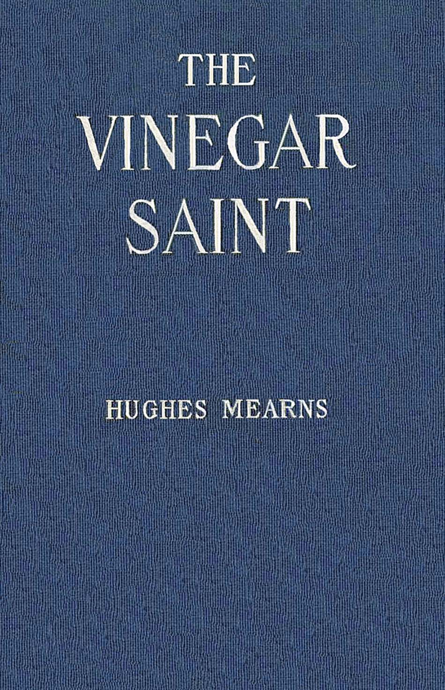

Title: The vinegar saint
Author: Hughes Mearns
Illustrator: Ralph L. Boyer
Release date: February 27, 2023 [EBook #70157]
Language: English
Original publication: United States: The Penn Publishing Company, 1919
Credits: D A Alexander, David E. Brown, and the Online Distributed Proofreading Team at https://www.pgdp.net (This file was produced from images generously made available by University of California libraries)

She stood watching

By
HUGHES MEARNS
Author of “Richard Richard”
Illustrated by
Ralph L. Boyer

THE PENN PUBLISHING
COMPANY PHILADELPHIA
1919
COPYRIGHT
1919 BY
THE PENN
PUBLISHING
COMPANY

The Vinegar Saint
TO
FAGLEY
“Someone must keep watch lest the Heavens fall!”
—The Vinegar Saint.
(For aren’t all prefaces really postscripts?)
THIS chronicle of Gorgas and her friends was within sight of the end when out of Germany came the incredible news of war. Twenty-five years earlier Bardek had fought “the big Austrian” because “he had spoke against the French”; all of which the present scribe had duly writ down, but only as one tells of ancient passions or historic loves and hates. Who, outside of unspeakable Germany, was prepared for the shock of the world war? Then, when our own boys were moving across the seas—just because one had “spoke against the French”—the history of Gorgas and the Vinegar Saint was put aside, along with other matter that we once thought important; and the present historian was standing reveille, watch and guard on a scrubby hill leagues from home. Finally comes the collapse of the mad German dream, as abruptly as it began, and things of peace and sanity emerge, including this story of the Vinegar Saint.
Well, good is good, and evil is evil; and there is to be no compromise nor confusion of the two. Such is the conclusion of the victory just accomplished—which is only what the Vinegar Saint had contended all along! It did not seem to need a world war to prove so true a truth.
[ii]The chronicler cannot resist giving Captain “Chuck” Williams’ account of a late meeting with Bardek. Slim and spruce he was; clean shaven—to prevent the white stubble from giving his years away; a major in the brilliant full dress of the French, one of that gay band, veterans all, who visited America during the early days of our entrance into the conflict. It was a leaden, characterless April day—a perfect “Deutschertag”—but he was spluttering French like a Roman candle. “Chuck” burst into the group, clicked heels and saluted profoundly. “Bardek!” he shouted, grasping his hands. “You old grandfather! What in the name of poetry are you doing in uniform!” The rogue! He was sixty years old if a day, but had got himself up like a youngster of thirty.
He wrung “Chuck’s” hands with the old-time fervor, rattling a half-dozen medals on his breast, but his face remained a pantomime of inquiry, puzzledom and willingness to please any lunatic in the uniform of the U.S.A. Turning limply to a brother he begged a translation; then replied gravely, in French, “One is never too old to fight for France”; and added, “I am sorry that in my youth I did not pay attention to my teachers and thus learn to speak your beautiful English. Alas!”—a delectable shrug—“I know but French.”
“You are Bardek—” “Chuck” began. “Bardek!” echoed the major. “You know me, then?” The shoulders lifted slightly. “Bardek, c’est vraiment moi! Bardek! C’est ça! Commandant! Soixante-dixsept[iii] régiment!!” The shoulders went higher and prouder with each phrase, his whole suite following him in exact imitation. “Tr-r-oisième bataillon!!! Chasseur a pied!!!!” But the proud picture soon dissolved in swift laughter. “At the service of m’sieu’ le capitaine,” he bowed. “Le commandant is complimented that m’sieu’ le capitaine should remember his acquaintance. We have perhaps met in France?”
“It was in America, Bardek!” Captain Williams insisted. “Don’t try any of your infernal jokes on me. It was in Cresheim Valley! At Mount Airy! And what’s all this nonsense about not knowing English!”
Bardek waited patiently for the interpreter to make the speech into French. “It was perhaps my grandfather,” he shrugged politely. “America I do not know. Always,” he touched his heart lightly, “always I have lived in France.” And from that he could not be budged.
Nevertheless, he ate the captain’s luncheon, he and his gay “devils”—“Chuck” was the envy of the whole restaurant—meanwhile telling him, in a French which was painfully slowed up for foreign ears, all the news of all the world. There were staccato, rapid-fire asides, to be sure, which drew roars from his companions; but he would not step out of the rôle of Frenchman. Many times he repeated, with varying grades of fervor, “Always I have lived in France!”
At “Chuck’s” final handshake, however, he relented. “Vive la France!” said “Chuck,” gripping him hard.[iv] “La Fr-r-rance!” growled Bardek. They shook hands ferociously. Then the major leaned over—“Chuck” thought he was about to be kissed!—to whisper solemnly in his ear, “And you will give my loave to ol’ Mack, if he be still alive, an’ to the Professor, and to the good Goargass, and you will tell her to be vair-r-y care-ful of herself. She is now too ol’ a woman to go splashing in rivers when it is yet April!”
He left in a storm of basso laughter.
H. M.
Fort McHenry,
Maryland, U. S. A.
| BOOK ONE | ||
|---|---|---|
| THE GOLDEN CHILD | ||
| CHAPTER | PAGE | |
| I | Legs | 11 |
| II | Gypsies! | 29 |
| III | The Old Paper-Mill | 39 |
| IV | “That Not Impossible She” | 46 |
| V | Bardek | 59 |
| VI | Liberté, Egalité, Fraternité | 72 |
| VII | A “French Day” at Night | 85 |
| VIII | “My Theory Is—” | 98 |
| IX | “Bong-jour” | 110 |
| X | Honorificabilitudinitatibus | 123 |
| BOOK TWO | ||
| THE HIDDEN RIVER | ||
| XI | Sixteen | 143 |
| XII | Mixed Rendezvous | 152 |
| XIII | Topic Number Four | 165 |
| XIV | A Morris Day | 180 |
| XV | The Lady of the Interruption | 195 |
| BOOK THREE | ||
| THE CALL TO BE FREE | ||
| XVI | Rats! | 221 |
| XVII | An Unexpected Bingle | 233 |
| XVIII | A Parable of Ignorance | 249 |
| XIX | Tobogganing | 261 |
| XX | A Connoisseur of Joy | 278 |
| XXI | Eve’s Choice | 292 |
| XXII | Top-o’-the-Hill | 302 |
| BOOK FOUR[vi] | ||
| CANAAN | ||
| XXIII | My Lord and Eke My Master | 323 |
| XXIV | The Hold-up | 331 |
| XXV | Dago | 339 |
| XXVI | The Biologist and the Puritan | 353 |
| XXVII | Tzoo-oom! | 368 |
| XXVIII | The Midnight Express | 385 |
| XXIX | “Straight! Straight! Straight! Straight!” | 401 |
| PAGE | |
| She stood watching | Frontispiece |
| “It looks almost finished” | 67 |
| “I am loafing my life away” | 161 |
| “Top-o’-the-Hill” | 343 |
[viii]
“Are you a child or a teetotum?” the Sheep asked.
[10]
The Vinegar Saint
THE young man of twenty-three was not a clever tennis player, but his partner and his opponents, men of forty, were obviously less clever. The Mount Airy Club courts were sought chiefly by two sorts of players, boys too uncourageous for baseball, and men of impending girth; secluded by fine old ragged trees and off an unused road, it had no gallery of experts to disturb the timid.
The young man belonged to neither class, but he found his Saturday afternoon game of tennis with perspiring business-men just the thing to put him in tone for his own week’s business of research among revered but defunct Elizabethans. Besides, he often had the joys of victory hard won.
At present, he was fighting it out with a butter-and-egg middleman. Years of handling a fragile and perishable commodity had made the middleman self-conscious in the presence of so egg-like an object as a tennis ball. He puzzled his opponents, therefore, as the[12] inexperienced whist player so often does, by unaccountable delicacy when one naturally expected a smashing drive, and at other times by reckless lobbing—as if he had just condemned a bad shipment!—when the safe return was a gentle touch.
A wife or two sat sewing in the lee of a cherry tree. They often stopped their mild chatter to watch some contested point—sometimes the ball stayed in play unaccountably long; a quarter of the returns was accidental!—at such times the repartee on the courts was equally compelling. A “professor” is by instinct talkative, and the enforced reticence of butter-and-egg middlemen unloosens sudden outbursts of speech—the figure has an unfortunate but truthful suggestion—like dammed things.
All this was a generation ago—June 17, 1888, to be exact—a period when tennis in America was an exclusive sport like lacrosse or cricket. But the game had already made great headway toward being an American thing. Mount Airy players had long ago dug out the English “lawn” to make a “skin court”; they had twisted the English “thank you” into a technical and not always polite order to return stray balls, and had adopted the usual American system of “badgering.” Anyone could see that the young chap was trying to “talk” his opponent into error. In the American code, the man loses caste who cannot stand the steady grind of talk directed persistently at every weakness.
An accidental shot to the middleman’s left hand, and an apt remark about left-handedness in general, had unnerved[13] the professor’s opponent for the moment, causing a deposit of several easy balls in the net. Further well-placed banter encouraged the irritated middleman to take out a little private revenge on the ball; result, a walloping “three-bagger” over toward the Mount Airy sky line.
“Hard luck!” the young man murmured in mock politeness, gazing satirically after the ball, but the middleman seemed to view that terrific flight with deep satisfaction. His partner, however, scolded and advised him to be “steady.”
The game stood “four all.” It was the middleman’s service. That looked like a sure win for the young professor’s side; that is, unless the middleman grew cautious and canny. Tennis is a game requiring great strength and equally great delicacy. The middleman had been brought up in the produce business. For ten years he had assisted, between two o’clock in the morning and sunrise, in the transportation of hundreds of cases of eggs, than which there are few occupations requiring more combined strength and delicacy.
The middleman settled down to business. Balls were served with the wizard-like dexterity of a juggler. There was absolutely no “breakage”—a clean, fine shipment; score, 5-4.
At the same time the professor suddenly slumped.
He missed easy shots and fouled his partner. A young person sitting cross-legged on the side-lines—it was one of the many Levering girls, although one could not be sure without one’s glasses—had been for[14] some time deliberately making fun of him, and in a very stealthy fashion, too. His private and original twists of chin, arm, head, even the crinkling of the eyes to avoid the glare, these had been sedulously imitated. The professor put the left palm to his chin—a thoroughly characteristic attitude; the young lady, squatting like a tailor, put her left palm to her chin and wiggled the fingers in some subtle token of derision. The professor played with a twisted lock at the very crown of his head; the young lady elevated a gorgeous bunch of her own brown hair.
This mirror-like mimicry got on his mind and caused some extraordinary tennis. Yes, she was one of the “Leverings”—a familiar name in that locality—but for a time he could not precisely place her. Ah! Those Leverings with the outlandish names, Regina?—Juanita?—
“Hard luck!” grunted the middleman, with a sharp tinge of vengeance in his tone. The professor had served a monstrous “out.”
What was the name? He cocked an eye aloft and sucked in both cheeks—an attitude of cogitation; the Levering young lady twisted her head and neck into a Pre-Raphaelite Pièta. He had danced with her many times. He had played tennis with her at—ah! Manheim! Manheim Levering! That was it. No! Manheim was the name of a street.... Some absurd family name. What was it? A bad return threw the game into deuce. He clapped his hand over his mouth as a sign of apology; the Levering person—first name[15] not yet recalled—immediately hid her face with a spread-out palm and peeped out between the fingers, a sign of utter shame over the bad play. Keyser! That was it! Keyser Levering. Of all the absurd names to give a girl! The Keysers had come over with Pastorius; that was enough to justify the maltreating of a young woman who—gracious!—she was pulling her nose, stroking it gently! Extraordinary conduct! Perhaps the name had affected her in some way. Names do react upon the owners; few Percys ever become valiant; Percy Hotspur was only a glorious exception. Pulling the nose was one of the young professor’s really bad habits; he had struggled all his life to stop it; the very thought of stopping gave him an uncontrollable itching. There! he was doing it again. And she? She was polishing vigorously with little finger upraised. The minx!
The professor suddenly doubled-up and rubbed his belt. He had caught a stabbing blow “in the wind,” as they say in boxing.
“Game and set!” exulted the middleman, and then offered satiric apologies for the knock-out; but the young man heard not; he was busy getting his breath and watching Miss Levering mimicking a gentleman doubled-up with a tennis ball in his stomach. A man may do some things, he thought as he pressed his lips and tried not to wince, that a lady should under no circumstances do. The young woman was certainly not herself that morning. Besides, he had borne the blow like a soldier, and had only passed a hand lightly over[16] the burning spot, while she—she was pantomiming like a child with the colic.
His memory of her conduct on other occasions gave no hint of this. He recalled a quiet, lady-like person, mature, solicitous of the latest news of Elizabethan playwrights. The miss before him, sitting tailor-fashion on the grass, was carrying on—why, she was puckering her lips like a—but so was he!
And now she was flirting with him, one eye deliberately closed, the other looking up mischievously. Could it be the heat?
Finally he marched over and accused her of losing his game.
“You sat there telling me all my faults in sign language,” he told her. “I got so interested I forgot how to play.”
“Just when did you learn?” she inquired mildly.
“Well!” he looked at her. Without doubt he was an erratic player, brilliant and simply bad alternately, the sort that never improves; but he had not the least ambition to do better, so the satire had no sting for him. “Well!” he retorted. “It wasn’t yesterday.”
“No!” she speculated. “No! It couldn’t have been yesterday; it must have been this morning—after luncheon.”
Her right hand made a vigorous swish through the air; her eyes followed an imaginary ball which obviously sailed high out of bounds; her left had come clap over the mouth in clear chagrin. In a flash the professor[17] had himself dramatically presented at his worst, but her cheerful laughter saved the mimicry from anything but good-natured raillery.
Then she told him how to hold his racket for certain plays, and instructed him in the theory of the angles of incidence and refraction upon which both tennis and billiards are founded.
“Yes!” he would say, and “Really, now!”; or “Why, we learned all that in physics, but I never saw any use for it!” But his main interest was in watching the bright, eager face, the frank, brown eyes which looked straight into him steadily and explored him; and without the slightest gleam of—well, there is no word for it—the sort of mature awareness that is rarely absent when a woman looks steadily into the eyes of a man. There was health in her face and a dominant egoism like a man’s. The last time he had talked with her she had been timid, and clinging, and feminine; a thing that had frightened him off. He remembered that he had likened her to a young aunt—visited rarely—who used to throw her arms about him without notice and kiss him back of the ear. After much practice he had learned finally to sense the beginning of the aunt’s attack and so, in a measure, defend himself. A pathetic lookup of the eyes, dog-like and reverent, was the unfailing sign; just so, at their last meeting, this Levering lady had regarded him as they walked together. Unconsciously he had kept one arm ready to ward off a possible pounce.
[18]Miss Levering had not the shadow of a pounce about her now. She was talking tennis like a sporting editor. Somehow, the professor felt sorry. His strongest wish at that moment was to be attacked.
And he wasn’t listening at all to her harangue.
“You must watch the other fellow’s swing. If he ‘cuts’ up you mustn’t ‘cut’ down. The ball is turning round and round, this way,” she illustrated by swinging circles. “If you spin it the way it’s going it will drop dead.”
The professor was watching her animated face with the most open delight; and he followed her minute instructions absolutely not at all. Simple admiration beamed from him.
“My dear young lady! My dear young lady!” he was saying over and over to himself. “I will never call you ‘Keyser.’ It is the name of an emperor and a dog, but not of a bit of humanity like your delightful self. Wonder of wonders! Cosmos and chaos! Who can understand, O Lord, thy marvelous doings.... Male and female created He them.... Eyes, smiles, voice, gestures inimitable; soul, being, essence—what are they?... I don’t know anything.... Saw her for hours at a time and never noticed her till now.... Could we live on $600 salary and the rent of six small dwellings, not always rented, and the income of the D. & W. R. R., if it ever pays dividends? Glory be to Peter, what are eyes made of? And flesh and blood? Marvelous!... The Lord have mercy upon us and incline our hearts to keep Thy law!... Talk on!...[19] I’m not listening! It’s great! Oh, what a wonderful—”
Then he spoke aloud, ejaculating as if he had been stung by a green fly.
“Great Jupiter!” he shouted, and “Bless my soul!”
She had stood to show him how to swing his racket for a “Lawford,” in those days a rare stroke among amateurs.
“Bless my soul!” he exclaimed, staring at her feet.
The young lady’s dresses stopped at her knees! As she swung about, a long braid of hair became visible for the first time, tipped with a dainty bow of crimson ribbon.
“Say!” he clutched her by the arm. “How old are you?”
“Thirteen,” she replied, wondering at his excitement.
“What’s your name?” he demanded.
“Gorgas Levering. Same as it always was.”
“Thirteen! Jupiter Pluvius! Arrest me, somebody! Are you sure your name isn’t Keyser?”
“Keyser is my sister.”
“Thank goodness for that. Gorgas! Bad enough. But Keyser—ugh!—Are you named after a street?”
“No; family. What’s the matter? What are you looking at me that way for? Counting my freckles? Anything wrong with my feet?”
The professor dropped on the grass and laughed himself into exhaustion.
[20]“Your—legs,” he got forth finally, but quietly, so the wives on the benches could not hear. “Legs—gave me—fright. They saved you, though. Hadn’t been—for—legs, I might have asked—you to—marry me.... Thirteen!... Gracious!...” He sobered up suddenly and remarked to the spirits of the air, as it were, “There ought to be a law against me.”
Miss Gorgas Levering sat down again cross-legged. She pulled her short skirts over her knees. Then she wound her long braid about her head and fastened it with a sharp twig. Demurely she looked at him, as her elder sister might have done.
“As you were saying, Professeh Blynn,” she mimicked one of her sister’s college friends. “Don’t let me interrupt a pro-po-sal. Small offehs of marriage cheerfully received. First come, first served.”
“Your face is quite old enough,” Professor Blynn speculated.
Her features were as womanly as they ever would be. Some young girls achieve that sort of maturity early; it is only a question of lengthened skirts and twisted hair and they grow up over night. Her vocabulary was strikingly mature, too; sure sign of much reading; and it was streaked with dashes of vigorous young thinking. Her strong coloring heightened the illusion.
“I’m an out-of-doors girl,” she explained. “I play tennis, you know—really play,” she laughed; “and I skate and climb trees and ride.” Then she told him, with comical gravity, that she was the beginning of a[21] new species, and asked if he had read Gardiner’s “The Femine?” “It’s an English book; sort of pamphlet. It tells about the coming woman. She will be strong, first of all. He didn’t convert me. I was always that.”
The instinctive teacher in him brought him quickly to her level. He did not make fun of her, nor patronize. Just the right word or two he said, as he lolled on the grass and deliberately stuffed a brier pipe, enough to take her off the defensive, a position which every intelligent child must assume in the presence of superior elders, and led her to communicate naturally. He talked to her of modern ideas about woman; although his own ideas on the subject were not at all formed. “A Doll’s House” had just been translated into English and was already creating no end of stir. He told her about it. The story of Nora and her vain sacrifice caught hold of her active young mind. He promised her some books, forgetting completely her years as he had done in the beginning; and recommended a lot of German “new thought” just emerging into translations, rather shocking reading in those days, even for males.
Without any self-consciousness they explored each other’s faces as they talked. Certain of his little twists of mouth and eye—he had a habit of screwing up the left side of his face as he propounded, it seemed to assist him as he dug the idea up out of his mind and threw it from him—these she stored away without meaning to, along with his sudden wrinkling of brow, and the odd cock of the neck. Something dramatic in[22] her had always been at work, seizing the high peculiarities of folks for the sake of later caricature. She did not miss that sly rubbing of the hand along the nose, nor his sudden display of white teeth when he smiled.
As a rule, he lost sight of his auditors when he spoke. His classes were always a blur, or rather, they merged into a single personality, which attended, squirmed, laughed as a complete organism. And in his successful dealings with very little children—they always received him into their intimacies without reserve—he had soon discovered that the best results were obtained when one does not in the beginning stare into their faces. You must look far off down the street as you parley with them, or they will catch the assumed interest or the lurking irony in your eye, and shy off.
So at first he only glanced up at her occasionally. The picture flashed upon his mind was not at all that of a child, but of a young woman of his own age, yet infinitely more self-absorbed and independent than any he could recall. The chin, grasped firmly in her hand as she leaned forward, the strong, searching eyes and the coiling braid and the absence of legs had their effect gradually of making him forget that he was dealing with a merely precocious youngster; so, as he warmed up to the tale of Helmer and Doctor Rank and Nora, he shifted about and watched her animated brown face.
The sun and the wind and the rain had toned her in shades of brown. The hair was black-brown, the eyes[23] sepia but lustrous and alive, the skin ruddy-brown like a young Indian. The fat, short-fingered hand that supported the chin was almost cedar.
The illusion of maturity was enhanced by a flashing interpolation or two.
“Women mustn’t imitate men,” she asserted. “That’s silly. Men have some fine things that don’t belong just to them; that’s all. Why shouldn’t I ride a bicycle? Why shouldn’t I play tennis and get tanned? Why shouldn’t I work hard, too, and get all there is out of the sport? I’m no jelly fish. Chinese women can walk; can’t they? Well, why shouldn’t they? I found that in Gardiner, but I thought of it myself, long before that.”
They discussed a possible Chinese woman who had revolted, and the consequences in community and family persecution. Then she hinted guardedly of some personal persecutions. The mother had misgivings. There was talk in the family of corralling and branding and fitting for market.
She had never been to school. She had fought against it; and they had given in. A nursery maid had taught her to read and figure, the rest had taken care of itself.
He admired her immensely then, she was so careful not to show a partisan spirit in a matter that so much concerned her happiness. The mother was quite right to wish her daughters to be alike, she admitted; but it is not given even loving mothers to understand all about their children. Sacrifice must be made by the children,[24] she knew, for mothers must not suffer too much, even when they were unwisely restrictive or made laws just for the sake of making them. As she spoke thus soberly, the little lady seemed really older than the man before her.
Then the spell was shattered.
“I will never wear a boned waist!” she broke in frankly.
In Mount Airy, twenty-five years ago, one did not speak openly of invisible clothing. In school one was taught to say limb, and not leg; and no young lady ever admitted any public knowledge of petticoats or stockings.
Then Miss Gorgas Levering yanked the twig from her braid, stood up, displayed two lithe young legs, shedding at once ten years of maturity.
He stood up, too. “Gorgas,” he began, and then stopped to look at her quizzically. “I can’t get used to that name,” he smiled. “With ‘Gorgas Lane’ just beyond the Unruh farm—” he waved a hand jokingly.
“But you!” she cried in defense—she knew all about him; he was “the professor” and a marked man. “‘Allen Blynn’—that’s a lane, too—Allen’s Lane! And that’s not so far away, either!”
Evidently the little lady was sensitive about her odd name.
“But Allen is a regular name,” he protested.
“So’s Gorgas!... And you’re ‘Allen L. Blynn,’ too; why, you’re a real ‘lane’!”
[25]“Oh, I dropped the ‘L’ long ago—when grandmother died.”
“I never had it!” she exulted.
“But the ‘L’ isn’t for ‘lane,’” he shook his head sadly. “It’s much worse—it’s for ‘Lafayette.’”
“Oh!” she gasped her delight.
“Much worse, eh?”
“I should say so!”
“I take it all back, Gorgas,” he dropped his bantering tone, and shook his head so humbly, and smiled so pleasantly that she was soon mollified. “We’re both named after families, I see—the kind of families that have streets named for them; but that ‘Lafayette’ of mine is worse than—worse than even ‘Keyser’!” Gorgas laughed; one’s own name is never funny, but how comic are other persons’! “When Lafayette paid Mount Airy the great visit in 1825,” he explained, “he made a very formal call on my grandmother—kissed her hand, I believe—well, she gave up the remainder of her life to bragging about it, and she hoped to perpetuate the event by naming me ‘Lafayette.’ Wasn’t that a dreadful calamity to put upon a young infant?”
“Awful!” she agreed heartily.
“While she lived I had to be ‘Allen L. Blynn,’” he smiled ruefully, “But ‘Lafayette’ died with her, bless her good old soul. At college when they asked me what the ‘L’ stood for, I used to say, ‘Just L.’ You don’t know how scared I was lest that crowd should discover all about that kiss-the-hand business!”
[26]The middleman and his group came up just then and joked obviously about their prowess as players.
“Getting points from Gorgas?” inquired the middleman. “She took the junior cup, you know, and against some smart boys, too. At least they thought they were smart.”
The middleman had won both sets that afternoon, and could afford to expand. “You know, you tutors ought to be tutored before you take us on again. That might make you—”
“Astuter?” suggested the professor.
His grin was not at the jest. He was thinking of Gorgas, standing erect and brown as young Pocahontas, and looking very like that famous lady. The frown had not yet gone from her eyes. She would not wear—! Bless her! He could see her years later in all the tortures and disguises that women permit themselves to indulge in, including the ugly balloon sleeves, which were already enveloping very young girls; and pyramidal high-heeled shoes; perhaps even a “bustle.”
Someone asked the time.
“Jee-ru-salem!” whispered Gorgas. “I’ve got to cut it home.”
“Tell your mother I’m coming by on Wednesday afternoon. At about three. I’m looking over that Williams boy at two. It’s near you, you know.”
“Very good, Professor Blynn.”
“Mr. Blynn, if you don’t mind.”
“Very good, Mr. Blynn.”
[27]“Stay around Wednesday, will you? I want to talk some more.”
“Very good, Mr. Blynn.”
“Come around; you’ll find me in.”
The frown was entirely gone. She was smiling at her own “poetry” as she moved off.
“I’ll find you out, too, if I kin,” he threw back.
She walked two or three swift steps down the path before she retorted, without looking around:
“No, you won’t. You’ll simply ‘chin.’”
This was a pleasant blow at his profession. He was a talker. Only that very morning he had written in an “album”—it was a day of albums—answers to questions that bared him to the core.
What is your occupation? Deliverer of addresses.
What would you rather be? Maker of speeches.
What is your favorite game? Conversation.
What game do you most dislike? Conversation of others.
He watched her as she walked swiftly down the path. Good-looking youngsters do hold the eye! The suggestion of young Indian persisted, the ideal Indian maiden of Hiawatha: she was so brown; the hair fell in an enormous black braid; her form was almost curveless; and she strode along with all the motion in her gliding feet, her lithe body as steady and as straight as a young poplar.
She disappeared for a moment in the dip of a gully,[28] then rose again and dwindled slowly down the long path across a field. With folded arms he stared after her, thinking of many things: of the beauty of young childhood, a wondrous, vanishing thing; of her active, mature mind, caged up in that child’s frame; of—at the end of the path she turned swiftly, as if she knew he was there, and shot a hand high in the air as a parting salute. He waved back instantaneously. He could watch her for two minutes longer, until she crossed the railroad. But she trudged sturdily on and did not look back again.
THE Williams boy, a well-built little man of eleven, was a healthy, riotous animal, keen, fluent and right-minded—but he had not been “promoted.” Blynn had found this out in an accidental meeting with the lad. The result was a regular Wednesday afternoon visit at the boy’s home with a new sort of “lessons,” and many tramps down Cresheim creek and up the Wissahickon—the core of the method—where instruction was part of the game.
Blynn had the teacher’s gift of presenting unknown regions of knowledge with all the allurements of advertisement of seaside estates. He aroused interest, a desire to explore, a proper pride in achievement; and, above all, hope. He never complained of stupidity, nor expressed the least impatience with slowness; so in this way he ever stirred up latent or lost personal faiths. Within a few months the Williams boy was ready to pass into the next grade and do himself credit; unless the well-intentioned but narrow school dames of the Hall should petrify his interest and with daily croakings cut off all communication.
Gorgas was standing in the fine old doorway of her home when he came out of the Williams’ gate. He[30] waved to her cheerfully; she saluted gravely in return, one lift of the hand, as the Roman stage-senators do. When he came forward eagerly, his severe face alight with interest, she stood watching him without motion. That was a characteristic of Gorgas which she had possessed as a baby and which she maintained all her life; it gave charming dignity to her later years; active at one moment as the famous imps below, the next moment rigid as a wax-work, yet thunderingly alive, a fawn struck into silence, listening.
Not until he stood beside her did she move. Then abruptly she thrust out a hand.
“How do you do, Mr. Blynn,” she smiled an absurd, artificial smile, the perfect mask of a hostess. “Won’t you sit down? It’s awful good of you to call.”
“Wie geht’s, milady?” he bowed in perfect understanding of the game. “Excuse! I haff been talking zee Cherman Sprache mit dot Wilhelm’s poy und I cannot get back to English for several minuten after-varts, afterwarts—afterwards—there! My tongue’s free. ’Raus mit ihm! Gesundheit! How are you? Schreckliches Wetter—I mean, sticky weather, isn’t it?”
They had reached the living room by this time. A glance about had not revealed Mrs. Levering or the older daughter. No doubt, they would be forthcoming later.
“The weather is rather depressing,” she drawled. The tone struck him as decidedly familiar; but when she opened her large eyes and blinked deliberately at him twice, and then drew a languid hand across one[31] cheek and fidgeted a moment in her chair, as if to distribute an imaginary “bustle,” it came to him with a rush that she was picturing Mrs. Williams, whom he had just left.
Blynn squeezed down into his chair, thrust his head into his neck, puffed out his cheek, a recognizable portrait of Mr. Williams, and growled.
“I don’t like it! I don’t like it! I don’t like it at all!”
In a moment or two they were caricaturing the neighborhood and making guesses as to the portrait.
He didn’t say, “That isn’t fair,” or “You shouldn’t mimic your elders that way”; nor did he begin any sentence with, “It isn’t nice for young girls to—” Instead, he joined in, became particeps criminis, and at once was initiated into the secretest of fraternities, the brotherhood of children. In a little while he had won the right to ask her any personal question he wished without once being suspected of school-teachering.
He wanted to know what she was reading.
“‘Man and Wife,’” she told him.
Wilkie Collins wrote it, and Professor Blynn did not know that! It was about a Scotch marriage, she explained: two persons had unwittingly acknowledged themselves man and wife before witnesses; that was enough to bind them in irrevocable marriage.
Her explanations were clear—evidently she knew what she was reading—and she talked of marriage and children with extraordinary frankness.
“At the same time I am reading ‘La Peau de[32] Chagrin’ par Honoré Balzac,” this with a breathless kind of mystery.
The change of timbre as the French name floated out musically brought Blynn to sudden attention.
“You speak French?” he inquired incredulously. He knew that she had never gone to school, and that among Mount Airy families it was not then customary to have governesses.
“Assez pour m’ faire comprendre,” she came back quickly. “Et vous, m’sieur? Vous l’parlez aussi?”
“Where on earth did you learn the language?” he showed his admiration for her glib prowess. “I read easily enough. It cost me the hardest kind of grubbing, too. But I couldn’t talk it two minutes.”
She grew suddenly statuesque.
“Who taught you?” he persisted.
“Bardek,” she whispered. “You must not tell. You will not tell?”
He crossed his heart.
“It’s a great secret. Mother must not know. Bardek is Bohemian; he speaks all languages.”
“Who is Bardek?”
She lowered her voice.
“Promise you won’t tell.”
He promised readily.
“Bardek is a gypsy, I think; but he doesn’t travel. He lives in the old mill in Cresheim Valley. I ride in the mornings, you know, very often alone. He talks to me in French and tells me how to say things.”
“How long have you been doing this?”
[33]“Three years.”
“Since you were ten?”
“Yes; that’s when I got ‘Gyp.’”
“‘Gyp’ is a horse?”
“Yes.”
“Cresheim Valley in the mornings is a rather lonely spot, eh?”
“Yes; that makes it fine! There’s absolutely not a soul about between seven and eight. If anyone comes, I step into the old mill.”
“Merciful heavens!” said Blynn, but not aloud. Nothing in his manner betrayed the slightest hint of anything but entire acquiescence in the policy of meeting gypsies in an unfrequented valley between seven and eight in the morning.
“He teaches me other things, too,” she went on. “I’ve never told this to anyone but you; not a person. We seem so well acquainted—after yesterday. Perhaps I oughtn’t to tell you. It’s been a terrible thing to keep to myself. They think—” motioning toward the house—“I pick up French out of books, the way I get most things. I do hammered copper and silver inlay, too; Bardek taught me. But I don’t get practice enough. Bardek says one must give a life to it. He makes beautiful things, and sells them to rich people.”
“Do you pay him?”
“Oh, no!” she smiled in a superior way. “Bardek is above money.”
“Ugh!” thought Blynn. He seemed to remember[34] a dirty, fat man, pounding away on something at the mouth of the ruined paper-mill. He had rings in his ears, and a pair of huge mustachios gave him a villainous air.
“I have tried to give him money. But he stopped all that in no time. He took me inside and showed me a cunning box set in a stone in the mill. It was full of gold—oh!”
The “oh” was uttered with quick anguish. Blynn came swiftly to her chair and raised her head. Tears were flooding her eyes, and her face was screwed up into a horrid attempt to suppress the noise of weeping.
“What is the matter, my dear child?” he asked again and again.
Several times she tried to speak. Evidently from her glances toward the door she feared someone would be aware of a break in her voice; so with heroic efforts she shut back the sobs.
“I have—told! I—have—told! I promised not—to tell. I have told—you. It is—all right—I—know. You would keep—it—a—secret. But it hurts—that—I—have told. Bardek has been—so—good to me. It was—wicked.”
It was simply an accident, he assured her. Quietly he soothed her. “We are pals now,” he told her. This would make them into a league of secrecy. She could trust him. All his life he had been a father-confessor to children. He was tested. Keeping a secret like that was hard for her. Now it would be easier.[35] Some things are almost too much to hold. She nodded. One must have outlets. Mothers were made for that purpose. She looked worried at that, so he took a quick turn. Sometimes even mothers couldn’t just understand; then one must have a pal or “bust.” Her eyes showed approval. A pal must know everything. No secrets from pals. That seemed to be agreed. He would go with her to Bardek some day soon—she showed half-frightened wonder at the plan—well, they would talk it over like good comrades later. Someone was coming.
“My name is Mum,” he nodded, “second-cousin to Dumb.”
She gave him a look of wild approval as Mrs. Levering appeared from the rear of the house; she was dressed for travel and hurrying.
“Why, Professor Blynn, I declare!” the good lady was obviously surprised at his presence. “I am particularly pleased to see you. Harold Williams has been praising you to me and telling all about you. You’ve done wonders with that boy—”
“Oh, no! no! God and his good mother are responsible for all the wonders. A fine little fellow, he is. Somebody got on the wrong side of him; that’s all.”
“But why didn’t I know you were here?” She looked mildly at Gorgas.
Blynn hastened to explain.
“I was talking with Gorgas last Saturday afternoon at the tennis-courts—”
[36]“Ah! You came to talk about Gorgas. Good! The very thing I have been thinking of myself. I wish I had known you were coming, for I must be off to our little literary club. We’re fined if we don’t come on time,” she smiled as if the matter were unimportant. “Don’t let me seem abrupt, but I have only a half-minute. So let me come out bluntly. I want you to take Gorgas’ education in charge; look her over; find out where she needs patching and repainting. I declare she has grown up out of babyhood before I am ready. It is almost ungracious of her. I must blame somebody. She is thirteen years old, and doesn’t know anything. My fault, I know; but you’re a wonder—everybody says so. You’ll do it; won’t you?... Oh, yes. I must be practical. Everybody is poor nowadays—the Democrats are in, you know!—I must inquire about prices. What do you charge by the hour? I must ask for wholesale rates, for Mr. Levering’s wholesale, you know, and always gets discounts!”
Generations of Pennsylvania-German thrift beamed coldly from her eyes, although the rest of her ample person actually smiled.
“Absolutely nothing an hour, Mrs. Levering.”
“Oh, no!” she protested, but she looked relieved. “I will not hear of that. The Democrats haven’t brought us that low—yet. Although goodness only knows what’s to happen next. I really believe they caused that blizzard last March! Well! We’ll talk it over later. But you’ll have to charge something. It’s your business, man, and a tough job you’ll have,”[37] twitching Gorgas’ ears affectionately. “Reading novels and riding Gyp—that’s this little girl’s idea of getting an education!”
“All right, Mrs. Levering, we’ll talk it over later. But I make it a rule never to charge for this sort of out-of-school work. I like to do it. It’s my fun. But you may give me a dinner occasionally. We teachers do get hungry for good food—and good company!”
“A bargain!” the lady called out happily. “But I’m off. I’ll be late. You’ve cost me a quarter-dollar fine, young man. Dinners? If you do anything with Gorgas I’ll take you in as a permanent boarder. Day-day, child. Goodby, Mr. Blynn. Sorry I couldn’t stay. Gorgas,” she was at the door now, “get Louisa to make a nice cool drink. And give the Professor something to eat. Don’t ever let him get hungry!” Her laugh carried her down the steps.
As they picnicked on the back-lawn, his instinct told him to keep away from the Bardek story, to act as if it were a thing to be forgotten. Only when he was ready to go, and she seemed to have an unwonted appearance of depression, he repeated his promise to keep the matter secret until she would wish him to tell. This seemed to brighten her tremendously; for she was terribly downcast at the thought of her failure. Now she seemed to be almost her buoyant self.
“You did not tell your mother I was coming,” he remarked.
“No.” But she did not seem troubled.
“Nor your sister?”
[38]“No,” very seriously, “they were both going out. I was afraid if I told them they might stay home.”
Then the comical side of her statement struck her. They both laughed over it as they shook hands.
“Goodby, pupil,” he waved, “see you later.”
“If you don’t forget the date-r,” she rhymed.
“I’ll sure be there, I beg to state-r,” he returned as he moved off.
“Wednesday next at this here gate-r,” she called after him, gleeful to get the last rhyme.
He shook his head and threw up his hands as if she had scored heavily against him. That was an instinctive trick of his, to make children feel the keen joy of a mental victory. It gave her a little glow for hours afterward, as he knew it would, and quite saved her from a far-off conscience which told her she had not been faithful to Bardek.
BLYNN found himself tremendously interested in the business of teaching young persons, but he always discounted that enthusiasm. Scholarship, he felt, was his predestined occupation. Not that he really knew any good reason why the work of a delver in past documents should be especially worthy; nor did he ever inquire whether a life given to Elizabethan dramatists could be a life well spent. He enjoyed that sort of thing, but he had the collector’s instinct, not the scholar’s, although he did not know that; he carried on his readings and note-takings and classifyings as an amateur might collect butterflies. The figure fails in one important respect: all butterflies are beautiful. Better, he was like certain dealers in antique: ugly old furniture and bric-a-brac were sorted out with the same reverent care as the really beautiful. Six hundred a year—the beginner’s salary—seemed a magnificent return for tasks that he would willingly have performed, if he could have afforded it, without money and without price.
He did not know until much later that he was an exceptional teacher. Youngsters got the habit of confiding[40] their academic troubles to him; and whether it were algebra or English grammar or poetry, he had the gift of making straight roads through the difficulties, and of charging his young friends with desire to go ahead.
A so-called stupid child or “bad” boys who wouldn’t study, these always seized his interest. Before he knew it, he had a dozen young folks on his list whose whole educational life he had surreptitiously taken possession of. The Williams boy was one; and now Gorgas had been added.
Gorgas Levering was an interesting “case” to Blynn. Through unwitting neglect, the child was out of touch with her parents and possibly in danger. Evidently she had a magnificent will, almost the only thing needful with the right sort of teacher, but perilous if it is coerced or left to drive its own unaided bent. The thought of her three years’ intimacy with the Bohemian Bardek gave Blynn a physical chill.
Bardek had done wonderful things with her, the French, for instance; she had the very tang of a native, even the shrugs and almost inimitable twists of hand and head. Blynn recognized the method; it was his own; and he respected Bardek’s results as a fellow-craftsman would; but he was not sure that he should respect Bardek’s morals.
She was the most interesting of all the children he had semi-officially under his charge, but she was something else. The memory of that illusion of maturity he could not dissipate by any amount of concentration upon the sum of her actual years. She had come at him first as[41] a young woman challenging him to meet her on equal terms, and had stirred him as Olivia had been stirred by the disguised Viola. Some of the suggestion of that mistake continued to stay with him. The grave brown eyes searched him as he talked, and threw him into the half-belief that some witch had taken a woman and had given her the shape and habiliments of a child.
As he walked along the unfrequented streets of Mount Airy he scolded himself aloud for his shameful imaginings; but he could not shake them off. He reminded himself of Olivia fancying herself in love with Viola, and laughed. “Perhaps it is not Gorgas, but her sister. It really was brother Sebastian in the play. I’ll look her up. Keyser will—Keyser!—Bolts and shackles! What a name!”
One day he contrived, therefore, to chat with Miss Keyser, and so they arranged to spend an afternoon driving together. But on the way to “look Keyser up” he lapsed into a contemplation of the first meeting with Gorgas at the tennis-courts. “If this were Italy,” he grinned, “the thing would be simple enough; or even ‘Little Italy,’”—the near-by city’s Italian colony—“Thirteen, I hear, is rather the proper age there. At fifteen the little Italians either have bambinos or they are on the shelf. Wasn’t Lady Devereaux, Sidney’s famous Stella, about that age? I’ll have to look up precedents. Beatrice? Dante’s Beatrice? She was a ‘fourteener,’ wasn’t she? And Juliet! Ah! Juliet was just thirteen!” He quoted humorously from the play, “‘On Lammas-eve at night shall she be fourteen; that[42] shall she, marry.’... Guess Shakespeare knew what he was about!... I’ve had a sad jar. Those legs! And the braid, and the silly ribbon!... I haven’t felt so cheap since—”
He laughed aloud suddenly and set a frightened little spaniel barking with fury.
“Go it, old boy,” he called. “You aren’t half so startled as I was.... Well,” he nodded his head vigorously. “She gave me a little insight into myself and into what’s coming to me some day, I expect. The next time, I hope it will be a real woman. Just the same, I’m going to be always grateful to the little witch for the deception; and I’ll pay, too.”... He closed his lips with determination. “That Bardek fellow will be looked into—migh-ty care-ful-ly, I tell you, boy.... He’s been putting things in her head, I warrant.... Thought all that wise talk was second-handed.... Where did she ever come across Gardiner’s ‘Femine’? Heavens! Why, it’s full of rot, just the sort of thing to upset a girl and persuade her that wrong is right.... But I must be careful. If we drive her sort—” He threw up his hands.
Miss Keyser Levering was already waiting in the little two-seated family carriage.
“Am I late?” he asked cheerfully.
“No; I’m early,” she responded, digging under the seat for a rug. “That shows that you don’t know me as well as you should. Some people are always two minutes late. My specialty is being two minutes early.[43] Jump in; I’m going to drive. This ‘off’ animal is ‘Sorry,’ not ‘Gyp’; ‘Sorry’ has to be handled by one of the family. ‘Gyp’ is never in the stable days like this.”
At the mention of “Gyp,” Blynn’s mental ears stood up, but he got into the carriage with much irrelevant jesting over the relation between horses and horse-sense.
“Where is Gorgas?” he asked casually.
“Off with ‘Gyp,’ as always.” The sister was not concerned.
“‘Gyp’ is mild, I suppose?”
“Oh, yes; stupid.”
“Which way did she go?”
“Her usual—down Cresheim Valley.”
They trotted off toward Chestnut Hill. Blynn broke into a chatty strain until they had turned into the pike which marks the county line.
“Let’s go up the Wissahickon,” he suggested. “You can turn off here and go through Cresheim.”
After leaving Main Street they plunged into the Cresheim Valley, which in the eighteenth century was a thriving industrial center, with prosperous mills—three or four of them—busy at the manufacture of hosiery and paper. One has only to recall the conspicuous masculine leg of that century to know the demand for proper hose, and when one is reminded that Cresheim Valley produced the paper for the printing of the Declaration of Independence, the historic setting[44] is made; but steam, trousers, and a less rebellious time had passed the hand of oblivion over the once busy vale.
As a result, the old road was ragged and rocky, and the only sign that broke the effect of forest primeval was the ruins of two of the old mills, a half-broken dam, and a dangerous looking mill race.
Blynn kept to the safe rôle of talker; but inwardly he chafed and worried. Somewhere down in those leafy depths an unknown foreigner was enticing a young girl to come to him....
He scrutinized both sides of the road as he neared the ruined paper-mill. Tethered among the bushes he knew “Gyp” was peacefully cropping. He listened and watched, but at no time lost his cue in the small talk; and was repaid by a slight movement of the bushes and the sight of a long nose reaching for green branches.
“Sorry” neighed in greeting and stretched his head to look; but “Gyp” withdrew directly to munch his bunch of leaves.
“Has ‘Gyp’ a white star on his nose?” he asked.
“Yes,” she replied. “Do you see her?”
“No,” he looked the other way. “I just guessed. Most horses do.”
Below the mill he claimed to have dropped a glove, got out, and ran swiftly back.
Only one dilapidated corner of the ancient paper-mill was still standing, and that had to be reached via a bridge of logs. Canvas was fastened over holes in the roof, and odds and ends of boards made a patch-work flooring, through which the rushing mill race could be[45] clearly seen. The waters below swirled noisily over rocks and fallen masonry.
Save for an old stool, some rag rugs and a mass of copper odds and ends, the mill was quite empty.
ALMOST as Blynn surveyed the empty mill he knew he had made a mistake in coming at all, and was instantly eager to get out unobserved. He knew what a child would think of this sort of spying and how it would take weeks of building up to get back the lost confidence. Particularly was it important just now to maintain the genuine intimacy which had miraculously grown up between them in so short a time. As he stumbled up the rocky Valley road he was apprehensive of seeing and being seen.
Perhaps Bardek and she had been watching from near-by bushes. That thought chilled him. Mixed with the fear of losing the child’s faith in him as trusty pal was the quick antagonism against that other pal, who was no doubt with her now in this wild spot.
It was a case for slow treatment. Hurry would spoil all. To come near the rendezvous at all was a grave mistake, he told himself; he had obeyed an impulse, purely a personal one, too, and it was an impulse which his mind should have resolutely checked. It shamed him a little to think how amateurishly he had acted, after all his knowledge of the mind of children.
Gorgas must take him to Bardek in her own good[47] time. One must play a waiting game and trust mightily that all would be well.
He regained the carriage, exhibited a glove and took up the dropped conversation.
“I don’t agree with you about the Duke,” he continued. Miss Levering had seen “Twelfth Night” recently and had read it over to prepare herself for a conversation with a university instructor. “The Duke behaves quite properly, if you will agree with my theory.”
“He was a goose,” commented the lady, “groaning over his countess and not having the gumption to go up to her and talk it out. And in the last act he whisks over to Viola just because she puts on dresses. Shakespeare nodded when he made the Duke; that’s my theory.”
“Let me tell you mine,” said Blynn. “To the Elizabethan, love was an infection, a kind of pestilence, like the plague, which one caught from another. Once you have it you are ill. You become moody, put on gay clothes, wash your face, and demand sad songs. They sold medicines, love philters to give the disease, and hate potions to cure it. A chap usually knew when he had caught the pesky thing, but he was not always sure of the source. Well, the Duke had a bad case. He got it from the boy Cesario, who was really, as you know, a charming young lady disguised. Now the very salt of the play is the Duke’s blunders in guessing who played the trick on him. The Elizabethan audience understood that joke and enjoyed every one of his false moves toward the conquest of the[48] Countess. It’s as if a fellow had the influenza and began to treat himself as if he had sunburn. Every application of cold cream and every sneeze would be comedy to the onlooker. So in the end, when the Duke discovers the cause of his trouble he promptly marries it; as most of us do. Oh, he isn’t a bit inconsistent, if you understand Elizabethan love.”
“Well, that only proves the play is founded on an error,” she persisted. “If you must have a lot of historic learning to appreciate a play, it is not great drama. I insist, Shakespeare nodded.”
“What makes you so certain that love is not a plague?”
“It may be, for all I know,” she parried. “But I should think two modern young people would know when they—”
“But do they, always? A man may behave exactly like the Duke, have all the symptoms, and not guess for the longest while what really is the matter with him. Frequently he blames it on the wrong lady. Sometimes somebody has to take him aside and speak roundly to him—the girl’s father, for instance. And there are enough bad marriages to make me believe that lovers often make a wrong diagnosis. It’s still a mystery to me. Cupid and his arrows was not a bad theory. He was a wretched shot, you know; frightfully bad. That would explain a lot of mismating.”
“But the Countess?” she persisted. “She wanted to marry a woman just because she found her dressed in man’s clothing; and what did she do later?[49] Promptly switched off to the lady’s brother, Sebastian. There! I have settled your theory. She had never seen Sebastian before. She couldn’t get any—any pestilence or plague from a man who wasn’t about.”
Blynn laughed. “I didn’t want to lecture to you; but the theory is rather complicated and you have hit upon a fine illustration. How far can love carry? We say, as far as one can see distinctly. The Elizabethans put no limit—as far as the ends of the earth, to the very stars and back again.
“Beatrice and Benedict are in love long before they know it. Petruchio has picked out his Katharine before he sees her. Viola is in love with the Duke the moment she hears his name. You see, they took their cue from the carrying power of the mysterious plague. Look the way La Grippe is ravaging us; and we think it has travelled from the Far East. Besides, they believed the stars arranged all this sort of thing. We don’t believe in fate. Therefore we make ourselves too wise. I incline toward the Elizabethan theory. Do you know Crashaw’s lines ‘To His Supposed Mistress’?
“I’m content to believe in ‘the shady leaves of destiny.’”
Miss Levering was busy managing “Sorry,” who[50] seemed restive. His ears were perked ahead, and he tossed his head nervously.
“Sorry! Sorry! Sorry, boy,” she soothed. “He sees something strange. There’s a man sitting on the roadside with a lot of pails around him. Trust ‘Sorry’ for picking out anything unusual.”
Blynn looked forward, but from his side of the carriage could see nothing.
“It’s a tramp, I suppose,” she conjectured. “They roost in here. Looks like a travelling tinker. ‘Whoa, Sorry! It’s all right, boy!’ If I talk to him he calms down. ‘Whoa, Sorry! Keep your head down, boy!’”
The man came into view; he was seated on a log hammering at a copper disk, a swarthy, stoutish fellow. A huge gold watch-chain stared out from his waistcoat. He wore no collar. A faded soft hat was decorated with a long turkey-feather. The costume, plus a large mustachio and much unshaved stubble, gave him an air of vagabondia.
“Sorry” slowed down and dug into the ground; the man looked up with smiling face.
“Bon jour, la compagnie!” he saluted, flourishing his hammer. Broad rings flashed from his fat hands.
Blynn searched about for traces of companions. The tall bushes gave no sign.
“Bon jour, Bardek,” returned Miss Levering. “Whoa, Sorry, you fool. It’s only Bardek. Bardek won’t eat you; whoa, boy!”
“Mais, oui!” laughed Bardek. “Il sait bien qu’ j’en[51] ai souvent mangé du ch’val! The horse-flesh is vairy good.”
Blynn leaned forward to talk to him. Here was a fine chance to get acquainted.
“Good afternoon,” he greeted. “My French isn’t good enough to expose to the open air. I’ll have to talk English. Do you understand—”
But “Sorry” had evidently comprehended Bardek’s cannibalistic reference to the joy of eating horse-flesh, for he jolted Blynn down hard on the seat. At the syllable “—stand” Allen Blynn had abruptly sat. As they shot briskly up the drive, Blynn looked back to see the round face of Bardek extended in malevolent laughter.
When they had settled down into a normal pace, Blynn inquired,
“Who is this Bardek? Seems to me I have seen him often hanging about this region.”
“He’s a Frenchman—at least, I think he is French. Sort of a vagabond mender of kettles. I don’t know how he gets his living. He seems always well-fed and contented. He has a wife off there somewhere, and a couple of babes-in-the-woods. He comes and goes. Sometimes he is away for weeks on his rounds. We often stop to chat with him, Gorgas and I. Drat that animal. He ought to know Bardek. I’m ashamed of him. It was that big vase-like thing that scared him. He’d jump at a new tin-cup.”
They talked of the horses, then, as they emerged from a side-road, of the beauty of the Wissahickon Valley, a[52] lovely unchronicled spot in American scenery, Miss Levering steering the conversation by gentle steps back to “Twelfth Night.”
“I’m almost converted to the Elizabethan view,” she admitted. “I’ve been going over in my mind a number of girls I know who have confessed how the man came, saw, and conquered. Girls do gabble, if it is dark enough, especially just after the marriage. They all talk like your Elizabethans, claim to have been destined for each other from the beginning, and so on; yet they all fought the man off at first; all except one girl—the man tried to get away from her, but something—your ‘shady destiny’—what was it?—got him at last.... It’s a horrid thought.”
“Why?”
“Well, it takes all choice away. Heavens! You might be destined to marry the lamp-lighter! I shouldn’t want to catch anything from ‘Aurora.’”
“Aurora,” the lamp-lighter, was one-armed and weather-beaten and gnarled like an ancient mariner; his classical name was a Levering invention.
The winding Wissahickon curled over its rocks far below, and thick trees covered every hill. An occasional carriage passed, mostly elegant broughams with liveried footmen and milady taking her afternoon drive; bicycles whizzed by with much churning of warning bells. Near the “Hill” Miss Levering cut off into a secluded side-road roofed by old trees.
Keyser Levering was twenty-two, and had been grown up and more or less her own master since she was fifteen;[53] yet she felt just a little self-conscious on two counts. First she was alone in the secluded woodland with a young man. Of course, a chaperone would have been absurd; America had adopted the European chaperone for only very official affairs. In the ’80’s she would not have thought of going to the theater with him without elderly assistance, but she was permitted by the code to take him driving up the Wissahickon.
Secondly, she had dared openly to discuss with him the awful topic of love. To be sure, they had done it in an academic setting. Who could object to a learned consideration of Elizabethan literature? Nevertheless, she was not unmindful of the personal modern application of Elizabethan “theory.”
She did not want to become personally involved. Her instincts would have fought off any attempt on the young man’s part to bring the topic up to date; yet she found herself, mothlike, desiring him to do just that. His Elizabethan theory of maidens disturbed by unknown forces, holding out willing hands to nameless gentlemen, and hardly sure of recognizing the rescuer when he appeared—that was not only a startling idea to her, but it struck surprisingly near a description of her own state.
For a year or more she had been in a stupor of daydreams over that “not impossible He” that should command her heart and her. He took no visible shape in her mind, but remained near and yet disappointingly aloof and shadowy. Sometimes she had the palpitating feeling that he was just around the corner, that his[54] nearing foot-falls could be heard. At other times she was sure she was dancing with him or talking to him over a dinner table. Many a young man was flattered by her searching gaze or by the subtle intimacy which she contrived to throw into a simple personal question.
Once during the previous winter Blynn had been frightened off by one of these moods of hers, and she knew it and was ashamed. The last thing she meant to do was to apprise this young man of her quest. He was being probed and cross-questioned; that was all; but he had not understood, and had misnamed her, coquette.
This pleasant jog among the leafy bowers of the Wissahickon, charged as it was by thoughts of Gorgas and her perilous rendezvous with Bardek, caused the professor to recast his idea of Keyser Levering. They had talked of love, to be sure, and she had held to the topic deliberately; yet with her eye and a considerable part of her attention necessarily on the horses, she had carried on the chat strictly like a graduate student. Of course, she knew the man. One flashing side-long glance from her fine, brown eyes would have sent him flying to cover and to silence.
Along the shaded road they stopped to admire the wonder of the place, and to allow the horses to drink at a spring. While “Sorry” and “Ned” cropped the bushes the two humans nibbled sandwiches and talked.
Miss Levering’s questions showed intelligence; that is, they showed that she knew how to stir up the lecturer in him. She wanted to consider him carefully; so[55] she prodded him gently with artful interrogations; and kept him to his “theory.”
“What brought Petruchio from Verona to Padua?” Blynn asked, as he might have questioned a student.
“I have forgotten the details of the play,” she replied, “I think he said he had come to marry a rich wife.”
“Exactly,” Blynn nodded. “He was drawn to Padua as I have seen a butterfly drawn unerringly to its mate across miles of country. Of course, Petruchio didn’t know what was sending him forth; any more than he knew why his diaphragm was pumping air into his lungs, or why invisible Neptune influences our tides, or why a green weed will suddenly spring into a gold and white daisy. Life is so crowded with intelligent mysterious design that it is difficult to believe that anything happens haphazard.”
“I wonder if my young man has left Verona,” the lady commented with a comic sigh. “I’m getting on! Twenty-two, you know.” She shook her head with grotesque sadness. “He’ll have to hurry or—I’ll be travelling out to meet him.”
“He may be nearer than Verona,” Blynn essayed, still in the seriousness of his exposition. “He may be right here,” waving his hand.
The outright smile on her face caught his eye and brought him to earth. “All right,” he assented cheerfully. “I’ll swallow my theory whole—he may be right here beside you, for all either of us knows.[56] I knew a chap who lived next door to his future wife and never guessed it until one summer he went abroad. He used to tell her all about his girls, too, and get her help and advice. Out on the ocean somewhere it came to him suddenly. Then he wanted to stop the boat! He came back on the next steamer. Fact! Fortunately his wire got in ahead of him, which gave her time to think things over. She was most surprised, but she had to acknowledge that he was right! They figured out that they had been in love a dozen years without once being aware of it. Frightful waste, eh? They’re the happiest couple I know.”
They sat in silence for a moment or two, each thinking a separate train of thought.
“Petruchio,” she turned to him quietly, “would you be so kind as to get out, put the check-rein back on ‘Ned’ and ‘Sorry’, and then hop in and drive with me back to Padua?”
“Ah, Kate!” he cried, springing out of the carriage. “Mad Kate, merry Kate, the daintiest Kate of all the Kates, and sometimes the curst, that right merrily I will.”
On the way home he induced her to talk of Gorgas, and as an elder sister she entered readily into a discussion of her future education. She told of the child’s fondness for boyish sports. Did he know that Gorgas had won a huge silver cup in a tennis contest? Yes, indeed; she had carried it off matched against pretty stout boys. Quite a hoyden, she was. Of course, she was getting too old for that sort of thing now. Something[57] had to be done. She agreed that whatever it should be, it should be done gradually. The child must not be driven. So Blynn very adroitly filled Miss Keyser’s mind with the right attitude toward Gorgas. He was sure of having an ally in the work he had before him, and one that would not in his absence set up wrong family currents.
Twilight was settling when they arrived home. From McAlley, stableman, errand-boy and gardener, he learned that Gorgas and “Gyp” had not come back.
“She’ll be ’long soon,” McAlley remarked without concern. “Mebbe ‘Gyp’ is playin’ lame. He’s a scamp, that he is, a scamp.”
Blynn could not share McAlley’s indifference. His heart beat horridly, and for no good reason that his mind could tell him. The family always dined late, and the household was run on a do-as-you-please system. Perhaps this child had been out at dusk many times before. All that he told himself; yet terrifying apprehension seized him.
In fifteen minutes he was plunging down Cresheim Valley, now quite shadowy. Up the hill before him came a slow figure walking beside a horse. He dove into the bushes and watched her pass him. In the deceptive gloom she seemed to him again a self-possessed little woman. Far enough back he followed, within him the sickening relief that comes after sudden fear.
“I’ll never get used to this,” he said to himself, as he lost sight of her in the dark, when she turned into her own lane. “If that lassie belonged to me I’d see that[58] she’d come home in daylight. She has no idea of the risk she’s running.”
He could not discern figures any longer, but he could make out McAlley’s lantern and could hear the voices.
He was feeling quite peaceful until one-armed “Aurora,” the lamp-lighter, who always loped along half bent over, gave him a fright by suddenly bobbing around the corner and scuttling across the road to a crazy street-lamp.

Kuck-uck! Kuck-uck! Ruft aus dem Wald.
THE opportunity of making the acquaintance of Bardek came sooner than Blynn had planned, and in a very natural manner.
The instruction of the Williams boy was carried on almost entirely in the open air. That youngster could no more enjoy himself cooped up in a house than a bear-cub. The moment he entered the shadowy door of the school-house his spirits congealed and his mind began to slow up. The rooms of the “Hall” had been planned entirely for adults—so had the discipline—and rather slow-blooded adults at that. The temperature and the ventilation were exactly right for elderly ladies and gentlemen. And they talked to children about draughts! They might just as well have worried them about sclerosis of the arteries.
In his adroit way Blynn had enticed the boy to play a “sort of game” with colloquial German. Call it a “game,” and the lad would play until he dropped; and by letting him shout at the top of his voice he was easily persuaded that it was not “study.”
[60]In one of the wild paths in the Valley, where the sumac and the young poplar made a complete screen, Blynn and “Chuck” Williams, loudly reviewing German phrases, came upon a voice, rich and fine, carolling deutsche Lieder. It was quite near at hand among the tangle of blackberry vines and elderberry and came booming suddenly at them as if purposely to startle.
It was the song of the cuckoo, which every German child knows from the cradle. While it is yet winter the tremulous bird catches premonitions in the air and sings its eager song of spring. “Let us dance and sing,” it cries to all the woods; “Come out! Come out, into the blooming fields and among the budding trees!” Carried away by its own urging desire it flies from its haunts searching for the Spring.
The great voice softened and grew tenderly pathetic. Ah! brave little singer, your song is false, your throbbing heart has lied to you. Winter, stark, chilling winter is around you and within.
At the end of the song the boy and the teacher applauded vigorously.
“Bravo!” called Blynn. “Once more! Encore!”
[61]The bushes parted, disclosing the round face of Bardek.
“Grüss Gott!” he greeted jovially. “Have I not now heard the German speech? Die süsse Sprache meines Vaterlands?”
“Yes,” rejoined the astonished Blynn; “you did hear us talking German, a sort of German.”
“Och! it was a sort, yes,” the shoulders shrugged cynically; “but it was German, the speech of my country.”
“But you are not German, are you?” persisted Blynn. “Yesterday you were—”
“Ach! Must man be ever the same? Yesterday was I French; gut! Heute bin ich wirklich deutsch. Auch gut! Morgen, vielleicht, bin ich italienisch! Hora è sempre!”
“What does he say?” inquired “Chuck.”
“My good boy,” Bardek explained in clear English. “Yesterday I have been French. Good! It pleased me so to be. The day was French,” flourishing his hands about the sky, “quite French. Today it pleases me to be German. How could anyone be anything but German on a day like this?” waving again toward the thick, white clouds and indicating the cool Northern breeze. “Ein tousand ein hunderd ein und zwanzig! Was!... Now at this moment am I North-German; soon,” he squinted at a gathering darkness in the southwest, “I am becoming Bayrischer. It rains ever in München; nicht wahr? Ach! München is a heaven of earth—rain, rain, rain, warm[62] himmlischer rain on the outside, and bier, bier, cool, dunkels Löwenbraü on the inside!”
His voice was heavy and deep, the bass singing quality always present, and his intonation noticeably distinct like that of the book-read foreigner. He struck his consonants hard, as if he enjoyed them, especially the final t’s and s’s; his l’s trolled along the roof of his mouth; and he breathed his vowels sonorously.
He laughed as he stepped into the path, and added, still addressing the boy,
“When the sky is all of blue and pink, so am I Italian. My skin changes. I am then a new beast. Oh! It is good to change the skin and the mind. Boy, don’t you get sick to be always the American beast?”
“Not on your tin-type!” “Chuck” spoke up promptly. “I don’t want to be a Dutchman. Rather be what I am. But it’s fun talking Dutch with Mr. Blynn.”
“‘Not on your tin-type,’” echoed Bardek, eyes extended in mock surprise. “Was für eine Sprache! What a language!”
Blynn explained. “A ‘tin-type’ is a cheap photograph. ‘Not on your tin-type’ is slang for—for, well, for ‘Gar nichts.’”
“Not on his tin-type,” Bardek rolled his eyes, to the great amusement of “Chuck.” “Nicht auf seiner Photographie! It is the language for peddlers.”
They chatted in mixed English and German for several minutes; at least, Bardek did; that is, when he[63] wasn’t singing, or teaching “Chuck” some good colloquial German.
“Uh! Schweinerei!” he grunted in smiling disgust. “Chuck” had spat, American style, at a passing bee. “‘Schweinerei,’ my boy, means ‘piggy.’ But the pigs, they do not spit. Only the Americans spit. Everywhere in America is the sign, ‘Pray, do not spit here!’ ‘Pray, do not spit there!’ Ach, Schweinerei! Vierte Klasse! That’s a good word for you, ‘Vierte Klasse!’ I, I am of the Vierte Klasse, but I, I do not yet spit!”
Blynn studied the man before him. The frank, open manner, the voluble utterance, the great healthy laughter stole into his prejudice and substituted liking. This is a chap one had to be friends with; yet Blynn knew that good fellows are not always harmless. There was something coarse about the man that repelled, the very thing, too, that attracted: his unspoken egoism, his quiet, outspoken self-satisfaction. Unconventionality beamed from him; too frequently, Blynn knew, a sign of selfishness. Would this fellow continue agreeable and jolly under provocation? It did not seem so. Or if his strong desires met with obstacle? Law, order, the rules of decent society, these he probably scoffed at; anything, indeed, that demanded restraint or curbing.
“I tried to talk to you yesterday,” Blynn remarked, “but the horse wouldn’t have it.”
“Yesterday?” Bardek raised his eyes in inquiry. “The horse would not?—Ach!” he roared, “you it[64] was who—Ho!” he laughed at the memory. “You say, ‘I cannot understand’ and then you cannot up-stand!” Bardek imitated by a pretence of flopping to the ground at the syllable “stand.” “I see very well that you could not ‘stand.’ You could not but sit. And it was something hard, nicht wahr, when you did sit!”
His laughter died out suddenly. “Wait,” he raised a hand. “It was the Miss Levering you were with? Yes? Excuse. I must see about something.” He really said, “Som’t’ing,” with just the suggestion of a studied “th,” but one could never indicate his speech phonetically. Sometimes, the “th” was clear, sometimes it was a “t,” sometimes a “z” or “d.” His English varied from right speech to a broken jargon, but always it was rich and clear. “Wait! I come back, auf der Stelle, in one moment.”
The bushes closed in about him. It was as if he had vanished, a fat satyr of the woods.
After a brief moment of silence his face appeared, and it was eloquent with welcome.
“You will come into my cave in the woods?” he beckoned, spreading out the bushes with his high hobnailed boots. “It is not to everyone that I give the invitation. You have come well recommended—by your faces and your good talk. You talk German—Dutch, you called it, you little Schweinerei!—Dutch it is not. Dutch is good. I can Dutch, but—this is my German day. Today, I welcome you as compatriots. Tomorrow, br-r-r,” scowling beautifully at[65] “Chuck” Williams, “I may be French,” he glanced quizzically at the sky. “Then, you shall be my national enemy and I would—‘Vive la belle France! A bas les All’mands!’” he roared, making mimic charges at the delighted “Chuck.”
They were tramping through the thicket as they talked, shouted, and pantomimed. In a few steps they came upon a cosy clearing.
“Wilkommen alle! Sit down, please!” Bardek pointed to comfortable rocks.
A small portable tent stretched out before them. At the side, smoke curled from a rock-oven, which was at the same time a tiny forge. Bowing before the visitors was an unkempt Frau. She looked forty at first glance; in a little while she seemed not more than twenty-five. Twenty was probably nearer her right age. In her arms nestled a rather overgrown youngster; tugging at her skirts was another.
“My summer house; the lady of the summer house,” Bardek explained ironically. Then he looked expectantly toward the tent.
“Bist du noch nicht fertig, mein Kindschen?” he called eagerly. “Now you can come out. Two gentlemen—entschuldigen!—one gentleman and one Schweinerei would make call! Komm’, Liebschen!”
From within a familiar voice responded, but in German: “Just a minute, Bardek, please.... Now I am ready. Können die Herr’n raten wer ich bin?”
“She would know,” translated Bardek, “if the gentlemen can guess who she is.”
[66]Without waiting for the guesses, he lifted the flap of the tent. Gorgas, enclosed head and body in a great green shawl, stepped calmly out and courtesied.
“Gee! This is great!” “Chuck” found voice for his glee. “It’s a dandy ‘hunky.’” “Hunky” is a boy’s secret hiding place. “I had a tent, once. Let’s have a tent out here, too, Mr. Blynn. We can live here and cook,” his greedy eye was devouring the perfect stone oven, “and study ’rithm’tic and things. Can’t we?”
The boy took Gorgas as a matter of course. She was thirteen and a girl; he was eleven and a boy—those differences represent leagues.
“I heard all you said,” Gorgas informed Blynn. “We often hear people going by on that path. Your German started Bardek after you. This is his German day. We—”
“Chuck” was examining things, with Bardek at his side explaining volubly.
“Do you speak German, too?” Blynn asked incredulously.
“Nur ein wenig,” she replied modestly, but her fine tones told much. “Besser sprech’ ich fransösisch und italienisch. Ich versteh’—I understand German, but much better than I speak it. The ‘German days’ don’t come as often as the French days. Bardek is all German today. Listen to him. His English gets German twists in it today.”
[67]

“It looks almost finished”
“Why, it’s quite jolly here.” Blynn seated himself on a comfortable stone, and assumed the air of a man who had done this sort of thing every day. “It’s quite a ‘hunky,’ as ‘Chuck’ would call it. I’d like to live this way myself. What man wouldn’t?”
“I’m so glad you like it,” Gorgas whispered. She leaned over and rested her arm on his knee. “Chuck” and Bardek were inside the tent. The wife was grinning at the strangers and singing a gentle lullaby. “We have fine times here. You’re the first person to come by on that path for over a week. We sing and talk languages and Bardek tells stories of his travels. He has been all over the world. Some of them are whoppers,” she dropped her voice still lower, “but you can tell by his eyes that he is making them up. And we—oh, wait till I show you my latest.”
She darted into the tent and returned with a disk of hammered copper, a dinner-plate, partly inlaid along the entire edge with a delicate silver tracery of a strange Byzantine design. “The holes had to be all cut out, and the silver filed and fitted. It must exactly fit, you know, exactly. Bardek scolds if it isn’t right to a millionth of an inch. It looks almost finished, but there are hours of pounding yet.”
“What is it when it is cooked?” he asked, but his tone showed his delight with the workmanship.
“Most anything—a cake plate, a serving tray, a card receiver, a fruit holder—lots of things. But, isn’t it beautiful! Bardek made the design. I couldn’t do that; but I did all the hammering and annealing and filed all the silver. Bardek says he may not throw this one away.”
[68]“It’s a beauty!” admitted Blynn. “A jim-dandy! By George, Gorgas, I certainly do admire this. But how will you ever take it home?”
The shadow of disappointment rested for a moment on her face; then she seemed to shake it off resolutely.
“He will sell it. It is only practice for me. I am learning. He uses it to teach me hammer strokes. I made the Varri stroke on that,” pointing proudly to the hundreds of soft hammer marks, “with the big hammer. It is not so heavy when you learn how to swing it. If I ever get to know how—well, I’ll have it in me; no one can take it away. Then I can make beautiful things wherever I am.... It is mean to have to sell things, though—give them to people you never see.”
“Yes, indeed,” he touched her hand lightly in understanding. “I know just how you feel.”
“So!” Bardek pounced upon them. “You are showing it off, eh? It is good; very, very good.” He said “vairy,” but this word, like others of his English vocabulary, had many pronunciations. “I am vairy proud of my pupil. Gorgas—” he emphasized the last syllable as if it were Gorgasse—“Gorgas is a golden child. She has gifts. You will see, some day. I have put some of my art into her. That!—the little marks there!—is harder than it looks! It is the stroke of the best workman and the biggest miser in Milan, G’sepp’ G’ovan’ Varri. I stole it from him. Ho! I go to him and say, ‘Please, Messer G’sepp’ G’ovan’ Varri, I am poor, I will carry charcoal and[69] blow your fire and sweep your place and make the beds and cook you good macaroni and cut up cheeses, if you will but give me a place to sleep.’
“G’sepp’ G’ovan’ Varri, he storm and curse; say he have no room for beggars, and that he will not pay, he will not pay; but his ugly eye watch me and then he say, ‘Blow that fire, you—’ I will not say what he have said I am. On my honor, gentlemen and ladies,” saluting, “I am not that thing that G’sepp’ G’ovan’ Varri say I have been.
“Ach, Himmelreiche! How I work! I sweat and pull and dig and carry and—I watch! Tip, tip, tappy, tappy, tap—oh, so soft he play music by his hammer, the great hammer he make those soft touches. And he fires much, burns and hammers, burns and hammers. In two day I try, and he near catch me. In t’ree day I say, ‘Goodby, G’sepp’ G’ovan’ Varri! Your bed, it is too hard. I will just—skeedaddle! and take with me, oh, yes, jus’ a leetle somet’ing of a idea in my head.
“Before I leave I make a little gift of farewell: I make his secret strokes and it comes out a design, a great goose, and the taps on the wings spell ‘Varri.’
“And now the beautiful Gorgas—I give it to her for what I pay G’sepp’ G’ovan’ Varri, which is t’ gr-r-eat not’ing. If I stole it, well—der Hehler ist so gut wie der Stehler: the second thief is cousin to t’ first thief.... Ah! she do good! Vairy, vairy good!” He held the work up and admired it. “Es gibt nicht schöneres, nicht wahr, Kindschen?”
[70]“Oh, it could be better,” protested Gorgas.
“Wass hör’ ich?” he affected great sternness. “Englisch? Sprich’ Deutsch, bitte! Look at the heavens; it is today the heavens of Deutschland. Sprich’ nur Deutsch, bitte!”
“Oh, not German now, Bardek,” she laughingly begged. “Not before Mr. Blynn and ‘Chuck.’ I couldn’t.”
“So scheu!” murmured Bardek admiringly. “So shy and innocent. All right. We take holiday. We leave Deutschland for America and English. But,” sadly, “it is t’ one language I do not speak. Only in English am I foreigner.”
“Not at all,” protested Blynn. “Your English is splendid.”
“Ah!” the flattery touched home. “You are good to say it. But I know. In Europe I am in my home in every land. The Bohemian knows all speeches. They have the gift, as you would know many songs, glad ones and sorrowful. When we are still young we go to countries; it comes to us. But ah! I did go to England never; only by books did I know English, and look! Bah! I feel I must spit, like my little Schweinerei here. Books! They tell all lies. In France, in Germany, in Holland, in Hungary, in Italy, they would know me for compatriot. In America I am a barbarian, a pagan, a ‘Gypsy,’ a ‘Dago.’ Ach! English? Ich hab’ eine schlechte Aussprache. I know! I know!”
For an hour they debated genially. Before the meeting[71] broke up Bardek dropped on the ground, stretched out full length, propped his head up with one hand, and lapsed into silence. Questions brought only short answers.
“It is time to go,” whispered Gorgas. “When he gets tired of people, he lets them know. Don’t talk to him any more; he has worn himself out with excitement.”
Gorgas led the way through overhanging branches without a word. “Chuck” followed. Blynn sought to soften the abrupt exodus by a simple wave of the hand before he bent low to avoid the briars.
“Kom’ bald wieder,” Bardek grunted. “Sobald als möglich. Come vairy soon again!” It was a sincere invitation, Gorgas assured them—Bardek was always himself—and it was a great tribute.
THEY did come soon again. The air was gently from the southwest. There was a blue summer sky with high lazy clouds.
“Entrez, m’sieurs, mam’zelle!” called Bardek, and rattled on. “Je suis enchanté de vous voir! I am delighted to see you! Ah! when you were here last, the weather was gloomy and German—but today! Today the sky is beautiful and French. Voici!” spreading his hands to the heavens, “Voici, la France!”
“Hang up your hat on the hall-rack,” he went on gayly in French. “I am ravished to see you! Comment ça va, Chucks?”
Chucks grinned his lack of comprehension.
“Comment ça va, Chucks?” Bardek extended a hand of greeting. “Can you not speak, Chucks?” he dropped into English. “Can you only spit, eh? Pfui! ‘Comment ça va?’ my Chucks, it is ‘Howd’y.’ But have care! Prends attention! Pray do not spit. Ici c’est defendu! Here,” sweeping his hand in a short circle, “here it is beautiful France and here it is not permitted. Are you yet German, Chucks? Must I fight you?” he crooked an imaginary gun and stood ready to charge bayonets. His eyes glared; his bushy[73] eyebrows quivered; his whole body strained for the word of command. “Conspuez les All’mands!” he muttered as only the French could think that phrase. In a second all that ferocity had vanished. “Non? You have not yet changed your skin? Eh bien! We shall keep l’entente cordiale. Vive l’Amérique! I shake the hand.”
“Chuck” and Bardek extended hands and wrung an international grip.
“Et mam’zelle?” he turned to Gorgas. “Que veutelle faire aujourd’ hui? Sit and talk, hein?”
“Let me work on my plate, Bardek,” she asked. “I’m excited about that plate.”
“Comment!” he bristled at her English. “The sky, it is all of French! Aujourd’hui,” flourishing terribly at the sky, “il s’agit de parler français!”
“Please, Bardek!” she begged. “Not French now; after while; not now. Please!”
“Comme tu voudras, petite,” he gave in finally. “She will not speak the French, which she speak like—oh!—like heaven. C’est très curieux! She is afraid, Mr. Blynn, that you be critic. Ho!” laughed Bardek frankly. “She need have not the fear. Pssst! Mr. Blynn, he can have no language but the English. And even so, the little English of a little town,” pointing off toward the village, “a little town which goes to sleep on Sundays. It is too late for him. Language, it comes to children when their ears are open wide to hear the voice of things. When we grow old, sixteen, twenty, thirty—malheureusement! Peau du diable!—it[74] is too late. The bones in the head, they go thick. So with all things—after fourteen, fifteen, the mind est fermé, closed, shut up tight.”
Gorgas was searching in the tent for her materials.
“So, I take this child when she is child and teach her. You are professor, n’est-ce pas? Oh! You have my great admiration! You are—pardon!—so great a fool! You think you can teach old men and old girls who go to the university? How that is comic! Wooden-heads, they mumble words; they can repeat what you say, yes; but they can never do. To do, one must begin in the cradle. You would be contortionist, juggler, gymnast? Very well, wait until you are twenty-five! Sh! Non! You laugh? Zen why you try to teach old men of twenty how to think? It is a great fooling.... Oh, well,” he shrugged, “zey zink,” he stopped and tried again, “t’hey t’hink they do great zings—t’ings—bla!” he made a wry face. “I cannot say zat ‘th.’ It is one language for those who stutter, the English.”
Bardek was all French on that day. One could almost believe that he had really changed his skin. He seemed sleeker, cleaner, even thinner; and the great mustachios had a glisten to them and a slight waxiness in the ends. His bearing was more courteous and considerate than on the “Deutschertag.” A gay kerchief adorned his neck and his turkey-feather had a jaunty tilt. Even his English had the very flavor of French idiom and French accent.
While he talked Gorgas brought her plate to a great[75] stone, set up a lead block, and began to swing a rather large coppersmith’s hammer. She barely touched the metal as she beat rhythmically back and forth; the weight of the hammer seemed to disappear, so cleverly did she keep it moving.
“V’là!” pointed Bardek. “That is the stroke of G’sepp’ G’ovan’ Varri. Parfaitment! C’est bon! ‘Tap, tap, tippity, tippity, tap, tap!’ It is music, is it not, m’sieur? She has the delicate muscle for that work. Two year, three year? Non! She will soon set—be woman and marry and have hundred t’ousand children. Ho!—”
Gorgas looked up at him in grave rebuke.
“Ho! see how she goes red and charming! The little maggots are running in her brain and making to wake all kind of wonder things and then—poof!—the school is done and life commence.”
“Chuck” was at her side watching seriously. He plied her with questions, eager to imitate and, boy-like, quite confident he could do as well.
“You must have known Gorgas for a long time,” Blynn began. “That work of hers is really wonderful. How did you find her?”
Bardek squatted on the ground, produced a file, and began to smooth off bits of sheet silver. He glanced up at Blynn through crinkling eyes.
“You look so stupid,” Bardek threw back his head; “and it is right. You do not know yet how much it is I know. You do it well, the look of the fool. Good! Gorgas has taken you for a friend. It is well that you[76] play fool for her, speak for her, be dumb for her and if it need, lie for her, make ‘whoppers,’ as she calls t’em, for her. I like you for that, my friend.
“You would know how she came? Well, she jus’—came. Three year ago she ride by on ‘Gyp’ and I say ‘H’lo, missy,’ and she say, ‘What are you doing?’ and I say ‘I make beauty’ and show her something, a small vase, all of gold and copper. Her eye grow big, so! and she draw back and say, ‘Are you a gypsy?’ and I say, ‘Non! non! non! T’ousand times non! I am a Bohemian.’ And she get off her horse, tie him to a tree and say, ‘Then may I come with you and will you show me how to make beauty?’
“Zat is all, my friend, and she have been making beauty all the time. She herself makes beauty,” he looked back at her tenderly, “wherever she go. She is always serious, always in great thinking. Zey are ze most beautiful children, the quiet ones. Gigglers? Bah! Comics? Zey are ordinairy. Her eyes they always look at you like they were so old! Elle est très sympathique, my good friend.
“She learn—ah, how she learn!—vite! Comme ça!” he snapped his fingers. “She take languages like the singing sparrow drinks at spring water. She would be Bohemian perhaps; her grandfather or grandmother—who knows? In America everybody must come from Europe! See her brown face and black hair? Ah! that is often seen in my country. It is oriental.”
He stopped talking to gaze at her at work.
Blynn took the chance to tell of many things. He[77] sketched in the mother and the Levering household. He told of schools and all the business of bringing up young girls to be gay, delicate do-nothings until some man should be attracted by their frailty and marry them.
Bardek exploded many times. His theories of education for girls were not the prevailing ones in America. Everybody should learn to work, he believed. The highest trade of all is that of a maker of beauty. Those few who can, should have material, tools and infinite leisure. They were the only aristocrats; and among them there should be no fakirs. The university doctor may be a fool; he usually is a fool, averred Bardek; but no one cares; he can do little harm. But with things of beauty there should be no such trifling. Learning was no great matter; no scholar has learning enough to reconstruct the broken wing of a beetle; the world wags very well when learning is asleep. But beauty is important; one must choose ever between beauty and death.
Those who could not minister to the esthetic needs should take their turn at the fetching, lifting and carrying, the portering of life. That is their happiness, their beauty.
“Look at my wife,” he illustrated, nudging toward the tent. “She has not the skill, the art. Good! But she work, and carry a pack, and do everything right for the babies; and she is happy, working, working, working all the day. When she work and I work, we sing songs of Hungary where she live. That is fine. Woman must not be waxworks! Sapristi! The good[78] Lord has give them a job, my friend. Nom d’une pipe!” he sighed softly. “A big job! It needs zat zey get ready for it.”
In the spaces between Bardek’s speeches Blynn tried to hint of the trouble that would come to Gorgas if it were known at home how she had spent her time off in the Cresheim woods.
Bardek was not concerned; when a man is right he does not worry his head about what others will think. If he had bothered himself over the opinions of small minds he would have stayed in Hungary and sold tobacco and postage stamps. No! Liberty is worth paying much for; and when there is fear of criticism, liberty is dead.
Bah! The fat mother would not know a golden child from a salade de tomate. Doubtless she would scold a little. His wife, she scolds. It is nothing; it passes off and away like steam in the air. What one has, one has; all the scoldings of all the little people in the world cannot alter it; on earth there is no judge but oneself.
“Already,” he said, “the little Gorgas has more than all those copy-kittens who went to school and sat at wooden desks in the dark little rooms and listened as nice old ladies tell how to be jus’ waxworks. In her arm, in the ends of all her fingers, in her eye and on her tongue and in her brain, too, she has beauty, and the power to make beauty.
“You, you, my friend, have studied in the university. Try it out with the little Gorgas. What do you know that she does not know better? Do you know[79] better how high is heaven and how wide are the angels’ wings? You have studied languages, and you know German—a sort of German, ho!—and French and Italian, perhaps; and you will always be foreigner there and a fool: but she, the little Gorgas that I teach, she is German and she is French and she is Italian.”
He stopped his work for a moment to show her how to smooth off the inlay without disturbing the fine surface of the beaten copper.
“Let us sing for them, my pretty one,” he coaxed in French. “You are some of the beauty that I have made. I want to show you off, exhibit you, prove my skill. What shall it be?” He ran through several simple songs of childhood. Reluctantly she agreed, only to please him as he knew, and together they sang a lively air. It was about life on the winding roads, and there was a chorus of jolly tappings which they did lightly with their hammers.
“That is liberty,” Bardek commented. “In France they have not liberty except painted on every sign-post. ‘Liberté, fraternité, equalité!’ Là, là, là, là, là! It is the great national joke! America? Non! ‘The land of the brave,’” he sang nasally in burlesque, “‘and the ho-o-me of the fre-e-e!’ Ho! that is vairy, vairy comic.” He wiped the tears of laughter from his eyes. “Very comic! I come to the land of liberty, ‘the ho-o-me of the free’ and I cannot sell my work without I get a permit for which I must pay; and in each spot I must have new one. I cannot live as I please. The people say, ‘Phieu! go away, ugly man. You have no[80] soul, for you have no stiff white collar. Tie up the neck with white peekadilly and we give you liberty to live by us!’ I have not liberty to drink my beer or smoke when I please.
“And Miss Gorgas, she cannot learn to make beautiful things. She cannot tell her mother she come to me. She must sneak like a thief and lie. It is not good, that kind of liberty. Liberty is a great thing, my friend. You all go mad and have red-fire and elections and speeches and big ugly bands and Mr. Cleveland is made president, and hélas! millions of free Americans weep, weep, weep zet zeh must have Mr. Cleveland for president. America is not the land of liberty. It is the land of prohibition, yes; sobriety, yes; uniformity, yes; but here is not liberty. Of all peoples in Mount Airy only I perhaps have liberty. You would not want to live like me, eh? You look at me. Zut! I read you mind. You say, ‘Not on your tin-type!’ Then you do not much care for liberty.”
Many such days the little group had together. German days, French days, Italian days came in regular succession. “Chuck” disputed with him about the days, and Bardek took great joy in his wordy battles over the sort of weather that prevailed. To all but “Chuck” it was quite evident that his succession of days was a transparent device to give Gorgas constant exercise in the fluent, living language; but save for the laughing eyes and occasional wink, he stoutly stood for the theory that the weather made his skin change. Bohemians, he claimed, belonged to no country and to[81] every country and were doomed all their lives to slip back and forth through various national personalities. The weather did it.
“You have only one country!” he told “Chuck” scornfully. “How sorry I am for you! So you hooray for the stars and stripes, and you make the grand racket on the Fourt’ of July, an’ you rage at Sout’ America, and Europe, an’ all the other little peoples. Poof!” he blew himself up into his own notion of the spread-eagle American orator. “You could fight the whole wor-r-ld, wit’ hands tied behind the back—and the whole wor-r-ld would laugh in zere sleeve, and make such pictures in the comic papers, about which you would know nothing. Oh, how sorry I am for you, Chucks, who have only one country, when I, Bardek, have so many! In France I sing the Marseillaise on the fourteen of July; in Germany I celebrate the eighteen of January, the birthday of the Empire; and in Poland, on the twelve of September, I drink to Sobieski, who saved Poland from the Turk—an’ at no time do I rage, and make boasts at any country. You are proud of only one land, Chucks; I, Bardek, am homesick for all the wor-r-ld!”
One day when they went back through the hidden path and under the arch of briers into the enclosure, not a vestige of Bardek and his belongings remained.
“He will come back when he wishes to be here again,” Gorgas explained, with just a shade of disappointment. But she did not wholly conceal her gratification. Lately she had been feeling terribly guilty over her[82] clandestine meetings with the Bohemian. She could date the beginning of her worry over the matter. It had come suddenly in the night when she awoke trembling and weeping over she knew not what. Fires burned in her, and she discovered an intense longing to give up what had been heretofore the most helpful experience in her life: her solitude, her freedom from the necessity of communicating. Now she cried out for a brother or a sister or a mother to whom she could tell everything, even trivial things. Until now she had fared alone, self-sufficient as a tree, and had never spoken to anyone, even to Bardek, of what meant most to her. On this night, as she lay awake, she reveled in the despairs of loneliness.
At about that time Blynn had appeared and had satisfied her need. To him she had unburdened, and had come away pure and heightened as after confession.
All this had made her self-conscious in her visits to Bardek. He had remarked the change in her, and talked about it, as was his way; which made her, somehow, ashamed. When her cheeks flamed under his persistent candor, he would call to his wife in great delight. In some Hungarian dialect he would invite her to look at the bud bursting; the little, green leaves unfolding; the fresh, sweet petals stretching themselves. There never was any doubt as to his meaning.
After that when Gorgas parted the elder branches and looked into his bower she came with the face of a child-woman, full of subtle new dignity, an unstudied[83] preoccupation, as if the mind within were very, very busy on its great affairs.
And guilt seized her, without giving a single reason. “It is wrong!” sang a humming in her ears. “What is wrong?” she would ask herself wildly. “It is wrong! It is wrong!” the voices would cry; and no one could tell her what was wrong.
With Blynn beside her she looked steadily at the blanched circle left by the tent.
“Well!” she gave a deep, healthy exhalation, and stepped back into the narrow path. “I’m both sorry and glad. I don’t know why I should be glad; but I am. It is all mixed—m-mixed u-up.” Her lips quivered though her eyes smiled gamely. “I don’t know whether I am going to cry or laugh.”
“Shall I toss a coin?” Blynn inquired.
“Chuck” was examining the “hunky” and speculating upon moving in as soon as he could wheedle a tent out of his father. Blynn and Gorgas stood close together facing each other in the path. Her eyes searched his steadily until they slowly brimmed and shut out all view.
“I guess I’m mo-mostly g-glad!” she put out her hands toward him and lightly touched his sleeve.
“If you cry now,” whispered the man, “you’ll splash me awfully. Let’s wait till we have more room.”
That decided the matter. It was a hearty burst of girlish laughter which cleared the air like the proverbial thunder. All the way home they sang and danced and played “tag” and raced.
[84]“When will Bardek be back?” Blynn asked before he bade the children goodby.
“Perhaps next week; perhaps next month,” Gorgas conjectured. “Once he stayed away two months. Oh, he’ll be along again soon. A tout à l’heure, m’sieu’.” She stepped gaily up the walk toward her own door. “Auf wiedersehen und -hören und -sprechen. Until I see you and hear you and speak you again!”
Yet the month passed away, and another month and many months, but Cresheim Valley saw no trace of Bardek.
Along in November the mails brought a carefully wrapped package containing eighty-two dollars and six cents. A note in French said simply:
“It was a robber who bought your plate, but I will not ask too much for the art which I stole from Varri. I do penance by taking so little. The miser! For my silver and copper I charge you a trifle—which I have taken out. What is here is yours—well earned, golden child.
“Until we meet and talk again,
“Bardek.”
After a conference with Mr. Blynn, Gorgas forwarded the package anonymously to the treasurer of the Children’s Aid Society.
“It is an offering to propitiate the theft from G’sepp’ G’ovan’ Varri,” said Blynn; “let us hope it will count as a mass for the peace of Varri’s penurious soul.”
MRS. LEVERING did not mean to neglect her children; but her life was busy with the running of a big household, and with the claims of neighbors, the church, and charitable organizations. In her home life she was delightfully lax and unsystematic; but it was liberty for all, not a bad arrangement for domestic happiness, when it works.
Her two children had come along without making much demand upon her. If they had been frail or sickly she would have been the promptest of nurses, and perhaps she would have learned more about them; but they grew along sturdily without so much as a single call for help. As a result they instinctively repelled coddling. There were no effusive greetings between mother and daughter, no kissings at night time, and only the most casual peck at lengthy partings. It was a very sensible and practical environment; and, on the whole, satisfactory to the Levering family.
Mrs. Levering treated her daughters as if they were her own age. There was no “baby-talk” at any stage of their upbringing. Nearly everything was discussed openly, but that did not mean that the children had a vote in everything. Unconventional as the mother was[86] in most things, she threw about the children a protective ring of unwritten rules, over which there was no debate—almost the same code that her own mother had used. Gorgas could fight against going to school and win. School was an expense, anyway; and Gorgas seemed to be doing very well by herself with such help as the mother fancied Keyser was giving her; and many children managed pretty well with a tutor or two. But acquaintances, especially male, were scrutinized and limited; late night prowlings were forbidden; there was no latch-key for any save the master-of-the-house—who never went out!—and all letters, outgoing and incoming, must pass inspection.
So, you see, Mrs. Levering had no tingle of conscience concerning her children; on the contrary, she had many exalted moments at the thought of all her prohibitory care over them.
Allen Blynn was O. K.’d as a matter of course. Everyone knew all about him. He was an honor man at college; his mother was of “good people,” descendants of somebody or other; and he was of the faculty of the University. Of course, his manners were right—he used a fork properly; he was charmingly considerate of ladies; children liked him; and he had a good, honest face; but the other qualifications, the college honors and the university degrees really made him “moral,” and therefore a free and unrestricted companion of her two girls. Besides, the mother was thrifty enough to see the advantage of securing so excellent and so inexpensive a tutor for Gorgas.
[87]On the days when he and Gorgas studied together it grew to be the custom for the tutor to stay on for the informal family dinner, to get his “pay,” as he had bargained, of good food and good company. They were jolly affairs, full of gay chatter and serious discussion of men and things. Blynn radiated on these occasions, for the dinner was his natural habitat. On the tennis-courts he was an indifferent actor; but whenever the game was speech, he scored masterfully.
Guests seemed to drop in fortuitously on these evenings, while the dinner grew imperceptibly more elaborate. With a daughter aged twenty-two, Mrs. Levering’s instincts told her when to entertain young people, and Miss Keyser Levering was a more modern mental replica of her mother. Edwin Morris, the university tennis champion, still in his late ’teens, was a frequent visitor, as were “Sam” Davis, the “law-man”; Keyser’s chums, Mary Weston and Betty Sommers; Diccon, a newspaper-man, and a collegian of Blynn’s time; and Leopold, a distinguished-looking young English Jew, of the science department of the University.
Others came and went, but these gradually drifted together to form the core of a little social group.
On these occasions Gorgas seemed to disappear. She shrank visibly into the rôle of little girl invited to look on. Her animated and accomplished sister overpowered her and made her a speechless dependent. All the gaucheries of childhood came out to daunt her. She stumbled against things, spilled her salt, and walked about with ox-like grace. One mild, reproving look[88] from her sister would make her trebly clumsy for the evening.
Blynn tried often to bring her out, but it only increased her seeming stupidity. After all, she was a child, he reminded himself, but not without puzzled memories of the strange age she could put on when they were alone together.
Keyser, whom Blynn had rechristened “Kate,”—a name which everyone took up—was so charmingly at ease that in spite of his desire to befriend the little sister, he found his talk gravitating toward the elder.
And Gorgas was really content to look on, to listen and, above all, to remain completely unnoticed. She did not always succeed, much to her public confusion. With Morris, the tennis boy, she was more comfortable, save when he tried to draw her out into the circle. This he discovered early he must not do; so he contrived to sit beside her and tell her about his college pranks in undertones. When he discovered that she played tennis and had won the Junior cup, he took her in charge forthwith; and on other days met her on the courts and gave her an exceptional practice. Their “doubles” combination soon grew to be practically unbeatable.
One evening the conversation drifted to the culture-war over Latin and Greek. Blynn was trying to show how the absorption in these studies, which rarely got beyond the veriest elements, was keeping our generation from the marvelous literatures of Europe. Centuries from now, he claimed, the modern languages would be[89] looked upon as even more classical than the ancients.
“I am handicapped in my work,” he admitted, “because I do not know Danish, Swedish, Spanish, Italian, German, and French; I mean, really know them. A school child in any country of Europe would laugh at my attempts to speak or read the languages. No one ever hinted to me what were the real tools of scholarship.”
Leopold told of his classical training under tutors in England. He had begun to read Latin at eight, added Greek at nine, and he could not remember when he was unable to understand French and German.
“America is giving up foreign languages,” Leopold summed up. “The students will not put the time on them.”
“But I know they will,” Blynn returned firmly, “if the thing is taught reasonably. You began at eight and nine, Leopold; well, that’s the age to do it.”
The conversation threatened to become pedagogic and heavy, but the girls were interested, too. Mary Weston told of some phenomenal pianists who had been developed in just that way.
“The teacher told me she took them young, four to five years; visited them every day. There was no hateful ‘practice.’ ‘Mar-y! have you done your scales today?’ ‘No-m.’ ‘Then come right in this minute and do them!’ I can hear my mother calling me yet. Result: ‘Chapel in the Mountains’ with the left hand over,” she illustrated comically on the table, “‘Dum, dum, dum, twinkle-innkle-ink!’ That’s almost my[90] repertoire.... This teacher got her youngsters over every difficulty without a single growl. Master Stewardson—you heard him, Kate,”—everyone had adopted Blynn’s “Kate”—“at the Willings’—he’s one of them. Wasn’t he slick?”
Mary drew an imaginary bow across her arm and whined the opening of the “Spring Song.”
“Bravo!” applauded Leopold, “that’s bully, you know. Sounds just like a violin—one with a bad throat.”
“I thought she fingered well,” added Davis.
Diccon insisted that he heard an open string. He always abominated the open string.
A burst of imitators overtook the table, violins, flageolets, bassoons, bass-viols. Morris took the prize with the sextette from “Lucia” as done by Sousa on a half-dozen interrupting muted trombones.
“All of which proves,” summed up Betty Sommers, when the fun had died down, “that none of us knows music.”
Davis, the law-man, protested—he had been a growling bass-viol: “Don’t say that. We have merely cultivated virtuosity at the expense of—”
“Skill,” “Music,” “Everything,” he was helped out.
“At the expense of—I demand the floor, Madam Chairman—at the expense of—”
“Our neighbors,” Gorgas put in quietly.
“Good!” cried Davis. “Amendment accepted. Ah! Somnolent and suspicious Mount Airy! This; night’s joy will be chronicled as dissipation, and tongues[91] will wag. Here’s to our neighbors,” and he tossed off a handful of salted almonds.
“We don’t know music,” insisted Blynn, his mind not at all diverted by the clamor; “and we don’t know anything.”
“I arise to protest,” Mary Weston appealed to Mrs. Levering. “This male professor has cast aspersions upon the expensive education we girls have achieved via the instruction imparted at the ‘Misses Warren’s Select French and English School for Young Ladies.’”
Laughter from the girls showed how much they valued this expensive training.
“If I had a catalog here,” Mary persisted, “I could prove to you how thoroughly well we were brung up. ‘You must nevah say, “raised,” my deah young lady,’” Mary was in full swing imitating the elder Miss Warren. “‘Beets are “raised”; turnips and cabbages are “raised”; young ladies are “reahed,” ah! “reahed”!’”
“Kate” joined in with a mock quotation from the catalog. Interruptions were frequent. “‘The young ladies of this school are taught the French language according to the natural method. Conversation is encouraged. All the work of the French class is conducted entirely in the French language. A correct accent is insisted upon.’”
Imitation of the French teachers followed, along with samples of the kind of French that was “encouraged.”
“There’s my proof,” Blynn went on. “Everyone[92] here has studied French for one or more years. Some of us have been abroad where each had a chance to test it out. Who really knows any French, except Leopold? I don’t mean ability to read. Anybody can guess what French means; but can anyone here really talk and think in French? I have met German boys, still in school, who could talk with me in English and could pass me many times in French. They got it all out of their schools. In other words, they gave their time, the most precious hours of their lives, and got something lasting.”
The conversation broke in two. The upper end of the table were agreeing with Blynn, the lower end were trying with much laughter to carry on a discussion in French.
“Je vous aime, je vous adore, que voulez-vous encore?” Betty remarked to Diccon. “It means, ‘I just dote on you, Dicky-boy.’”
“Je ne comprends pas,” replied Diccon. “Score a point for me. It’s all French, every bit of it guaranteed. Je ne comprends pas. ‘I don’t understand.’ I used it all over Paris. ‘I don’t understand’ fits anywhere.”
“J’ai un petit frère,” volunteered Davis. “It means, ‘I have a little brother.’ I haven’t any little brother, but that’s French, all right.”
“Adieu! Adieu! Adieu!” said Kate.
They were taking turns. Blynn saw a chance to surprise them.
“Here! children,” he rapped on the table. “I have[93] a game for you. Each of us will show off his French. Leopold is debarred; he is French. No! We’ll let him in.... Let me see,” he glanced hurriedly about the table. “We’ll take partners, each talk to his vis-à-vis.” He produced his watch. “I’ll make it easy. One full minute speech and one full minute reply. Time out for all pauses. Repetitions not allowed. Get ready. Kate and Diccon will begin, the gentleman first.”
Gorgas leaned over eager-eyed to watch the fun, until swiftly it came to her that she and Leopold would be last. Toward Blynn she cast a terrified appeal.
While the first two were blundering joyfully through their minute he slipped around to her and whispered.
“Please carry this out for me! If you say the word, I’ll have them excuse you.... I’ll take all the blame. It’s only fun. Please!”
“All right,” she nodded. But her face, for a humming second, lost some of its ruddy tan.
Their ludicrous book sentences encouraged her, and made her feel suddenly strong and unabashed. Into her mind came pictures of clear, blue-sky days with Bardek gesticulating and spouting his vivid jargon.
Davis was telling about his brother. “I have a little brother. J’ai un petit frère,” he announced with great eagerness, and stopped. Betty had got through by cleverly remembering a conjugation: “I drink, you drink, he drinks, she drinks, it drinks, we drink,” etc. Mary claimed foul on the ground that conjugations didn’t make sense; but her own contribution was a[94] familiar medley: “Monsieur, bureau, Lafayette, encore, dèpot, merci, madame, bon-bon.” Morris tried “Alice in Wonderland.” “’Twas brillig and the slithey toves did gyre and gimble on the wabe,” but was caught; although he insisted that it was as much French as anything.
To be sure, no one was really trying. Betty, no doubt, could have blundered along tolerably well, and Davis had taken part in a French play, much of which he probably remembered. The game was a frolic and was so played, until Leopold spoke.
“Ma chère amie,” he leaned over and gazed earnestly at Gorgas. He was a dark, grave looking man, the type of scholar Jew. Everyone, of course, could follow his carefully chosen phrases. “When I look into your eyes,” he said slowly, “I see treasure there; for you have that which the world, with all its seeming care for franc and sou, regards ever as above price. First, you have youth, with the future all to spend; and you have faithfulness, a vast store—I see it in your steady brown eyes; and you have beauty born of these two, youth and faithfulness. And besides, while you speak seldom, and sit serene apart, you have rare, rare thoughts. Would that I could share them.”
It seemed almost like a trick to play upon Gorgas, the unschooled. There was a little uneasiness. Mrs. Levering was about to give an appropriate excuse when Gorgas replied.
Her tones were deep and French to the very roots. Her features changed; turns and twists of eye and[95] mouth, which she had caught unwittingly from Bardek, swept across the animated young face and gave a new charm to her words. Ah, how often lately had Bardek made much that same speech to her! And how often had she flamed in reply! Tonight she was swift to rebuke the man before her, first, for his open flattery—Gorgas was quite wrong, here, as she found out later; Leopold was never more honest—and secondly, for his attempt to make a public jest of her. Gorgas could never believe that she was good to look at; always she grew flustered at sudden praise, suspecting some hidden irony.
She came back with nervous, rapid-fire Gallic, a sudden contrast to his deliberate language. She told him that he should not have said that sort of thing to her, especially before all these people. It may be true. She would not deny that she had all the virtues, but her friends were those who did not gabble smart phrases about her eyes and her ears and her nose as if they were properties for sale. Why couldn’t he have talked of impersonal things as the others had? Well! He would be paid back in kind. Well! She would look into his eyes, and what does she see? Sapristi! Nothing; for his eyes are away. They are busy watching the faces of girls and reporting lies about them!
Leopold, astonished at the spirited attack, offered a most humble apology, and protested his sincerity, keeping steadily to the French, which was to him almost a second tongue. She tossed him aside with a swift change of mood. She knew that it was all fun; but[96] that sort of personal praise always made her unhappy.
He had not thought she would understand, he offered in excuse.
That did not help his case a bit, she returned quickly, for then he had evidently sought deliberately to make her a laughing stock. “Vous voulez rire,” she said, “mais je n’aime pas qu’on se moque de moi!”
Their parley grew less warm. He forced her to laugh by pointing out the gaping crowd of elders. He told her that no one present could possibly give a translation of their conversation, for it had been carried on, not in the studied pace suitable for foreigners, but clipped and jammed into a swift colloquial clatter.
“Look at Diccon,” Leopold went on, still keeping away from English. “He is so surprised, his mouth won’t come shut for a week. And Betty, she—” and so on until nearly everyone in the company was tolled off.
Sensation! The discovery that the Prince really wanted Cinderella after all was nothing in comparison. Where did she get it? Had she lived abroad? No. Had she gone to school? No. Then she must have had tutors. Ah! There it was. Allen Blynn, by way of silly books, had done the trick. Marvelous! Hearty congratulations! It was a miracle of pedagogy.
Blynn denied everything; but they put it down to modesty. Needless to say, from that hour Gorgas was respected by the elder girls and was brought more into their circle. And from that hour, too, she lost the[97] major part of her left-handedness in public. She began to move across the room without striking chairs or sliding ashamed into secluded corners.
Some of the same dignity of bearing, so natural in the open out-of-doors, began to appear within doors; her native comedy spirit, the gift of dramatic caricature, gradually unclosed, to the great surprise of her elder sister.

Mon capitaine, ... mon colonel, ... que me demandez-vous?
BLYNN visited his youngsters or had them on his own grounds with the regularity of a physician looking up his patients. Those that were out of reach he held by correspondence. Yet always his visits or his letters seemed the most casual thing. The youngsters looked for him because it meant a splendid sort of play, something organized and meaningful. When children play alone they get into ruts and they waste great time in small disputes; an umpire or a director keeps things moving.
About this time Blynn began to keep a card index of his “cases,” recording all available facts about character, and special abilities; and in addition, data to show the ground they had covered, with notes of suggestive treatment.
There was no difficulty over any of the cases save that of Gorgas. He had not the least notion what to do with her. On many counts she was entirely too wise for her teacher. He knew that she must have constant[99] practice in German, French, and Italian, or she would lose much of her previous holdings; she must not neglect her work in copper; she should have other studies, science, history, literature, mathematics, music; and she should have opportunity to continue the development of her physical self.
A forge was constructed in a disused stone spring-house. No one interfered with any eccentric device that Blynn suggested; it began to be generally conceded that he could perform miracles with children—Gorgas’ French and, later, the discovery of her knowledge of German and Italian caused everyone to look upon him as a wizard—so there was no objection to the fitting-up of a complete coppersmith’s workshop in the old spring-house.
When he came to take stock of her mental furnishings he found some strange wares. Gardiner’s “The Femine” he had laid to the door of Bardek; but of all Bardek’s odd learning, “The Femine” was not a part; indeed, he would have scoffed at the contents. An aunt, a “Gorgas,” had left her namesake a few hundred dollars a year, the interest of which was to be spent in books. Ever since she could remember, Gorgas had been permitted to spend that small sum as she should choose. The effect of the responsibility was to give her a keen interest in the book-reviews of such magazines as came regularly to the house. And with the growth of the private collection, there came also a fine love for books.
Her little “den” was across the hall from the[100] library. One afternoon Blynn found her there and spent many astonished minutes poring over her treasures.
“You have read all this?” he inquired incredulously.
She gave several pleased little nods. “Nearly all. Some were too much for me. I shall give them up until I grow into them. I get only a few every quarter; so it grows gradually,” she explained.
“Why, some of this is material I ought to know myself—and don’t; books I’ve promised myself to read.... How did you get to know there were such things? Bardek, again?”
Oh, no! The advertisements of the Atlantic Monthly; the book chat in Harper’s, and the Nation; and especially the remarks of wise persons—like Mr. Blynn!—who have no idea that “a chiel’s among ye takin’ notes.” There was really a note-book with publishers’ names and prices; one had to buy carefully so as to get the best for the money (Pennsylvania-German thrift cropping out here, thought Blynn).
“That one,” she touched a volume, “he’s too much for me. Everybody is talking about him. The magazines are full of it; and you and Mr. Leopold are always quoting. That made me buy. I got good binding, too. Don’t you just love fine bindings?” She stroked the leather cover gently. “But I suppose I’ll have to know more before I can understand.”
Browning was the big man in those days; he was receiving his belated hero-worship and, as usual, it was noisy and overdone.
[101]Blynn ran the pages over and stopped at “Andrea del Sarto.” Then he read. It needed only a touch of explanation here and there to set the pathetic monologue and make clear the simple story of this great failure.
The poem was plain enough now, she said; and it was beautiful; but why did Andrea leave his great work, give up all that was really dear in life, and in his middle days suffer poverty and disgrace, all for that worthless Lucrezia?
Why, indeed! Blynn promised to show her reproductions of Sarto’s paintings, especially the fine figure of young John the Baptist; then she might understand; for Lucrezia was the model for that spiritual face. She must have had qualities to inspire a picture like that. A man would give up much for a woman who called him, even—this is the puzzle of life—even though he knew she were worthless.
“Do you suppose,” she asked, “that in the first years of their marriage they were—” She wanted to say “lovers,” but that’s a hard word to say aloud in English. Except on the stage or in novels, we avoid direct reference to love. We seem to be half ashamed of it. “Do you think,” she began again, “they really—cared?”
“I should think so,” he guessed. “Most folks do, for awhile. We can’t get into the private history of families; but from the outside it seems that—uh—affection,” he was also shying at the word, “soon dies out. It rather frightens one to look on the hundreds of indifferent[102] or possibly discordant couples who, no doubt, were one time violently—uh—enamored of each other. It doesn’t seem possible to keep the thing up!”
“If that’s true, I’m sorry,” she said seriously.
“So am I.”
“Why should it be true?”
“I’ve often puzzled over it. My theory is—”
She laughed. “Do you know, you always begin that way? ‘My theory is.’ But go on, I’m interested.... I like your theories.... You don’t care if I say what I think; do you?”
“Oh, dear, no!” he smiled. “I was only thinking how full of theories I am. I haven’t breathed half of them aloud yet.... I wouldn’t dare.... Well, my theory is that two people who—uh—”
“Yes?” She was sitting cross-legged on the floor and looking steadily up at him.
He looked down at her a second or two, studying her frank eyes.
“Would you mind sitting on a chair?” he asked.
“Mais, oui,” yet she did not stir. “But I am quite comfy here, mon père.”
“Uh!” he grinned. “Don’t call me ‘father.’”
“You are ten years older,” she contended, “and—”
“How did you discover that?”
“I asked Edwin.”
“Edwin?”
“Edwin Morris.”
“Oh, your tennis chum. How old is he?”
“Eighteen; only five years older than I.”
[103]“H’m!” he looked at her suspiciously; but she seemed quite guiltless.
“Why mustn’t I sit on the floor, mon p— mon duc, mon prince?”
She hummed the air of “La Tour, Prends Garde,” that old song which the French children sing and act so prettily in the summer evenings, reminding us of our own “London Bridge is Falling Down.” Gorgas touched the words softly,
“Duke and prince?” he shook his head. “I’m too American for that.”
Without further word she sang the next stanza,
“Ah, that’s better,” Blynn smiled.
“And why, mon capitaine,” she smiled back, “may I not sit on the floor?”
“Well, I’ll tell you,” he explained. “It’s—legs. I’ve discovered something about you.” He spoke with exaggerated jocularity. “When I see your underpinnings, I know I am talking to a child, aged thirteen, who looks upon me as a grandfather; but when you squat on the floor and look up at me like a little coquette”—his tone was that of pure banter—“I get[104] the craziest notion possible into my head, that you have grown up and—that you are sitting there quietly laughing at all my tedious explanation, and well—you know, you fooled me completely that day on the tennis-courts. I could have sworn you were at least twenty-two.”
“Why do you need—to treat me—differently?”
Her eyes rested on him now with quiet gravity. They looked into him and seemed to explore his very mind. This child had been schooled all her life to mask her feelings until few suspected she was capable of any. In this confident hour she unmasked and let him see without shame that he was her capitaine, under whom she would serve right loyally. Youth and faithfulness! Blynn could see all that, too, in her eyes; and perhaps something else, which disturbed him and caused him to come to instant decision.
“Do you know, young lady,” he broke the spell of the silence abruptly, “that in October you are going to the Misses Warren’s Select French and English School for Young Ladies?”
“No!” she stood up. “I won’t go. Who said I must go? That hateful place? Why, everybody makes fun of it. It—it would be torture. I won’t go! Please, Mr. Blynn, don’t let them send me there.”
“But you must go somewhere,” he soothed. “I’ve been inquiring. They’ve made a number of changes since the death of the elder sister. It’s really quite a decent place now. What you need is not book education, but social education.”
[105]“What!”
“I put that badly. I mean you should mix more with your own generation. There are girls who—”
“Girls! I don’t want to know any. Most of them are just simpletons, smirking at boys. Boys! boys! boys! That’s their whole talk. They aren’t interested in books or anything. I tell you, I couldn’t stand being all day with girls. I couldn’t breathe. I—”
“Now, steady,” he calmed her. “I won’t make you do anything you don’t want to do. That’s a bargain; isn’t it? No Warren business, if you don’t like it. Remember, you’re going to do as you like.”
“Yes,” she said more calmly; but all the rebellion in her was stirring.
“To tell you the truth, I haven’t worked out the plan yet. The Warren school is—well, I’m thinking about it. I’ve been looking into the School of Applied Arts, too.”
“That’s more like it,” she was blinking hard.
“You see,” he showed her his perplexity. “You and I aren’t getting anywhere. We just sit around and talk and talk—at least, I do—”
“But that’s the joy of it,” she was astonished at his sudden dullness. “Don’t you like our—talks?”
“Bless my soul, yes! They’re great! You bring me out; make me think of things I didn’t know I knew. Enjoy it? Jerusalem! But your mother thinks I am teaching you things—”
“Why, you are,” her eyes grew wide. “Every day I learn lots from you. I can’t give you up, Mr. Blynn.[106] Why, we have the most beautiful pow-wows. Nobody else really talks to me. Look,” she picked up the Browning, “you have given me Andrea today; I never could have gotten it myself. And I’m just nervous thinking of more you will give me. Don’t—don’t—send me off, just when we were—. It’s mean!” she quavered, stamping her foot in vexation, for she had prided herself on not being a weeping person, and lately the tears were swelling on the flimsiest provocation.
But he was firm about regular school and took pains to make his reasons clear to her. His scheme for her—which gradually began to form as he talked—was special hours at Miss Warren’s in German and French. They had a new Swiss teacher there who had a splendid bi-lingual training. She would also get music, mathematics and Latin. Once or twice a week she would take the metal classes in the School of Applied Arts. The Italian she would have to keep up by reading, for awhile at least.
“But English literature?” she protested. “Aren’t you going to keep on with your readings? Why, we’ve hardly begun!”
“Perhaps,” he held out. “Some of it I will surely do; perhaps I’ll arrange a little class with your sister and Betty Sommers.”
“That will not be so nice,” she admitted. “But,” with seeming understanding of the expression that swept across his face, “if you think it best, mon capitaine, I’ll give them a share.”
[107]Youth and faithfulness shone in her eyes again; and the frankness of childhood.
He collected his belongings, borrowed a book from her shelf and prepared to go.
“There!” she said. “I knew we had forgotten something. That horrid school thing hopped in between and spoiled it all.” She held the Browning open to “Andrea del Sarto.” “You were telling me your theory about married people, and why they don’t—keep on—keep on—”
“Oh, yes,” he helped. “Well, my theory is a very simple one. There is no patent on it, but no one seems to want to use it.” He knitted his brows and looked afar off. “I think young people ought to prepare ahead of time for all that’s to follow. They get lost in the beginnings—for there are beginnings, and there are middles and ends, each is different. They ought to prepare themselves to go on from one stage of affection into another, without surprise or suspicion of each other. And better, they should study all the little paths that tend to take them apart. Therefore, they should cultivate many of the same interests, insist upon having many associations together, and refuse to let a separate set of occupations absorb them too much—like housekeeping or whist playing for the woman, and selling cheeses, let us say, for the man. Memory is the thing that binds one’s life together; married people should see to it that they have many, many beautiful memories in common. There! that’s a long speech; and it’s my theory. There must be a flaw in it somewhere,[108] or more folks would have adopted it. I have faith in it—I have faith, you notice, in all my theories. One should. If ever I have the chance to try it out, I’ll do my best to make it work.”
“It will work,” she said simply.
“That’s encouraging, now,” he laughed. “What makes you think so?”
“My theory is that the woman is always willing to have memories, the kind you speak of. It is the man who flies off to his own affairs and leaves her to just dig along.”
“Ah! Amazonian,” he cried. “That’s out of Gardiner!”
“No,” quietly. “I have been watching my neighbors, that’s all. Men are awfully excited about men-things. I don’t blame them. They do have lots of fun, boys and men.... But you will make it work, all right.”
“Why?”
“Well,” she thought, “you will try; and then you aren’t at all interested in yourself—No! you aren’t—You are always thinking of somebody else. I’ve watched you—”
“Oh!” he cried, “you’ll make me self-conscious.”
“Often, I’ve watched you. I notice that your eye is always looking to see what other persons need. You get chairs before other men notice they are wanted, and you open doors, and pass things before they’re asked for, and all that sort of thing.... And, you understand—”
[109]“Understand?”
“Yes; you understand ... you understand—me, for instance.”
They looked at each other a quiet second or two.
“I wonder if I do,” he said, trying to smile like a grandfather.
They walked across the hall into the library.
“Oh, you know all about little me,” she laughed, and shook her head as if it were a doleful burden.
THE winter was spent for Gorgas pretty much as Blynn had planned. She was entered as a pupil in the Misses Warren Select French and English School for Young Ladies; but the desertion from freedom was not made easily; nor was it ever entirely successful. Gorgas was the vagabond type. In literature Vagabondia has its charming unconventional men, but seldom if ever has the female of this species been put forward without shocking sensitive souls. The unconventional woman is—well, no better than she should be. Somehow the world has worshipped its men when they step forth from its fetters of use and wont, but it looks terribly askance at women of equal daring.
On the morning of the opening of school Gorgas rode solemnly on Gyp, without even the “shining morning face” of Shakespeare’s famous reluctant schoolboy. She was full of forebodings of coming disaster. Professor Blynn, her capitaine, had said, go; that was the sole impelling force. She knew that she could not turn back without distressing him; he it was who had taken the rebellious untamed forces of her little life and had bound them both with and against her will. It was terrible, this bowing to the decisions of another; terrible[111] and unutterably satisfying! She pondered on this contradictory fact as she let Gyp trot forward; upon the convicting desires that found reasonable lodgment in her mind: the desire to turn Gyp’s head right about for a canter toward Bardek and Cresheim Valley, and the greater wish to obey the will of another, to plod straight forward and suffer the pangs of a strange schooldom. Her conscience had a fine glow of satisfaction with each step toward the disagreeable adventure.
Miss Warren saw her from the window.
“Surely that is not one of our new girls?” she exclaimed to the secretary.
Both drew aside the heavy lace curtains, discreetly keeping themselves at a polite distance in the shadows.
“It is Gorgas Levering,” the secretary replied.
“But she is riding astride!” Miss Warren looked helplessly about. “Like a man!” she added. “Mercy! Do go out and tell her—”
But Gorgas cut that command short by dismounting—like a man. She was leading Gyp toward the stables, one arm over the horse’s mane, her head erect, her eyes focused far away. At that moment she was enjoying a childlike delight in successful martyrdom. As she passed around the school—really a fine old Colonial mansion—she came face to face with Miss Warren framed in a massive side door.
“You are Miss Gorgas Levering, I presume?” Miss Warren made the statement with disarming graciousness.
“Miss Warren!” Gorgas ejaculated.
[112]The child was startled by the apparition, conjuring up the photograph on Keyser’s dressing-table, that now spoke in the flesh, like an ancient figure in history suddenly come to life; and her spirits oozed. The regality of this distinguished-looking woman struck at her and took away her sense of equality. In the presence of Miss Warren one had always to struggle against an overwhelming feeling of personal inferiority.
“I am so glad you have come early,” Miss Warren ignored the exclamation. “Perhaps you would like to come in and freshen yourself after your ride.”
Miss Warren’s attire was spotless. Without a further word Gorgas realized that there was something vulgar and unclean in riding a horse. She became conscious of her dusty appearance and of Gyp’s warm, sweaty body.
“Home, Gyp,” she said, and turned his head about and patted him smartly on the flank. Gyp trotted off alone.
Miss Warren took in the unconventional attire.
“You are wearing—uh—bloomers; are you not?” she asked in a noncommittal tone.
Then Gorgas answered in a phrase she had never before used in speaking to her elders. It was the reply of servants and underlings; something she knew should not be said, but it came unbidden to her lips.
“Yes, ma’am,” she said.
Instantly she was aware of having surrendered her will completely to the overpowering superiority of the woman before her. Her face flamed; she would have[113] given all she possessed to have recalled the expression; but it was out, and she was condemned. From afar she heard the quiet explanation from Miss Warren that young ladies should not say “yes, ma’am”; they should say, “Yes, Miss Warren.” All of which she knew by instinct, yet she could offer no explanation. She was suffused with shame.
“It is too late to ask you to go home and change,” Miss Warren spoke kindly as she ushered Gorgas into the house and showed her the way to the water-taps. “Fortunately we have a few proper skirts in the lockers that you may wear over your—uh—riding costume. While you are getting refreshed I will have Miss Lewis find one for you.”
Meekly Gorgas let herself be decked in a faded blue serge skirt, which bulged uncomfortably and succeeded in taking out of her the remaining grains of spirit. If she had entertained any thought of walking through the spacious doorway and bolting for Gyp and freedom, that inharmonious skirt tethered her to the spot like a chain anchor.
She sat on a bench under a window in the wide corridor. A teacher or two came in.
“Bon jour!” they greeted Miss Warren, who bon-joured them in return. “Old Bong-joor,” Gorgas remembered, was one of the private names for Miss Warren among the alumnæ. Other French phrases, mainly about the weather, were passed back and forward. Gorgas recognized them instantly as by-words among the Warren graduates, and she knew that they were not[114] quite French. At least it was not Bardek’s way of greeting. That same type of mystic language was leveled at the first few early pupils. They replied in kind, and seemed to know what was expected of them.
“Bon jour, Harriet.”
“Bon jour, Ma-de-moi-selle Warren.”
“Tu est arrivé de bonne heure.”
“Oui, Ma-de-moi-selle Warren.”
“C’est bon, Harriet.”
“Oui, Ma-de-moi-selle Warren.”
There was something comic in the picture presented. The little girls stood at rigid attention and recited their trite phrases, keeping diplomatically to the plain oui or non, and so added to the glory of “The Misses Warren’s French and English School for Young Ladies.” Here was the echo far off in America of a one-time supremacy of French as the language of the upper classes of Europe. Tag-rags of the language lingered for awhile in novels, until it finally died out and was deposited in the back pages of the old Webster dictionary, where the proletariat may still find the meaning of such recondite phrases as “entre nous,” and “on dit.”
“I wish you to know one of our new girls,” Miss Warren would say occasionally after the French pass-words had been given and returned. “This is Miss Gorgas Levering.”
“We welcome you to our school,” the well drilled young ladies would recite, step two steps forward, shake[115] hands like a drill sergeant, bow and retire to a room set apart for assembly.
More “Bon jours” went on until about thirty girls, ranging from ten to eighteen, had assembled. Gorgas was ushered in with the others and given a seat. A bell was tapped somewhere in the house; the polite unnatural murmur hushed. Another bell tapped; the girls rose and stood waiting for the customary prayer, but a clatter in the hall turned heads and set very natural tongues a-wagging. Two or three smart taps on the bell brought only partial order. A heavy voice in the hallway caused smiles of recognition.
“Am I late again?” it cried impatiently.
The words of one of the teachers could not be heard, but the reply of the late-comer was quite clear.
“Darn it, I’m always late!” the heavy voice boomed out. “Your old clock’s wrong. I know I started in plenty of time this morning.”
“Bea Wilcox!” The name was uttered aloud by several excited girls. Miss Warren called the group smartly to attention and requested Miss Lewis to see that proper care was taken of the unruly late-comer, but while heads turned to the front dutifully and silence came, the joyful wreaths on the faces were not so easily ordered away. Bea Wilcox was the one rift in the morning’s respectable gloom.
“I’m sorry, Miss Warren,” Bea exclaimed comfortingly as she tore off her gloves and took her place in assembly. “I tried to get here, honest I did. Your clock’s awful fast.”
[116]“If you please, Miss Wilcox,” the principal assumed her deadliest tones, “we prefer to hear your excuses in private. And I wish you would soften down your very—uh—heavy voice; and please do not say ‘awful?’”
A chill passed over the room, thawed instantly by Bea.
“Oh, all right,” she chirped in cheery basso. “But it ain’t my fault if the clock’s wrong; is it?”
“If you will be so good as not to speak. And pray remember that ‘ain’t’ is not good English.”
“Oh, ain’t it?” she inquired pleasantly, adding, as if to her compatriots, “but I bet the thingembob’s off the pendulum?”
“Miss Wilcox!” the command was peremptory.
“Yes’m?”
The “yes’m” was most deferential. It was meant to be. Miss Wilcox was the big, muscular type of girl that goes in for athletics, cares little for books, loving rather to strive muscle against muscle than to swaddle and grow prim and become self-conscious of nose and eyelash. These athletic girls are glorious at tennis and hockey—Bea Wilcox, at fifteen, was a wonder at both sports; she could even bat and play first-base like a man—but they are not usually considered refined. Delicate intellectual shadings they do not always perceive. Her “yes’m” was a rough attempt at respect, but it drew a titter from the precise young ladies.
The titter from the comic “yes’m” had hardly died out before a far-off bell, tolling lazily, proclaimed that[117] in at least one church tower a belated nine-o’clock was being celebrated.
“There!” cried Miss Wilcox, striking a listening attitude. “Listen! D’y’ hear that! Ah! ha! Miss Warren! We always go by that bell. I told you you were fast.”
“You will kindly leave the room, Miss Wilcox,” Miss Warren spoke with dignified forbearance. “Pray, go to my office.”
“Now, what have I done!” The young lady moved belligerently toward the hallway. “Always getting jumped on for doin’ nothin’.”
What had she done? Gorgas asked herself. But she did not ask aloud. Nor did anyone else. Thirty youngsters watched the unlucky Wilcox girl flounce out of the room, each knowing that it would mean a long lecture, a detention after school, the punishment of much memorization of Bible verses, and perhaps the writing out of a thousand replicas of the sentence, “Children should be seen and not heard”; and certainly it would mean a letter to the elder Wilcoxes, in which Bea would not appear a heroine. There was no protest from her own mates, except the mute flash of understanding from one to the other which implied that here was one more irresistible victory of authority over justice.
Gorgas found herself marching in a silent line—silent save for some furtive whispering as they turned safe corners in hall or stairway—supervised by ferret-eyed[118] teachers. She was tolled off to a group that met in one of the western rooms on the second floor. Trees—big chestnuts—shot above the windows and left a view of lawn and rising hill beyond; and some of their leaves brushed just beyond reach, so that they could be heard distinctly as they whisked back and forth against the house.
Teachers came and went. They heard lessons mainly, and gave marks in a book for every word spoken. While they were gracious in a sort of unbending way, they seemed ever alert, like a Trappist lady superior, to catch someone breaking the eternal vow of silence. Even as they relieved one another on guard, they would watch the class with worried, roving eyes, until the last reluctant moment. That vigilance crept into their faces; it labeled them wherever they went, even in their vacations!
Gorgas was mercifully permitted to look on during the long hours of that first day, although she was given detailed instructions for the lessons that were to be learned by the morrow. There was a long spelling list, including Cambodia, peristyle, ratiocination, caryatid, and other hard ones; a list of the mountains of the world with the exact height of each; a section of American history to be memorized—the story of John Smith and Pocahontas, which nobody believes nowadays—the conjugation of several French verbs, and some problem in arithmetic which aimed to discover that if fourteen men working six hours a day could dig a ditch four feet wide, six feet deep and ten feet long in three[119] days, how many men working four days, seven hours a day, it would require to dig a ditch three feet wide, five feet deep and twelve feet long. And there was “literature”: the memorization of the dates of birth and death of Cotton Mather and his contemporaries.
The French class offered hope at first. Mlle. Schwartz—German-Swiss—looked French as she bobbed into the room, a vivacious, worried little woman. She said, “I hopp you do know the vairbs today.” It was a vain “hopp.” The pièce de resistance was a future perfect:
I shall have been regarded,
Thou shalt have been regarded,
He shall have been regarded.
Gorgas, who knew French, found the phrase new. She wondered if anyone would ever need to “have been regarded.” But to Mlle. Schwartz it was the open sesame to all of French; that and its even more bristling negative interrogative:
Shall I not have been regarded?
Shalt thou not have been regarded? etc.
The prize of Mlle. Schwartz’s praise went to a little be-spectacled girl on the front row who knew her “shall-have-been-regarded’s” backward and forwards.
“Ah! Bessie,” Mlle. Schwartz would pounce on her in despair of the others, “the past anterior!” Bessie knew the past anterior. “The pluperfect!” Bessie knew the pluperfect. And the subjunctive, and the indicative interrogative.
Gorgas felt ashamed. She knew no French, after all![120] In spite of all her chatter with Bardek, she was ignorant of the language. So she edged over to the Bessie girl at the fifteen minute recess, shyly, as one would toward a superior.
“It was beautiful,” Gorgas spoke quickly in French, a nervous tribute to the perfect scholar. “Ah! how it was beautiful, the conjugations which you know so well!”
“Huh?” Bessie looked across her spectacles. She was munching a bun, and spoke with difficulty.
“The French that you know so wonderfully!” Gorgas kept eagerly to the French. “I speak it and read it, but I never knew about the conjugations. Is it very hard? When I heard you speak I was ashamed not to know them. They all seemed so familiar, yet I did not know them.”
“Don’t she talk funny!” Bessie smiled weakly at the group beside her. Then she added, “I don’t understand her. Is it some foreign language?”
“But you know French!”
“Was that French what you just spoke?”
“Yes.”
“Gee! girls!” Bessie looked about her. “She can talk in French!”
“But you do, too,” Gorgas was fearful of being alone in this.
“Me?” inquired Bessie. “No. I don’t know any speakin’ French. I only know conjugations. Speakin’ French don’t come for years—not till you get to college.”
[121]A heavy voice interrupted. It came from across the lawn.
“Whoo-oo!” it called joyfully and drew nearer. The owner was loping in ungainly bounds. “I’m let out!” Bea Wilcox shouted. Then she glanced at the office corridors and lowered her voice to a hoarse whisper which penetrated almost as far as her normal tones. “I’m loose! Don’t come too near, everybody.” She put her long arms around the nearest girls, one of whom was Gorgas, and hugged them to her. “I’m dangerous, I am! Old Bong-joor said I was—the sweet old Lavender-Box. She said I was to be par-tic-u-lar-ly careful”—old Bong-joor was being imitated now—“not to obflusticate the fiddlesticks of these deah innocent guhls, especially the young lady, Miss, uh, Brownface, who had just enrolled. Where’s Brownface?”
Brownface was being hugged gloriously by Bea’s strong right arm.
“Oh! Oh!” Bea cried as she loosed the other arm and hugged Gorgas to her. “Be careful, Browny. Don’t get too close to me. I’m dangerous!” Back and forth she rocked Gorgas. “I’m ketchin’. I’m the human colery morbus.”
“And she can talk in French,” piped up Bessie of the spectacles.
Bea thrust Gorgas at arms length.
“Can you?”
“Yes.”
“Honest?”
[122]“Yes.”
“Is it ketchin’?” This with mock fear.
Only laughter answered this question.
“Well, I want it to be.” Bea nodded her head vindictively. “I want to ketch a whole lot of it. Old Bong-joor gave me ten pages of French exercises to write out. Browny, you’re my lucky stone. I’m going to love you.” She grabbed Gorgas once more and rocked her like a baby, “Will you do every one of them for me?”
Gorgas said she would be glad to help.
“Help?” croaked Bea. “I don’t want help. I just want you to do the whole biz for me. I can’t even punctuate in French. And see here, Bessie Four-eyes,” she reached forward with her foot and drew that lady nearer, “if anybody ‘spills’ this to Bong-joor—anybody, mind; I’m not sayin’ who—they’ll have their backbones taken out very carefully and dusted off—bone by bone.”
The good arm never left Gorgas. It protected her and warmed her and temporarily drove off the chill of the school-house.
BUT even the impetuous friendliness of Bea Wilcox could not quite dispel the chill of the school-house. Until some arrangements could be made for afternoon hours at the Applied Arts School Gorgas was to spend her whole day at the Warren School. They were hours of dreary inactivity, enforced silence, enforced immobility; and “lessons” that appealed to no normal healthy instinct.
In two weeks Gorgas rebelled. Every night she had memorized dutifully the odds and ends of unprofitable facts that had been detailed for home study. But they would not stay fixed in her mind. She knew the exact height in feet of Mt. Etna, the list of the counties of her native State with the name of the chief city, innumerable pages of a stupid political history of the United States, lists of births and deaths, and the population of a score of cities. Bessie and her tribe, weaklings physically, shone in the class-room. They “knew” everything. They were eager to display and greedy for book-facts; but they never questioned the usefulness of anything.
“The population of New York city, Miss Levering,[124] please?” Miss Lewis, the geography teacher, was quizzing.
“May I ask, Miss Lewis,” Gorgas plucked up courage to inquire, “why anyone should have to know that?”
“Please do not be impertinent, Miss Levering.”
Miss Lewis was not a good disciplinarian and she knew it. A native graciousness and meekness prevented her from succeeding in quelling pupils; but she struggled hard to dominate.
“Oh, I don’t mean to be impertinent,” Gorgas went on eagerly. “But population is always changing. Our book tells us the number of people who lived in New York, but only for 1880. Why, that was eight years ago! With millions of immigrants and—uh—births, you know, it must be much bigger now. When you were a school girl you had to memorize populations, but, you see, they’re of no use now. We’ll have to do it all over again after the census of 1890; won’t we?”
“I—I—well, I suppose so; yes,” Miss Lewis had never questioned the traditional pabulum of the school course. She was not of courageous mould. “But I am afraid you will have to learn your lessons just the same. So kindly answer my question: what is the population of New York?”
“But, don’t you see,” Gorgas did not notice the eager movement among her classmates, who took sides instinctively in favor of every rebellion against authority; nor did she see the weak look of fear and determination in the eyes of her teacher. “But don’t you see, no one can tell? And what do you mean by New York[125] city? All the people who live there? Or the people who visit New York—they say there are thousands and thousands of visitors. And what about Brooklyn and Jersey City—I’ve been looking at the map—it’s all one big city. I know a man who lives in New Jersey who has his business in New York, and he says there are thousands like him. How can you tell how many there are in New York city this minute? Nobody could possibly count them.”
“If you do not know your lesson, Miss Levering, I must ask you to be seated.”
“But you don’t understand,” Gorgas was enthusiastic in her childlike earnestness. “Nobody knows that lesson. Even you don’t know it, Miss Lewis.”
All might have been well, but, unfortunately, the class broke into an unpremeditated whoop. Tappings on the desk brought no respect for authority. The youngsters saw nothing but lovely audacious baiting in Gorgas’ innocent speech.
The tumult brought Miss Warren to the door. Gorgas was still standing, conscious now, as evidenced by her flushed face, that she had caused trouble. Silence fell like a blight on the group; one youngster tugged at Gorgas’ skirt, aiming to be helpful; and another risked punishment by boldly whispering that “Bong-joor” was at the door.
But Gorgas could not retreat. That would be to acknowledge wrongdoing. So she not only stood her ground, but continued speaking.
“I don’t see the use of it, Miss Lewis, really I don’t.”
[126]“What is it that the young lady does not see the use of?” Miss Warren inquired majestically. Even Gorgas knew from the tone that she was already judged and destined for her first punishment. Miss Lewis lamely tried to put the case; she wanted to be fair, but her little four hundred dollars a year, her very life, in fact, was at issue; she could see failure hovering before her, so she plucked up a borrowed strength from the orderly class and threw the blame upon Gorgas.
Miss Warren was quite calm. “I have noticed that Miss Levering, unlike her sister, who was a great credit to our school, does not easily conform to rules. She does not keep a good ‘line,’ and I notice that she talks to others in the halls. I had meant to speak to her about this, and other matters that have come to my attention, but preferred to wait, hoping that as she was new to us she would eventually understand and submit to authority. But it seems that my forbearance was a mistake. We cannot have rebellious spirits in our school, Miss Lewis. It would not be fair to the parents who have entrusted to us the moral responsibility of training their children and who look upon our school as an environment free from contaminating influences. At recess time, Miss Lewis, will you be so good as to send the young lady to my office?”
“I have done nothing wrong, Miss Warren,” Gorgas stirred her nervous tongue to say.
Miss Warren fixed her with a smile.
“I can quite comprehend,” she said, “that you think you have done nothing wrong. However, your parents,[127] wisely or not, have permitted us to be the sole judge in such matters. You will find us very fair and very just; and also very firm.”
The interview with Miss Warren was full of the same numbing type of monologue. But no other “punishment” followed. Gorgas was led to feel that she was on probation; that mercy had been shown to her ignorance of the rights of constituted authority; and that her future stay in the school would be entirely dependent on herself. In the whole interview Gorgas spoke not a single word.
But she raged, nevertheless, at the public humiliation. In the recess periods the girls hailed her with delight, but she got no joy from that. Mistily she thought of Bardek and the free play of thought that he allowed, by which she learned prodigiously every minute; and she thought of Allen Blynn, who treated her as a human being and opened up springs of intellectual delight for her thirsty soul; and even of Leopold, who talked science with her as if she were a colleague. And in none of her conversations with those men had there been aught of heights of mountains, and boundaries of counties, and populations of cities.
One evening, when she had been struggling to memorize a list of uses of the French subjunctive, she resolved to rebel. Leopold had dropped in and had wasted the best part of her study period by chattering with her in French. Together they had reviewed the French lesson for the morrow and agreed that for them the French subjunctive did not exist.
[128]“Even the French do not know those rules,” he told her. “And many persons know them perfectly without knowing French at all.”
“Then I will not learn them,” Gorgas closed her book abruptly.
“I wouldn’t do that!” he laughed. “Miss Warren will send you kiting. And then what will you do?”
“I will leave school,” she decided. “I can’t breathe in that place.”
But she resolved to tell Allen Blynn first. It grieved her to disappoint him; so she would not take the decisive step until she had informed him of all the necessities of the case. He had certain rights, she admitted.
But Allen Blynn was hard to find. His visits to the Leverings had been most infrequent and casual. A suspicion had come to her sensitive soul that he had preferred not to see much of her. Her entrances had usually been the sign for his leave-takings.
She tried to get courage to go directly to him; she had even got so far as the house; but always she fled. So she took the weak course and wrote him:
Dear Mr. Blynn:
I am going to leave school immediately.
I remain,Very sincerely yours,
Gorgas Levering.
The next mail brought an answer.
Dear Miss Gorgas:
You are not going to do anything of the sort—at[129] least not until we have had a good talk on Saturday afternoon, beginning promptly at three o’clock.
I also remain,
Very sincerely but very firmly yours,
Allen Blynn.
On Saturday afternoon she was waiting for him on the old-fashioned settle before the door of her home.
“Hello, missy!” he called to her from the gate. “When do you graduate?”
“S-sh!” she whispered, and nodded toward the house.
As he drew near he gave a mock whisper in return, “I’ve figured it out that they must have promoted you a class every two days and a half. So you’re to graduate immediately. Tell me about it.”
“We’ve got to walk,” she spoke low.
“Whither, fellow conspirator.”
“To the tennis-courts.”
“Ah!” he mimicked an actor, “’twas there we met.”
“This is no joke,” she declined to catch his spirit. “I’m going to quit.”
It was October and the tennis-courts were bare; so they had the field to themselves as they sat on the home-made judge’s bench.
“‘Begin at the beginning,’” said Blynn, “as the King said to the White Rabbit, ‘go on until you come to the end, and then stop.’”
The tale was unfolded, populations, scoldings, subjunctive and all.
[130]Blynn laughed. “Is it as bad as that? I had no idea the school was such a dungeon. Why, it is supposed to be a first-class institution! I’ll never believe another prospectus.”
“Do you know, Mr. Blynn, how many people are in New York city at this minute?”
“Bless my soul, no!” he shook his head ruefully. “I shouldn’t want to have that on my conscience. It’s much easier to take the count of 1880.”
“But that wasn’t right, even in 1880,” she continued seriously.
“Yes,” he laughed; “New York has grown bigger even while we’ve been talking; or maybe smaller, for half the town may have gone to Coney Island for over Sunday.”
“What does it matter how many people live in New York?” she asked. “I want to know; really. Miss Warren thinks it very important—although she doesn’t know herself how many were there even in 1880.”
“Well, bless my soul, did you ask her?”
“Yes; she told me to come in and see her if ever I wanted to know anything. So one morning I asked her about New York. She made a guess, but she was thousands off. ‘Excuse me, Miss Warren,’ I said—I was sticky with politeness, ‘but I think that’s what it was in 1820. I’m sure it’s grown bigger every year since that time; but I suppose that was the correct answer when you went to school.’”
“Ha! And what did she say to that?”
“She looked me over very carefully, but decided that[131] I didn’t look bright enough. I didn’t. I flattened my face out—this way.” Her face took on the appearance of a dull image; life went out of her eyes.
“Bless my soul, Gorgas, don’t! You look feeble-minded!” And Gorgas knew that Allen Blynn was paying the actress a stupendous compliment. “Go on!” he said. “Go on! This is great!”
“Then I told her the right number, but pretended to guess it—1,202,299—that’s what the book says, anyway. All the time she was hunting for a geography. ‘I’m sure that is not right, Miss Levering,’ but it was: 1,202,299. She hated me for knowing it, too; I could see it in her eye, and I just knew she wouldn’t let me stay right. ‘In 1880,’ I helped her. ‘Ah!’ she swallowed the bait. ‘Of course, Miss Levering, in 1880! But that was eight years ago. Since then, I have no doubt, it has increased considerably—considerably.’ ‘How much is it now, Miss Warren?’ I asked as if she knew everything; ‘how much exactly?’ She swelled up and said, ‘Well, we shan’t be able to tell that until the next census is completed. Of course, no one knows exactly.’”
“Treason!” cried Blynn. “She ought to have been scolded for that speech!”
“And in public!” Gorgas was still vibrating from that open rebuke. “That’s why I got my dressing down before the whole class, too. I’ll never forgive her for that. It was beastly. So I just said sweetly, ‘I am so glad you say that, Miss Warren. That’s what I told Miss Lewis, but she said it was still 1,202,299.[132] It’s funny, too,’ I went on; ‘for that’s what you reprimanded me for before the class. Thank you so much. Goodby,’ and I shot out before she could recover.”
“That’s very subtle,” Blynn commented. “Do you really think she caught your jab?”
“Oh, yes indeedy! If you could see the beady look in old Bong-jour’s eye the next morning. She was ready for me, but so was I. When she bong-joured me I bong-joured her back. Bong-jour! Huh! She doesn’t know French, either.”
“Of course, she doesn’t,” Blynn chuckled. “Most of that school French is the woodenest stuff. How did you find out, Missy?”
“Oh, when she Bong-joured me that morning, I came back fast. It took her off her pins. I asked her questions in French, and then told her in English that she hadn’t answered ’em. I came later than the rest so as there’d be a crowd around. I made her own up that she couldn’t follow me. She tried to talk me down high-and-mighty-like, and pretend that my French was bad; but I jabbered right off to Mlle. Schwartz. Ma’m’selle isn’t very strong on the French herself—”
“What! Another fraud!”
“Well, she can do the French all right, but she’s really German and got her French mostly out of books. But she’s a demon on conjugations and rules.”
“Well, did Ma’m’selle stand by you?”
“You bet. I just went a little slower for her. She’s afraid of me—more afraid of me than she is of Bong-jour—so[133] she always slams French back at me, to show she understands.”
“Well!” Blynn was delighted. “Did the old lady own up?”
“Partly, but everybody in school knows she’s an old fraud. She cried, ‘Slower! Oh, slower! ma cherie, s’il vouz plait,’ with a gasp after each word. But I never slower-ed a minute. I jabbered all the faster.”
“And so you’re going to chuck it?” he inquired mildly.
“Yes.”
He thought for awhile—to her a disconcerting thing; it made her feel in the wrong.
“Oh, I shouldn’t mind the fool lessons, perhaps,” she took new ground, “if it weren’t for the hours of silence, sitting at wooden desks without so much as a squirm. Some day I’ll break out and scream.... You don’t think I ought to stay, do you, Mr. Blynn?”
“Yes,” he nodded cheerfully. “Bad as it is, my advice is to stick.”
“Why?”
“It’s a part of my philosophy.”
“What’s philosophy?”
“Philosophy?” He dug his stick in the sod at the edge of the court. “It’s one’s theory of life.”
She hugged both knees and settled back on the bench.
“I like your theories. Tell me about it.”
“My theory is—”
They both laughed at the memory of the time they[134] had talked over “Andrea del Sarto,” and he had been prolific of “theories.”
“It’s hard to put into words,” he mused. “You know, I’m what the Irish call a ‘spoiled priest.’”
“What’s that?”
“It’s a man who starts out to be a priest, but falters on the way and becomes a teacher. He’s a priest just the same; the religious strain is strong in him; he will preach on the slightest provocation. No matter what he does to earn a living, he will find his main interest in soul saving. There’s always something of the religious zealot in him.”
A look came into his eyes that explained better than words what he meant by zealot; it is the same sort of intense stare, a focusing on some distant ideal, that gives the mark to ascetics and martyrs and socialists, and certain types of reformers. It wasn’t a pleasant look, but it made one confident in the man; confident that he would drive himself, against his own interests, to fulfill the duty as he saw it.
“Well,” he made an attempt to begin, “it seems very unreasonable to you that teachers should ask you to know what they don’t know themselves; to learn things that are of no use; to walk ‘in line’ when you might saunter out your own way; to keep silent when it would do no harm to talk. It seems unreasonable, doesn’t it?”
“Well; it is!”
“I agree with you—absolutely senseless and unreasonable. At the same time, I would obey the rules.”
[135]“Why?”
“Because I am afraid of sensible and reasonable things.”
“I’m not!”
“If it were the custom everywhere to walk into the schoolroom backwards, I should do just that.” His eyes narrowed, and the lines about his mouth grew tense.
“That would be silly.”
“So is the commandment, ‘Thou shall not kill.’”
“What!”
“The reasonable, sensible thing to do is to kill. That’s why we go to war. Killing is the most natural emotion, and it is the acme of reason. No murderer ever feels guilty. He has justified his act by the highest reasons of self-preservation and self-advancement. We live in the most rational age the world has ever known. We have reasoned away all restrictions. There is no such thing as authority any more. In some western states they have abolished the common law, and in the east certain classes of society have abolished even the common decencies. It is unreasonable, they say, to be true to one’s wife, to revere one’s mother, to obey parents, to pay debts, to stand by a friend, to vote for civic betterment. All the commandments are unreasonable, including the greatest, ‘Love thy neighbor as thyself.’ All that we call moral and right is unreasonable. And I believe they are unreasonable. Sin is as justifiable as righteousness—more so, perhaps. I believe that, but I also believe that ‘the wages of sin is death’; that’s why I am afraid of reason.”
[136]“Isn’t it reasonable to be good to others?” Gorgas inquired wonderingly.
“I’m afraid not.” Blynn’s lips were compressed; his gaze was fixed on the farther trees. “Books have been written against it. Goodness is weakness, they tell us; and so it is. The only right is might, they tell us; and that is undoubtedly the law of survival. Deceit, the snare, devouring murder—that is the supreme law of Nature. I believe that; and yet.... I cannot take my side with evil, even though I perish.”
Suddenly he laughed. The slight hardness went out of his eyes—that hidden scourging priest deep within him—and mon capitaine took its place.
“Heigh-ho!” he whistled. “Don’t let me get started on that sort of speech. I’m a little mad on that side. I warn you. If ever I get going again like that, say, ‘Honorificabilitudinitatibus.’... It’s a charm out of ‘Love’s Labour’s Lost.’ Shakespeare invented it.”
“I’ll never say it.”
“Say ‘Honorificabilitudinitatibus,’ and keep your fingers crossed.”
“I won’t. That would be most unreasonable. I want to hear more.”
But he did not go on. “Mother had a horse once who got into the oats,” she offered in illustration. “He foundered. I suppose he thought eating oats was reasonable enough.”
“Well, is it not?” Blynn looked at her. “There are things I want to do that are as reasonable as that.[137] I have gone over every point of the argument and I can’t find a flaw in the reasoning. Every decent instinct I have says, Go ahead. But the unwritten code of my race, the summed up wisdom that we call custom, says, ‘No. Go ahead and you will repent in unforeseen miseries.’... ‘There is a way that seemeth right unto a man, but the end thereof are the ways of death.’... So I obey. There are those who scoff at the candles on the altar, who grow pert at the expense of old mysterious faiths, who would jostle cheek and jowl with Deity. I can quite understand them; but I would hesitate to follow them in very deed.... Did I hear you say ‘Honorificabilitudinitatibus’?”
“No.”
“What are you puzzling over?”
“I was wondering what all this has to do with old Bong-jour. I know it means I’ll have to go back and stand it; but it isn’t—” she laughed—“it isn’t reasonable.”
“No; it isn’t,” he nodded, “and that’s the very reason you should go back. The wisdom that is older than either you or I, Gorgas, says that youth must submit; must endure; must bow to other wills. ‘A boy’s will’—and a girl’s will—‘is the wind’s will.’ The way toward strength and mastery is first to submit. In some respects you should be thankful that the way is hard. The more foolish your school exactions are, the wiser you will become in discovering them. Already you have grown enormously, due to the Warren School. It has brought out your wits to match their stupidity.[138] Remember, I don’t say to submit ignorantly. There’s no growth in that. Give yourself up to the law; but keep your judgment ever on the alert. Extract every ounce of knowledge from your serfdom; but yourself be free. The essence of freedom is not rebellion, but intelligent surrender.”
The sun began to drop down behind Chestnut Hill. A pleasant crispness came into the October afternoon.
“It’s time to go back,” Blynn arose. “I’m afraid the ‘spoiled priest’ has bored you.”
“I like him.”
“He likes you; you are a splendid communicant. You never interrupt the service.”
“Service on the tennis-courts!” she laughed as they jogged down the hill together. “But you won your service,” she smiled up at him.
“Good girl!” he spoke quietly, a deep, congratulatory tone that gave her a joyous surge of delight. Troubles vanished. Her mind became clean-swept as if by magic; pure, sterilized of rebellious miseries. It was mental healing. “Good girl! I’ve won my service; yes; and I’m glad. But according to the rules it’s your turn to serve now. I’ll be watching every gain you make. It’s a great fight, the fight against oneself. Glorious! Don’t give in an inch!”
He was of only fair height, a spare youngish sort of chap; she was tall for fourteen; so they might have been taken at that darkened hour for a pair of loitering swains.
“Where will you be waiting?” Gorgas asked.
[139]“From a near distance,” he answered.
“Why are you so stingy with your talks?” She darted the question with characteristic abruptness. “This is the first real good one we’ve had since ‘Andrea.’”
A group of friendly neighbors passed. The frank smiles on their faces showed that they appreciated the joke of twenty-four and fourteen promenading together. But it struck Blynn like a slap in the face. He glared and raised his hat energetically.
“I must not hover about you,” he spoke almost sharply. “The neighbors would be talking in no time.”
“Oh, they began that long ago,” she spoke without the least concern. “What do I care what people say! Don’t stalk like that. I can’t keep up with you.”
“Well, I do!”
“Do what?”
“Care what people say!” he was terribly in earnest. “I care mightily. You can’t ignore the mass of unseen thoughts and opinions about you. It’s a force like the sea that can rise and swallow you. Don’t set your own opinions up and ignore all that,” he waved his hand over Mount Airy. “You will be like a canoe in mid-ocean. ‘You don’t care what people say!’ Be careful. Sometimes the voice of the race is speaking. And the race is older and wiser than any single person in it. Buried instincts of the race come to the top, and, behold, you have ‘what people say.’ The voice of the people is sometimes the voice of the devil; and sometimes it is the voice of God.”
[140]“What was that word I was to say—Honorifica—what?”
“‘Honorificabilitudinitatibus!’” he laughed heartily, like a good sportsman.
“Well, honorifica—whatever it is!” she said firmly. “What you said this afternoon may have been all right; but this is just stuff and nonsense. Do you think I’d care what anybody in Mount Airy said about me? They’re a pack of blithering fools.”
“Well, perhaps you’re right,” he said cheerfully as he bade her goodby at the gate. “‘Honorificabilitudinitatibus’ is a great charm. It always brings me to my senses! Goodby, Gorgas.”
“Goodby,” she repeated, and turned slowly up the walk. To herself she said, “The fools! The fools!” The memory of the smirking faces that passed them was full upon her. “The fools! Now they’ve scared him off; just when things were going nice!”
“I wish you wouldn’t squeeze so,” said the Dormouse, who was sitting next to her. “I can hardly breathe.”
“I can’t help it,” said Alice very meekly. “I’m growing.”
[142]
GORGAS was now fastened up to a schedule—her life became organized. Without a word she gave up her open fight against the unreasonableness of the traditional school customs; accepted the absurdities, and performed the mechanical tasks as if they were really worth doing; and she found, after a while, that, once the ritual was learned, the service was not very exacting either in brain or time.
The need for tutoring being eliminated, the regular weekly dinners at Levering’s gradually broke off. Readings in literature were tried once or twice with a small group, but they developed into rather tame and stilted affairs, and were dropped.
The winter of ’88 and ’89 drifted by before anyone was ready for it to go. The next year Blynn spent in Germany, where all good scholars went in those days, and during the winter that followed his return, the intimate connection with the Leverings seemed almost ready to break off naturally.
Several times Blynn and Gorgas took the afternoon to themselves and read poetry and talked. There was nothing tame nor stilted about these literary exercises; rather, they were warm with the glow of sincere feeling;[144] but they never achieved the perfect freedom of the earlier meetings. Allen Blynn seemed to be growing aloof and pedagogic, and Gorgas was enveloped for good in the protective reserve of the young woman.
Leopold dropped in upon the Leverings with a semblance of regularity. In a crowd he was smilingly silent; but as an intimate guest he came out and talked. The latest news of the biological sciences—all the new mysteries and dramatic new discoveries—he put before them simply and clearly, although he made no concessions to Gorgas’ youth. She thrilled with gratitude because he never once spoke to her in a patronizing way or seemed to consider for one moment that she could not comprehend every discussion; and her acquisitive young soul expanded.
And Ned Morris went on playing tennis with Gorgas until a place had to be set for him regularly at the Levering luncheons and dinners, and on the days of five a. m. practice games, at breakfast, too.
She was sixteen in September—September 10, 1891—and gave a “party”—one of those affairs where everything is planned seriously, as if for excited children—a cake with candles, ice cream in animal moulds, snap bonbons, and guests in semi-masquerade—but where all the so-called children smile satirically and go through the ceremonies in exaggerated earnest. It is really a farewell to childhood.
Kate wrote Blynn his invitation. “Gorgas,” she said, “insists upon celebrating her sixteenth anniversary with due ceremonies of cake and candle and partner.[145] At her suggestion and with the approval of myself I herewith invite you to come and be my partner. Take care before accepting. I have no idea of the duties of partners. Perhaps you may have to bob for apples in tubs; or you may have to play ‘Copenhagen’ and kiss the little girls. It will be outlandish and non compos and characteristic of the Levering Liberty Hall—that you may be assured. I fancy that we old folks will look on, (Gracious! I am twenty-five. O Petruchio, why stayest thou so long in Verona!) while the children cavort.
“The ladies will masquerade mildly. I shall wear my mother’s evening gown of 1861; so you must perforce keep a respectable distance.”
To the great satisfaction of everyone—they all were busy folks and had had a slight chill at the suggestion of children’s party—the guests were simply the old dinner group with the addition of Bea Wilcox. Diccon and Davis were wringing each other’s hands as Blynn entered; Leopold was gaily chatting with Gorgas in French; and Mary Weston and Betty Sommers were crowding around Ed Morris, shaking both hands at once.
“What has Ed been up to now?” inquired Blynn. “Graduated or something?”
Everyone laughed; Blynn looked so eager and so innocent of the world’s doings.
“Ed’s ’89,” Leopold reminded Blynn.
“You ought to know,” chirped Davis, “your marks probably pulled him through.”
[146]Mary Weston took Blynn by the lapels. “Allen Blynn, don’t you really and honestly read the newspapers? Ed Morris has done gone and won the tennis singles championship of Philadelphia county.”
“By the Great Horn Spoon, boy!” Blynn gripped his hand. “I’m mighty glad to know that. Why, I did see an account of some Morris taking the trophy,” he defended himself, “but I didn’t connect you with the business. Why, man, I’d have been there to see you do it.”
“And you didn’t hear about the exhibition mixed doubles, either,” Bea tugged at his other lapel.
“Bless us all!” cried Allen, “don’t tell me you have taken in Montgomery and Lancaster counties, too?”
“It was only an exhibition, Bea,” Gorgas called out from across the room, “the others didn’t half try.”
“Hush, child,” retorted Bea, “when yo’ mammy’s talkin’! The fact is—the latest news is—that Gorgas Levering and Edwin Morris gave a jim-crickety exhibition against the champion ‘mixers’ of the East and—”
“Bless us again!” exclaimed Allen, “don’t tell me that they beat ’em; eh?”
“Yes!” said Bea, “they beat ’em.”
Chorus of protests followed; a babel of correction. Blynn stopped his ears, until Gorgas could be heard.
“No, Mr. Blynn,” she said, “we lost two sets of 10-8 each. We were nearly fagged, weren’t we, Ed? And they were fresh as daisies. They didn’t try; and[147] Ed did all the work. What did you fib for, Bea, and drop us down so hard?”
“I repeat,” said Bea solemnly, “They beat ’em. Who’s to dispute that? The professor of English here asked, ‘Did they beat ’em,’ and I just wanted him to take more care and pains with his English and not go sp-pilling his p-pronouns p-promiscuously all over the p-place. So, I just said, ‘Yes; they did beat ’em.’ And so they did.”
“Aw! What’s pronouns between friends?” queried Diccon, the editor. “Here the girls get all togged out in their mothers’ clothes, and we’re talking ‘newspaper.’” That brought a fresh outburst, mainly an attack on Diccon.
“Sport’s ‘newspaper,’” he explained laconically. “I make ’em—’em here stands for both sports and newspaper. What’s in the newspaper is sport; the rest don’t happen. Blynn didn’t know anything about Morris because he forgets to read the newspapers—and I ran Ed in on the first page, too. Ah!” he sighed, “What is fame?”
At that moment Kate came slowly into the room and courtesied. She wore the small hoops of a young lady of ’61, a dainty costume, when it is not exaggerated; and some of the charm of that sedate attire found its way by contagion into the personality of the wearer. Gentleness and sweetness were her prevailing charms that evening.
Blynn watched her with open interest; an occupation which she did not miss, even when her back was toward[148] him; but he was only thinking how that crinoline period had been much maligned, and was fancying that her mother must have been just such a shy, timorous creature a quarter of a century ago.
Mary and Betty had discovered ill-mated parts of gowns of the early ’80’s—skin-tight sleeves, lace shawl and enormous bustles. Bea Wilcox wore a genuine child’s dress, her younger sister’s, and, with her height, looked as scandalous as she intended.
Later, on the lantern-lighted porch, Blynn was aware of Gorgas standing beside him holding out a hand and asking:
“Weren’t you ever coming over to greet me and wish me congratulations?”
“By the Great Horn Spoon!” he ejaculated, looking her over open-eyed. “What’s happened to you?”
“I’ve growed up, M’sieu’.” Something had certainly happened to her. Her masquerade consisted simply of the gown her sister Keyser would have worn that evening if there had been no disguising. Besides, she had coiled her hair.
“This beats the tennis-court all hollow,” he murmured, patently dumbfounded by the change. “Retro, Sathanas! Get thee behind me, silk and satin!”
“Do you like it?” she asked; but staring admiration glowed from him.
“Ein tousand ein hundred ein und zwanzig!” he swore à la Bardek. “It’s uncanny, eerie, spooky!”
“I did it all for you,” she confided frankly. “Hid the—uh—underpinnings.”
[149]“But good Scotland, girl!” he replied. “That’s not the way to please me! Oh, it’s glorious. Goodness! You are stunning! But you always upset me when you—uh—go without—uh—underpinnings, you know. Disconcerts me.” His tone was that of the older-man-joking-with-little-girl; but his eyes shone with admiration. “Makes me think I ought to treat you the way—eh—I ought to be ashamed of myself for wanting to. If you’d only giggle or simper—things you never do, thank Peter!—it would give me the cue, occasionally.”
“I see you are impressed,” she smiled and tapped him on the arm. “That’s what I did it for—just that.... You’ve got the wrong idea about fifteen and sixteen. Older persons always do. Fifteen and sixteen don’t feel at all childlike, I can tell you. I’ll never be any older than I am now. My mind’s grown up—”
“‘I do not wear motley in my brain, madonna,’” he quoted the wise clown, Feste.
“That’s just it,” comprehending; “and it’s insufferable to dress us the way they do—skirts that are neither long nor short, hair hanging or half brought up with ribbons. And,” she whispered, “you get positively ashamed of your—underpinnings. I’ve let out the hem of some of my skirts myself—on the quiet. You don’t know how comfortable and at home I feel in this.” She took several easy steps forward and back. “But mother won’t listen to me. I’d be grown up from now on if she’d let me.”
[150]Others of the party were swarming out on the porch. Kate was coming forward to claim her partner.
“Listen, mon capitaine,” Gorgas spoke hurriedly. “I want to have a powwow with you. Stay a few moments after the others are gone; will you?”
He agreed, hardly comprehending what she had said. Her eyes were searching him as of old and her hand was ever so lightly touching his arm. All convention to the contrary, she was a woman, no doubt; but it was the delightful childlike quality about her that really thrilled him. He was thinking, now that she looked so stately and poised, how, after all, it was as a child that she appealed to him. A strong, painful desire swept him to have just such a brood of his own about him. His impulses were domestic and parental, and he was twenty-six and childless.
Kate was talking to him and he was answering with one-half of his mind. The other half was following Gorgas as she swept across the porch and onto the lawn to claim her partner, Ed Morris. Morris was offering an arm grotesquely in tribute to her long skirts. They marched off gaily.
That’s the way she would go, he tried to assure himself. Some chap of her own generation would take her away, and then she would be lost. It was the fate of parents to lose their offspring. Real fathers, however, had rights and claims. They could put their arms about their daughters, pat their cheeks and listen to their prattle, no matter who else owned them; and there would be no horrid suspicions about the matter. As he[151] heard the ripples of laughter that came from their confidential talks out on the lawn, he had a little pang of regret. “Mon père,” he remembered how she had once dubbed him. “Mon père,” he nodded to himself, “is about to lose his enfant; and it isn’t at all a pleasant sensation.... It’s like pups,” he grinned. “There’s no use trying to own them. You get your affection all tied up and then they die and you have to begin all over with a new lot. The thing to do is to give ’em away quick and forget ’em.”
EVERYWHERE at the “party” Morris and Gorgas were naturally together. They made such a perfect tennis team that each got to know instinctively what the other was thinking. Scraps of private pass-words and codes flashed back and forth, references to games and experiences they had in common. He was always being called upon to work at setting up chairs or untying ribbons or fastening up a fallen lantern.
“Edwin,” she would turn. “Take a look at my back hair, will you? Isn’t that hair-pin tumbling out?”
He would inspect critically and put the offending member into shape, like a familiar brother.
“Don’t forget the bonbons,” she would call after him, as he hurried about preparing things, like one of the family. “They’re where you put them—on the top shelf in the pantry, you know.”
At supper the cake was cut and each candle blown out with a rhymed wish. Gorgas had arranged the seating with Blynn on one side and Morris on the other. With Morris she squabbled playfully like a child, but to Blynn she turned an impish womanly mien.
“Take your elbows off the table, Eddie,” she pretended[153] to give little sisterly slaps. “Where are your company manners?”
To Blynn she would turn the next minute, and mimic a lady dining out.
“The plans for this winter’s opera are stupid; don’t you think? Nothing but Wahgner—we’re getting our share of Wahgner—and the old Fausts and Carmens and Trovatores. That new opera of Puccini is already stale in Vienna, and we haven’t heard even excerpts in the orchestra. It’s like a stage given up to continuous Uncle Tom’s Cabins.”
Another time she came at him with the intonation of a gushing old lady. “How int’r’sting!” she beamed suddenly at one of his remarks about the Academy exhibition, a topic she had forced on him. “Have you seen the Cyclorahma of Gettysburg? They say it is re-ally thrill-ling. Quite the illusion of distance, you know. One ought to go.”
For some unexplainable reason Blynn’s humor failed him. He tried to talk with her on the strange themes she irrelevantly suggested, inwardly registering his protest at the changes of personality in people. Some of his best college chums had grown into impossible young-old men and the liveliest girls of his teens frequently developed into stupid matrons. Gorgas, he conjectured gloomily, was losing all her naturalness; her individual mind was being moulded in the common cast.
He turned his attention to Kate. She had not changed, save in so far as her delicate silk attire gave her a temporary flavor of blue china and tea roses.
[154]“What is the good news out of Verona?” he inquired.
“Petruchio has not yet arrived,” she answered promptly.
“Ah! You are not shrewish enough. Katharina had a reputation for ugliness of temper.”
“Ask Gorgas,” she smiled. “She and I have some fearful fracases sometimes—not often, though.” She leaned back to get a good view of her sister. “Doesn’t she look lovely, tonight! It is so droll to see her in my gown. I hope I look as well in it. The child is growing up fast. Ah, me! She’s my age-warner. I shall be jealous of her soon.”
“I say, Allen,” Diccon called, “going to take that professorship at Holden?”
“Why, how under heaven did you know about that?” asked the astonished Blynn.
“Newspaper,” said Diccon. “We know everything; before it happens, too. Want me to run it in, front-page display?” he grinned.
“Bless my soul! Please don’t do anything like that, Diccon. It’s a small matter—big for me, of course—but of no public interest.”
A general chorus forced him to a more public explanation. Holden College had offered him the chair held by his old professor of English. It meant more money—an unimportant matter; but, it meant the head of things, even though they were small things, and the chance to work under his own lead. He had not[155] decided, although as it stood now he believed he would not go. The big university had its own attraction; one might meet an intolerable narrowness in a small place; and there were his “children,” about whom he felt more or less responsibility. To be sure, they could be taken care of.
“Go!” said Diccon with almost a snap. “Get out of this. You’re just a trailer here. Never get anything in your home town. Go away. Be a mystery. They’ll want you back some day, when others find out you’re worth wanting. Band waiting for you, too. My advice is to clear out. That’s what I ought to’ve done—long ago.”
The company fell to a discussion of why prophets and professors were honored in all cities save their own. Under cover of the general talk, Gorgas tapped Allen on the sleeve, her characteristic way of getting his attention, and spoke in her proper rôle, as old-time “pal.”
“Does this mean something for you, mon capitaine?”
“I suppose it does,” he replied. “Somehow I don’t seem to have any judgment in my own affairs. Prudence tells me to go; it is an opportunity; but I have almost made up my mind to plod along where I am.”
“Just what do you mean by opportunity?” she asked.
He explained. As he talked, the really flattering offer began to have some meaning for him. It seemed now as if he had been careless in letting the letter from[156] the President go for three or four days without so much as a reply. But that’s the way he had always neglected his personal advancement.
“I don’t know whether to let you go or not,” Gorgas speculated. “Of course, you would be down Thanksgiving and Christmas and Easter and vacations?”
“Sure to.”
“You might just as well go, for all I have seen of you lately,” she added. “Why did you suddenly give me up?”
“I think you have hit upon the one reason that made me think of declining the Holden offer,” he was thinking hard and did not seem to have heard her question. “I’m lazy, I suppose; I hate to make changes. Holden would mean boarding and no real home. It would mean giving up a mighty pleasant work here and a lot of good fellows,” looking about the table.
Her question seemed to come slowly to the front of his mind. He would have made some sort of rejoinder, but she was at the moment scolding Morris, who was pretending to eat ice cream from a knife.
They were rising and breaking up before she spoke to him again.
“Don’t forget, mon capitaine,” she plucked his sleeve. “You are to stay after the others.”
“Oh, yes,” his face lighted up. “Count on me.... It will be like old times.”
“How frightfully time flies,” she reverted suddenly to a burlesque of the bored lady-out-to-dinner. “Why it seems only yestehdee that we wuh children togetheh.”
[157]Like a belated jest he began to see through her strange airs. “I’ve been frightfully stupid tonight,” he admitted. “Some of your fooling was too delicate for me; it got completely by—”
“I’m simply living up to my gown, sir,—in spots.”
His rather old-young face looked its honest admiration.
“What’s that thing-em-bob on your—oh! Do you belong to a sorority? Why, bless my soul! It’s a fraternity pin—eh? remade into a brooch.... Whose is it?”
“Edwin’s; he had it done for my birthday; nifty, isn’t it?... You didn’t give me anything, miser.”
“Little girls shouldn’t wear men’s fraternity pins,” he scolded gently.
“Oui, mon père.”
“‘Mon père’—ugh! That’s wicked of you, to remind me of my years.... But you know about the custom, don’t you?”
“Tell me.”
“Oh, perhaps it doesn’t always count. In my ‘frat’ it’s a pretty serious crime, punishable by drinking a quart of quashia-water, to give your emblem to anyone but the lady. It’s the old, ancient ‘token’ over again; love is blind and lovers are dumb; the token given and the token received is the time-honored language of a contract begun.... But there! That’s all nonsense.... Of course, you can wear it without any significance at all. You’re hardly old enough to contemplate an engagement.”
[158]“Don’t you be too sure, Mr. Professor,” she hummed wisely as she strolled away to bid farewell to her guests.
Edwin was sauntering by. She whistled a private signal which brought him swiftly about with an “Aye! aye! sir!” “Don’t forget, you’re to stay till the rest have gone,” she whispered quite audibly.
“Not your Uncle Dudley,” Edwin responded cheerily.
Kate seemed to know that Blynn would remain later, for she piloted him to the library as a matter of course. Mr. and Mrs. Levering were reading in the alcove in the far end of the big room.
“Let’s ‘owl,’” she suggested. “Owl” was the family name for the family habit of staying up late. “Let’s ‘owl’ and talk. I’m broad awake. What kind of chairs did they have, mother, in ’61? I have the hardest time finding one that fits the hoop.”
She tried several chairs prettily. Certainly that style of apparel increased the helplessness of women, usually a beauty asset.
“Come over here, child,” called the mother, “and I’ll show you a trick.”
The trick consisted in slyly slipping out of the hoops—a kind of detachable understructure—and leaving them in the alcove.
While he waited, Blynn could hear little contagious, intimate laughters from the lawn. Gorgas and Morris were helping McAlley extinguish the Chinese lanterns and, youthlike, were taking their time about it.
“I’m the decoy,” thought Allen, rubbing one palm[159] along the side of the face. “Oh, these children! They fascinate me with their nimble intelligence and their mysterious changes. It’s a great business, dealing in children. They give one an enormous amount of joy—I fancy it’s the best thing I do, after all; but they set me hungering for a pack of my own that won’t desert me when I’ve given them all my toys to play with.... I believe that little minx was flirting with both of us tonight. Trying out her new wings! The gown made her conscious of things. Ah, well,” he yawned.... “Hello! What did you do with the flare-bellows?”
Kate trailed in with a large quantity of subdued skirt.
“I took the machinery out.... Now! I can sit comfortably at last. Oh! I’m tired.”
She dropped among a lot of cushions in front of him.
“Any more interesting Elizabethan theories?” she began.
“Plenty,” he replied. “At present I am interested in Elizabethan devils.”
“Tell me about them.”
“Well,” he hesitated, and then went on, just like a professor! “King James claimed that flying devils tried to upset his boat in the North Sea, and he personally attended the trial of a lot of old bedlams, who confessed and were burned. But in some old documents in the University I have found something even more exciting. One of the genuinely thrilling things that I’ve come across is Dr. Dee’s diary, scribbled on the margins of old almanacs. He was an astrologer, alchemist, mathematician, spiritualist, physician, in[160] other words, a 16th century scientist. Elizabeth consulted him for propitious days; that is, she had her fortune told.”
Kate snuggled up to listen. He went on thoughtfully.
“Dee records his cases. Susan G. came to see him about her devil. He tries to exorcise it by the laying on of hands and much imperative Latin. Then she goes away relieved. A servant in the house has an incorrigible evil spirit. There is much praying over her case and a deal of incantation without permanent cure. One day she slips by him on the stairs. His professional eye has seen symptoms of the inward struggle between imp and human. He follows quickly. She slides behind a door at the bottom of the stair. He hears a gurgling sound and the fall of a heavy body. Behind the door lies the poor maid. The devil had tempted her to cut her throat, he says, so that she could die in sin and be his in æternum.”
“I suppose you believe in the Elizabethan devil?”
“Doesn’t everybody? We’re coming back to witches and devils. The Psychological Research Society is only 19th century for Dr. Dee; and what with telepathic influence urging to crime, and multiple personalities, I don’t see anything in Elizabethan so-called superstition that we moderns haven’t improved upon.”
“So love is a contagious disease,” Kate ruminated, “and most of us are possessed of devils. Charming thoughts! At that rate, one might marry a devil.”
“Many do,” he laughed.
[161]

“I am loafing my life away”
“The devil might have me,” she mused, “if he came in some guises.”
“You think you’re joking, but you’re not,” he came back in his characteristic bluntness. “Beatrice jested in exactly the same tone. ‘I may sit in a corner,’ she sighed, ‘and cry heigh-ho for a husband!’—but gave herself mightily away then. And do you remember Margaret’s reply? ‘Methinks you look with your eyes as other women do,’ said she. Now you, Miss Levering, you want to marry; of course, you do. It’s as natural a desire as hunger. ‘You look with your eyes as other women do.’ Millions of women feel exactly as you do; and, alack, millions for some confounded civilized reason don’t get the chance; or they won’t take a chance when they get one. If I were you I’d learn to do something—fill your mind with an absorbing occupation, basket weaving, rug making, study, writing—something; act as if you were never to catch the infection, or whatever it is.... That’s what I’m doing.... Why don’t you be a librarian?”
“You are the frankest man I know,” she spoke after a moment’s contemplation of his earnest face. “I believe you are right.... I am loafing my life away. And I’m useless as—” she shut her lips together firmly. Tears glistened in the lamp-light.
He leaned forward with great brotherly sympathy.
“I did not mean to hurt—”
“Oh, no! no! no! You? You hurt? My dear, dear man! You haven’t the power to hurt—you are so transparent and sincere. It’s—it’s the devil in me,[162] I suppose,” she laughed nervously, “that did the stabbing.... But what is a woman to do? Sit and wait for some accidental man to give her the only thing she has been made fit for? I wish I did have a job. But, lordy! wouldn’t there be a roar if I hired out! Father Levering would have a stroke!”
She dabbed her eyes with a handkerchief.
“Let’s go out in the air,” she suggested.
The lanterns had been extinguished, but in the September starlight the wide lawn was awake and glowing. There they talked familiarly until the Seminary tower spoke a heavy “one.”
Kate had unburdened, as women and children did to Blynn; and he had filled her with good, courageous thinking, his native gift. They seemed infinitely acquainted as they approached the cosy light of the library; and Kate was happy again. Her little laugh punctuated the conversation often.
Gorgas? Where had she gone? Blynn made a futile search. Ah, children! children! he thought grimly; the subtle September night had taken them off. He tried the bower at the end of the orchard, whistling first, as a precaution—Blynn was a good sportsman—but she was not on the grounds, nor in the house.
McAlley, with his lantern, came sleepily out into the light of the path.
“Mr. Blynn,” he beckoned; and then in great secrecy, “Gorgas—she’s went to bed. She gives me this letter for you. Faith! It’s a cat-nap I’ve been[163] takin’, and almost forgot it all.... Good night, Mr. Blynn.”
“Good night, Mac.”
The little note said:
Mon Capitaine:
I waited for you ever so long, and then I peeked in at you, but you seemed so happy with Kate that I just waited a little longer and then went trotting off to sleep. I have so much to tell you. Edwin plays in the finals at Haverford, Wednesday. Come and take me, please do. You’re to get your own luncheon. We start promptly at twelve, because Mac is going to drive us over. We can watch the game from the carriage. Edwin will get the Club to serve tea. I’ve seen Bardek again. And I’m to have an exhibit at the Art School.
Comme toujours toute à toi,
G.
P. S’s. 1. Mother says I may go if you take me. She won’t listen to anybody else going along.
2. I gave Edwin back his frat. pin temp—would say temperarilly if I could spell it.
3. Kate looked happy, too. Wouldn’t that be fine!!
“The little matchmaker!” he chuckled at the stars; “concocted the rendezvous and all.... It’s young Bianca getting the elder Katherina out of the way, again!... Shrewd!... And her whole-hearted unselfish self, too.... Well, I feel decidedly better. Morris—dandy chap, clean, straight sort. I know[164] ’em; true as—” His mind trailed off in search of a strong comparison. “Indecision is the vice of life.” He walked briskly and tried to shake off uncomfortable thoughts. “It’s fine to have things settled.... Oh, the luxurious sensation of a mind finally made up!” But he walked with a long stride, his hands thrust deep into pockets; and his eyes were staring ahead as if trying to pluck a new decision out of the darkness.
WHERE are the landaus and barouches of yesteryear, overpowering symbols of upper caste? Gone with the calash, the chaise, the coach and the cabriolet. The formal vehicle of the Leverings was called “the carriage” to distinguish it from the informal surrey. The “carriage” was always driven by Mac, who donned for the purpose a special outfit—Mr. Levering’s minim of Quaker blood balked at anything suggesting livery—aimed to indicate that Mac was just a remove and a half from membership in the family. Mac’s name for them was “his blacks,” which the Leverings adopted as a private code.
“Oh, Mac!” Kate would haloo from the rear porch. “‘Blacks’ at three.”
“’Right, Mis’ Lev’ring.” Mac would quite comprehend that a call or a drive was on the program for the afternoon.
On the drive to Haverford, Mac was resplendent in new “blacks”; his white linen ascot shone beatifically from its dark setting, and his new square-blocked hat had a small cockade at the side—clearly contraband that had escaped the eye of Father Levering. The carriage was eloquent of labor.
[166]Blynn remarked the added note of luxury.
“We just had to smart up a bit,” explained Gorgas. “We can’t look shabby and have those ‘main-liners’ elevating lorgnettes at us all the afternoon.... Oh, I’ve been preparing for this for months, getting a little new harness here and there, and some fresh paint, and working Dad for new ‘blacks’ for Mac. This is the first time I put them all together. Ain’t we stylish?... Come, get in; we must make the most of every minute—”
“But aren’t we frightfully early? The games aren’t until four o’clock, I understand,” Blynn stood stupidly contemplating his watch.
“In, mon capitaine!” she commanded, “before mother changes her mind and sends Kate along.... Do exactly what you’re told. I’m Pippa today,” parodying, “This is my one holiday in the whole year!... We’re off, Mac; Cresheim, you know.”
“I ought to have worn my store clothes,” Blynn remarked ruefully. “This is awful grand.... Ought to have been a band playing as we started off, flags waving, whistles blowing—”
“Hush!” she plucked his arm eagerly. “Don’t let’s waste time. I have so much to tell you.”
“Well,” he looked at her in his old rôle of father-confessor, “what has the naughty child been doing lately?”
“First, this is the longest skirt I ever owned.” She kicked out and showed just an inch or two above her high shoe-tops. “We had a big row over it. Kate[167] says I’m rushing things too fast; want to be old before my time. Mother says the neighborhood wouldn’t hear of long skirts and hair completely up. I say, I’m as old as I dress. Nobody looks you up in the Bible as you walk along the street. I don’t wear ‘1874 September 10th’ on my forehead. And as for the neighbors—” she laughed. “Do you remember how Bardek bristled once when you spoke about something being all right, but dangerous because contrary to public opinion?”
“Oh, I want to know,” he interrupted; “you say you’ve seen Bardek.”
“We haven’t reached that topic yet, Mr. Professor;” she settled back comfortably. “That’s a subject we shall take up later in the course. At present, we are discussing clothes. You got me this long dress. Thank you.”
“I? Pray, how?”
“I put it to mother how you would feel taking care of a child all day. They had me all planned for a dotted Swiss, pink sash, and a floppy leghorn—ugh! and my hair down like Alice in Wonderland’s!... So, I stormed and used you for argument. Quoted you, too—things you would have said, if—if you had said ’em. I pictured the thing; made them see us walking hand-in-hand, before all that Main-line crowd, Father Rollo and daughter Rollo—me lost in that leghorn! Well, they compromised on this.”
“You did it mighty quick,” he remarked thoughtfully. His eye took in the satisfying effect of the close-fitting[168] silk “basque,” with its soft, flaring sleeves drooping in mysterious folds from the shoulders, and the oldish dark hat with its snug cluster of blood-red roses.
“One whole month,” she told him. “The dressmaker comes only on Mondays, you know.”
“A month?” He was puzzled. “You didn’t know I was coming with you a month ago?”
“Oh, yes, I did, mon capitaine,” she chuckled. “You were all planned, too.”
“Bless my soul!” he ejaculated.
“Topic number two,” she announced, “is Holden. Of course, you are going to take that professorship?”
“No!” he spoke sharply. “I can’t possibly do it—The fact is—well, I’ll tell you—Diccon got it for me. He’s a member of the trustees. I didn’t know that. He just pulled for me—awfully fine of him; but he used the bludgeon of newspaper power and every trick he could lay hold of. There was an immense competition—I didn’t know that, either—and he won out by a big majority, against the President’s candidate, too. I wormed it out of him. He says it’s all right—says that’s the way it’s done.... Says he’ll make me President next.... Gross!... And I thought they had read my little studies—Pooh! There’s something humiliating in that sort of thing—even if it is customary. I told Diccon I couldn’t take it.”
“What did he say to that?”
“He said, ‘Think it over.’ I have thought it over. It’s no use.”
[169]“I agree with Diccon,” she spoke firmly. “You ought to go. You must take things the way they’re given. I got this dress by arguing the family out of their best judgment. I fibbed a little and put up an artificial storm—pure dramatics, every bit of it—all the time I was thinking how nice a chocolate soda water would taste—I just bulldozed them into giving in. I asked for more than I possibly could get and got what I really wanted. You’re too—too poetic. My advice is to go to Holden and be somebody. The other fellows were playing the same game—don’t forget that!—and they lost. Oh, it was not ideal, but it was perfectly fair. Your friends had the stronger pull, that’s all.”
“I abominate ‘pull,’” he muttered, “all I’ve ever—”
She put a hand squarely across his lips and held it there.
“Hush!” she warned. “That topic is overboard, for the present. Let’s be happy on this ‘one holiday of the whole year.’” She rolled her eyes, like an ingenuous Pippa. “Topic number three is very near. I can hear it.” She raised her hand to make a funnel of it. “Hoo-eeee!” she called across the ravine.
“Hoo-eee!” came a familiar bass, followed by a crashing of bushes. Mac stopped as if on signal.
“Grüss Gott! Herr Professor!” he greeted Blynn; “H’lo, Mac!” he dropped into colloquial English for the driver; but nothing but French would do for the lady, “Jolie à croquer, la petite gosse!”
Bardek, round-faced and smiling, held out gripping[170] hands to all three. As if it had been arranged he clambered into the carriage and drove on with them.
“How fine it is to see you!” he looked affectionately at Blynn. “This is not a good French day—only half and half,” he swept the sky critically, “or I would kiss you on both cheek. Ha! How you would jump! Oh, but you are so cold in America! You shake the hand, sometimes—good!—but you miss much warmth, much flow of blood. The love of man for woman, you have so! so!” a shrug that showed our lack even there, “but the love of man for man you have not at all—a great thing.”
“Bardek,” Gorgas broke in, “I will not have you making speeches all over the place. You—”
“In Bohemia,” he went joyfully on, waving an apologetic hand at the interrupter, “we embrace and kiss and have hot feelings. Here, you bow or say, ‘H’lo’ or ‘So long, ol’ man.’ Ach! We are flesh and blood. We were made to tingle when we touch. You don’t half love what you don’t touch. I keep my hands off this little missy—she would not let me smooth her and pat her; she jump so! And you, Miester Bleen—là! là! là! là!—if I hold you in my arms—or the good Mac there, who I love, too—and kiss you on the ears and on the head! Cr-r-azy! What you say? Nut-ty! To ze Blockley Assylumm, queek! Before he run about and bite somebody else. Eh? It is so, is it not?”
“I often feel like that,” Blynn confessed, “with men, I mean.”
“Of course, you do,” Bardek arched his brows.[171] “You are human being wit’ nerves,” he said “ner-r-ufs”—“and you have gr-reat power of affection bottled up, corked, inside of you. But, you are ashamed, eh? to show it?”
“Undoubtedly, quite ashamed. I often want to throw my arms over a good man friend—like Leopold, for instance—but—I’d die first.”
“There!” he turned to Gorgas. “He would die for that! For a little not’ing peoples die. In Turkey the lady would die if she show the lip; in America, the lady would die if she show the foot; in Paris, the lady would die if she not show the foot. In England, the lady and the man sneak away quiet and take the baths in boxes in the ocean; in America they dance together in the water and show the ladies how to float, so! And, oh! so little clothes. Poof! Bah! I would die but for only one thing—when I cannot longer get a good breath! All else is jus’ foolishness. I—”
“Bardek,” interrupted Gorgas, “if you talk any longer I’ll turn you over to the police as a public nuisance.”
“See!” he cried. “How queek I be still. Me voilà! Silencieux comme une carpe—still like fish!”
“This is strictly business, Mr. Blynn. Bardek has been helping me with my exhibition at the Applied Arts—”
“And it is won-derful, her work. I—ach! That is one thing I die for, if they pass law to make me to shut up.”
“They’re going to give me a special exhibition—‘One-man[172] Show,’ they call it. Bardek came back in August, and we’ve been working together in my smithy—the old spring-house, you know. I couldn’t go down the Valley any longer; it wouldn’t look right—”
“Nom d’une pipe!” he blurted. “The land of liberty. Bah!... Excuse!—Toujours silencieux!”
“So, we worked him in as a friend of Mac’s. Dad actually hired him once to whitewash the palings!” she chuckled merrily at the thought, as did Bardek.
“Me! W’itewashes! Oop!” he clapped his hand across his ready mouth.
“Now I have a plan. Bardek is to take that little house back of us.”
“Take?” asked Bardek. “How do you take house?”
She shook a warning finger.
“The little white cottage, with the garden. You own it; don’t you? It is never rented. Well, Bardek is to live there, and do copper work. You come to see Mother Levering and pump her full of Bardek and have him hired for a teacher—to get ready for the exposition, you know. Say anything; make up something. Mother believes anything you tell her.”
“Wait!” exploded Bardek. “Please give me to speak. I to live in a house? W’ite house wit’ garden? and plumbing? and window sashes? and tables and chairs? and doors?”
To each article of the inventory Gorgas nodded.
“For me,” she added. “All for me.”
He turned energetically to Blynn. “I make mistake.[173] There is one other t’ing I die for—to live like chicken in a house....” He looked at her curiously. “Nom d’une pipe!” he speculated. “I see I am going to do that t’ing.... Nom du nom d’une pipe! I am going to live in a house! Wah!” he laughed aloud, head thrown back. “You do not know w’at you ask. And I do not know w’at I do. I swear, ten, fifteen year ago, I take big oath that I nevair again live in house—some day I tell you zat story—and now,” he recovered and looked at Gorgas solemnly, “I do t’at t’ing.... All ri’—for you! Good! Bury me in your w’ite house.... Nom du nom du nom d’une pipe!”
“That’s settled,” she turned now to Blynn. “We think twelve dollars a month is a good price for the cottage—especially since you haven’t rented it for ever so long. Mac will get it put in good shape for you. Is it a go?... For me!”
“Take it for nothing,” said Blynn.
“Well, we’ll call it eight dollars, then,” she resumed.
“Ho!” cried Bardek, highly amused. “She is good at the bargain. In my country the woman get everything cheap.”
“Here’s where you get out, Bardek.”
“Ach, so soon! Well, I get in, I go housekeeping, I get out—comme tu voudras, mon enfant. Some day, she say, ‘Bardek, go jump in Schuylkill river, please,’ and I say, ‘Yes, miss, jus’ please wait till I put on my coat.’... Goodby, Mr. Blynn; Goodby, ol’ Mac; adieu, Madam Pompadour, who make kings of the earth go live in little w’ite closets. Adieu!”
[174]Farewells were waved until Bardek could be seen no longer.
“Topic number four,” she took up the next part of her program abruptly. “I’m not going to let you drop me, Allen Blynn.... I just won’t stand it.”
She spoke hurriedly and nervously. Allen Blynn was quite taken by surprise.
“It isn’t fair. You said you would take charge of me, my education, I mean; you told mother you would; everybody thought so, too; and then, you just—walked out.... For the last year I’ve seen you only once or twice on the streets, and you’re always rushing somewhere.... What have I done?... We’ve got to settle this thing right here and now. I’ve been thinking and thinking and I can’t make it out. You just avoid me as if I weren’t fit to—” the storm began to subside. “Of course, I don’t mean that. But why can’t we be good pals, like we were? Why not, mon capitaine?”
The abruptness of the thing almost overwhelmed him. The contrast between her gaiety in dealing with Bardek and the almost bitter seriousness of the present mood was a shock.
His excuses she listened to without a word of interruption. He began by showing that when he found schools for her his business as educational agent was at an end. Then his university teaching, his studying, his writings, and the care of his little charges, who could not always go to expensive schools, all that had absorbed him. Besides, the old group had broken up of[175] its own accord—one of those accidental, unplanned things that happen. His year in Germany, too, had made an unlooked for break. There he ended.
“When you were in Germany,” she spoke with great deliberation, “I wrote to you. Didn’t you get the letter?”
“Why, yes—to be sure, I did. Of course, I did—eh—Didn’t I answer it?”
“You know you did not.”
He knew, and showed it painfully.
“Why?” she kept to the point.
He couldn’t exactly say; he was always careless; wretched personal habits he had.
“I am asking you a question. Why did you not answer my letter?”
“Oh, how can I tell you, Gorgas,” he writhed, but she was merciless.
“That’s what I intend to find out. It’s got to be settled right now—this whole business.”
“Very well,” he concluded. “I’ll try to tell you. Your letter was all right—”
“No, it wasn’t. It was six, gushing, gloomy pages of homesickness for you. I had the blues awfully. Nobody around the house attempts to try to understand me or give me a fair show. You came along with a whole new world and called me ‘pal’ and let me in, and when you shipped off without ever giving me a hint that you were going, I was so flabbergasted I sat down and poured out. I posted it that night—in the rain—and cried the rest of the night because I had sent it.[176] But I said, ‘Allen Blynn is the one man on earth who will understand a lonely child.’... But, it seems you didn’t.... Can’t you realize the—the—agony of every day that brought—nothing? If you had scolded me or something, I should have felt all right. But you just—shut up.”
She stared ahead of her in blurred indignation. The little, blood-red roses on her hat were trembling. He could see that she was striving to control her excited breathing.
“Little girl,” he spoke kindly, “that was a great blunder of mine. To think that I hurt you—is almost unbearable.... I thought I understood children, but, bless my soul!—I don’t know the beginnings. Let me tell you something. I am quite sure that every time I got hold of a pen or pencil, even to write so much as a postal card, I thought of your letter and wondered what I should do. I couldn’t decide. Several times I planned letters to you—”
“Honest! You really did?” she gasped.
“Yes, indeed. But, you see, I didn’t at all understand your letter. I’ve received loads of letters from children, but this one—why, child, it was—oh, now that I understand your ‘blues’ and all that sort of thing, it’s clear enough. But, you see, this was too—too—”
“Go on,” she spoke determinedly; “it was! I meant it to be!”
He made up his mind to speak plainly to her.
“You were a little child,” he began.
[177]“I wish you wouldn’t forever harp on ‘child.’ I was no child. I was fifteen years old, and knew exactly what I was about. If I had been a fifteen-year-old puppy you’d have given me credit for something.”
“That’s just the point—the only point; you were not a puppy, but a girl-child of fifteen, writing a very sentimental letter to a man of twenty-five. The rules of the game are very clear, my dear. The man of twenty-five must not encourage sentiment, or he is a—a—foul thing. It’s the law of our civilization; and I was not free to break it.”
“‘America! Ze lant of Leeberty!’” she mimicked Bardek softly. “‘You couldn’t write what you thought.... No, I see that.... You’d have been ashamed, wouldn’t you?... It is one of t’ t’ings you would die for, eh? Wass?’”
“Absolutely!” he spoke with conviction. “Bless my soul!”
“All right,” she regarded him carefully. “You are forgiven—almost.... You made me so blamed mad, by just letting me slide that way, that I could have done things to you. Well, that’s all over and I feel better. I couldn’t quarrel with anybody very long today; this new dress fits too well; but I just had to have this thing out with you, Allen Blynn, or—or—” She could not think of an adequate figure of speech.
“Now,” she went on; “topic number—what number is it? Five, I think. Topic number five. Tell me all about Germany. That’s the last topic till we reach Haverford. Just go on, and on, and talk and talk, and[178] I’ll snuggle up in this corner and listen.... Hurry!... Begin!”
She leaned back in the cushion with a rug tucked up and around her as warm and contented as a sleepy kitten.
He talked of Germany, and world politics, and literature and pedagogy. When he drooped, she stirred him on.
As they drew near Haverford he asked her a question about the games. She gave no answer. Propped in her corner, just beside the wrinkles made where the hood of the carriage is thrown back, she was having a contented, smiling slumber.
He watched her as she slept, mused on her calms and her storms, speculated as to what sort of character was emerging. As they drew into the Club gateway, he touched her gently.
“I have guarded thy couch, fair Titania,” he said; “I, Bottom, the weaver, have done that thing.”
“Where’s Peaseblossom?” he took her cue quickly.
Blynn jerked his thumb toward the diminutive Mac, who had now begun to stiffen up and look his smartest before the superior broughams in the lane about him.
“Peaseblossom in ‘blacks,’” she gurgled. “Oh! oh! That is too funny!”
“Topic number six,” he announced quietly. “I intend to take your advice about Holden. I’m going.”
“When?”
“October; next month.”
[179]She pondered for a second or two and then nodded a determined head.
“Good boy!” she patted him on the arm. “Bully! Now you’re talking like a grown-up man.”
ONLY a small gallery followed the tennis tournament. Although there were some splendid outside entries and the match took on the flavor of a semi-official eastern championship, the newspapers—according to Diccon—had not yet made tennis a sport. A magnificent cup, with some good names already on it, was the trophy; and the finals in singles, between Morris and Clarke, would decide the year’s holder.
While Mac was engineering a good spot for the carriage, Gorgas scanned the players’ quarters for signs of Morris. Soon a white figure—“ducks,” white cap, open-throated shirt—waved in the distance and began to make toward them.
“Allen Blynn,” Gorgas spoke quietly, “don’t you back-pedal for one minute on that Holden job.” It was the day of the bicycle. “You’ve won it according to the rules. You’ve just got to go. I’m mighty glad you’re thinking sensibly about it. Now, that’s all the time I can give you—the rest of the day belongs to Edwin Morris. Wish it were baseball, so we could root for him. Hello, boy, how are you feeling?”
“Never better,” said the boy.
[181]Morris tossed back a lock of hair as he came up smiling. Lithe, clean-looking suppleness he showed; shy almost; lounging; giving no sign of superior physical power; that unique creature, a new species, the American college-athlete.
“You’re going to win, of course,” Gorgas searched his face admiringly.
“The trouble is,” he drawled, “Clarke says he feels fit, too. We’ve agreed to let loose and give you a show for your penny.”
Blynn inquired, “Forgive me, Edwin, for not knowing who Clarke is. He’s your friend, the enemy; is he not?”
“Fancy not knowing Clarke, Hudson Clarke!” Gorgas looked at him in wonderment. “He’s the foxiest tenniser outside of dear old Lun’non. We’d be lucky to get his scalp, I tell you.”
Her loyalty was immense. She filled Morris with the glow of success, keyed him up with little whispers of faith, and gave him something to fight for.
On his white shirt the tiny fraternity brooch made a conspicuous mark. Gorgas reached over and carefully disengaged the patent fastening and, with equal care, pinned it upon her own proud new gown. Morris watched her without speaking. She gave it several little pats to see if it were secure and then talked into his right ear.
“That’s for good luck.”
“Going to keep it?” he grinned. He knew all about the significance of wearing a man’s fraternity pin.
[182]“There’s never no telling. Mebbe; if you win.”
“She’s rather savage, don’t you think?” Blynn leaned forward and rallied her. “Think how all Clarke’s little girls will feel if he loses.”
“That’s their affair,” she shut her lips. “We’re after that cup, aren’t we, boy? When we play we go in hard; no quarter; divil take the hindmost. That’s the only way to play. Slash ’em, knock ’em over, go for ’em. I just hate the chap I’m playing against—until the game’s over.”
“Contrariwise?” Morris jested.
“Sans doute,” she patted him on the head, “until the game’s over.”
They chatted together like chums, until the call came for the finals.
To Blynn those two young persons seemed suddenly alien; it was his first sense of moving away from very young life. It comes to some men in the twenties and to others not until much later. One day you find yourself a stranger to the prattle about you; it may be you grow a little testy at its inanities, its silly repetitions and obvious repartee; or perhaps you try to join in, and find the youngsters combining to laugh at your clumsiness. Over there, smoking stolidly in the easy chairs, there is where you belong. You stare and figure out ages and discover to your consternation that you do belong over there. Then some old, old, lady to whom you feel like saying, “Yes, ma’am” and “No, ma’am”—if that was the salutation of your own day—comes burbling forward to claim you as a contemporary.[183] And with the laughter of the children still in your ears, and half claiming your attention, you begin lamely to talk life insurance or the present administration’s foreign policy.
After Morris had gone, Blynn felt very uncomfortable. He would have given much to be able to slip quietly out and get at his note-taking on Scot’s “Discoverie of Witchcraft”; or to have some member of his “contemporary club” stroll by and take a seat in the carriage. He didn’t know what to say to this strange young person before him; especially after he had witnessed the kind of prattle youth carries on nowadays. (Did he ever talk that way to girls? he wondered. He couldn’t remember—another sign of distance.)
But, Gorgas was true to her word. The remainder of that day was given over to Edwin Morris. After all, tennis was her trade; she was looking on with a craftsman’s eye, catching the meaning of every serve and return.
The first set was a battle. Both men kept to their agreement to wade in and give the small crowd an exhibition. Deuce games were frequent. After 4-3 in favor of Clarke, Morris’ serve evened it to 4-4. By a squeak it went to 5-4—Clarke had slipped to the ground in trying for an easy ball—and Morris took his own serve for the set: 6-4.
Gorgas could hardly contain her joy. She applauded with little, rapid slaps upon her kid gloves and called to Blynn to help with the noise. Her gloves came ripping off so that she could make her allegiance heard.
[184]“Oh, that serve!” she chuckled. “It looks, oh, so easy; but it’s a fooler. He invented it and uses it only when he needs a point. It has hardly a bounce to it; just skims along the grass. Edwin! Edwin!” she talked but forebore calling. “We’re here!” When he glanced slowly over, grinning sheepishly as if he had done something wrong, she tugged at his fraternity brooch and made as if to wave it.
In the second set Morris maintained the lead until 5-4. It looked like both sets and the trophy, but Clarke let loose, as if mad, evened the score and tore through to 7-5 and set.
It still had the appearance of a Morris day. Clarke was evidently winded and worn. He was strangely pale; the good-natured smile was rather fixed; but he stood up gamely for the third and final set.
“You’ve got him, boy,” Gorgas murmured, just loud enough for Blynn. “Steady! Just keep her traveling.... That’s the way! Let him put ’em out!... Make him work! He’s going down! See him breathe!... That’s the way! Play safe!... Whoopee! Did you see that ‘Lawford’?” And so on, straining and pulling with every smack of the ball.
Clarke deliberately gave a game away, evidently to secure a rest. The score stood 4-2 in favor of Morris. They were changing courts, Morris with steady steps, Clarke with a drag. They said a few words as they passed the net. Clarke shook his head and dropped on one knee, ripped off the top lace of his shoe to adjust a white ankle brace. During the next game Clarke[185] barely stirred from one spot on the court; naturally, the score was with Morris at 5-2.
Gorgas stopped her chatter. “Clarke put his ankle out when he slipped,” she told Blynn.
“How do you know?” Blynn was aware of something strange in the playing. “He isn’t moving much, but he’s doing rather well, just now.”
“Don’t you see?” she went on. “He’s all in. Look how white he is.... They ought to stop the game. It’s a pity!” She suffered in sympathy with every swing Clarke made to hold back defeat. “They oughtn’t to allow it.... Why doesn’t Edwin see he’s not trying for anything.”
Then followed the absurdest bit of tennis that two really good players ever put up before spectators. Double faults were common; wide balls; missed shots that Blynn himself could have handled. Clarke was plainly given three games. Score 5-5.
Once the men seemed to be disputing. Something that Morris said drove the smile from Clarke’s face, but not the pallor; and he came back for a few moments with his old-time form.
“Good work!” Morris called. The score was Clarke’s at 6-5. It began suddenly to grow dark from a threatening storm.
The men slackened again, each seeming to give way to the other. The shots were all going to the center of the court. No one seemed to be trying to get by the other. It was so amateurish that the men themselves occasionally laughed. Back and forth the ball[186] sailed peacefully—neither man budged—until, in the nature of things, it dropped into the net or went out of bounds. Two automatons, fixed near the back line, with power to lean and swing arms, that was the picture they presented. Nevertheless, under these absurd conditions, the men were playing with dogged earnestness. The game was desperately disputed, Clarke finally winning the set at 7-5, and with it, the trophy.
“Tiddledywinks!” Gorgas summed up the game. “But glory be!” she turned a shining face to Blynn. “Wasn’t that the dandy thing to do? I’d not have spoken to him if he’d won that cup against a lame man. Look at Clarke. They’re carrying him off. He knows Ed let up. But, really, the way they played made it perfectly fair. It was anybody’s game. They might have spun a quarter for it.... And Neddie did so want to win.... He never said so; but I know. This is an awful swell cup, Allen Blynn. The winner always is somebody for a year, I tell you. Ed worked so hard to get in shape for this.... It’s a darn shame.... Here! get out and take a walk and tell me when Ed comes with the tea-things. I’m g-going to—stay in here a-lone for a-while.... Get out! I tell you.... Get out!”
While Blynn drew up the carriage hood as a precaution against the coming shower, he could hear her quietly having her disappointment out in little diminishing sobs. He looked at the sky; both storms threatened to be over soon.
Sprinkles of rain and Edwin with hot buttered muffins[187] and a tray full of cups appeared at the same time.
“There’s plenty of tea and things,” he called merrily. “Everybody’s clearing out on account of the shower.... Wait till I gather in a few more hot muffins.”
Gorgas’ eyes followed him. He did not miss that; nor the whispered, “Fine work, old chap; we saw what you did.” But, characteristically, he said nothing about the game or its outcome.
“Good sport, Clarke,” Morris said later, the nearest he came to discussing it. “Must have been ready to flop.... Cleaned me up in that second set; with a cracked ankle, too. Only thing to do—bring it on the level as near as possible. Seems a shame. Clarke didn’t want to win that way. Neither of us did.”
During the brief shower, Gorgas mothered him, tucked the rug about him, fed him muffins, and decided just the proper color of tea for a hero. And then she insisted that he drive back with them.
As Blynn thought of the spectacle of those two youngsters picnicking together, facing him all the way home, and talking their private jargon, he decided for the seat beside Mac.
“Good work, Professor,” Morris laughed. “We don’t like to hurry you off, but—”
The children seemed carried away by some unguessable joke.
“What’s the matter?” Blynn beamed down on them benignly. “Is my tie jumping the track in back?” That was one of his constant fears. His right hand explored the neck.
[188]“Oh, your back’s all right,” Morris could hardly hold his joy at Blynn’s obtuseness. “Back’s fine!” Then he began to chant a college song of the hour, keeping time by rapid pats on his knees.
Blynn found Mac a contemporary. They talked of England’s treatment of Ireland, of the causes of immigration and what the world was coming to, anyway. It was good talk, grown-man’s fodder; while, back of them, the youngsters, tucked up in a rug, sang songs, comic and sentimental, flashed nonsense back and forth, recited absurd verse, and even hallooed to passersby. Bless our soul! Did we ever go through that stage? Perhaps. Then praise be to memory for forgetting all about it!
Twilight found them ambling along the Wissahickon drive. In the woodland it was almost dark.
“This ’ere Bardek,” Mac shook his head, “’e’s a funny feller.”
“You’ve come to know him pretty well, I suppose, Mac,” prodded Blynn.
“Ye-es,” Mac busied himself holding in the horses while they passed a returning “century run” of bicycles,[189] each one with a different kind of bell and a different light. “Plagued bikes!—jes’ clutter up the road. No pleasure drivin’ no more.” After the main body had passed, the stragglers were easy to avoid. “Oh, he’s all right—I guess, but—well, he talks a lot, now; don’t he?”
“His talk is rich,” said Blynn. “It has the charm of straight thinking, unbiased thinking. He’s travelled a great deal and is naturally observant. I don’t always agree with him, but I like his talk.”
“Do y’ understan’ all he’s drivin’ at?” Mac seemed incredulous of anyone doing that. “An’ d’ y’ think he understan’s it ’isself?”
Without waiting for an answer to his question, Mac went on:
“Now, I don’t say I don’t like him, ’cause I do. He stands by Miss Gorgas, as if she might be his own daughter. That’s all right. But—” Mac glanced back furtively—“he gives me a lot o’ talk about marriage, which, as bein’ a respectable marri’d man, m’self, I’m not takin’ no stock in. Wimmen may be one thing, and wimmen may be another; but marri’d is marri’d—that’s my way o’ thinkin’. It’s the way I was brung up and I sticks to it. He’s got migh-ty funny notions about marriage—migh-ty funny. It’s my opinion, and it’s me wife’s opinion, that he ain’t never marri’d to th’t little woman in the glen. Mind, I’m not asayin’ it is nor it taint so. All that I know is ’e don’t believe much in marriage. Dangerous character, I call ’im; but, I do like to have ’im aroun’.... Why, he[190] don’t believe in property, nor money, nor the church nor nothin’. He says he thinks God is interested in gnats and horseflies! Think o’ that, now!... I was pullin’ up weeds in the garden once, and he looked at me and laughed. ‘Why you change all God’s plans for, you ol’ Mac?’ he sez. ‘Takes a lot o’ time to make nice clean weed. You don’t like the way the Lord made the earth, eh? In six day,’ he sez, ‘the Lord created heaven and earth and all that therein is, and ol’ Mac he spend all his life pullin’ it up and makin’ it better. An’ w’at you grow?’ he sez. ‘Ugh! tomat! ugh! Gott,’ he sez, ‘spoil ni-ce fre-sh weed for ol’ tomat! ugh!’ and he makes faces and waves ’is hands.... Now, w’at you agoin’ to do with a feller like that?”
“Don’t do anything,” laughed Blynn. “Just enjoy him.”
“An’ he’s a anarchist, too,” Mac’s head shook very dolefully at that. “Sez he is, ’imself. Sez he’s as much anarchist as anything. That’s purt-ty bad, Mr. Blynn. Herr Most and all them Chicago fellers! Um! An’ y’ can’t help likin’ ’im! I’d do almost anything for Bardek—think o’ that, now!—most anything—I hev already lied for him!—think o’ that, now, him as good as an anarchist and me a respectable marri’d man!”
Out of the dark of Cresheim road came a sonorous voice. It was far off, moving toward them. The song was evidently improvised, both words and music. The refrain, which had been more carefully worked up, came clear across the night.
[191]
(“Cows” rhymed perfectly with “house.”)
The singer sighted the dull lamps of the carriage and shouted a mighty “Whoo-ee!” which was answered quickly by Gorgas.
“I haf moved from one t’ousand B. C. straight—plumpf!—into the nineteen century.” Bardek bobbed up before them, but Bardek with waving mustachio gone, Bardek shaved and hair-cutted, Bardek in new soft hat, rolling low collar and a roomy new suit of clothes! He was quite resplendent and stunning, but outwardly a brand new Bardek.
“Presto! I jump into respectables,” he bowed. “My family is moved. They have all said the prayers and skipped to sleep. Ah! Ol’ Mac, you are no more to be the on’y respectable married man in all America.”
With laughter they helped him into the carriage.
“I give my wife and kiddies one gran’ scare. They t’ink I am some strange feller, till I talk—ah! Who talk like Bardek! In six languages I prove myself. So! I gif up liberty an’ become American slave. In America all men are slave to women and children. Freiheit, adië!”
Questions brought out the fact that he had taken[192] possession of the white cottage, moved his family in—to the great joy of the children—and had marched off to the nearest barber and then to the nearest clothing store.
“I say to the barber, ‘Make me like American!’ He say, ‘It cost you much—one-half dollar!’ I say, ‘Here is one whole dollar. This is a big job; don’t do it half!’ Then he clip, clip, clip, but I say nothings. ‘Americans wear the “clean face,”’ he stop and say. I say, ‘I talk vairy well myself; do!’ I t’ink with ‘clean face’ he means wash it; but hoh! he mean ‘cut it off!’ So I learn some new English and look like a fat, little, stupid priest, eh, Mac? We go to mass, Sunday, eh, ol’ Mac? But not confession! Ach, du lieber Gott! When I tell all my little sins it would be Sunday again! How you like me, eh?”
It was hard to get used to the new Bardek; the vagabond had made way for a distinguished foreigner. They discovered, in looking him over, that it was the sweeping mustachio which gave him the appearance of desperado. The broad forehead, the deep eyes, the great nose, the laughing lips and the huge chin were well worth exposing. It was like the transformation wrought when campers come out of the woods, quite undistinguishable from the native guides, and, after one hour’s refurbishing and barbering, become gentlemen. There would be no doubt, thought Blynn, of a welcome for Bardek at the Leverings.
“It is a good feeling,” Bardek stroked his newly shorn face. “My skin has changed into American. I[193] cannot yet spit, but, if I try—mebbe.... The wife, oh, she run all t’rough the rooms, and the children, too; and they laugh and fall on the floor and laugh. They go out to breathe and come in and stay as long as they can—La porte fermée. Good air adië—like sea diver—till I open windows. We go to store and buy broom and bed and—everything. In little while, we fix things. Wife, she go to Mac’s house and peek in window to see where bed go—she on’y little girl when I take her. An’ good Mrs. Mac, she come over and laugh and they all laugh. We all so silly. Then, Mrs. Mac, she change everything different, while she near die laughing. We have bed in the kitchen, she say, and stoves in the yard with the pump. But, Mrs. Mac she fix all. And how we work! Ach! My bones hurt. We are vairy grand. Ma foi! My wife, she cry and say she afraid. The bed go c-r-r-eck, cr-r-eck, and go down, down, down. But she vairy tired and she sleep. Then I go out and pull door-bell. Là! là! là! là! I wait, holdin’ in big laugh. I think I see whole dam’ business come crying for the devils have come to get t’em. I wait. I hold my laugh back. I ring loud. So! Schwurunkl-angl-unkl-angl-angle! All so still. I go up the crooked steps—some day I break my neck, there!—V’là! Sleep like dead.... Me! Wah-oo-eep!” he yawned. “I sleep stan’ up.”
He began a second, healthy, out-in-the-woods yawn, which extended amid comfortable “ah’s” and “oh’s” and “ee’s” until it snapped back in ecstatic relief.
“Oh-wo-wo-wo!” imitated Gorgas. “You’ve ow![194] wow! got me go-ow-ing too, Bardek. I’m so-ow-oh slee-py.”
Everyone yawned. Bardek outdid himself. Mac nearly dislocated his jaw.
In a moment or two Bardek was put down at his “boards and plaster,” and Gorgas, Blynn and Morris were saying farewells.
“My pin,” Morris was holding out a hand.
“I think I’ll keep it,” she pushed his hand aside. “You deserve something for today’s work. You were great, boy; simply great!”
Morris said his goodbys quickly and was off to catch a town train.
“And, now, Mr. Professor,” Gorgas turned to Blynn, “I’m going to write to you when you arrive at Holden, and if you don’t answer within five days—I’ll—”
“What will you do, child?”
She looked at him steadily. Smiles and little frowns came and went, like gust ripples on a pond.
“Don’t ever put a girl through that sort of thing again. You don’t know what it is to be eaten up with shame—every day, too, for months and months. Well! We’ve dropped that; haven’t we? But I’m still a little hot about it.... Good night, Allen Blynn ... and good luck to you ... and remember; don’t back-pedal.”
“Good night, I’m on my mettle,” he tried her old rhyming game, as he walked away.
“And answer letters,” she retorted, and added, “or with Gorgas Levering you’ll have to settle.”
SHE wrote to him at regular intervals, and he answered dutifully. To him they were the little letters of a lost child; not entirely lost, for much of the child was in her scrawling notes. With many persons the written word is much more intelligent than the oral; but with Gorgas Levering, who in a chat would easily give the impression of the grown woman, letter-writing exhibited a youngster still in the teens.
She did not seem to know what to say; one wonders why she wrote; indeed, half of the letter would be announcements of why she could not write. And the spelling! For a young lady who spoke and read fluently in four languages, that spelling was inexplicable.
Once Blynn sent back a letter with all the misspelled words underscored in red ink, and with the fatherly suggestion that she look them up and send him a re-written copy.
Her answer was a shocker; every word was purposely put out of gear.
“Deer Proffessorr,” it ran. “Eye kannott korresspponndd eney longerr wwithh U.
“Wun: U R 2 smarrt,
[196]“Too: Ewer minde iz teecher-krazy an kant C anything butt lettres an semi-coalons.
“Thre: Eye kan beet U left handed inn tennes
“Ewers,
“Goargass.”
But she tried. Evidence was abundant enough. All suspicious words were left either totally blank or half-begun, to be finished out laboriously later via a small dictionary. The dictionary was not always employed immediately—her letters were regularly written at the sleepiest hour of the night; so that Blynn had the greatest joy in seeing dozens of hard words, like “disappoint” and “necessary,” flaring at him in two different kinds of ink, black for the first half and pale blue for the tails. His prize-letter—which he did not dare twit her about, for fear the supply would suddenly cease—was a mysterious thing, full of beginnings and no tails at all! Evidently sleep had overtaken the dictionary benediction.
In their correspondence during the first college terms at Holden, while she was growing from sixteen to almost eighteen, there was hardly a personal note struck. One would not suspect that they had ever been acquainted. Hers resembled school exercises more than anything else, full of incoherent announcements of local news. His, on the other hand, were short stories of Holden life; gathered together they might have been published as the personal impressions of Professor Blynn on the manners and customs of Holdonians. They were brisk,[197] sprightly narratives, rather longish, for he dictated them to a by-the-hour stenographer, but rich in personal flavor and really interesting. The Levering family read them in turn as they might have passed on the numbers of a serial story.
From Gorgas, Allen knew that his letters were public property. That may have had some effect upon their construction and style; certainly, they grew in finished form and came to lend themselves easily to public family reading.
But none of the matters that troubled him, nor any of his pedagogic dreams or literary ambitions found their way into these chatty epistles. It was a selected, semi-impersonal college world that he sorted out and presented to the Levering family; but a real one, for all that.
Through these newsletters Gorgas knew that he had been lured by the siren of the lecture platform—always lying in wait for talkative young professors. Diccon saw to it that every public utterance of the distinguished young scholar who had been called to the chair of English in Holden College should be properly placed before the readers of the city newspapers. It worried Blynn, to be sure, to find his casual illustration made the subject of “small-heads”—there is nothing more frightful to sincere teachers than this sort of up-side-down publicity—but he solaced himself by hoping no one would see it.
In Mount Airy Gorgas Levering was searching every page for such notices and was happy to get even a[198] three-line flyer just above the obituaries; and she cut them out and pasted them in a scrap-book. She felt responsible for his going to Holden, she assured herself, and she developed an I-told-you-so spirit with every discovery of what she believed to be proper fame. “Professor Allen Blynn, head of the division of English of Holden College, also spoke,” was often sufficient proof to her of her wisdom in advising him to go up to the larger work.
She learned, too, of other matters, his phenomenal success in teaching his young children by way of correspondence, his pedagogic reforms in the administration at Holden, all of which she mused over with something akin to maternal calm; but one day his letter broke forth with the discovery of a “lady,” and Gorgas grew apprehensive and suspicious and on guard.
“My dear Leverings,” he wrote. “Here’s Mystery for you! And a Lady! And local newspaper notoriety—not yet scandalous!”
He had been lecturing before the Alpha Women’s Club on “The Dull Pleasures of the Mob.” It was one of those defenses of the intellectual life which every enthusiastic scholar is prepared to utter at a moment’s notice. The intellectual audience were proud of him; they applauded every one of his clever shafts as justification for their life of charming indolence. Then he forgot himself and inquired:
“Is there any question on that point?”
That was an absent-minded schoolroom phrase.
“Yes; there is a question on that point,” came a[199] strong pleasant voice from the extreme end of the hall. He could not at first discern the lady, for she did not rise. “Do you really believe all this twaddle you are giving us, or are you just ‘parroting’ from a book?”
The very young ladies laughed gayly. The rascals! They had been taking notes on all his golden utterances; yet they turned in glee to search out the rebellious questionist. The elders buzzed their horror; but they, too, squirmed about, curious to behold the cause of so inhospitable an interruption.
“Oh, never mind,” the voice boomed out patiently. “It’s a hopeless thing to ask anyone.”
She arose to go. Everyone could see the commanding figure and the perfect smile of good nature which half atoned for the rather shocking speech.
“Go on, little man,” she nodded. “You’re giving them what they want, I suppose”—waving an arm over the audience—“or what they are trained to believe they want. Perhaps they deserve it,” she laughed. “But I’m a little sorry for you”; she turned to the speaker directly, as she gathered up her belongings; “you look like the sort who could do better—with a little honest tutoring.”
“Don’t go, my dear lady, I beg of you,” Blynn called after her. Lecturers soon get used to eccentric debaters from the floor; although this one was decidedly of uncommon mould. She stopped at the door. “Please come back—let us reason together. If you don’t mind, I don’t. You can’t imagine what a great relief it is to get an interruption.”
[200]She watched Blynn good naturedly, wavering between the desire to speak and the feeling of the futility of saying anything.
Blynn went on coaxingly.
“You stir my male curiosity deeply. All my life I have been respected and revered, treated like a special shipment of something valuable. You cannot know how lonely I have been. Why, even my students respect me.”
She wavered. Already she had dropped her muff into a rear seat.
“I can’t tell you how eager I am to be exposed,” Blynn smiled engagingly and waved a welcoming hand. “Do come back and let us dispute as did Plato and his friends; amicably, if possible, but always in the name of high truth.... You were saying, O Unknown One.”
“I was saying what was in my mind, O Knowing One,” she replied. “But I am sorry now that I spoke. Your question seemed to touch a spring—the spring of ‘high truth.’ High truth, I fear, is a rude, uncivilized thing—most of us keep it thoroughly well guarded—I apologize for employing it here. But—” she fastened him with her motherly smile, “please don’t talk so confidently of the dull pleasures of the mob. Perhaps, as you suggest, Browning and Swinburne touch only the ultra-violet mind; talk about that, it is within your sphere; but until you know more about people, let the mob alone. To know the secret you have to be a mob yourself.... Forgive me for talking straight out,[201] Professor. It is an uncultivated thing to do, I know; but it is right in the spirit of the mob, one of its dull pleasures.... I must go.... If I stay I’ll break out, and then someone would have to read me the riot act.... You’re a first-rate book, Professor; I should enjoy you—on a shelf; but you have never really been. Goodby.”
Of course Blynn turned the event to account and made several quick epigrams out of the affair.
“The audience cheered my little sallies,” he wrote, “which I accepted as proof of their regard—a vote of confidence, as it were, after a thundering attack from the opposition. Everyone apologized and told me that I had handled the situation with proper urbanity. No one seems to know her. She is not a member of the Alpha Women’s Club. But I’m glad she spoke out; to tell the truth, my dull lecture was boring even me!”
The newspapers got a story out of the interruption; and for a nine-days the cartoonist played up professors and “the dull pleasures of the mob.” One of the hits in a touring musical comedy company had its source here.
“Are you happy, Mike?”
“Sure, perfesser, I’m happy; ain’t I got a headache!”
Gorgas wrote a single sentence of disapproval of the lady’s rudeness and in postscript inquired, “How old is she?”
And Blynn came back with an imitation of the laconic note.
[202]“Dear Gorgas: She was not rude, but enchanting.
“P. S. She is as old as truth, which is ever young and beautiful.”
The “Lady” came in for occasional notice in nearly every letter. “The ‘Interruption,’” he wrote, “has had a disturbing effect on me. Somehow between my audiences and myself the phantom smile of the unknown mocks me, although I haven’t seen her again. When I speak confidently out of my store of book-knowledge the smile seems to broaden into a grin; but when I quote Aristotle or Plato, it positively laughs in derision.”
In public, he explained, he had come to be consciously on the defensive. He began to avoid book authorities and seek illustration from his slender personal experience of men and things. Occasionally she drove him to take off his glasses and look about him. In his off hours, instead of burrowing in the library, he walked about the streets and observed the throngs. He wandered along the aisles of department stores, chatted with policemen, and elbowed workmen in the trolley cars; sat in the public squares and talked with the old men who sun themselves there daily, and with the youngish tramps, down at the heel and beery.
Once he had wandered on a wharf where excursionists were about to embark for a brief trip down the river. A rosy mother was struggling with a huge picnic basket and a medley of children. She let him help her with the next youngest baby, while the husband[203] with two toddlers was surging ahead to secure a good seat. Before Blynn had quite made up his mind what to do next, the boat had slid off into the stream and he was in for a first-hand experience of the “dull pleasures of the mob.”
It was pleasure, he had to admit some hours later, but by no means dull. He exhausted all the slot devices for chewing gum and chocolate, weighed the kiddies on all the machines, invested wholesale in lemonade and bananas, and actually waltzed to the strains of a harp and one violin. At Houston Park they swooped down upon the carrousel, captured places on the scenic railway by vulgar bribery, and eventually “set ’em up” to a dessert of “hoky-poky” ice cream, as part-payment for a share of the basket lunch.
The young husband permitted all this gallantry without surprise. Indeed, in the twilight trip homeward Blynn and he sat together in the stern of the boat and smoked out a fine friendship—one exhausted kiddie asleep content in the professor’s arms—and there it was he paid Blynn the fine compliment of inquiring where he “worked.”
“At Holden College,” Blynn replied, guiltily waving a hand in a vague professional manner, the which his companion seemed to take as the motions of mopping a floor.
“Purdy soft, hey?” he grinned.
“Tolerable,” said Blynn.
“Women do all the scrubbin’,” he volunteered.
[204]“Aye, and they do it well,” Blynn told him.
“An’ all summer nothin’ to do at all!” he mused. “Purdy soft! Purdy soft!”
He looked at Blynn proudly, as if the securing of such a sinecure was in itself a worthy act.
“I express for Hamilton’s,” he confided. “Furniture vans,” he added in answer to an inquiring look. “Some days we jess ‘move,’ but most times we hussels pianos. Y’back feels it nights, I tell y’. But, y’ sleeps good.”
“Ah!” Blynn said. “I envy you there. I don’t ‘sleep good’ at all. Half the night I lie awake thinking of foolish unnecessary things.”
“Y’ ain’t got no work to do!” the expressman spoke with emphasis. “It’ll give any man the bug-eye. What you want is a reg-u-lar job. What you’re a-doin’, that’s a woman’s business. Oh, I’ve tried my hand at cinches—grass cutting, drivin’ a wagon, takin’ the dog out walkin’. Made me sick. I got to put guts in my job. That’s what you need—a job y’ got to put guts in.”
As the talk grew confidential at parting he let the professor lend him five dollars without the shadow of a protest. There was nothing squeamish, self-conscious or over-modest about the expressman. “Sure!” he said and pocketed the bill without more ado. He treated Blynn so like an equal that the university man stalked off elated as if he had just been admitted to an exclusive fraternity.
It was through such wild adventures that Blynn[205] graduated to a deed of daring. One cool, spring Saturday night found him strolling along the badly lighted streets of a section known as “The Ditch.” The swinging doors of an odorous “saloon,” backed by a glaring warm light, which made the dark street a shade dimmer, seemed to bid a “Welcome All!” He went in.
The faces of the lounging drinkers at the bar were worth many times the small admission fee, the price of a strangling glass of ginger ale. They were like characters in a modern Morality Play, Blynn thought, as he named them in order: “Simple,” thin nose, hanging lip and lack-lustre eye; “Low-brow,” a rogue by right of inheritance; “Toothless,” a boy with the face of a crone; “Evil,” selfish to the point of cruelty; “Braggart,” serious and self-contemplative; “Sloth,” simply fat.
Speech was gone to a mumble; cackles of laughter arose over nothing at all; futile drivel slavered from the chin.
“’S my treat—godda drink ’th me!” fumbled “Simple,” displaying a bill.
The well-groomed barkeep and owner swept it off into his resplendent cash-register and began the swift passing out of the accustomed drinks. Blynn’s second ginger ale was slid beside him before he could guess the meaning of the action.
And so treating went the rounds. Here and there pay-envelopes were opened and tossed on the counter with bravado. To Blynn’s amazement the alert barkeep[206] boldly kept the change of those who were too far gone to protest. When “Evil” called blasphemously for his money the barkeep roared with delight and spun the coins out from behind a concealed glass.
“Thought I’d got you that time, Pete!” he shouted gayly.
No one seemed to notice that Blynn’s pile of ginger ale was untouched. He had resolved not to be a party to the disgusting custom. So he was about to pay his little bill and depart, when an almost inarticulate soliloquy from “Evil,” the least sodden of the lot, stopped him short and sent his head aflaming.
“Wife’s sick ’gin, dam ’er. Tol’ ’er, break ’er head. Will break ’er head w’enna g’ home. Las’ night—las’ night—’noth’ dam brat.... Allus havin’ dam brats.... Locked ’er up; ’did. Tol’ ’er, break ’er head. Will break ’er head w’enna g’ home.”
He went on with this maudlin talk, to which no one attended. Ordinarily, Allen Blynn looked on the miseries of the poor with a mild professorial eye. The world is a horrible place for some folks, “a darkling plain where ignorant armies clash by night”; no remedy is nigh; we must sigh in pity and pass on to our own compelling tasks.
But this fellow’s story, which he enlarged upon until there was no doubt of his meaning, Blynn viewed in no spirit of philosophic calm. Perhaps the alcoholic air of the place had got into his vitals, and had stirred them; perhaps that hidden, scourging priest within him had broken forth to battle with the evil one; perhaps the[207] Lady had made him realize that he lacked something of being a man: at any rate, he strode up back of that villainous beer-sop and spun him about so that his back leaned at an angle against the bar and his feet spread out in front of him.
“Where do you live?” Blynn darted the question at him so fiercely that he answered automatically.
“Twenty-six Hogan street,” he growled, then slid heavily and sat down in the gutter before the bar. From this posture he hurled weak curses.
The barkeep leaped adroitly across the bar, shoved Blynn aside with, “Here you! Get out o’ this. Tryin’ to start somethin’?” while he jerked his customer to normal human posture.
“Evil” reached for a glass and hurled it at random. The shot slid him down again into the gutter; the glass fell wide with a glorious crash. “Low-brow” seized a bottle, but was too weak to hold it. It slipped to the floor, almost an echo of the other smash. “Simple” came up behind, with only the friendliest intentions, no doubt, and put one beery arm about the professor’s shoulder. Blynn turned swiftly at the heavy touch and embraced him—without love, one may be sure—thereby projecting upon his shirtfront the full contents of that beer-mug, a cavernous vessel holding, at least, a quart. The vile odor was a lasting memory.
The embrace had been a clumsy thing, but the divorce was swift and artistic. As Blynn instinctively shoved “Simple” forward—the cold beer against the chest gave impetus to the push—the barkeep’s grip on[208] “Simple’s” collar sent him spilling backward. On the way he carried “Toothless” with him. “Sloth” never even looked around; he leaned comfortably against the bar and mumbled in his beer.
All these movements Blynn watched with interested eyes, caught every sound as if it were data for a book. One-half of his mind was a spectator, cool, undisturbed, careless of the outcome, concerned only with the spectacle; the other was saying over and over again, “26 Hogan street! 26 Hogan street!” and it was throbbing with rage.
“Here’s my money for one glass of ginger ale,” Blynn confronted the barkeep. “And I want my change—all of it, do you hear! You’ve robbed every drunken sot in the room except that vile cur,” pointing to “Evil” still sprawling in the gutter before the bar. “I’ve seen you steal their money out of their pay-envelopes. Give me my change, you viper!” He slapped a twenty-five cent piece on the sopping counter. “Give me my change, you bloodsucker, you poisoner, you—”
“Git out!” the barkeep yelled as he rushed at him. “Git out!”
He yelled much more. He told Blynn things concerning his past that were biologically impossible and made prophetic assertions about the future. His speeches were wild enough but his actions were genuinely savage. Before Blynn could get into any proper pugilistic position the barkeep had welted him across the side of the head with a huge fist.
[209]The Lady had called him a first-rate book! A book? Not much!
It would be a pleasant thing to say here that Allen Blynn had trained in his youth with a football team or that he had taken recent boxing lessons from Corbett’s sparring partner. The truth is that his physical condition was only that of an abstemious “professor” the spry side of thirty, who jogged daily about the gymnasium track, or pulled a few perfunctory chest-weights, just to give edge to the evening meal. But that unexpected blow on the side of the head maddened him and summoned triple strength.
In one spring he had that barkeep by the throat and had carried him to the floor over the sprawling legs of “Simple.” Seizing him by his flap ears he was fiercely pounding his head against the floor, when he found himself lifted in the air by two bluecoats, turned about and sent forward at a fearful angle, through the swing-doors, into the darkened alley of a street. As he went out someone smashed the side of his head with a bottle, and he always maintained the theory that an officer near the door had assisted accurately with a boot; but his greatest joy as he sprawled on the pavement was the feeling—later discovered to be an illusion—that he still held in his hands the remains of the barkeep’s ears.
On the way to 26 Hogan street he laughed and sang and exulted in strange words. Before his mind he summoned the barkeep and that Satan’s limb, “Evil,” and invited them to “Come on!” Names he called them, mouthfilling, rhythmic cadences; anathema that never[210] had been in his vocabulary before, but which every man who has mingled with other men knows by instinct.
And she had called him a book!
By ’phone and messenger, help was brought to “26 Hogan street.” They broke in the locked door, conveyed the sick woman to the care of good nurses, clean linen and real food. Her little brood they kept with her, and so, in this one instance out of many, lightened the dark hours of the very poor. Blynn confessed with shame that before this experience he had not really known of their existence.
Soon after the groggery episode Professor Blynn was scheduled for a banquet speech at the annual meeting of a local Drama Club. The subject, selected long before, was “Realism in Modern Dramatic Art and the Decadence of True Fantasy.” Certain notes which he had put lovingly together for that evening were not at all consulted as he talked. The musty references to Freytag, Horace, and Boileau did not suit his mood. He could not get out of his mind some of the stirring realities of the life about him; so, casually, and without any deep professional manner, he talked of the material near at hand out of which great dramas might come. He drew on his most recent stores. For stage setting he proferred the blinking steamboats on the dark river, crowded with returning excursionists, and humming with harp and violin; for characters, “Simple,” “Low-brow,” “Evil,” “Toothless,” “Braggart,” “Sloth”; and for theme, The Birth of New Life in the Houses of Failure.
[211]The newspaper boys were bent on putting him back on the first page—he grinned inwardly at the story he really could give them! That is why they condensed the remarks of really important speakers and put Allen Blynn forth almost verbatim.
Out of it all he got one dubious result, a letter.
“You are getting on, my dear Professor,” it began abruptly, without heading or date line. “You are no longer a book; you have developed into a newspaper. Eventually, you may become wholly human. Press on.”
It was signed, “The Lady of the Interruption,” a title he remembered he had given her when reporters had interviewed him about her on her first startling appearance.
At various times these and other exciting adventures were dictated to the impersonal stenographer-by-the-hour and mailed to the Levering family.
“The anonymity of the Lady distresses me,” he wrote once. “If I could put my whole case before her, I am sure she would give me a higher rating. For already one of my friends of the Public Square benches has found me out and successfully negotiated the loan of a dollar. Let someone try to get an unearned dollar out of any ‘newspaper.’”
And that was not all. His companion of the excursion steamer—the male—had caught him on the campus, where no doubt he had been lying in wait, and had sold him tickets for the annual Expressmen’s Ball.
“Perfes’r—” he began.
“But I am the janitor; am I not?” Blynn smiled.
[212]“Am I not!” he mimicked, “‘Am-I-not’ ain’t never been no janitor.... ‘Am I not!’” he got a deal of amusement out of the phrase. “Knew y’ was a profess’r all the time. Wharf watchman tol’ me. Said you was a smart gab-fester, too. He’s heard you—a Socialist, he is.”
“Lately,” wrote Blynn, “he has been seeking my advice on a number of family matters, leading up to hints for loans. An unkempt, overgrown daughter came to my rooms yesterday with a note. I was stone-cold; but it almost made me ill.
“And now ‘Evil’ has found me out. He objects at the hospital because of my card on a bunch of roses; and threatens to sue me for personal assault; I presume he will complete the charge by adding alienation of his wife’s affections! A book I may have been, raised thence to a daily journal, but, Leverings all, I appeal to you for promotion; assault and alienation are right human qualities.
“Faithfully yours,
“Allen Blynn.
“I am on the trail of the Lady.”
The Leverings agreed that the “Lady of the Interruption” was a delightful mystery—all except Gorgas; but she said little at home. She put the case to Bea Wilcox, and to Bardek.
“What do I think of her?” Bea echoed her inquiry. “I think she’s no lady at all.”
[213]“That’s what I think. I—” Gorgas began eagerly.
“I think she’s a Brass Image,” said Bea.
“It is so!” Bardek agreed solemnly, who knew nothing of the subtile English meanings of “brass.” “And it is before such images that men do often bow in worship. If she is young, as you say, and if she come to the man and fight him, then it is the female hunting the male for herself.”
“What are you driving at, Bardek?” Bea broke in. “Females, as you call them, don’t hunt males. It’s the other way about.” She put her arm around Gorgas and rocked back and forth in a characteristic attitude. “We know—us girls know—don’t we, Browny?”
“Oh, yes!” Bardek had open contempt for Bea’s mind. “You talk like most peoples who do not see anything. Look at all the hats of women! Dead birds and painted flowers and rags and wires! Ugly? Phuh! But zey do not see zat zey are ugly. So! When you will want your man, you will go to him—like all t’others—and you cry out to him that you are here; and he will not come at first; and zen you will wear crazy clothes, and dance and beat a drum until he must see you. And all the time you will not know that you do that. You will not see.... But how you will beat zat drum!”
“Professor Blynn would not listen to her!” Gorgas announced irrelevantly. Her mind was on the Lady of the Interruption; there was defiance in her tone, a note of challenge to the unknown trespasser, none of which was lost on Bardek. He shaded his bushy brows a[214] trifle, and he gazed thoughtfully into her flushed face as if he had suddenly discovered something new and interesting there; but he gave no other sign of what might be his own surmises.
“Do you think so, Bardek?” she persisted.
“No-o,” he hesitated; “not at the first.” A smile began to flutter across his face; then he roared in sudden laughter. “He is so far up—at the top of the Heaven! How she must beat her little drum for to make Saint Acetum to hear!”
“Who is Saint Acetum?” both girls asked.
Bardek sobered abruptly. “You do not know Saint Acetum?” he asked gravely.
No; they did not know. Saints were not in fashion any more. This is not the Middle Ages, Bardek. But they should be ashamed, nevertheless, he told them, and scolded beautifully. Then he explained:
“Saint Acetum it is who is forever repairing ze roof of ze Heaven. Can you not see him up there—far superior in altitude to all the angels of Heaven, and slowly feeling zat he is superior?”
But what had Saint Acetum to do with Mr. Blynn?
“Ho!” cried Bardek. “Mr. Blynn, he is so good! Like Saint Acetum he is worried zat ze roof of ze Heaven may fall down; so it is zat he is always fixing, fixing; and he will not listen even when ze good angels call to come down and be for a little time happy.... And you have not heard of Saint Acetum? Nom du nom! And you are not ashamed of zat?”
[215]“Acetum?” repeated Bea. “What a funny name.”
“‘Acetum,’ it is ‘vinegar,’” Bardek explained. “Zat is Latin, Miss Bea, of which you know nothings, because you have gone to school—”
“Oh, we had Latin in school; didn’t we, Browny?”
“Zat is what I say,” nodded Bardek firmly. “You know nothings. What! You do not know about Saint Acetum, ze Vinegar Saint; you do not know—” Bardek burst suddenly into ironic laughter—“because it is I, Bardek, who have jus’ made him up out of my head!”
“Oh!” laughed Gorgas, somehow relieved at the thought that the Vinegar Saint was merely an invention of Bardek. “Allen Blynn, the Vinegar Saint! That is too funny!”
“So you see,” Bardek was exulting in his cleverness, “how she must beat her little drum, that Lady, to draw down Saint Acetum, who is always repairing ze roof of ze Heaven?”
Gorgas was sobered instantly. “Do you think that woman is trying to marry Mr. Blynn?” she asked anxiously.
“No,” Bardek replied, while he watched her out of half-closed eyes; “I do not say so much. I think she do not know what she do. But she is vairy interested—oh, vairy interested—in the nice young man. She do not like him? Oh, no! But she go, and go; and she talk and she write. In all the great big world there is but one reason for that. The little roots of[216] the weeds, zey shove and push and work and zey do not know why, but one day zey come out where is water; and zen zey know why.”
“It is terrible!” the words escaped Gorgas involuntarily. It gave her an inexpressible sensation of illness to think of mon capitaine at the mercy of so irresistible a force.
“Oh, no!” laughed Bardek; “it is not terrible. No! It is vairy wonderful and le bon Dieu, he has made it so!”
Le bon Dieu! Ah, no! It could not be from heaven, or why should the very thought of it torment her?
She went home to nights of acute distress and days of smiling mockery. She listened to all sorts of inquiries about her health, parried the questions with vague fibbings; but she knew the cause of the storm that raged within.
Then came a night of resignation. She surprised herself—and blamed herself, too—at her easy recovery. What powers of adaptability we have! The deepest grief is, somehow, assuaged. If it was to be; it was to be. She found herself, one day, laughing at herself. A fortnight later, she was lost in the preparation for her graduation from The Misses Warren’s Select French and English School for Young Ladies. The sorrows of seventeen are not fatal. Yes; she was quite herself now, marvelling only occasionally at the turbulence that had shaken her.
And therein she deceived herself, as all of us continually do. She was quite her serene self—so she[217] thought. We know so little about ourselves, about what we think, about what we want, even about what we are doing. We talk much—confidently; we declaim, make speeches, deny vehemently, or affirm with hand upraised: but deep within us, like a Hidden River, flows the unconscious life. When it wells to the surface we know it for the first time, cry out in fear, or exult. When it subsides we say, “It is not there!” We are poor witnesses, with all our boastings and modesties, poor witnesses either for or against ourselves.
“I wonder where my roots are going?” Gorgas asked herself. For answer she dropped the consideration of the width of ribbon she would wear on her graduation dress and sat down to write a letter to Allen Blynn. It was a burst of personal confession—the Hidden River was welling very, very near the surface!—and most particularly she told him about the “Brass Image,” and warned him. Then she read it over and destroyed it.
“Oh, I guess I’m not brassy enough,” she said and shook her head.
[218]
The Call to be Free
It was all very well to say, “Drink Me,” but the wise little Alice was not going to do that in a hurry: “No, I’ll look first,” she said, “and see whether it’s marked poison or not.”... She had never forgotten that if you drink much from a bottle marked “poison,” it is almost certain to disagree with you, sooner or later.
[220]
THE Levering spring-house had long ago gone to pieces to furnish part of the masonry of a new workshop, designed by Bardek and built by Mac, with everybody assisting. They picked a spot at the north of the orchard, where the light was right, and distant enough from habitation to allow for the most riotous hammering. A great chimney with both hand- and foot-bellows forge was the center about which the one-story, roomy structure spread.
The Leverings hardly knew what was going on. They had this satisfaction, however: Gorgas was on her own grounds, Mac was always within hail and Bardek, his wife, and the two shining-eyed youngsters had so won the affection of everyone that they were added as theoretic protectors. When young men called, they sauntered around to the cozy shop, looked on, smoked at their ease and drank continuous tea and ate toasted muffins. Kate often spent mornings there, pottering over punched brass, and thinking, to the pantomimic disgust of Bardek, that she was a workman, too. But no one seemed quite aware that a serious art was being studied in that busy quarter.
Mrs. Levering began to get inklings of the deep nature[222] of the undertaking when a big order for a complete hand-wrought silver service was finished, dispatched, and the check forwarded. Bardek had been the business manager in securing that and other orders which followed, and he had overseen the designing and had plotted out the work; but the labor and the return were placed entirely to Gorgas’ account.
“My dear child,” the mother’s eyes focused agreeably upon the amount. “This is dreadful! You’re actually making money! Are you sure you are not taking advantage of someone? How could a little girl like you earn so much?”
But she soon accustomed herself to that sort of thing, and promptly let Gorgas take out a separate bank account, and thriftily watched the amount swell. It was quite proper, she assured herself, for a girl to make money, provided she stayed at home, and provided, too, it was something respectable, like—uh—art. Of course, this metal business was art; at least, the silver part was—she was somewhat dubious over the copper, really, the most artistic accomplishment of the shop; and the settings of copper and semi-precious stones, the hand-wrought gold rings—that was art and respectable. She wished, of course, that there were no necessity for the ugly forge and for the heavy malleting; but then, that was all done in the secluded shop away from the street. To think that all this silly pottering had turned out to be worth something! What a wonderful adviser was Allen Blynn! When she thought of the pleasant checks, she was grateful that[223] she had been too busy at the time to oppose the building of the shop.
But in spite of the obvious fact that Gorgas was able to earn her own way, the mother continued to keep a controlling hand, as if the child were still a toddler needing protection, and not an independent young woman of seventeen: her letters had still to be O. K.’d, the hours of retiring were not to be changed, and the other claims of womanhood, the style of gown and hat and the mode of wearing the hair—these were still matters of maternal jurisdiction. And being the younger daughter she had more mothering—as is often the case—than Kate, who had long ago secured her rights to do as she pleased.
There were suggestions of rebellion and occasional flurries of attack and retreat. At seventeen, Gorgas had gained her right to give all her mornings to the “smitty,” as the shop was locally dubbed; she had won out in her right to play tennis and hockey, to bicycle and—an ability discovered by Bardek—to fence.
“Why can’t you just ride or drive and take walks?” the mother had complained. “These other games are so boyish and ‘tough,’ my dear. They give you a color like a hoyden—positively I was ashamed of you last Wednesday at dinner—and you have a stride like a young rowdy. Of course, I can’t tell you it’s not ladylike. I see that has no effect upon you; but you might consider how I feel when you walk through the streets in that tennis costume—I suppose one might call it a costume. In a boy it is all right; young Morris[224] is quite attractive; but you, you look positively unsexed, Gorgas—I’m almost ashamed to use the word. And really, my dear, I must object to your putting off stays. You will never come around if you don’t begin early. Your figure is—well, is there no proper womanly argument that can reach you?”
“Health, first, mother,” Gorgas would say firmly. “I work hard all morning, I practice at music, to please you, and I must keep up my reading. Then, open air for me and a stiff fight and a shower. That makes me sing; makes me fit to do things. I wouldn’t have an original design in my head if I cooped up like most women. They are talking about voting! I’m with them there, but good Heavens! they could be enfranchised tomorrow if they could only break loose and live a decent, wholesome life.”
The severest quarrel was over clothes. Gorgas’ artistic sense was a deep-rooted thing. She protested, but without result, against the slave-like selection of “what everybody was wearing.” Women seemed to be uniformed like a squad of infantry, irrespective of individual build or personal taste. That repelled her. Not that she wanted to do anything eccentric; it was just her desire to be inconspicuous that led to a wish to study herself and, within the restrictions of the prevailing vogue, to clothe herself true to her own personal note.
Blynn had walked with her on one of his rare holidays home—lecturing usually kept him busy in vacation time—when she was driven out of herself and into[225] stolidity by the mere fact of an outrageous puffed-sleeve affair, over which her mother had spent hours of selecting. To Gorgas, it was like wearing some other person’s clothing. She had gawked about, submerged in self-consciousness; and her chagrin she expressed in vindictive attacks on the unoffending Allen.
Gorgas resolved to end it then and there. One afternoon in February, 1893—Gorgas was seventeen and a half, but felt tremendously older—she interviewed the chief cutter of a smart Walnut street tailoring establishment and outlined to him her plans for a series of frocks and coats that made his eyes glisten. She produced a check for part-payment, and made it peremptorily clear that her own ideas were to prevail or no sale.
“Mother, I’ve ordered some spring clothes,” she let the news out bluntly. “I won’t stand being dressed and undressed and being put to bed any longer. You’d better get used to the idea, for it’s to be the thing. I’m paying my way now and I’ve got to go it on my own.”
And then she left immediately for the “smitty.”
Those were stormy days in the Levering family, but the disturbance was all from the elders. Gorgas was serene and calm. They were sure Gorgas would adopt some reckless fashion that would put them down before everybody, probably a bifurcated skirt or an out-and-out Dr. Mary Walker attire. There was much talk in the air at that period of boldly abolishing the dress distinction of sex. But when Gorgas appeared before them one afternoon in a neat, inconspicuous, tailor-made[226] gown, right as to style, but with a mysterious wonder in it of something just beyond the style, the family capitulated. Capitulated? They broke ranks and rushed over one another to cheer the enemy.
Mount Airy, after all, had always been a country village. Its main charm, in spite of its nearness to a large city, was not its suburbanity, but its rurality. And it was well-known that the most careful copying by Mount Airyites of the designs in Godey’s “Lady Book,” would always be crude and home-made when compared with exactly the same pattern worn by the city ladies who could be seen any day moving in and out of certain exclusive in-town shops. The distinguishing difference is not so much one of material as of art.
In that apparel Gorgas could have argued the family out of its house and grounds. Oh, the subtle overpowering authority of the right gown! It will give strength to weakness, add courage to the natural craven, and overawe even Lizzie-in-the-kitchen. If I were a physician I would make most of my prescriptions on the blanks of proper tailors. Most women are not ill, they are simply inadequately gowned; their strength is oozing away through the terrible struggle to feel better than they look. And it is not primarily a question of money; it is a matter of taste and intelligence.
The young men responded instantly to the new touch. They didn’t know how it had happened, but the news passed quickly along that Gorgas Levering was “all[227] right.” Callers, formal and informal, of all ages from sixteen to thirty-five, dropped in or begged permission, according to the type. The “smitty,” on Thursday afternoons, became a sort of rendezvous for all this fluttering group. Work and play were declared off, and the reception of guests was in order. Mrs. Levering occasionally dropped in, in her capacity as overseer, but Kate was always present, the mother’s viceroy; and Bea Wilcox and a few of Gorgas’ intimates; and, of course, Bardek.
Here they sang, chatted and danced as the mood seized. And on clear, summer afternoons there was always the tennis-court and the shadowy orchard; in winter there was hockey and skating on the Wissahickon at Valley Green, or, more often, roastings and toastings before the huge log fire in the “smitty.”
Gorgas’ permanent exhibition of unsold work brought other visitors. These came at all times. Usually, it was Bardek’s business to do the explaining and the selling, a duty he loved, and some of the customers became regular visitors and eventually slipped over into the Thursday afternoon group. Not that the Thursday afternoon group could be kept away at other times. Gorgas rather welcomed the opportunity to chat while she worked, but she always worked—except once.
One Thursday in April Morris took Gorgas aside and asked if he couldn’t come the next day in the morning and have a private talk with her.
She looked him over suspiciously.
[228]“We’ve been partners for a long while, Neddie,” she summed up her look. “This sounds mighty strange and mysterious. Give me a hint beforehand. What’s up?”
“Can’t do it here,” he scowled at the crowd. “I’ll be in at about eleven. What d’y’ say?”
“How absurd you are,” she held him off to search his face. “You know anyone may see me at any time.”
“I know,” he hastened to explain awkwardly in the midst of the chatter and movement. “This is different. This is something—I can’t tell you here.”
“Well,” she patted him on the arm, “come along, sonny. You’ll have to talk loud. I’ve got a special fine lot of hammering to do that won’t wait.”
That night she tossed about and brought herself to book.
Morris had been behaving lately in a way they do before they begin to go to pieces and become temporary asses in the presence of their Titania. He had lost his fine spirit of camaraderie. He had been glaring at his fraternity pin, which Gorgas used, like a dozen other such articles, to adorn the dress it best suited. He had been moody and listless—the usual symptoms; and he had been hanging about like a stupid.
Try as she might she couldn’t get a thrill out of the thought. Ned Morris was a brother; that was all; a splendid chum, the sort at fellow you get terribly used to and wouldn’t give up without a fight. But anything else— Horrors! It was profanation of friendship to think it.
[229]Nevertheless, she enjoyed the prospect of an adorer. It gave her the most unaccountable feeling of elation and self-pity and yearning and depression—all enjoyable sensations, every one. It attacked her so hard that she arose at sun-up, ate no breakfast, and let the metal work slide.
“You do not work today?” Bardek looked up from his bench, where he was inlaying a hair-like design of silver in the softest copper.
“Nope.”
“You are sick, may be?”
“Goodness, no!”
Hammer, hammer, hammer.
“Goin’ to jus’—loaf, eh?”
“Rather.”
Hammer, hammer.
“Ah! you fight the French revolution all over again with the mother?” he guessed. “Bome! bome! Down will go t’e Bastile. Huzza! Out come the prisoners—little ladies who t’eir mutters have boxed up! Vive la révolution des jeunes filles!”
Hammer, hammer, hammer.
“What?” he looked up.
“Wrong tack, Bardek. Take in a reef.”
“Eh? What?”
“And let down your jib.”
“Nom du nom! What language you talk?” Tap, tap, tap. “Somebody come, eh?”
“Yes; Morris.”
“Ho-ho-o-o!” softly, as much as to say, “So that’s[230] the way the wind blows.” “Ho-ho-o-o!” louder, meaning, “I’ve been suspecting that boy.” “Ho-ho-o-o!” very wisely, with a glance that said, “I understand what’s in your little head, missy!”
“Oh, rats! Bardek.”
She arose and tried a few strokes, but soon gave it up.
“Perhaps Morris he would take share in partnership?” Bardek inquired with grotesque sympathy.
“Rats!” she called back.
“R-rats!” Bardek laughed as he tapped. “Rats—it is the meaning of what? When I say, ‘How beautiful is Miss Gorgas, this morning,’ Miss Gorgas say, ‘Rats!’—that is to say, ‘Thank you so much for compliment.’ When I say, ‘She work too hard, she must play more,’ Miss Gorgas say, ‘Rats!’—that is to say, ‘Do you think I small child, eh?’ If I say, ‘When you going marry, Miss Gorgas?’ Miss Gorgas say, ‘Rats!’—which is to say, ‘Shut up, you ol’ fool, and mind own business.’ It is vairy convenient; one nice, little word do for everything. It mean, ‘I don’t believe you’; it mean, ‘Go bag your head’; it mean, ‘Not on your tin-type.’ Jus’ now it mean, ‘Mr. Morris will talk to Miss Gorgas on vairy important matter. Ol’ Bardek better take holiday and fix more w’ite-wash in his house.’”
“Rats! Bardek,” she stopped him. “Stay where you are. I don’t want to seem to be clearing everybody out for Ned Morris. If we want to talk privately, we’ll go into the orchard. It’s warm enough outside.”
[231]Bardek grinned so openly that she was forced into some sort of explanation. She talked earnestly and Bardek affected to be perfectly guileless.
“Morris is just a good friend, Bardek; not a thing more. Not a thing more.”
“Rats!” roared Bardek, suddenly slipping from earnest solicitude into loud irony. “Oh, I love that nice, easy, little word. It saves so much breath. I say, ‘Rats!’ and I mean, oh, a whole lot. With one word I say, ‘Don’t you be telling me all that foolishness about friend business and all that. The friend business is all played out. It had one grand failure, long ago, when Adam thought he try. Mr. Morris, he just like Adam. He hang ’round ’while and watch animals and sleep in the sun. Then, one day he wake up and he say he want nice, long talk, all alone; and Eve, she dress up in nice clothes, she can’t work, can’t hammer, can’t sit down, can’t walk, can’t do one thing but look and look and look at not’ing at all, and say, ‘Rats!’ All that for one little word!”
“Double fault, Bardek; you’re putting too many in the net.”
That was one way thoroughly to mystify the earnest student of English. Bardek studied hard, but never succeeded in getting the hang of American sporting terms. “Get a good lead! Go down with his arm! Two out; play for the batter! 68-22, through left-guard!” These phrases seemed to have meaning to Americans, but not one spark of intelligence was in them for the many-languaged Bohemian.
[232]“I put too many into the net?” he repeated. “T’e English cannot be one of my native speeches, but when I see all these nice—” he drawled it into something like “nah-ees”—“young boys flying so like butterfly ’round Miss Gorgas I zink she do not put one into the net!”
Gorgas was busy sorting out some long branches of fresh willow for a corner decoration. She looked over sideways at Bardek, who tapped away with the air of a man who has made a hit. But she silenced him.
“Play in, boys; he’s going to bunt,” she remarked and watched with satisfaction the grin fade from Bardek’s face and in its place appear the rapt expression of a puzzled linguist.
“What is this—‘bunt’?” he asked at last, his mind completely off guard.
“It is an unexpected bingle, Bardek, that puts the infield in the soup,” she explained serenely as she left the “smitty” for more willow branches.
FOR awhile Bardek tapped away and struggled with the slang of the ’90’s. “‘Bingle,’” he murmured and shook his head. “‘Bunt,’ ‘Soup,’ I have lost the art of taking in languages. I grow old. My cerebellum turns to that same ‘soup.’”
Bardek sighed, a genuine old-fashioned sigh, full of undefined longing. Uncomfortable feelings swept over him, whose source he knew not.
“Nom de la manne céleste!” he ejaculated, putting down his hammer. Wide-eyed, he gazed out of the window toward the fast budding maples. It was a French day, sans doute. “Spring!” he exulted aloud in the appropriate language. “How it is ever beautiful, the spring. In France, best of all, but even here in Mount Airy it is good, the spring. In my old trunk the sap goes up, up, and spins my thoughts about. I am full of ideas in the spring, little shoots of thinking and buds and leaves of grand notions. How I can do things in the spring!” But he stood listlessly gazing. “Do? Bah! I can do nothing but dream of what I can never do; ... but it is good.”
Slowly his mind drifted to Gorgas and then back to[234] the starting point of their conversation. His face lighted up, beamed with sympathy.
“So, that is what it is!” he chuckled. “He is a good fellow, Neddie. Nice, clean American fellow. But he is only boy wit’ face like girl. How young is all America! When I was twenty I was man. I had been in army. I had learned my work in life. I had seen the world. Now I am forty and old man. All the little American children of thirty, forty, fifty,—Professor Blynn, Miss Kate, Mrs. Levering, they all come to ask me what to do; me, Bardek! I have the wisdom of old gentleman about to sit down and die. Phoo-ee!” He puffed out a big breath and looked joyfully out of the window. “And I am ten t’ousand years younger than all of them put together.”
The flooding thoughts of spring were too much for Bardek. He doffed his apron, put his tools carefully in their racks and made ready to get out into the open. He hummed like a prowling bumble-bee as he tossed things about.
“Hello, Bardek. Where’s Gorgas?” Morris spoke from the doorway.
“Ah!” Bardek turned jubilantly, came forward in great strides and shook the young man warmly by both hands. “She is here! She is here!” he exulted, looking the astonished Morris over joyfully. “Jus’ you sit yourself. The big easy chair? No!” He dragged forward a cushioned settle. “V’là! It is the best for little tête-à-tête. Oh, you lucky young man! To have Miss Gorgas to talk to all alone. See! I will jus’[235] pull down this window thing, as— Where is she, that Eve who cannot work this morning—” He looked anxiously out of the door toward the orchard.
“Can’t work?” Morris inquired. “What’s the trouble, Bardek? Ill?”
“Ill?” Bardek exploded. “Oh, yes. She is—ho!—yes, it is a disease, vairy, vairy dangerous. It is good to get it early, like the chicken-poxes and measles. Hey!” looking at him curiously. “You, Neddie; don’t you ever feel like kicking out all the little life-businesses and rushing out into woods away from every one, to weep and laugh and sleep and swear and pray? Look inside. Close your eyes and look inside. Have you not got terrible voice in t’ere what say: Prenez la clef des champs! Faites l’école buissonnière! Take the key of the fields and play truant in the woods!... Day like dese! How can men stay in chicken-houses!”
He slipped out of a workman’s blouse and ruffled his hair excitedly.
“That’s spring fever, Bardek,” Morris explained. “Guess I’ve got a touch of it, too.” He yawned and began to make a cigarette. Then he turned the logs over in the grate.
“Miss Gorgas,” Bardek motioned eloquently toward the orchard, “is jus’ out in the trees, watching young leaves come.”
Bardek struck an expectant attitude.
Morris drew the settle up to the fire and picked up a book.
[236]“The spring fever have made you dumb, perhaps? I say she is jus’ out! Two, t’ree steps,” he looked out of the window, “at the big cherry she is now ... eh?”
“Thanks, Bardek,” Morris yawned and stretched his legs. “I’ll just smoke and read a little.... She’ll be back presently, I suppose.”
The Bohemian stared. Then he seized a huge hammer and smote mightily, like Tubalcain himself.
“Holy mackerel, Bardek!” Morris turned, laughing. “This is only a stone hut, you know.... What y’ making, a battleship?”
“You have not put many in t’e net lately, eh?” Bardek stopped to inquire irrelevantly. He was experimenting with the new phrases.
“Oh, my full share, I fancy. What makes you ask?”
Bardek was bitterly indignant, but the emotion was lost on Morris’ back.
“I though’ you came here dis morning to, ah, bunt. What?”
“Bunt?”
“Yess.... Bingle.”
“Bingle?”
“Yess, bingle.”
“It’s lost on me, old man. I came here to talk to Gorgas.”
He resumed his reading, smoked at leisure and turned over pages carelessly. Bardek smote one vicious blow and exclaimed:
[237]“Then you don’t want to—ah—get in the soup wit’ Miss Gorgas, eh?”
“What?”
Morris swung completely around.
“You have spring fever? You? Yah!” Bardek ejaculated his disgust in unspellable exclamations. “Ah, non! non! non! non! non! You are lazy? Yess. You like comfortable seat at small fire? Yess. But you still froze up like dead tree. The sap, it not yet run up. I tell you, ‘Miss Gorgas is in orchard.’ You say, ‘Oh, vairy well,’ and fix nice cushions to sit. I say, ‘She is one, two, t’ree step away.’ You roll cigarette and read book. Nom d’une pipe! How you sit and smoke when live woman wait for you, eh? One, two, t’ree step at the big cherry, eh? Name of a pipe! Your blood, it is water! Me, I go out!” He seized his hat. “I, I am yet young, alive, and sprout green things. I ’fraid I stay and catch your fever. Spring fever? Peste! Nom du nom! It is a disease of the winter, you have, my friend.”
In a trice Bardek was plunging down the lane, which led to Montgomery county. “Ah! que je suis un petit oiseau,” he was singing gloriously.
Gorgas sat in the sun on a bench under the bursting cherry tree, her hands clasping her knees and her eyes wide awake and staring. Somehow, that morning, her mind would not advance to conclusions; it remained dead-locked between the thought of Morris and all that he would probably say, and the answer that she knew[238] she must make. But she would not let herself decide; she liked to play with the idea, to toss it about among the possibilities, view it from strange angles. Marriage was probably just this sort of thing—a little talk with a man, an agreement, dresses, the march up the aisle, and years together. Anything else was just romance, the stuff one makes fiction out of. Fiction! How well named!
But it was not the way she dreamed the event would happen. Her notion of felicity was much more strenuous and fearsome. At any time she wanted she could walk into the “smitty,” say “Hello, Neddie,” and end the whole business. There was nothing daring about that. But shouldn’t there be something to be afraid of?
Her man should surprise her—she thought out her best theory; she had several, depending on the mood!—come upon her at, say, twilight. She would like to see his staring, laughing face peer suddenly over her shoulder, and in a moment find herself in his mad grip. She should become weak with positive fright, and be a little afraid of him all her life. “I should probably scratch and bite,” she thought, “but he must laugh, and perhaps pinch my ear, till I yelped and let go.”
There was nothing frightening about Neddie Morris. Well; one had better go in and have it over. She would offer him tea.... If he drank it she would hate him. Pshaw! Life is just tea drinking, after all. It spoils one to dream of the impossible.... Oh, this spring weather! Ha-ho-hum!... Let him wait....[239] This thing has to be thought out. Let’s see; where were we?... But her mind hung motionless.
From her bench she could see Morris lighting a cigarette; but she remained and basked in her own dreams. Some things are better the longer they are postponed. Those cherry buds were just straining to get out. Look at that wise, silly robin tugging away at a tuft of string tangled on a stick! Everything was unfolding and getting ready for new life—even Gorgas.
Thundering mallet blows came from the “smitty.” It did not sound like Bardek. Certainly if he threw that sort of reckless force upon the frail lace-like silver upon which he should be working, there would be something annihilated. Perhaps Morris was growing impatient. Well—she hugged her knees—he would have to wait. She couldn’t go in to him until she had made up her mind about him.
Why should one ever decide? The joy of living is expecting. Who ever wants anything he gets? Possession is the beginning of dissatisfaction. Even if exactly the right man ... exactly the right man! ... should be waiting in the “smitty” it would be better to let him wait. The right man! Her eyes closed as she pictured that man, sitting expectant in the “smitty,” never dreaming she was so near; oh, the shivering ecstasy of holding him there forever with all his story yet to tell. Into her memory came lines from “The Grecian Urn,” which she and Allen Blynn had learned together; with eyes still closed she spoke them reverently aloud:
[240]
“Hello, Gorgas,” Morris blundered upon her. “What are you mumbling? Poetry? Sounded like something with jiggles in it. Are you warm enough out here? I’ve got the shivers. C-come on b-back in the ‘smitty.’ We can t-talk better there. C-come on.”
“Wait. Please!” she begged. “Let’s don’t go back just yet. The—uh—everything’s so wonderful and springy out here. Don’t let’s talk just yet. Just listen to the sparrows.”
“Ug-g-g!” he shivered. “W-w-onderful l-l-ittl-le p-p-pests. How do you s-s-tand it? Without your c-coat, too. I’m g-going in.”
He danced a clog and flapped his arms, while he sang:
“Don’t do that!” she snapped suddenly. He stopped. “You look ridiculous.” Then penitently, “I was thinking lovely thoughts, and you jarred the picture.... Let’s go in.”
[241]The settle, arranged beautifully before the fire, made her thoughtful. He started for it and beckoned her to follow, but she let him take the huge seat alone.
“That fire is too warm for me this morning,” she excused herself for sitting on a near-by hassock, where she could hug her knees and look up at him. In that position, while he talked and smoked innumerable cigarettes, she watched him dreamily.
There were few finer fellows than Ned Morris, she told herself. He was not only good to look at but he was a good “pard” and an unequaled sportsman. He had a reputation, too, a name—of course, that was not a thing to consider, yet a woman likes her man to be known for right qualities. It would be a comfort to have folks say, “Oh, Ned Morris, the tennis Morris?” Rather vain, that; but there are a hundred kinds of vanity, and some are virtues.
“What I wanted to see you about, Gorgas,” he began finally, looking suddenly at the grandfather clock in the corner—
“Not just yet, Ned,” Gorgas protested quietly. “Tell me about the Boys’ Club dinner first. I understand it went off like a Bellevue spread.”
Goodness! It was almost out, and then it would be all over, a pretty little dream spoiled by waking. Why are men so straightforward and possessing? Of course, she liked them best when they came selfishly demanding things. Meek ones—well, they might inherit the earth, but they could not share her goods and chattels.... Perhaps they would have to give up being[242] friends.... No ... that would never do.... She began to see ... decision was slowly coming ... rather than break with him altogether she would just take him over, have one everlasting final row with the mater and decamp for—
“But I must get down to business, Gorgas,” he suddenly changed the topic. “What I’m going to say to you is darned hard to get out, so I’m just going to plump it at you like—”
She leaned forward and laid two nervous hands upon his nearest arm.
“Couldn’t you—couldn’t you just not say anything, Ned?... Couldn’t you wait until—tomorrow or next month?”
He stopped a smoke-ring in the act of being launched and looked at her searchingly. She was staring up at him with distress in her brown eyes.
“Why, what’s the matter, old girl?” he inquired solicitously. “I don’t believe you’re feeling fit, today. If you say so, I’ll cut out.” He arose, but she still sat watching him. “Awfully sorry if I’ve blundered around here when—I might have noticed you were not working today. Of course, I wanted to talk this thing out with you. It’s got to be done—and mighty soon, I can tell you. But, if you think the other way, why, I’ll just drop it for awhile.... But gee! I did so hope I could get this thing settled....”
“I think I know what you are going to say, Ned,” she arose, too. “And I’m going to let you say it. I couldn’t make up my mind until this minute. You are[243] right; it must be settled now. It wouldn’t be fair to you to wait another day.... Go on.”
“Don’t see how you knew,” he wondered, “unless Bea told you.”
“Bea? Bea Wilcox?”
“Yes,” he went on hurriedly. “It’s the fraternity pin. I’ve got to let the cat out of the bag, I suppose. It’s a dead secret yet. Bea and I have about agreed to—uh—make it up. Uh—you know what I mean. Been keeping it rather dark, of course. She hasn’t quite come over yet.... She doesn’t seem to understand about the ‘frat’ pin.... Thinks it means a lot of nonsense. I offered her another, but she won’t take it. Says a girl who wears a man’s ‘frat’ pin is as good as engaged to him, and all that sort of stuff. What I want to know is—oh, this is a rotten thing to have to say—what I thought was that you wouldn’t mind giving it back and sort o’ explain things to Bea. She got real nasty over it, flared up and—what’s the matter? By George! You are ill; aren’t you? Shan’t I send for somebody or something?”
Gorgas was on the settle, her face buried in her hands, and laughing hysterically. Gasps and volleys of laughter followed in quick succession.
“Oh, Neddie!” she cried, “you’ve played a cracker-jack joke on me. Oh! oh!” she breathed hard in the endeavor to recover. “You’ve given me—a—pain on the inside.... I thought—good heavens, will I ever get over this!” She sat up with an effort and dried her laughing eyes. “I thought all the time it was me you[244] wanted! You looked so silly ... and ... mooney ... and I was ready to give you the mitten.... I think I was. You got me so flabbergasted and sentimental, I don’t know what I’d have done. It made me so sorry for you I was almost ready to cry ... and now....” she went off again. “I’ll get a bad cold from this,” she sniffed at a ball of handkerchief. “Oh, boy, I haven’t been so upset and turned about for a dog’s age.... And how in the name of scandal have you kept this affair so dark? I see Bea every other day and she hasn’t blinked an eyelash. The she-fox! I’ll have her scalp for this.”
Morris did not join in the merriment. He grinned occasionally, but it was a forced grimace. He was looking at Gorgas and making contrasts. Gorgas had always seemed just a good chum, but suddenly she seemed to have put on sex. To add to the humor, he tried clumsily to make excuses for not thinking of her in a more complimentary way. Bea was rather stormy and unreasonable. And Gorgas was growing more stunning every day. Doubts began to assail him.
“Don’t look at me that way, Ned,” she expostulated, still shaken by flurries of merriment. “That’s what fooled me lately. That moonstruck gaze! Oh! You should save them for Bea. No! On second thought you had better shoot them all at me.... Bea might change her mind.... Now! I feel better.”
She was touching her eyes quietly, and Morris was standing above her looking down thoughtfully, when Bardek poked a cautious head in the door. Seeing all[245] quiet, he attempted to steal across the room to the corner where he kept a bludgeon of a stick, which he loved to carry with him on his walks.
Gorgas caught him in the act of skipping through the door.
“Come back here, you truant,” she called.
He looked in, smiling knowingly.
“All settled up?” he inquired mildly.
“Yes,” Gorgas smiled back. “Everything O. K.”
“O. K.,” he hummed. “So he bunt? Eh?”
Nobody answered.
“When you take you’ w’ite-wash house, eh?”
“But he didn’t bunt, Bardek,” she laughed mischievously.
“Not bunt? Then why everyt’ing—O. K.?” he demanded.
“No, Bardek,” she explained. “You see, it was this way. I played in for a bunt—”
“You played in for a bunt? You! I see that—”
“But instead of bunting, he biffed one on the nose—”
“Biffed? On the nose? Qu’est-ce que c’est que ça?”
“Yes, on the nose for a homer.”
Bardek’s face was blank.
“In other words, Bardek—”
“I hope you have the other words,” he said helplessly.
“We can’t agree on that white-wash business, Neddie and I. So, it’s all off. Game postponed on account of previous engagement.”
[246]“Phoo-ee! but how glad I am! Pos’pone!” Bardek stamped his stick on the floor. “How glad I am! First I thought I was happy, and then I found out when I walk through the woods that it was not happiness. I say, ‘It is not happiness, then what is it? Something like happiness; it make me laugh and jump and cry and feel hot and cold and glad and sick.’ Then I find out. It comes to me. It is not happiness I feel. It is misery. You—nice, clean you—to go off and give up to small boy like little Neddie here who don’t know nothing. I come back; I think, maybe if I see him first I can make him understand that he mus’ wait till he grow up and have mind. He smoke cigarette, vairy good. He sit down, nah-eese; he read book, oh, not bad—but he not real man wit’ arteries and muscles and hot forge-fires down inside. He jus’ littl’ puppy that play wit’ tail.... But I come back and all is lovely.... Now!” he seized his smudgy blouse, “I can work!”
He snatched his hammer and bent to his delicate task. Meanwhile, Gorgas was entering into the plot to satisfy the tyrannic Bea.
But Morris took a new tack. He wasn’t sure now that he wanted the old pin back. Girls shouldn’t be so domineering. They needed lessons, sometimes.
“You’ve upset me, Gorgas,” confessed Morris. “I’m just finding out what a lot I think of you.... Bea and I—well, we’re not so sure, either of us. I—perhaps—”
[247]“Say!” called Bardek. “What you mean by zat ‘home-run’; eh?”
“Just you watch Ned Morris,” she replied, looking at Ned with the compelling face of a determined mother. “If he doesn’t make one without so much as another word I’ll call strikes on him.... One! Two—”
“I’m off,” laughed Ned, but he swung his hand and wafted a suspicious-looking salute at her.
“Now for work,” said Gorgas firmly, donning her apron.
But instead, she looked out of the window at the robins frantically building their nests. One set was at work just above in the eaves. Most interesting chaps; so energetic and serious. The silence in the shop caught her attention. She turned around. Bardek, too, was leaning over his bench and staring at the greening world outside.
He turned swiftly and met her gaze. One deprecatory glance he tossed toward the idle work-bench and then a meaningful sweep toward all of outdoors. They both stood silent, stirred by the invitation of the morning; and they laughed like guilty children about to slip away from school.
Suddenly he spread out his hands and broke into vehement Italian.
“The mother is calling all her little children,” he protested. “Wise old Demeter is leaning over the edge of the black pit of Hell-mouth, talking love talk to her[248] daughter Proserpina, who comes forth with garlands and sprigs of little blossoming things and all the breezes of spring. Come, Proserpina mia! Let us do a bacchanal in the white sunlight, push through branch and briar, and loaf on the bare earth and sing the song of the hour!... Come!”
“Come?” she echoed. “Let someone try to stop me. Wait! Just wait till I change this clumsy skirt.” Into a capacious closet she shut herself and in half a minute sprang forth. “Comme ça!” she fell into the familiar French. “We’re off! I feel so healthy and strong that I could run a dozen miles without taking a long breath.”
“And I,” cried Bardek, back into French. “I? With one little jump—so!—I could hop over the stars! Come!”
He tucked her arm in his and marched out, singing of Le Roi D’ Yvetot, that jolly old king who lived in a mud hut, went to bed early, and got up late, who didn’t care a fippence for fame or reputation; his crown was a cotton cap and his sole bodyguard a lazy hound.
Through the orchard they trudged, both joining in the laughing chorus,
THAT night Gorgas wrote a long letter to Allen Blynn. It was so unlike the usual stilted newsletters that it made him wonder. The transition between childlike scraps of information and a flowing, spirited communication, was absolutely abrupt, as if she had been holding herself back all this while—as in reality she had done—assuming a naïveté not natural. This letter was a splendid personal outpouring; it did not contain a single reference to the doings of social Mount Airyites.
The theme was, Woman and her desire to be a free, untrammeled spirit, to express herself in work and play, to let develop whatever was within, not caring what happens. She wished she had the courage to give herself free rein, she told him, to be able not to care about the opinions of others, a crushing force, and so find out what were her possibilities. All personal development, all development of peoples, is a revolt and a demand for the right to grow. It is they who “give in” who eventually give up and become stamped with the mark of a caste. One must have room to expand, even if one smashes the receptacle which holds things together. In such broad generalization she summed up her view.
[250]Her own character, she knew, had been made by her little rebellions. Bardek had taught her the meaning of freedom; but she lacked his courage to be really herself. “You don’t know what you have in there,” he would often say, tapping his heart and his head. “Only God knows, who gave you great forces to use.” She was seventeen and thoroughly matured, she admitted, yet custom hardly sanctioned even her apparel. What she had achieved in that department was won by fighting; and it was a fact, she bore witness in every daily movement, that until she had boldly adopted the costume of womanhood she had not been able to think the thoughts of woman. So small a thing as inches on a skirt influenced mightily one’s very thinking. How strange was that; but how much more powerful were other restrictions. Until one accepted freedom and moved forward, there was a stoppage of mental growth.
Many things she would like to do but dared not. At this moment, if she had the courage, she told him, she would slip into a travelling-gown, pack a bag, and take a sleeper for Holden. In the morning she would go straight to her capitaine, Allen Blynn, have breakfast with him and spend the day talking anything that chose to come into their heads, and read poetry, and let the world slip. The spring air had done this thing to her—she knew that; but why should one resist the call of spring. Cherry blossoms did not resist. Neither did the veriest worms. All night long Birchall’s dog had barked his delight. Why shouldn’t he? He didn’t consider, “Gorgas Levering is trying to sleep; I should not[251] do this natural thing; I will resist the overpowering temptation to yowl.” If he did he would cease to be a dog. Next spring it would be easier for him to shut up; and in a few years he would move into a porch-house and be writing essays on the immorality of any barking whatever. By that time he would be wearing piccadilly collars and eye-glasses.
Some day she would break loose and express herself. She had done so in a number of small things. Phew! How the good mater would carry on if she knew!
For illustration, Gorgas gave a sketchy account of her holiday with Bardek. They had tramped across country to Chestnut Hill, and up the Whitemarsh Valley, where in a thick of young willows by the upper reaches of the Wissahickon they had struck camp. They built a fire and had luscious broiled chicken empaled on sticks—Bardek had negotiated for the chickens at a near-by farm house. For hours they lolled on the ground, Bardek’s thick coat serving as a protection from the damp earth, stirred the fire, and talked themselves out. They should have started for home, of course, but it was Gorgas who declined to go back, and Bardek had consoled himself with the sight of an occasional puffing train off beyond the trees; when they willed they could whisk back to Mount Airy in a half-hour or less.
Then, as the warm sun was slanting warningly toward the west, Gorgas, prowling among the willows, came upon an amateur spring-board disclosing a swimming-hole, shut in from all the world. The day was[252] exceptionally warm, but when she shouted with delight and invited him to dare her to dive in, Bardek was wise enough to know the dangerous deception in the day and season, and ordered her most thunderously to do no such thing. And therein Bardek was not wise at all. She would not be ordered about by anyone, she had retorted angrily; she would do as she pleased; and when he strode forward, talking the while as if he were disciplining one of his youngsters, she plunged in. And just to show that she was master of herself, she had swum about deliberately in the tingling water until he changed his tone and pleaded with her to come out.
That, of course, put trains out of the question. The miles to Mount Airy must be walked, and at a good pace, too. The stimulating chill of that water she recorded as one of the most satisfying shocks of her young experience; and the swift tramp homeward on an exquisitely warm April night was altogether good.
Bardek, mindful of added trouble to Gorgas if the Leverings should glimpse him, discreetly dropped out at his white-washed cottage; so to Gorgas it was left to face the family alone. It was close to midnight. The Levering household was awake and watching, one might be sure, and full of silly speculation.
There was a row, of course; but not a word of explanation from Gorgas. She answered questions with tantalizing vagueness, foraged for food and ate hungrily, but only stared like Ophelia at their admonitory speeches.
Presently they noticed her closer resemblance to[253] Ophelia, the damp hair, and presented the theory that she had fallen into the water. The thought of swimming in April did not occur to them. As that drew sympathy and a cessation of fault-finding she affected a clever shiver or two and was put to bed with much solicitude and a comforting drink of hot lemonade. At this hour she was presumed to be sleeping.
What good would explanations have done? She asked Blynn. The net result had been good, physically, mentally and spiritually good. She had let loose struggling feeling and had the fine bounding recompense that always comes when mother nature says, Give. To tell the bare facts would be to tell a sort of untruth; certain persons—the plaster-of-paris sort—are incapable of receiving; preconceived notions of conduct have “set” them forever.
Even this long letter, now coming to an abrupt close, was helpful and right. Nature had not said, Sleep—although she was saying it now, and mighty strong, too—but she had said, Give; write; tell Allen Blynn. And if Allen Blynn would mail his letters before ten o’clock at night Gorgas Levering would be the first to claim them in the morning. Spying over one’s letters would be the next thing to take up with the family!
Allen Blynn’s reply was dispatched immediately and strictly according to mailing directions. It was in long-hand, a tacit sign hereafter of the distinction between public and private readings.
The theme of his letter was freedom. To be free—that was the history of all human conflict and the goal[254] of civilization. He was with her so thoroughly in her attempt to be herself that she glowed with the spirit of vindicated right. Here was an “authority” giving her that necessary courage so much needed by those who fight alone.
That was distinctly Blynn’s way with children, to start with agreement, gain loyalty, divert the terrific force of opposition—a pedagogic jiu-jitsu which turned all the energies his way.
“But here we come to a puzzle,” he went on, “which nobody yet has satisfactorily solved. Obey your instincts? All right. It is a great principle. But which instincts? The instinct to assert the best that is in us? Oh, yes, indeed. The instinct to be strong, to produce worthily, to live without mental or physical pain? Undoubtedly. But should we give play to other instincts, too, equally natural and equally struggling to express themselves; the instinct to kill, for instance; to grovel; to run away; to save one’s skin at the expense of one’s ideas; to be unclean; to be slothful; diseased; to sneak and lie and bear false witness? I am not mentioning the worst ones, but if you were a man I could. No doubt you are old enough to have heard of some. In other words, there is a war among our most natural desires, and the game is to him who exercises the high, and atrophies the base in us. That’s the old quarrel over good and evil, the archangel of the Lord against Lucifer and his demons.
“Whenever I feel most the desire to ‘break loose,’ as you say, and have my momentary will, I think of[255] certain creatures about me who have tried that game to the full,—the blear-eyed wretches who sun themselves in the parks or nod and drowse in the reading-rooms of the public libraries; and of that hunted-looking crew of hideous women who prowl the streets in ones and twos after nightfall. All of these were young and fair once, and laughed, and felt the call to be themselves. Think of it!
“How can you judge where your desire will lead? The child would eat nothing but ice cream and cake. Some forlorn little kiddies, whom I meet in my journeys through the city, have been allowed to have their will. I see them satisfying their natural hunger craving while mothers look on complacently and permit the growth of a brood of malnutritioned youngsters. We wiser folks, passing by, we know the end. We are like prophets foreseeing calamity.
“Well, what is to guide us? Wisdom. And how shall we know wisdom? That is hard, I admit; but some of it is found in the curbs and restrictions of society. The very repressions that gall you may be the law that keeps you from eventual destruction. Society is not always right, not by a jugful, and revolutionists there must be to amend and abolish. But one must have care. For the ancient régime one might unwittingly substitute The Terror.
“Your letter has inspired me to write a parable. Half the morning I have been toiling over it, shaping and reshaping the phrases—is there any exercise more delightful! I have added to my joy by trying to put[256] it into the stately English of Elizabeth, which even at its worst is touched with subtle beauty. It doesn’t satisfy just yet, so I shall wait.
“The title is clear to me. ‘Ignorance.’ No one should feel hurt by the accusation of ignorance; it is the common mortal possession.
“Before I close I must tell you more of my great mystery, ‘The Lady of the Interruption.’”
After one has been very serious with children, he knew, it is always prudent to shift the topic abruptly, as if all that has been said has no personal application whatever.
“She is present quite often at my extension lectures. Once or twice I have seen her distinctly, and have learned to look for my cues by her nods of approval or her smiling disdain. So far, she has not ‘interrupted’; but I am ready any moment. After the lecture we open the question-box and have a fifteen minute rapid answering of queries. Lately she has been asking questions, which, needless to say, I do not read aloud. Here is one.
“‘Don’t you think that a professor of English should take as much care in purchasing wearing apparel as he does in the selection of his phrases? Or do you believe that a hump at the back of the coat is essential to professional dignity; or that a white waistcoat for evening wear would be too undemocratic in a republic?’
“She has been hinting several times that my personal appearance could be improved without loss of vocal delivery![257] Isn’t it the most eccentric thing you ever heard of? And the strangest part of it all is that I enjoy it. I find she is quite right in a number of points. I am a shabby beggar. The total effect has been to send me to a good tailor. Oh, we’re quite spruce, nowadays, I tell you! Her latest question was:
“‘You follow my suggestions, but you do not read my questions aloud. Be careful, or I shall expose you again.’
“Is she simply odd-brained, or a great humorist? Pray, put your mind to it. I’m tremendously interested.”
It was not difficult for Gorgas to decide about the lady, but she did not write her full conclusions to Allen Blynn; if the lady were mad, there was method in it. What she did write was to inquire more about her appearance. Did she smile or look over-serious? Was she dark or light?
Men are the most artless creatures, she thought; women could take outrageous liberties with them and they never suspect anything. And of all artless men, Allen Blynn was the easiest. He was so chivalrous, so ready to serve. A woman had but to say, “Sit by me and talk,” or, “Spend Wednesday afternoon with me,” and Allen would drop his dearest interest to do the lady’s bidding; and with such flattering attention, too.
The “Lady of the Interruption” was going to needless lengths to capture the services of Allen Blynn, Gorgas thought. How easy to see through her ruse;[258] although one had to admit that she was a daring creature, and intelligent, too. One could not help admiring her supreme nerve. Undoubtedly, she was “expressing herself,” and defying all that same code of society which forbids a young woman to debate in public.
A day or two later a typewritten letter, obviously for family reading, came to Gorgas, containing the simple statement that he thought the Leverings might be interested in the enclosed bit of writing.
A PARABLE OF IGNORANCE
His turban was a strange purple, and his gown was the orange of the dust of the road; and in his hand he bore no staff but a branch of wild grape. Although he had travelled far, yet was his face white; white like those hermits that dwell apart in caves; white was he as the live white of the growing lily, as the pallor of the moon in daylight; and the men and women of the city marvelled, for they were a dark people that worked in the furrows of the earth and lived daily in the sun.
Now the stranger would have passed on, but they came out from the gates of their city to gaze upon him. Some stood in the way and hindered, some touched reverently the hem of his robe, and many besought him to enter into their houses and stay with them.
But he said unto them, A wanderer have I been all the days of my manhood and must fare alone; although best of all things I love friends and companionship. And he would have turned back, even at the gate of the city, but they pressed him to come among them, if only for a little while. Friends, they cried, thou shalt have an abundance; for here everyone worketh with his hands in the fields, and each is neighbor to another.[259] And he hearkened to them and said no word, but looked upon them as one with great longing. So he tarried with them.
And straightway some among them began to toil less in the heat of the day, and some wove coverings of straw to keep their faces from the light of the sun; and they said to one another in the market-place, How beautiful is the whiteness of the face and the hands of him that stooped to come among us. We are a rough people, dark of skin; from of old have we toiled with our hands and have lifted up our faces daily to the burning heavens, and see what it hath profited us. Would that we were as the holy man is.
Then went some to him in the night and told of their great desire to be as he. And one who was nearest him said unto him, Tell me, I pray thee, wherein thy comeliness lieth and wherewith we might be as thou art. And when they one and all pressed upon him to say wherewith they might be as he, he smiled and regarded them with great tenderness.
Yet he passed his hands over the faces of those whom he loved, and blessed them, and, behold, they lost their roughness and became smooth and fair and of the whiteness of the clouds of heaven.
And one by one to each as he asked he laid his hands upon the brow and upon the cheek and upon the lips and upon the strong limbs, and blessed them, and they became as the Wanderer was, and went away rejoicing at the miracle wrought upon their bodies.
Much honor, they offered him, even silver and jewels; but none of these would he have save the daily bread and wine, claiming only their friendliness.
And when the day came that he had set for his departure, there was much sorrow, so that the Wanderer tarried longer. And again and again was the day put[260] off until he had sojourned with them a full twelfth-month. The day of his coming they named for a holy day and the year of that day they celebrated with feasting and thanksgiving, for now few of them were not fair.
But on the evening of that day the Wanderer fell ill; and he called about him those who had been chiefly his companions, and said, I am to die. But they cried aloud that it could not be; that they whom he had comforted would comfort him also; that as he had ministered unto them so would they to him. Of a surety, they said, he would live to be strong again and, in the fullness of time, see age come with honor.
But he answered, I am to die. I am to die, he said, and turned his face quietly to the wall, quietly as of one who had finished a good task and was content.
Thereupon they besought him to tell them what they might do to save him, to which of his gods they might pray and offer sacrifice. And he turned and answered. Of all earthly things, best loved I friends and companionship. These ye have given me in abundance. Yet am I to die; for surely ye have known all this while, as ye turned me from my journey and led me through the gates of your city, as ye gave me of the bread and wine, as ye visited me and comforted me daily with friendliness; surely ye knew as ye begged the secret of my comeliness and bade me lay my hands upon thy brow, thy cheek, your lips and your strong limbs, surely ye knew: I am a leper.
NED MORRIS’ behavior toward Gorgas underwent a decided change. His tone grew discreet and secretive and intimate; he seemed forever smirking, as if charged with unexpressed humor, the possessor of a private joke.
“Good morning, sweetheart,” he would whisper his greeting, although it might be evening.
And she would look up from her work with equal appreciation of the common jest and remark, “Merry Christmas, pretty boy,” but go on with her work.
When others were present he gave no sign, but so soon as the two were alone he hovered near, playing the open swain, but purely a dramatic rôle. It was very amusing. Gorgas liked the drama and the spirit in which it was played.
As she hammered he would sing an air from the new Robin Hood, “Churning, churning, churning, all the live-long day,” and act beautifully the tipsy sheriff of Nottingham. Or he would plead with mock mournfulness, “Oh, promise me that some day you and I will take our love together ’neath some sky,” and so forth.
Dangerous topics kept coming to the fore in their conversation, dangerous with stirring April in the[262] pulse of things, and two healthy youngsters alone together. Ned seemed to have ample afternoons to give. He was third year medical school, which should have meant work, but he claimed to have everything “stowed away” for the May finals. At any rate, the spring recess was near at hand; he could “plug up” then.
They tried out the courts on fine days. The ground was still soft, but by dint of much rolling they managed to get some practice; most of the time, however, they sat on the bench in the sun, and, warmly wrapped in woolens, breathed the exquisite air and talked. He grew dexterous in putting sleeves into coats, playing gentleman-in-waiting, and while ordinarily she resented anyone touching her, she found herself enjoying these little signs of fond care of her.
He had been smoothing out a collar and tucking a “sweater” snugly back of her ears, carefully brushing away the hair, and tapping each little ear jokingly. Meanwhile he had drawn out a log for her feet and with the aid of a steamer-rug had tucked her in comfortably.
“I feel like a mummy,” she laughed, and bathed contentedly in the warm sun.
“You look like a seraph,” he eyed her critically.
“Seraphs don’t have feet,” she corrected.
“What!” he exclaimed. “Don’t tell me that! Nor little, fat, brown ears, either?”
“Nope.”
“Nor crinkly, brown hair what won’t stay fixed?” he deftly put back a fluttering strand.
[263]“Nope.”
“Nor soft, mellow voices what sez ‘nope’?”
“Nope; they always toot through trumpets—or is it shawms?”
“Well, I’ll be dinged!” he swore.
“You’re quite likely to be.”
“All right,” cheerfully, “let’s be dinged together? Eh? What y’say?”
“Mebbe; how do you begin?”
“Facilis descensus Averni,” he suggested.
“Talk a language I understand,” but she quite understood that stale Latin quotation, “Easy is the road down.”
“That is to say,” Morris cast about for a translation. “‘Let her go, Gallagher, and boomp! you’re at the bottom!’ Let’s—uh—let’s toboggan?”
He slipped a hand under the steamer-rug and grasped her wrist.
She considered for a moment or two, but she gave no answering touch.
“You’re dead cold,” he withdrew and chirped gaily. “No blood in you. You couldn’t descensus for a cent. What you need is a series of stiff lessons.”
“Isn’t this just jim-dandy,” she murmured, ignoring his talk. “Golly! It’s good sometimes to be just alive.” He grew quiet. “I heard all you said, Neddie. I’m not inattentive. Go on and talk. I like to hear you prattle. But I’m so comforty. I don’t want to think.... And it’s so nice to be taken care of,[264] tucked in, and all that.” She kicked out a foot. “There! It’s out again. Be a good boy and fix the mummy’s legs.”
“And he fixed them up so care-ful-ee,” he sang as he worked, “That now he’s the ruler of the Queen’s nav-ee.”
He smoked and they both lapsed into silence, while his eyes watched her with frank approval.
“Women like to be helpless,” she spoke out the summing up of her thinking. “I always thought I despised those frail beseeching-looking things that hang around like dolls and let men fetch and carry for them. I always did for myself—usually could do it better than any man; but lately, I’ve got a case of the ‘delicates.’ You’re responsible, Neddie; you’ve been taking such delicious care of me that I have succumbed. ‘Let her go, Gallagher and boomp! I’m at the bottom.’ Just tuck in that flapping hair, won’t you? I don’t want to move.”
A dutiful and faithful squire Morris became; and no one thought anything of it. Mrs. Levering frequently came to the “smitty” to watch the work or to chat with Gorgas about little teas and small receptions that kept an informal atmosphere moving in the neighborhood; Gorgas was clever in thinking up original things, decorations and so on. Ned’s presence was accepted as a matter of course. Had he not grown up in the neighborhood, and were not he and Gorgas perpetual tennis partners? But it is doubtful if she ever asked herself even so much as that; her serene assumption of[265] the careful mother had annihilated all thinking on the subject.
“My daughters,” she confessed to a caller who was interested in seeing the “smitty,” “are pretty much about what I planned. It is almost wholly a question of management, I think. For instance, I decided that Keyser should like music. She rebelled, naturally; but I held her to it—my will was the stronger. Now she plays rather nicely, I think; and she’s very grateful, I can tell, for my insistence. Gorgas has been a trial, I must say; but look how she has come around! There was a time when we could hardly have a decent conversation together,” she laughed, “but now we’re quite chums.
“And then there’s that awful question of boys. I have never had the question. For us it just doesn’t exist. My scheme is very simple. I keep a lot of social things going on right at home; the girls have a good time, and I know everything that is happening.”
While Mrs. Levering talked, Ned Morris was saying pretty nothings in Gorgas’ ear.
“It seems to me, young man,” Gorgas told him in a secretive undertone, “that you are making the right speech to the wrong party. Bea Wilcox is the young lady who should have patent rights on that kind of talk. Or have you broken off?”
Ned made a wry face. “Friday nights,” he said, “I pay my addresses to the lady. Mother’s an awful stickler. You have to go home at ten o’clock, the time they unchain the mastiff. Broken off? Not exactly.[266] Sort of mangled. Bea’s nasty lately. Can’t make her out. But this isn’t Bea’s party; I’m talking to your right ear.”
“The right ear is heartily ashamed of you,” she turned completely around. “Try the left ear; it’s not used to you yet.”
So they chatted nonsense and—drifted.
When the mother had gone she brushed him aside and took up a mallet.
“You are keeping me from my work,” she protested, but not with much force.
“Aw; you don’t want to work. You’re just bluffing. How can you pretend to work on days like these?”
Nevertheless, she began a gentle rhythmic tapping.
“‘Churning, churning, churning all the live-long day,’” Ned sang, keeping time to the beats. Leaning over he took hold of the handle, closed his hand over hers, and continued the singing. She joined in the second part, and laughingly enacted the rôle of the milk-maid where the sheriff aims to instruct Guy of Gisbond into the mysteries of courting. The scene ends with the sheriff drawing closer and closer until he turns to implant a kiss on the dairy-maid.
Gorgas ducked half-successfully, and gave the timidest imitation of a slap. In the wrestling that ensued she became somewhat flushed and disheveled, and Ned’s soft collar was wrenched quite buttonless; so that, although the warning of Mrs. Levering and her guest returning gave ample time for a quick recovery of the mallet, it allowed no opportunity for anything else.
[267]“My dear,” the mother’s voice was solicitous, “I’m afraid you’re working too hard this morning. Don’t overdo it. You look positively done up. Don’t you think you had better lie down and rest, dear?”
Gorgas held herself in check and answered properly and dutifully, but volumes of pent-up laughter threatened to explode. The situation was made especially tense by the comic expression of sadness assumed by Morris—it seemed to convey a mountain of sympathy for the hard lot of the workwoman—and by the idiotic smile of sympathy from the stupid guest. Any person with half an eye could have seen that these two young persons had been tussling together.
Only the severest restraint held them in check until Mrs. Levering had piloted her visitor out of the “smitty” and into the front garden. Then the two culprits sprawled on the work-bench and laughed themselves into hiccoughs.
“What fools these elderly mortals be,” was Morris’ comment, on partial recovery. “They don’t know a hawk from a hand organ. ‘Oh, Gorgie, deah,’” he mimicked. “‘Are you suah you are not working too hahd?’”
When Bardek came in an hour later he found Gorgas and Ned sitting together on the big settle. Gorgas had her sleeve turned back and a handkerchief bound to her arm. He gave one careful look at them, walked quickly over to Gorgas’ bench, inspected the progress made, and softly whistled.
“We’re discussing important matters, Bardek,” Gorgas[268] explained. The sly twinkle in his eye was not to be endured passively. “Ned’s telling me about his medical courses.”
Bardek whistled a strange, unfinished bar.
“Tell it to t’e marines,” he nodded significantly.
“Honest, Bardek,” Ned assured him. “I was showing her how we bandage in emergencies without proper material at hand.”
“Rats!” Bardek exulted at his ability to use the prevailing lingo. A moment later, he added, “If Miss Gorgas ever finish zat order,” jerking his arm toward her bench, “Neddie must soon make ’not’er home-run, eh?”
“Hug the bag; pitcher’s got the ball!” Morris retorted.
“Look out for a steal!” put in Gorgas over her shoulder.
“There he goes!” shouted Ned. “Slide! slide!... Safe by a mile!”
“Somebody coach third,” called Gorgas.
“Vairy good,” agreed Bardek, who was quite aware that all this nonsense was aimed at him. “Vairy good. That talk I do not know; but I know some t’ings.” He marched toward the door. “I not so beeg a fool to stand around and stop nice little boy-girl love-making. Je n’aime pas à faire le fâcheux troisieme. I know when three is one too many! Au revoir, les enfants!” and he was gone.
The effect was sobering.
“The blithering fool!” ejaculated Gorgas.
[269]Off in the distance they could hear Bardek singing lustily.
“Oh, he’s a wise boy, all right,” commented Ned. “He knows a hawk from a hand organ, O. K.”
“Hush!” Gorgas shook a finger under his nose. “That’s not the proper way to talk. We’re not—”
“Aren’t we?... Then let’s!”
She tried to gather her thoughts together. If this had been almost any other man, some chap she didn’t know like a brother, she would have sent him about his business instanter. But Ned was such a familiar figure, like a bit of accustomed furniture. One was so thoroughly used to him and his nonsense that much could be allowed without offence. Her mind would not face the real situation, however; it fought away from it for fear of stopping things.
Love-making? Nonsense.... What was it, then?... Oh, bother! Don’t think about it. Just let things go. “Let her go, Gallagher! and boomp! we’re at the bottom.”
There was nothing wrong in just drifting comfortably through new experiences. Ned didn’t mean anything. He was as good as engaged to Bea. But was this fair to Bea?... Oh, shucks! Why take up disagreeable topics?... Hang Bardek, anyway.... He spoilt all the fun.... It made them both self-conscious.
Ned was sitting on the arm of the settle, affecting[270] to smooth out the bandage on her arm, but she knew he was not doing that at all. She was leaning against him. Perhaps she ought to get up and clear him out. But she did no such thing. It was very comforty, there.
It was more than comforty; of that she became aware when his head leaned over quietly and his face pressed against her temples. She could feel his hand tremble, and she knew that her face was burning with the touch of his.
She did not move away, but she said quietly, “Why do you do this, Ned? It isn’t right, and you know it.”
“Why?” his voice shook.
“There’s Bea.”
“Oh, Bea’s all right,” he parried.
“Are you going to marry Bea?”
“Oh, I guess so; forget it. Let’s—let’s just toboggan.”
She closed her eyes and let the thrill of the contact suffuse her.
“But you don’t care—” she struggled to see the thing straight.
“Don’t I?”
“And neither do I. We’re just good friends, like brother and sister. And we’re letting something get hold of us and make us wild.”
“All right. Let her go, Gallagher—” he chuckled.
“But how can we? It isn’t—love-making at all!... What is it?”
[271]“I don’t know and I don’t care. I didn’t invent this thing.... We’re just human, I suppose.”
Mrs. Levering’s voice could be heard calling for Mac. The two riotous young hearts beat violently at the sudden thought of detection; but they did not stir.
Fear shook her; if the mother had quietly opened the door before them and stared, in combined astonishment and indignation, Gorgas felt that she should be unable to get up. It was the sensation of dreams where we are about to be devoured by some hideous beast, yet can neither cry out nor move.
“Suppose mother should walk in that door!” she whispered. “That’s the way she always comes—from the house.”
“It’s locked,” he whispered back. There was no cause for the lower voice, save sheer excitement.
After a moment she asked, “How do you know?”
“I locked it myself.”
“When?”
“When she went out.... I slipped the bolt.... Let’s forget about it.”
From her silence he caught the need of making some defense.
“Maybe it isn’t love-making,” he argued. “I think it isn’t, myself. It’s a fair exchange, and therefore robs nobody.”
She did not move away, but she had not surrendered. Off in the depths of her mind something was striving to be heard. It seemed like long strings of sentences, too[272] far off to be deciphered, marching, marching, in an undulating line over hill and valley, hurrying to her aid. She smiled as she recalled Mark Twain’s picture of the German language sprawling in that same fashion with a separable verb tacked on the end.
“I didn’t mean to do this,” he poured in her ear. “It was not in my thoughts until you put it there that day you and I talked about the ‘frat’ pin. Since then I have been aching to—do this. It’s nature. It’s just instinct, I suppose.”
Instinct! That was it. The marching line of words came clearly into view now. “There are good instincts and bad instincts,” it shouted at her. “Which will you have? Take your choice. The archangel of the Lord offers you one; Lucifer and his demons offer you another. Choose; and be exalted or forever damned.”
She twisted his arms from around her and got up.
“We’re both a little mad, I think.” She steadied herself and looked away from his eager eyes. “This won’t do. No!” She faced him and pushed him away. “Stop it, I tell you. I’m awake now. For a minute or two I was drunk.... What a storm you raised in me, Neddie Morris!... Oof! Let’s get out of here and breathe some air. I’m suffocated.”
For the remainder of that day she was obdurate. He was not permitted to touch her. Eventually he became bitter, tried unsuccessfully to quarrel with her, and finally left her in a huff.
And she was not ashamed. That was the oddest[273] consequence, she thought. There was nothing, then, to tell her whether this instinct was a good or a bad one. It had seemed so right and natural, and—this she reluctantly confessed—it had been absolutely satisfactory.
She recalled the eager people who begged of the pale stranger to sojourn with them. How beautiful he must have appeared to them, just as this first experience was beautiful. Ignorance of the obvious had blinded their eyes as it now blinded hers. Leprosy! Hideous! But the “tobogganing,” what else did it lead to? She knew enough of her sisterhood to be aware of the wages eventually paid.
Almost the last touch of girlhood went from her that hour. Maturity lurked in her eyes as never before; in her step and carriage, even in the tones of her voice. The last trace of awkwardness in gait and speech disappeared, vanished suddenly. The ship had found herself and was surging through the tossing seas. Slight as the experience had been, it had not been slight in its effects. It gave her a kind of pride, as of one who had achieved something; and,—what strange thoughts go packed together!—it filled her with understanding sympathy for all wayward women. From that hour, another odd result, she became her mother’s intimate and friend. There were no more “rows”; and, so inconsistent a thing is memory, no one seemed to remember that Gorgas had ever been a difficult problem in the family.
And Ned? After a few days he adjusted himself[274] to the changed situation; and, man-like, forgot that it had occurred. His medical studies began to pull him—when one interest is out, others always take its place—and the old jollity of manner came racing back.
Almost at their next encounter, over which Gorgas had been a little fearful, he met her eagerly with:
“Say, old girl, Bea treats me like a civilized compatriot now. Don’t see what she ever went on a strike for. I hadn’t done anything. Honest! Nothing that I know of. Well, she’s forgiven me for doing nothing and all’s hunky-dory.... She thinks you know. Say, be a good girl and make her tell you. She’s dying to talk it out with you; but she’s afraid. Sort of nervous and shy, you know.... Oh, she’s O. K. and A1, that little girl.”
What comic animals we are, she thought as she searched his eyes and saw there nothing but loyalty to the other woman. Do not the high gods sometimes hold their hands to their faces and smile?...
Let her go, Gallagher, and, boomp! we’re at the bottom....
Surely ye knew.... I am a leper!...
What a topic of conversation for Allen Blynn when he comes down for the Easter holidays. How much should she tell? It depended much on what sort of a debate they could manage to have together. Several apocryphal versions she thought out and discarded. The best of them was a hypothetical case of a girl who had confessed. Certainly she would not have[275] the courage to talk the affair out boldly with Allen Blynn. Not that she felt the least guilt, but any telling would, somehow, be unfair to the facts. Who could transmute into puffed vocables the rich data of life? It would be like transposing a cumulus cloud-bank into a major chord. The life and the autobiography are never the same.
When Allen Blynn came she managed to secure a large share of his time; but even the third cousin of the topic was not broached. Her voice fled from all suggestion of anything so personal; possibly because he looked so much older and stronger: his forehead seemed to bulge more, his voice had grown heavier, and new little muscles began to show about his mouth, signs of much public speaking. Instead, she plied him with questions about Holden, with which she felt only a remote interest.
And they talked of the mysterious lady. Blynn grew gay at the thought of her.
“I’m hot on her trail,” he assured her. “When I go for her at the close of the lecture, she slips out. She is always at the end of the hall. And no one knows her. I have questioned dozens of persons who have been sitting near.”
“She watches you, I suppose, while you talk?” Gorgas asked.
“Tremendously! She leans forward and fixes me with her eyes. I think they must be black. Even across a big hall they burn at me.”
“Doesn’t it bother you?”
[276]“Shouldn’t you expect it to? But it doesn’t. I get positive strength from her. She is the most attentive person I ever address. Every twist of her head is eloquent; I can catch the register of the value of everything I say. But I must get to know her better. She has ideas; no doubt of that; or I dream she has. And perhaps I am under some obligation to her. Someone has recently presented me with a mighty valuable book. It is a first edition, in good condition, too, of the second series of Bacon’s essays. Of course, I only guess that she sent it. It had my name on the cover, in a script that resembles hers. It was left in my room, too. Someone must have walked in and placed it on the table.... Which reminds me that I have a book for you.”
“Let’s see it.”
“Not until September 10th.”
“My birthday!”
“Yes. It is a first edition, and the only copy made.”
“It must be very valuable,” her eyes opened.
“It is to me. I hope it may be to you. I can tell you this much, I wrote it myself—”
“Oh, splendid! The MS. of a book! I shall be delighted. What a nice kind of present.”
“I hope you will think so,” he rumpled his hair comically. “I’ve put a lot into it—five years. But that’s all I’m going to tell you,” he foresaw her question. “Birthday gifts are secrets.... You won’t tell anybody about it, will you?”
She agreed. What girl does not hug a secret?
[277]“But oh, Allen Blynn, why did you tell me in April? I shall wear myself out thinking— Is it fiction?” beaming.
“Bless my soul, no!”
“Oh, a book on literature!” mildly enthusiastic.
“No-o.”
“Pedagogy?” mournfully.
“Certainly not!”
“Essays?” brightening up.
“Here, stop this; I’ll be giving it away in a minute. I won’t say another word. Wait.”
May, June, July, August, September; five months of guessing. How delightful—and how wicked!
BARDEK and his family had done astonishingly well with the “boards and plaster” of their white-washed cottage. It had been something more than a novel experience; genuine domestic roots had sprouted and held him. Assisted in emergencies by Mrs. Mac, the young wife fell into the ways of other women with remarkable instinctiveness, and the two babies flourished into rugged boyhood, went to bed like other lads, swam, quarreled and played miniature baseball with the neighbors’ children.
Perhaps the workshop held Bardek more than anything else; but he never ceased to marvel at his own surrender.
“I let myself, I, Bardek,” he would exclaim with comic seriousness, “be tied up like dog with chain.”
But he broke loose many times. Without notice he would be off; the little white cottage would give forth no sounds of singing or scrubbing; the children’s shrill voices would cease. One need not then bother further about Bardek for many days. Perhaps the doors would be closed, but the windows rarely; and often the wash was left flapping on the line. It was Mrs. Mac’s eye[279] that saw that everything was put shipshape after one of these abrupt exoduses.
“It is good to be away,” on his return Bardek would say as he dropped his pack before the door and sniffed at the well-scrubbed pine floors and took in the general clean-up which Mrs. Mac could not refuse to an untidy dwelling. “The kennel gets in the nose; then one must gnaw the rope and be off and get new scents, and so to come back glad to the old. Ah! Nature is a great sweetener and cleaner. Ach! It is good to sit on hard chair! And how strong and fine smell the boards!”
And Mrs. Mac would lean in the doorway and listen to his sighs of satisfaction; and her eyes and her red cheeks would glow with pride.
Bardek would come back with something more than a nostalgia for boards and plaster; splendid orders he would bring for his own special work, and enough for Gorgas to keep her busy and prosperous. After one of these journeys there would be much excitement in the “smitty.” The lamp would burn at night. A clean spot would be cleared, the drawing boards would come down, and design would flourish.
And now once more had Bardek quietly decamped, silently stole away like the Arabs.
His pilgrimage was prolonged far beyond the usual hegira. April became May and May gave place to June, but no intimation came of the Bohemians. Mrs. Mac had time to give the cottage a complete house-cleaning,[280] and Mac put new whitewash everywhere, on the broad boards that made the frame and on all the posts, and on the chicken-houses, and on the long, low fence which encircled the garden. Backed by a perfect mass of green shrubs and trees, and with a mighty Norway maple sheltering all, the little cottage cried out with welcome, but remained vacant.
Gorgas found herself almost helpless without the daily consultations with the master. At first she put things aside unfinished, hoping against an early return, but as the days lengthened into summer and the white cottage remained tenantless, she was forced to work out her problems alone. It was a dreary task, lacking the companionship of that bubbling cosmopolitan. How much he meant to her! Hardly had she realized that before. Just before he left, he had seemed moody and disappointed. She resolved to be kinder to him; to cease having jokes at his expense. Their baseball slang seemed to annoy him; or was he joking, too? One never could tell.
He was rarely angry, but once she had seen the inner ferocity of the man. A group of Italian railway laborers, sauntering by the “smitty” where they had no right to be, had stopped to peer in at the odd spectacle of a girl blowing a forge.
They talked in their own tongue. It was an unfamiliar patois to Gorgas; although she could comprehend their general meaning. Their guttural interrogation changed to amusement; references to the young woman became pointed and finally personal. They saw,[281] far off in the corner, the thick-set man tapping gently at his bench, but they rested secure in what they were accustomed to find an incomprehensible speech. One quiet utterance from a beady-eyed youth, who led the others in the doorway, set the company in gusts of laughter, which was followed by a clatter of attempts to imitate their bold companion.
From the depths of the “smitty” the roaring voice of Bardek was suddenly heard calling upon them in their own tongue to run for their lives. A flying mallet crashed against the door-post and rebounded off to the leader’s shoulder. Almost before they could comprehend the curses hurled at them, the flaming form of Bardek appeared in the doorway, breathing carefully chosen Italian. Blows he rained upon them and kicks, delivered with precision. In terrified rout they scattered, straight through Mac’s perfect garden and over the fence, carrying part of it with them. Had anyone faltered he would probably have been killed.
It was a half-hour before Bardek subsided; and all the while he had bubbled Italian. Finally, little chuckles of deep laughter came in flurries to the surface. The voluble cries and prayers of the retreating Italians he repeated, first with irony, then with full comprehension of their comic possibilities.
“I must have care,” he warned himself. “Inside I am the big, sacred, mad bull of the old Greek, Dionusos. It is foolishness. To roar and kill, and for hot words, little harmless words, puffs of silly wind. For just that a man may give up a great fine life which the good[282] Lord has made.... When I was jus’ a man I bellow like that, in Wien it was, and the man was big, a great Austrian.... We fight, and all for words. He speak against the France, and I have jus’ come from the France, and inside am I all French.” Bardek considered for a moment. “It was a bad day for that big Austrian when he speak against the France.... Eh bien, for that I am here!... Well, le bon Dieu,” he shrugged, “he it is, not Bardek, who manages.”
But Bardek was not back, even to tease with American slang, Bardek who hovered over her with eloquent eye, who hungered to touch her, to smooth her forehead and grip her to him, but who ever remained aloof, a picture of magnificent restraint. Somehow, she hardly dared touch him herself, she who was so free with the others that came about the “smitty.” The mad bull of the old Greek, Dionusos, seemed sometimes as if it needed only a resting of the hand on the arm to give signal for a wild devouring.
“I am just like his child,” she mused, “and—I must be honest—he is more my father than my father. It is wretched that we can’t show our affection in some human way.... Nom d’une pipe! Why does he not come back!... He must stop this gallivanting; I just can’t stand it.”
One splendid June morning, as she plodded listlessly over her bench, an answer came to her call. It was the familiar voice of two noisy children disputing in French over the possession of the drinking dipper. In the house they heard only German; outside, the speech[283] was French; on the long pilgrimages and on daily prowlings with the father through Cresheim, the language was Italian. The back-yard being undisputed French territory the little Bohemians were “tutoyéing” most belligerently.
“Bardek!” shouted Gorgas. “Bardek!” she cried, and was out of the door and over the white fence.
“Là! là! là! là! mon enfant!” he shouted in reply. “I come; like the la grande vitesse, quick I come!”
Into each other’s arms they rushed. He swung her around and kissed her hair and cried over her like a veteran of the war returning safe to his children. Before she could recover, the boys had grabbed her knees, and the ordinarily stolid Lady Bardek had swooped upon her with much bubbling of Hungarian and weepings and wet kissings.
Bardek pulsated language. One would never, never go away again! Oh, it was so good to be home! Never, never, would one go away again; not until the next time—eh, what?—until the soul grew sick with sameness and ran away for the pleasure of coming back. How could one get such joy without the suffering of absence? How do you know what you love until you try for one little while to give it up? The white-faced bald heads who keep, keep, keep; ah! what do they have—nothing. Life is rhythm, not stillness; back and forth, give up and take back, so swing the tides of earth and the bountiful blessings of heaven.
“I,” cried Bardek, striking a pose, “I am the connoisseur of joy. It is not given to the rich to be[284] happy, nor to the poor; both can be very miserable. I have studied and know the secret of living. Here is one of my secrets: When you love most, make it a grand sacrifice; go away; desert; fly for your life from that which gives life, and some day when you are far away, you hear the cry for you, oh! such a pitiful tenderness, it make you weep—inside. Have you loved? Oh, you thought yes. But now you know; never have you believed to love so much. Inside you have been cleaned out, burned dry, made ready to receive the blessing.... Then you come back. Rush fast? Right away? Oh, non! non! non! You wait. You suffer some little more. It is necessary. Soon you cannot rest where you are. But yet you do not rush; you hold fast and slip slow, slow, toward ‘home.’ Exquisite! The passion of going nearer, nearer! Each day the miles on the sign-post say littler and littler. Now it is sixty mile; now it is only forty-t’ree; now it is ten’s and five’s and two’s. You see all the home things, the skies and the grass and the cows and the—ach! Gott im Himmel, I cannot say it.... Ein tousand ein hundred ein und zwanzig! I am full of the joy. It is too much!”
Everybody wept gloriously. It was the feast of tears, a celebration of the joy that cometh in the morning. And they laughed and they talked and they ran through the little house and admired and patted and loved and kissed even the clean white crockery.
“You have miss me, eh?” Bardek eyed her with confidence.
[285]Gorgas nodded.
“Ah, my child,” he patted her cheek, “now you know, too.... It was pain, was it not? Ah, yes. It must be. Qui sait aimer sait mourir. But ah! what would you give for your suffering? Eh? Nothings! The pain is part of the joy!”
Bardek came back with something more than accumulative joy; he brought cash for work done and orders for more. New York city had evidently been on the route of his travels, for a famous firm of jewelers was on his list. One knew better than to question Bardek either about his journeys or about his past. “Only the old and the foolish chew over again the past,” he would say. “I have been; it is part of me; you see it all in my face, in my talk, in my ‘me’ which is thus transformed: or I have it not. When I grow too feeble to live in the present, then, perhaps, will I live in the past; but more likely will I take then the quick jump into the great future.”
He was eager to go at his planning. The designs were talked over; sketches made, discarded and approved; the material tested and sorted, and the benches cleaned for action.
For several days the “smitty” was too busy for talk, except such business-like conversation as was needed to push the work forward; all copper does not anneal with the same result, nor does all charcoal burn with the same intensity; but after the plate, candlestick, candelabrum or vase had begun to reach a half-recognizable shape, there would be a lull.
[286]“How is that Neddie fellow?” Bardek inquired. “I don’t see him hanging about and making the smile of idleness. More ‘home-run,’ eh?”
She explained that he was busy with his medical courses and, further, that Bea Wilcox had laid claims upon all his surplus time.
“Now, that is so much better,” honest Bardek nodded approval. “He is nice boy; nice, clean boy. I like—when the day’s work is done—to take him on my knee and sing sweet, sleepy songs, ‘Schlaf’, Kindschen, schlaf’,’ und so weiter.... But he smoke too many cigarette: so he will not grow.”
“He is twenty-two, Bardek,” Gorgas rejoined, but not disclosing in her tone any defense of Morris. “That is five years older than I.”
“You!” Bardek gazed at her. “Ha! You! Little Neddie will never be so old as Miss Gorgas. You take by years? Ah, that such wrong way to make measure. Today the whole world is one day older than yesterday, but is every man of the world just one day older? Ach, gar nichts! There are some who have lived—ah! how they have lived while the slow hours of last night moved away!—and there are some who have made one jump from child to man, and there are some baby-women who have in that little day turned to be mothers of babies, and there are some who have stood just where they are, and others who have gone back from jus’ fool to imbecile. The day, the month, the year, it is nothing. When I would know the age I do not look in the calendar—ach, nein!—I look in the[287] eyes. Back of eyes, sprawling out nicely on soft, gray stuff, is you! Jus’ there!” he tapped his forehead. “In little children, I have seen, back there, wise old folks—you were jus’ such a little wise one when you first came to me. Your Neddie is jus’ boy—nice, clean, fresh boy. Oh, he will make nice man some day—if he grow up.”
It was difficult to know when Bardek spoke out of his serious opinions or through a desire to stir up his listeners. In English, especially, was he hard to fathom. Sometimes his auditors had laughed at the wrong spot, had taken his most earnest talk as if intended for droll humor. It was not prudent so to do; for then Bardek called on his heavy artillery of irony and satire, and woe betide the weakling who stood before him: the personal blemish of his opponent, moral or physical, which society had agreed to ignore, was trotted out for inspection, caparisoned with many unique beauties of language. To Gorgas, Ned Morris had seemed quite a man; but she deferred questioning Bardek too closely on that point.
Instead, she seemed to shift the subject.
“I envy you your freedom, Bardek,” she sighed. “When you want a thing, you just go and take it. If you want to cut loose you can say, ‘Let her go, Gallagher’ and boomp! you’re at the bottom. It takes courage, I tell you. One has to just stop caring for everybody and what everybody thinks. I can’t. I can’t be free. I’d like to break away and, if I wanted to, eat my breakfast in the middle of Main street—in[288] my bare feet, too; but I couldn’t do it. Not that I care an awful lot about what folks say. It isn’t exactly that; but I’d be scared stiff. I might get as far as Main street with my oatmeal and roll, but my teeth would be chattering so much from fright that I couldn’t get the breakfast down.”
Bardek thought the matter over carefully. Then he eyed her seriously and asked:
“Something in your mind, it troubles you, eh?”
“Oh, no.”
He was not convinced.
“When you have great troubles, tell somebody. Confession is good. That what makes ol’ Mac such a fine man. He is always clean, is ol’ Mac. Every Saturday night he stand in line and think of the bad in him—it is not much, but no matter—then he soon be on his knees to tell the father and when he come out he is all w’ite-wash inside. Ol’ Mac, his mind is not always full of dead matters and ferments and things that go bad. His mind is like my house after Mrs. Mac have come to slop hot soap-water over everyt’ing. I know. Sometimes I, too, go to father and tell him everything.... No troubles, eh?”
“Oh, nothing’s the matter with me, Bardek; that is, nothing worth telling.”
“Very well,” he nodded. “When you make confession you must want to do it. Your inside will tell you it is time when.”
“That’s just what I want to know, Bardek,” she brought him back. “You listen to what the ‘inside’[289] bids you do, and you never question what the ‘outside’ would say. That’s freedom. I wish I had it.”
He worked for some time at his designing, as if he did not care to discuss the matter further. Occasionally, he looked over his shoulder at her, staring into her eyes as if to see what was within.
“So you would be free?” he asked quietly. “Well, it is easy. But first, you must know what freedom is—and that is hard. I have had many thoughts about freedom and have changed my mind many, many times; and just now I am not so sure as I was three, five, ten year ago. Once I t’ink freedom is ‘do as you please.’ In America you say that so much, ‘I do as I please.’ It is vairy nice. But ‘as I please’ is sometime not nice. For one, two, three minutes, yes. When you jump into nice, cold water and swim when it is yet April, ‘Oh!’ you say, ‘it is fine!’ but the next day you sneeze and for two weeks you have bad cold. That not vairy nice, eh? Now, I think you have not freedom then. You put great chains on you which keep you in house for two weeks when you would please go out. Sometimes it is freedom to be wise and not do ‘as I please.’
“You t’ink to sit in Main street and eat breakfast is freedom. You are right, quite right, if that is what you do want. But also, you want peoples to like you and not to laugh and touch the head and say, ‘What a crazy, silly child!’ You must choose. Well, you find you didn’t want to sit in Main street; not at all. It give you just what you don’t want.
[290]“Life is full of jus’ that. ‘To do as you please,’ yes, that is to be free. But it is so hard to know what will please. You want swim in April spring water? You do not want cold in head? You cannot have both, my child. Freedom is to know what one to take. And who is to tell? It is hard, vairy hard.
“Then there are the other peoples—the great crowd, of them I do not think much—but of vairy few, my wife and those big boys, and you, Miss Gorgas, and of ol’ Mac—well, of them I do care. To keep them happy I must not have somet’ings. I please not to have them. I want them vairy much—oh, vairy much I want them—but so do I want to see the good friends with smiling face. I have freedom—yes—but I lose much. And it is good to lose.”
Gorgas was thinking how similar were the philosophies of Bardek and Allen Blynn, although each expressed his point of view in different ways. Here was an essential agreement on the mystic puzzle of human conduct, and by men who looked upon life from nearly opposite angles. It was as if Puritan and Cavalier, Stoic and Epicurean, Spartan and Athenian had for once settled their eternal quarrel.
“How did you learn all this?” Gorgas asked.
“By much troubles and much pains,” he shook his head. “You get one little cold in head. Ah! That is nothing. You learn so cheap! But I? I have walked in blood.... Nom d’une pipe! how I pay to know so little!”
Whatever were the experiences that Bardek conjured[291] up, it prevented further speech. So they hammered away for the remainder of that morning without further discussion. Occasionally in the pauses she would hear Bardek muttering his nom d’une pipe!—a sign of great perturbation.
And she was glad. Clearness had come into her thinking. In her mind now she was certain of the track for a little way ahead. She had asked about freedom because she meant to liberate herself from a great thralldom, but she had feared the consequences; now that she had been taught to face all the choices, all the possible results, she had chosen and was content.
MEANWHILE Allen Blynn, packing up his belongings at the end of the term, was far from either decision or content. The faculty of Holden College had divided bitterly on the question of the introduction of “electives.” Nowadays electives are accepted so serenely that one forgets how sinful they were some twenty or more years ago; but we shall not here touch the terrible battle which waged over the contention of the conservatives that a college senior could not hope to be a gentleman unless he had read the “Pseudolus” of Maccius Plautus. It is enough to know that, led by the example of Eliot of Harvard, Blynn had joined the sinful radicals and was openly preaching the “new education.”
This young man, who could be so eloquent with Gorgas Levering on the subject of Conservatism in Private Conduct, found himself an unwilling Public Reformer in Education. In his private thoughts he bound the law rigorously upon himself, but in public he was an impatient radical demanding that Holden College should cease weeping sentimentally over its eighteenth century past and begin to do its duty toward the children of the present year of grace. He did not[293] know that that sort of inconsistency is alarmingly common. A man may be in favor of freedom as regards his country, but not as regards the goings and comings of his wife; a man may love his neighbor as himself on Sundays, yet unmercifully send promissory notes to protest on Mondays.
Naturally the students were solid for the electives and against Maccius Plautus and all his tribe, and with bonfires and shoutings they lauded their spokesman on the faculty. But it was the newspapers that shot the controversy out of its local setting and made it semi-national and glaringly notorious. And it was not all due to the managing of Diccon. Some men are naturally dramatic; all that they do is already good “news”; and once in the headlines it is almost impossible to keep out. Let a lawyer win a scandalous case or a clergyman defy his bishop; for the remainder of his days he cannot so much as visit the zoological garden without having the matter publicly heralded. The papers gave space to the Holden reforms because Blynn was back of them. Blynn could be counted on for spectacular things. “The Lady of the Interruption” had made him a perpetual headliner!
It was a heavy-hearted young man, therefore, who travelled toward Mount Airy the next morning, unable to escape some of the congratulations or to avoid seeing his picture flaring on the inside page of newspapers held by fellow passengers. He assumed the guilty skulk of an embezzling cashier, fearful lest he should find some casual eye comparing him with the photograph.[294] He wondered what dreadful things they had said about him, but dared not read. The newspaper “boys” liked him—all boys did; they showed their affection by writing him up as if he were a pedagogic Luther, and it made him almost ill. “Rumors” of the resignation of President Galt and the election of President Blynn had been heard by the astute scribe. Dear old Rumor, patron saint of reporters!
Diccon did his share in the home town; he wrote beautiful imitation telegrams to his paper, briefly summing up the essential matter in dispute and making out a clear victory for their fellow-townsman, whose call to an important post in another city had been thus so thoroughly justified.
Blynn protested, but Diccon claimed to be powerless. “You’re ‘news’ now, old man,” he explained. “Nothing on earth could keep you from publicity. When newspapers begin to give you four or five thousand dollars’ worth of free advertising, it is because they think it pays. Once they have made you famous—”
“Infamous!” suggested Blynn.
“Same thing”; Diccon was undisturbed; “they’d do the same by you if you scuttled a hospital and got off with the job. When they go in to make you known to thousands of readers they have created customers for that sort of news. Every time you’re mentioned after that, they are assured of satisfied nods from their patrons. You are a continued story, a never-ending serial.... And you can’t expect me to howl,[295] can you? You have made good, as I knew you would. Well, that cleans my slate. No one can say I pulled for a friend. You happened to be my friend, but also you happened to be the best man for the job.”
“Accident! accident!” cried Blynn; “accident and the absurdity of news values.”
In that frame of mind he dropped in on the Leverings. Mrs. Levering and Kate were sewing on the lawn at the rear in the shade of their huge chestnut trees. Gorgas was in town purchasing materials for the “smitty.”
The old familiarity was there in their greetings and something of warmth due to the natural joy in another’s success; but there was also a deferential treatment due to his newspaper fame, which made him uncomfortable.
“My dear Professor Blynn,” Mrs. Levering beamed toward him, “I do wish I could get courage to ask you to glance over the literary program of our little club. We’re not at all satisfied with the plans for next year; of course, we are all amateurs without taste or knowledge. But I’m afraid you are so busy with—”
“Not at all!” Blynn broke in. “Do let me work with you. I should be delighted. I have bushels of time and I’ll dig for you like a good gardener, provided—you don’t call me ‘professor.’”
“Oh, you’re too modest.”
“Not at all; I’m too proud!” he laughed. “In America ‘professor’ and ‘doctor’ are the inferior titles; ‘Mr.’ is really the mark of distinction. I like[296] the way they say ‘Mr.’ Eliot in Cambridge. Fancy saying ‘Professor’ Eliot or even ‘Dr.’ Eliot! It would be like referring to Dr. George Washington! And he was an LL. D., too; both Harvard and U. of P.; but who remembers that? I have been ‘professored’ all my life. You don’t know how I yearn—like a small boy—to be called ‘Mr.’”
“Mr.” was agreed upon by Mrs. Levering, although Kate demurred.
“We always call you ‘Allen Blynn’ when we talk of you here at home,” she remarked thoughtfully. “I always say ‘Allen.’ You call me Kate; perhaps I had better dub you—”
“‘Pete’—for Petruchio,” he joked. “You can’t tell, you know. Fine weather like this, the germ is everywhere.” He was reminding her of his theory that love was a contagion.
“I fear you are immune,” she looked up from her embroidery frame and searched his face comically.
His eyes had the far-off stare of men who dream much. Your thinker is no great lover, she thought. He is too busy with the affections of his brain, the little loves of his own creation; even in their most animated conversations they seem only to half attend to what is going on about them.
“Please don’t say that,” Blynn protested. “Why, vaccination takes on me terribly. I am awfully susceptible. You don’t know how I want to be—uh—quarantined and posted as a dangerous case.”
Mrs. Levering arose. “Of all nasty talk!” she[297] smiled. “Germs and disease! I fear I don’t quite follow you two young persons. And, besides, there is a garden in the back of the house that demands my inspection. Ugh! How can you laugh in the same breath with germs!” She moved off toward her garden.
“Where’s the child?” Blynn looked toward the “smitty.”
“What child?” Kate followed his gaze. “Oh, Gorgas? Child! You haven’t seen her since spring, have you? That child is sprouting, I tell you. She’s taller than I, by an inch or two. And her gowns! She’s been spreading herself lately! Gracious! You won’t dare to call her child—”
“Why, she’s only seventeen!”
“In years, yes; but in experience and general get-up she is twenty-five. Really, she’s quite stunning. It’s made me spruce up, I can tell you.... But, I’m not sorry, you know.... I say, I’m not sorry.”
“Why?” coming back abruptly to the lady before him.
“If Bianca has enough swains Katherina may have a chance with the left-overs.”
“Do you recall the advice I gave you the last time we were talking on this subject!” Blynn leaned forward and grew earnest.
She nodded and exhibited her embroidery.
“This is all I’m fit for.”
“Don’t say that. It isn’t fair to yourself, and it isn’t true. I wish you would let me take you in hand. I have had boys who have felt just as you do, until I[298] enticed them really to get started at something.”
She agreed that it sounded exciting, but Petruchio might come along; one was never without hope; and then, smash! would go all the toil.
He pondered over that, and questioned why a woman’s occupation should go smash! just because she married.
“Women don’t want any other occupation,” she confessed. “I don’t.”
“I bet a dollar it’s pure use and wont!” he exclaimed. “Nobody can tell what is just custom and what is not, until after we’re dead a thousand years. Women don’t throw themselves into careers with the same daring energy as men, because they have to keep such a terrible look-out for marriage. At any moment, from around the corner, as you once said, their future may assail them. It’s almost as if a young man got up in the morning a barrel-maker and by night found himself a deep-sea diver! That’s disconcerting. I should think the excitement of guessing what might happen would play havoc with that cooperage business.”
They speculated on the uncertainty of a girl’s life; uncertain until some man decided for her.
“You see,” Kate explained. “A boy has his fortune to make and knows it depends upon a lot of acquired qualities; and unless he’s exceptional he can predict pretty well what that fortune is going to be. All that he has to do is to look at his father. Now a girl, no matter what her father or mother may be, has every chance in the world. A prince might choose her—haven’t royal dukes married chorus girls?—or the[299] grocer’s apprentice, or the next governor of the State, or—the head of the division of English.”
He acknowledged the point, but his mind was concentrated on something else.
“And nobody may choose her at all,” he added significantly.
“But she won’t know that till she’s dead,” Kate responded gaily. “And not even then, perhaps—‘There is hope beyond the grave,’ you know!”
“There’s my point,” he stuck out an argumentative finger, his earnest eye quite showing that he had missed her light pleasantry. “She ought to know it long before. She ought to face the fact of the million or so of unmarried women—good, fine women, too. She ought to presume from the very beginning—her mother should put it into her head—that in all probability she will not marry. The dreams should be deliberately shaken out of her; the years of pretty primping and ogling I would abolish without a qualm. The women on parade! Ugh! I fly from them and find shelter with the aged married ones.
“Now you,” he turned to her with such frankness as quite to disarm the direct speech. “You live in a village, revolving in an eddy; it would be a sheer accident if your mate found you.”
“I might take Eve’s choice,” she reflected. How amused she seemed!
“What was that?” he interrupted his argument. The phrase was new to him.
“The only man available.”
[300]“Ah! Eve’s choice! The only man available and the man God created for her. That’s a wonderful choice and a rare combination in history, you must admit.”
No; she must face the facts. She was a member of the most unmarriageable class of women, those who are neither rich nor poor, yet who sit at home unknown.
Mrs. Levering could be seen occasionally hovering over her garden. Once or twice she stood erect, her ample figure surrounded by all the flowers of June, and surveyed with satisfaction the two earnest young persons. A few more such tête-à-têtes, that was all. Let them be together. Somehow, she felt that she had managed things excellently. Some persons would take credit for the laws of nature. If the sun should shine brightly on her lawn party she would accept congratulations as if it were a right tribute to her cleverness.
“You’ll do, Allen Blynn,” Mrs. Levering remarked to a drooping rose-bud. Allen was talking earnestly with head and hands. Kate seemed to be looking absently away. “But Keyser Levering will have to be spoken to,” she added. “I’m afraid she is too cold.”
Then she ordered Louisa to prepare a platter of sweet cakes and an iced lemon drink, carefully concocted to suit the warm weather.
She might have recalled the order if she had known at that moment Allen Blynn was proving to Keyser Levering that as marrying for her was probably out of the question it behooved her instantly to find a sensible life-job!
[301]And she found it. By accident the work that she was destined to do unfolded to her. And by the same accident Allen Blynn found his own work.
AS Mrs. Levering, flanked by Louisa and the refreshments, moved toward them, Kate shifted the subject.
“Did you know I have been coaching the Croft boy?”
“No!” he was surprised. “He hasn’t said anything to me about it. Since when?”
“Practically all winter.”
“Well! well!” he ejaculated. “I thought that chap was coming up strong. You quite take the wind out of my sails. I had been giving myself all sorts of kudos over that case. And here it’s you, all the time. How did it happen?”
“He brought me over one of your letters,” she explained as she helped with sugar. “Your stenographer by-the-hour had mixed up an important direction. He disliked to ask you about it—you know how shy[303] he is—so he put it to me. I puzzled it out; we became very well acquainted and began to hold regular irregular sessions together.... I enjoyed your letters immensely. Once, you took him to task about a stupid error which was really mine. He had a good laugh at me, I can tell you. Isn’t he a pathetic little fellow?”
“He’ll be a great thinker some day,” Blynn avowed. “You’ll be proud of your share in the making of him.”
Mrs. Levering was pleased to hear them discussing methods of pedagogy so intimately.
“You’ll have Keyser turning school-mistress, yet,” she suggested. But her smile showed that she had no such fear.
“And why not!” Blynn seized the idea. “Oh, I don’t mean the regular kind; normal training, public school and all that sort of thing. That’s fine, too; but it’s overcrowded with women, and the whole business is set like a plaster cast. I almost despair of seeing any development there; routine and habit have fastened themselves upon the institution. I have dreams of another kind of teacher, something like Pestalozzi, gathering his little ones about him and teaching them without ever their being aware.”
He told them about Pestalozzi. When the scourge of war swept over Switzerland in 1798 neither men nor women were spared. It was a massacre. Pestalozzi’s heart went out to the children. In a ruined convent on the shores of Lake Lucerne, he gathered the deserted[304] little ones about him and shared their sufferings. They had neither home nor parents, and they were hungry. “I cannot fight,” he said; “I cannot raise my hand against my brother; but the children of my brother, the fatherless children, these I can serve, their piteous little bodies I can save, and their starving desolate souls.” Blynn darted into the library and brought out a book and read them Pestalozzi’s own story. “‘My hand lay in their hand, my eye was their eye, my tears flowed with their tears, and my laughter mingled with their laughter. They were out of the raging world; they were with me, and I was with them. Their meat was mine, their drink was mine. I had nothing, no friends, no servants; I had them alone. When they were well I stood in their midst; when they were ill I was at their side. I was the last who went to bed at night, the first who rose in the morning. Even in bed I prayed and talked with them until they were asleep,—they wished it to be so.’”
Blynn closed the book reverently. “They say he was an unhandsome man, but that he had a wonderful transforming smile. He saw into the heart of children. I should be happy if I were that sort.
“My dream is to have just such a school,” Blynn continued. “I have even gone as far as to pick out the site—off in Cresheim Valley. We should have to select our teachers with the utmost care. They must be gifted to communicate freely with children. Communication is everything. I don’t care much about what they know, although we must have skill there, too,[305] especially in art work and languages; but the main thing in teaching is not knowledge, but wisdom.”
Mrs. Levering voiced the discontent of parents with schools as they are and expressed the belief that there would be no difficulty in securing paying pupils.
“It would be a great joy to spend one’s life at that task,” he mused.
“Why don’t you?” Kate inquired quietly.
Well, he was a professor of English; that was the first reason. His studies had all been to prepare him for scholarship. One could not go against one’s life preparation. The main reason seemed to be the matter of expense. Elisha might begin such an undertaking, but not without the ravens. It costs money even to do good. To open such a school and keep it going would require a never-ending store of health and good cheer. The vitality of the staff would be absolutely essential to its life. Worry over money or, worse, the necessity of putting good energy into outside work—that would wear down the most courageous spirit and would mean slow failure.
But his mind was on the theme. He sketched the ideal environment for children as he saw it clear before him. There should be much out-of-doors, and glorious muscle-stretching play; health should come first, and then the searching discovery of individual aptitude. The world’s store of necessary information would be transferred as naturally and as imperceptibly as growth. The children would never once object; the enormous turbines of curiosity would actually drive[306] them along; give a child half a chance and he will question himself into intelligence.
And what a pace these youngsters would travel! He had one boy—one of his “cases” whom he taught personally and by correspondence—who had done four years of grammar school work in eight months.
“He was not forced,” Blynn explained; “he was enticed to discover his speed. We dawdle mightily in our long years of preparation. Think of deciding before you were born that you must not study fractions until you are eleven years of age! You should see some of my six-year-old lads eat up fractions! They love ’em! Especially the vulgar and the improper ones!”
“Allen Blynn,” Kate remarked, “with all your gift for discovering the genius of others, you haven’t found out your own ability.”
“And what is that, pray?”
“At heart you’re not really a college professor—”
“I believe you,” earnestly. “I’m afraid I ‘profess’ for a livelihood and for the excitement that’s in it. The racket I’ve stirred up in Holden; phew! But what can I do?” he spread out his hands pathetically. “I am ‘professing’ because scholarship is not endowed. Scholarship and teaching! They are the antipodes! Scratch a fine scholar and you’ll probably find a wretched teacher.”
“I doubt if you are even a scholar,” she persisted.
“Please be more careful, Keyser,” Mrs. Levering looked up from her sewing. “You mustn’t be flippant,[307] you know. That’s one of the things the Leverings do not do, whatever else they may be guilty of.”
“I’m very much in earnest, mother,” Kate continued. “Allen Blynn is a genius with little children. He should be a primary teacher, that’s—”
“Gracious!” Mrs. Levering stared. “Why not hire him as a coachman or gardener! Primary teacher! That’s a sort of public nursery governess, isn’t it?”
Blynn was regarding Kate in deep perplexity.
“Remember Pestalozzi,” she ignored her mother. “You have just his spirit and just his gift. You have something of his face, too. Oh, I know they say he was a plain man, but they called Lincoln that. Few people understand the beauty of ruggedness—”
“Thanks,” he bowed.
“Children always understand. And they thoroughly comprehend you, Allen Blynn. I have watched you at your work. It’s—it’s just great! That’s your job, sir!”
“Oh, I hope you’re right,” he glowed innocently. “Wouldn’t it be fine! You could help— There! That’s your job, madam!”
“And Gorgas could do the shop end—” Kate put in enthusiastically.
“And Bardek!” remembered Allen. “Wouldn’t he be a cracker-jack at the languages!—”
“And Mac,” remarked Mrs. Levering satirically. “He could teach horsemanship and stabling.”
“Why not!” exclaimed both Kate and Allen. “Mac cares for horses the way everybody should care[308] for children,” said one. “He’s the sort of teacher I should want for myself,” said the other.
And so they chattered until Allen remembered that the lack of funds stood forever in the way.
“But I couldn’t finance it,” he concluded gloomily. “I’m no good at the money business. If a man owed me fifty dollars—there are several who do!—I’d never get it unless he volunteered to pay. That’s the reason I enjoy my ‘cases’ so much. If anyone forced me to accept money I would decamp. I have no financial ability.”
“Neither had Pestalozzi,” Kate reminded him.
“To be sure he hadn’t,” he mused. “But that’s why he failed.”
“But he didn’t have a manager.”
“Neither have I.”
“Let me take the post?”
For the first time Mrs. Levering saw some sense in their talk. A secret admiration for the daughter’s astuteness almost showed in her face.
“Just you let Keyser manage for you, Mr. Blynn,” the mother nodded her head significantly. “She runs this house—and everybody in it. When it comes to money Keyser can do wonders on nothing.”
“I can believe it,” laughed Blynn. “Pennsylvania-German thrift is notorious. But how could you ‘manage’? We haven’t a red cent.”
“Let us see,” Kate searched among her sewing things for paper and pencil. “What is your income outside of your salary at Holden?”
[309]“How can you be so impertinent?” the mother interfered.
“Oh, no,” Blynn urged. “This is not impertinent, it’s important. She should ask that first. It will bring the school of cards down at the first shot. Outside of salary and lectures and writings, my sure income is exactly $96 per annum, the rental of Bardek’s house. I have a half-dozen other small properties. Sometimes I have had as much as $600 a year. It practically put me through college. Of course, mother has her own. Just at present I am pulling about $300. The reason I know is that I have just had an annual report from the agent. But Bardek is the only sure tenant. The dream’s up, my lady; oats is too high.”
“Do you think so?” she was calmly figuring. “Please let me do the managering, if I am to be manager.” After a moment or two of consideration she looked up satisfied. But first she asked questions. They included a complete list of his “cases.” Alongside of each one she checked those who could pay and those who could not.
“Here’s my scheme,” she showed him her paper. “I’ll rent you five acres of woodland for the grounds. There’s a good stone house there. It needs fixing up. I’ll attend to that. It’s just off the old mill above Cresheim Creek, where the road forks and goes up, you know, at the top of the hill.”
“‘Top-o’-the-Hill!’” he exclaimed. “We’ll call it ‘Top-o’-the-Hill.’ But,” ruefully, “where are we going to get the rent?”
[310]“On the premises,” she continued. “I shall retain 51% of the stock and demand one wild rose paid to me every year with proper literary ceremonies.”
“A Pageant of the Wild Rose,” said he. “We shall crown you queen and I will recite. Listen! Wouldn’t this be nice and lugubrious. It’s old Dick Fanshawe’s fancy of complimenting his lady-love three hundred years ago.”
He began with, “Blown in the morning, thou shalt fade ere noon”—but she interrupted at the first line.
“I should particularly fancy that when I am growing aged and the petals begin to drop off. But to come down to business,” the manager referred to her paper; “would keeping up your outside lectures be too much for you?”
“Not at all,” he rejoined. “That is mere play. I figured out once that I could just about make a living by giving one or two series each year.”
“Well, then, that’s disposed of,” she resumed. “We could charge $100 a year to each pupil I have checked on this list, and let the others come in free. Bardek and Gorgas and I would serve without pay. I don’t need it and the other two are making lots of money. They really ought to contribute something. We can guarantee you, with your lectures and your rentals,” she verified carefully the totals in her memoranda, “two thousand a year at the least, which ought to be enough. When we can afford it we’ll take all your time. And we’ll see about those houses of yours, too;[311] just put them in my hands and I’ll boost your cash account, I have some of that same sort of property myself and you bet your buttons I don’t let any agent monkey with them.”
Gorgas bounded in with a roseate greeting, and after her gown had been admired the project was gone over again.
“I’d love it,” she chirped. “Let me pay all the bills. I’ve got loads of money.”
They talked of the business and of the proposal for awhile and then drifted into an animated discussion of methods. The children must spend the whole day with them. There would be a fine midday dinner, a powerful educational instrument. They would teach the three r’s and all the informational necessities, but they would also cultivate the graces of cheerfulness, unselfishness, fair play, courage, restraint and table manners. There should be no scoldings and no punishments; and while they might talk and sing and even dance in languages, there should be no conjugations! And there would be tree climbing, and sledding, baseball and tennis and swimming and skating and riding, and dancing, all a part of the course of study. They even got so far as outlining a prospectus and selecting a name. Of a host of suggestions, “Top-o’-the-Hill” remained first choice.
“It is from the top of that hill,” said Blynn, “that I always see Whittier’s ‘dun files of Krisheim’s home-bound cows’ and hear them clanking their bells up the rough road. Do you know, milady,” he turned to[312] Kate, “that John Greenleaf Whittier wrote a considerable poem on our little Valley?”
“Did he?” she asked, with a smiling lack of interest. “I am not very poetic, you know—just a practical person who owns some earth, the very spot for your school.”
A messenger-boy bicycled slowly along the road, peering here and there at houses on either side. He stopped to inquire at the Williams’ and came back to the Levering gate. Mrs. Levering walked forward. Gorgas, Kate, and Allen were lost in their discussion.
“It’s a telegram for you, Mr. Blynn,” Mrs. Levering handed him the envelope. “Your mother sent him over here. It is prepaid. I have signed for you.”
His face, after he had read the paper carefully, gave the three women a fright, but he hastened to reassure them.
“Perhaps it is good news,” he said; “I don’t know. It really frightens me.” He searched their faces hesitantly, then decided. “I am told to keep this information strictly to myself, but I’m sure it will not do harm to tell you, especially Gorgas and Kate, after all your beautiful plans. I’m afraid they’re knocked sky-high. It is from Diccon. He is at Holden now attending a special meeting of the trustees. Oh, it’s really dreadful.”
He read:
“Strictly private information not yet made public. President Galt will resign to take effect next term. He[313] goes on retirement at full salary. Trustees to engineer a monster farewell dinner of alumni. He goes out covered with laurels. Says he recognizes time to make a climax of his life-work and will leave the working out of the new plans to younger hands. He is not unfavorable to you as his successor. Straw vote of board shows you to be the candidate of majority for presidency. Come to Holden immediately. Don’t see anybody; don’t decide anything. Above all, don’t talk. Remember you know nothing. Wire.
“Diccon.”
“How perfectly splendid!” exclaimed Mrs. Levering.
The other members of the group looked like a trio of sentenced convicts.
“How can you say that, mother!” Kate spoke sharply. “Everything was so lovely—and now there’ll be no Top-o’-the-Hill.”
“It’s beastly,” snapped Gorgas. “I hate Holden; always did. Squabbling, little, petty kid-factory.”
“It’s awful!” murmured the candidate of a majority of the trustees.
But eventually they talked off their disappointment and began to see things from a less personal point of view. Blynn showed them the absurdity of his own qualifications; there were other men in the faculty to whom the elevation would be not only welcome but deserving.
“I am an accident,” he went on. “I got into the[314] limelight. I took other men’s ideas and had the spokesman rôle. Everybody understood; I made no secret of it. Some folks can talk and others can’t. That’s all there is to it.... I suppose I’m a dramatic sort of chap. Diccon says I am. I get heated up with enthusiasm, the preacher in me comes to the front, and I splutter figures of speech.... In my lectures it comes out, and when I get the most applause,” he bowed his head, “I am the most ashamed. I like to thrill ’em, work the stops, soft pedal, vox humana and all that. I don’t mean to play on their feelings. I am honest with my own feelings but—there’s the trouble!—I do have feelings; and I show ’em.
“It’s my running tongue that got me in this fix. Why does everybody put such foolish value on the talker! Talkers ought to be suppressed!”
Gorgas came to her senses first.
“I’m over my mad now,” she said. “Of course, you’ve got to go, whether you want to or not. They call it duty, I believe. That means something disagreeable that your insides won’t let you shirk. You can’t back out, Allen Blynn. I advised you to go to Holden. In fact, I had just this thing in mind. I wanted you to be big and famous and talked about. Well, you are. I’m not happy about it. This splendid idea of a school in Cresheim Valley where we could all work together and be somebodies ourselves—it’s an awful come-down to have to chuck it—”
“Gorgas!” mildly from Mrs. Levering. “That talk[315] doesn’t go at all with your lady-like clothes. I wish you wouldn’t say ‘chuck it.’”
“Mother, I’m almost tempted to say ‘Rats!’”
“Horrors!” the mother flung up her hands. “Say ‘chuck it’ if you must. That other word is positively vulgar. I can’t see why so many nice young boys and girls use such slang. Slang of the right sort, Mr. Blynn, I don’t mind; but the latest corruptions of the language are just low. Don’t toss those gloves on the ground, Gorgas, even if you do pay for them yourself. You have no proper reverence for fine clothes.”
“I’m ready to swear, mother, at any moment. Look out!” Gorgas smiled grimly.
“Ein tousand ein hundred ein und zwanzig!” helped Blynn. He was beginning to recover from the shock.
“Name of the name of a pipe!” she added, and suggested, “Let’s talk it over with Bardek.”
“Good!” everyone agreed, and they were off to the white cottage.
Bardek was riding both children on his back, a French lancer charging flying Germans. The air was full of rippling French, fierce manifestations of ancient hatred. The children were echoing every annihilating threat.
“You see at once a lesson in patriotism and savagery and the French language,” he explained after he had dismissed the cavalry. “The professor has come back. Good!” He shook hands effusively. “Do not be afraid. I will not kiss you. See! I hold myself[316] back. It is for me a lesson in courage; I subdue the flesh.” He beat his breast like St. Jerome. “Sit, children,” he pointed to the collection of large flat-topped rocks which flanked his door.
They talked all together and told him of “Top-o’-the-Hill” and the imminent presidency of Holden. The latter topic did not reach Bardek at all.
“That Top-o’-the-Hill,”—he called it “Tope-o-t’-Heel”—“it is grand! I would like that—oh, so much. The ‘smithy’ it is good—it keep me alive and it make me forget—but to teach the little children, zat, my friends,” tears came to his eyes and his English went to pieces, “is what I—it is what—in English I cannot,” he blurted in torrential French. “That is what I am, teacher of children. In École Nouvelle at Grenoble I taught the little ones the languages! I can do that; ah, how well I can do that!—I have the certificate of the University of Naples!” he roared, and struck an attitude. “And I am bachelier ès lettres de l’Université de Bordeaux!”
The group was tremendously impressed. They told him so noisily, and soothed his pride.
“But in my silliness,” he slipped into his normal self, “I fight the big Austrian and then I must go away. This I should not tell you, but—it is told.”
It was hard to break his enthusiasm. Little by little it came to him that Top-o’-the-Hill was a dream. He held himself in with great restraint while Holden and its presidency was put before him.
“You should go, my friend,” he advised quietly.[317] “It is a great honor—to be president of a big university and you so young. These other little schools for little fellows, they can be made by anybody; but the university, it is vairy important. When the time comes to succeed, one must not go back of the gods who send things. I have always had my will; I have laughed at fortune and I have been happy. But I know what it is to have the great thought in the brain to go up, up, up and be a man famous. They tell me you have that already. They talk about you out in the great world there,” he seemed deeply thoughtful over such honors. “And it is right. You are good. And you should not turn away from the big world and be like ol’ Bardek, who has nothings but for you kind friends. It is not always happy to be exile and live like pig.... So we must not have the little school at the top o’ the hill? It is a great pity—for me, and for the little fellows. Nom d’une pipe!” he grew more and more agitated. “What a thing to choose between, honors and presidents—and the little fellows. Oh, it is nice to have your name in beeg preent and to have all the little men bow and look up at you—but nom du nom d’une pipe!” His agitation increased. “It would not do to make Bardek to choose. I would put in one hand all the great nothings of the universities and poof!” he blew savagely. “It is wort’ one good laugh—jus’ that.... But,” he recovered himself, “men are not the same. And it is good. A world full of Bardeks! Hoi, yoi! It would be the ol’ devil who would have to laugh....[318] I do not want to discourage you, my friend. Go to your little place. The world will call it with big name. Maybe you, after while, will believe it, too. That is the way wit’ man. Go on! Be busy all day at typewriter. Run! Hurry!... Smile and laugh when you would better cry! Go up! Be success! But I am so sorry that we not have zat Tope-o’-t’-Heel. Nom d’une pipe!”
Bardek turned abruptly and marched like a corporal of the guard straight into his white cottage. Kate stepped on ahead down the path and disappeared within the house. Gorgas pumped Allen’s hand at parting as if to assure him that although convicted and sentenced she would stand by him no matter what public opinion said.
“This spoils something else for me,” she said. “I can’t talk about it now. Don’t ask. When do you go up to Holden?”
“Tonight, I fear,” he confessed guiltily.
“You will write to me?”
“Oh, I shall be gone for only a day or two, a week at the most. But I’ll write anyway,” he read her face, “though you may have to be satisfied with a dictated family letter.”
“That’s better than silence.”
He could think of nothing to say, he the much heralded talker! Her rather heavy voice had given an intonation to the sentence which seemed to hold it in the air. “That’s better than silence.”
“It sounds like the ending of Hamlet,” he managed[319] to be gay. “‘The rest is silence,’ you know. Goodby, child.”
“Aufwiederhören, mein guter Kamarade.”
“Aufwiederhören?” he repeated. “You shall hear from me if I have to send couriers!”
[320]
“Speak when you’re spoken to!” the Queen sharply interrupted her.
“But if everybody obeyed that rule,” said Alice ... “and if you only spoke when you were spoken to, and the other person always waited for you to begin, you see nobody would ever say anything....”
[322]
[323]
BUT Gorgas did not hear from Allen Blynn, nor did he send couriers. For nearly a week he permitted himself to be led about by Diccon in the rôle of a “candidate,” growing each day more rebellious, and finally he had decamped. There was one important luncheon “to meet Professor Allen Blynn” which had to get along without its chief guest. The professor had seized his grip and fled. Rumor had it that he had buried himself in the University library, but Gorgas soon discovered that he had been seen under his own shade trees with his young pupils; and there she found him.
He looked older, she noted as she peered cautiously at him through a hedge. And what was that on the end of his chin which waggled as he talked? Mercy! It was the beginnings of a beard! That tuft was certainly the sign of a man absorbed in his affairs or worried beyond peradventure.
For some time she watched him through the hedge—“Getting used to the chin-thing,” she told him later. Howard Croft, the cripple boy, was reading aloud from a portentous history of philosophy; the two seemed to[324] be stopping at every sentence to talk it out. She had rarely seen Allen Blynn so terribly in earnest.
When she finally stepped through the hedge and came up to the studious pair, Allen gave her a nod, as much as to say, “Sit down and pretend to be busy or you’ll frighten this shy bird off.”
For an hour she sketched beards of all nations, from Belshazzarian curls to the latest French twist, adroitly arranging it so that the boy could not see her.
“You like to make folks suffer, Allen Blynn,” Gorgas scolded gently after the boy had gone. “How do you suppose the Leverings have stood all this waiting for you to come over and tell us the latest? I just couldn’t stand it any longer. If I don’t hear all about Holden and other things I’ll blow up. I’m to take you back with me for dinner. The old crowd—some of them—are to drop in. Oh, the papers have told everything, so you needn’t fear.”
And all the time her mirthful eyes were fastened on his chin.
“I cannot talk about it,” his lips closed firmly. “It makes me ill even to think of it. That’s why I have been working on the youngsters so solidly. It’s the only antidote.”
She broke into sudden laughter. “It waggles when you talk.” She imitated by thrusting her own chin up and down grotesquely. “Why—oh, why did you do it?”
“Oh!” he came out of his perplexity. “My Van Dyke? A barber persuaded me. My chin is all[325] bristles, and it was too sensitive for shaving. He fixed it this way, and I have forgotten to remove it.”
“I thought maybe it was penance for sins,” she choked back her laughter.
“Don’t you like it?”
“Yes,” she steadied herself. “I like—anything that’s funny!... Wait.... I thought I was used to it, but I see it’ll take some time.... There! I’ll be good and won’t laugh at the big man. Come!” she tapped him cheerfully on the arm. “Come along with me. We’ve wasted loads of time already.... And trust that crowd for making you forget. When they see that—whisker! oh!” she held her handkerchief to her mouth. “You are too funny, Allen Blynn! They’ll want you to talk all night—to see—it go up and down!”
As they walked along the shaded streets, she ceased joking him, except for an occasional mischievous peer around at the tufted chin. His good humor was equal to hers; but they soon settled into a more serious chat.
The dinner had some of its old-time gaiety and irresponsibility. Morris and Bea Wilcox were at the announcement stage and therefore open to persistent raillery. Diccon was there to keep the topic away from Holden, and Betty and Mary had brought their young husbands. Far in the background, seated like an accustomed idol, Leopold smiled wisely over the whole.
One may be sure that Blynn’s beard was greeted with excess of emotion. Beards were a rarity then; they were restricted by tacit law to dentists, young[326] physicians, returning European tourists, and war veterans.
Almost the only difference between these dinner-parties and the others of five years ago was that they broke up earlier. There were trains to catch; there was the next day’s work; and in some cases there had begun to be babies to go back to. By ten o’clock Allen Blynn was alone with the Leverings.
Everyone had avoided the topic of Holden with obvious premeditation. Diccon had passed the word along to “drop it,” but in the more intimate situation with the Leverings questions were bound to arise.
“Diccon will have to do without me,” Allen spoke up with sudden firmness. “I am a candidate, I suppose; but I refuse to campaign.”
Diccon had managed things with distressing brilliancy. Doubting members of the trustees had to be dined and talked into reason. And they had to be paid.
“Paid?” Kate and Gorgas asked together. Mrs. Levering had elected to keep out of the conversation; her instinctive interest was to pilot the boat, not to take part in the ship’s concert.
“Yes, paid,” nodded Blynn grimly. “Paid in blood.”
“Oh,” the girls gasped in relief. Blood was permitted; money, never.
“Yes,” he explained; “I had to entertain, tell sprightly stories, plunge into theories of education, and act all the while with sweeping smile and glittering eye—and voluble! as Tutivillus himself. And not[327] just to one person or to one group of persons, mind you; but to every Tom, Dick and Harry whom Diccon sicked on me. If they had come in battalions I could have done it, but they came in single file. When Diccon finally started to use me, we had dinners every night and luncheons every day, except one day, when we had two luncheons. Diccon said there was no other way out of it.”
“I wouldn’t have done that for a peck of presidents,” said Gorgas firmly. “I’d have been myself.”
“Myself!” echoed Allen. “Bless my soul! Myself during that whole trip was a silent, sullen, nasty-tongued person. If I had ever let myself out of the box he would have first lambasted the whole crew and then sunk back into a silent scowl. You know how it is. Haven’t you done the same thing when you were the charming hostess?” Blynn appealed to them.
“Oh, yes, indeed,” everyone chorused, including Mrs. Levering.
“There are times,” Kate remembered, “when I am strongly tempted to have fake hysterics in the middle of the dinner, just to drive them home.”
“Exactly!” he nodded firmly. “So I avoided a scene and drove myself home.” And therefore, one day he did not “meet” one fussy little member.
“I just couldn’t stand that fellow,” Blynn grew rigid. “He is a puffy-looking, self-assertive sort of nobody. Everybody knows that he was appointed on the board because he is a relative of a man who has a friend who was able to influence somebody who knew[328] somebody who could get him the appointment—one of those absurd selections that happen every now and then in America, due to the hysteric ambition of some small person, helped out by the easy-going American character. Well, this Nobody presumes to busy himself with the affairs of Holden, talks about it, bothers everybody as if he really had judgment. I couldn’t trust myself near him. If he had got off any of those loud-mouthed advices of his, before others, too, I’d have shut him up with his own history. So I concluded that the best thing I could do for Diccon was to vanish. I came home and locked myself up in the University library and hit on a fine trail—I analyzed pretty much all the ways in which the Elizabethan courtier complimented his lady. There’s little in it for subtle minds, but it will make a splendid popular lecture.”
Then, to avoid what was obviously to him a distressing remembrance, he dropped Holden and its affairs and told them about the gallant Elizabethan gentlemen.
“I wonder what the Elizabethan women thought about all that stuff,” the practical Gorgas summed up.
“It isn’t all stuff,” protested the professor.
“Didn’t the ladies ever reply?” questioned Kate.
“Not a word,” said Allen. “Their silence is profound. Every mother’s son was busy writing sonnets to his mistress’ eyebrow, but the ladies stood pat. The secret of high diplomacy is, Never divulge; keep ’em guessing. And they did!”
“I wish they had written,” Gorgas was thoughtful.
[329]“No doubt they felt things as keenly as the men.... All the men wore beards, I suppose?” she continued irrelevantly.
“Undoubtedly,” Blynn’s mind was rarely personal. The merry face of Gorgas, he did not note at all; nor her attempts, with hand at mouth, to hold back a volume of laughter; nor Kate’s furtive, elderly signal of rebuke to the grinning sister. With eye mostly upon Kate, who was presenting a polite face of assumed interest, the young professor poured forth a dissertation on Elizabethan tonsorial fashions. He was summing up his conclusions when his attention was attracted by a badly suppressed squeak of laughter from Gorgas. “The beard,” he was saying, “was the sign of the gentleman, and the sign of the man. Of course they—what are you grinning at, you Cheshire kitten? Oh! see here, I’ll pluck this thing off tomorrow. I didn’t mean to wear it, anyway. It was forced on me by a villainous barber.”
Everyone protested except Gorgas.
“I think you had better take it off,” she shook her head. “I’ve been bubbling with shut-in laughter all evening. I like fun, but this—is—carrying things a little—too far.” She pushed her laughter back with her handkerchief. “I don’t wonder the Elizabethan ladies didn’t reply. Poems praising men’s eyes and noses and beards! Là! là! là! là! That would be too funny!”
It was a relief to get away from Holden and its small politics. Elizabethan lyrics were such a remove. So[330] he left them in a cheerful mood and promised to come back soon, with his notes, and let them have his amorous studies, that substitute for fussy little trustees.
The next morning his mail brought him an unsigned communication in the sprawling hand of Gorgas Levering. Evidently she had penned it after he had gone the night before. It read:
To My Lord and Eke My Master
To which was added,
P.S. But I don’t. I hate it.
ALLEN BLYNN’S smile at breakfast that morning was quite Pestalozzian. The mother looked across at him with much the same seraphic glow, simply reflected.
“Just listen to this from Gorgas, mother. It’s a perfect little bit of satire. Oh, this is rich!” He read with outright joy.
The mother was keen enough to see the cleverness and as well the poet’s criticism of her son’s tuft of beard.
“It is rather rough, my dear,” she looked over mildly.
“Do you think so?” he was surprised. “That’s remarkably smooth verse, mother. It just flows straight to the point. And the sonnet structure! It’s perfect. I don’t think it a bit rough, mother.”
“I was not considering the verse, my dear,” she managed to say. “Motherlike, I was thinking only of my son’s ornamented chin. It is rather rough and bristly—the[332] chin, not the sonnet. And it does—uh—waggle when you talk, my dear.”
“It goes today, mother,” he eyed the postscript carefully. “I’ve pledged my word.” But his mind went out to the little girl who was ever tossing odd rhymes at him. “I didn’t suspect she could put anything into such shape as this. We’ve been reading a lot of verse together; it has counted; no doubt, it has counted.” The Pestalozzian smile of triumph was still on his face.
“What wonders you have done with Gorgas,” the mother shared his pride.
That brought him down like a shot.
“Nonsense!” he exploded. “She’s the only one of all my children who has baffled me. Everything she has is her own. I try to teach her one thing, she comes forth with something different and unexpected—like this,” flourishing the sonnet. “She picks her own way about. Some children will bloom in spite of teachers; but we teachers have a habit of taking credit for all our smart ones. Did you ever try to stop a dandelion from thriving?”
Another letter of his small packet was not so consoling.
“Schmuhl is in town!” he ejaculated. “Diccon says I must have luncheon with him at the Union League.”
“And pray, who is Schmuhl?”
“A trustee and a big wig,” he explained, but without enthusiasm. “He’s a corporation lawyer; never seems to work; but he does work, like a rat, in the dark. He’s the ‘legislative man’ at Holden. He can do anything[333] with law-makers. He seems thoroughly gentle and harmless. But ... I will not meet him.”
“Why, my dear?” the mother asked.
“I shall resign from Holden College and demand that my name shall not be considered for the presidency,” he went on sternly.
“If it worries you, my dear,” the mother spoke complacently; she had enormous confidence that anything her boy should decide to do would be therefore exactly right.
“Without an atom of proof I sense this Schmuhl. He makes laws—how, I do not know, but I strongly suspect the method. Laws are essential to colleges that depend partly on state appropriations. Therefore I would need Schmuhl. And I decline to need him! It would be a continuous ‘hold-up’ and I decline to be ‘held up’ by the Schmuhls of this world. They call him respectable; I call him infamous, and I refuse to link my life with his!”
Almost abruptly he left for his writing desk. In a short while he was trudging down the street with letters in his hand. He strode forward indignantly, and he dropped the letters in the corner mail box with something of the thrust of a righteous man spurning evil. “Top-o’-the Hill” began to loom up as a blessed certainty.
He strode into a barbershop and had the offending beard removed; and still striding, he went on to the Leverings. On the lawn he met Bardek, Kate, and Gorgas; they had not ceased discussing the fortunes of[334] Allen. “I have resigned from Holden; I will not be a candidate,” he announced bluntly. Briefly he sketched his reasons.
Gorgas and Kate received the news with amazement. Already they had begun to feel some of the pride of their friend’s success. As Bardek had hinted, the “little place” was being called a big name by the world; some of the world’s valuation was slowly changing their own. It would seem almost like a defeat to back out now. They even forgot to notice the absence of the beard.
“It would mean machination and continual intrigue,” Blynn shook his head firmly. “And I’m not the man for that. Good old Galt. Somehow I begin to see his side of the thing. A fine, old sport he was, too; he never ‘peached.’ No matter how hard they ran him he never whimpered. I wonder what he thought of me—a tricky politician, I guess, shouting for ‘the youth of America’ and secretly pulling wires for the presidency. Ugh! What a job!”
“My dear good friend,” Bardek interposed. “This President Galt, I know him; he is good sport, yes; and he twist about and turn and you cannot catch him—yes; I know him. But also! He know you. That is the business of wise old Galts to know peoples. Oh, he know you. From the day he first see you he know you. Your face, it is all on the outside—”
“Gracious! I hope so,” he stroked his face thoughtfully.
“Yes,” Bardek continued. “You will always be[335] that way. You let your thinkings grow right up, so they show in your eyes and around the corners of your mouth. You would never make little diplomat—great statesman? Yes? Perhaps; for you would fool all the little liars and gamblers—they would look on your face and see what is to them an unknown t’ing, the truth. It is vairy confusing to little statesmen—the truth, m’sieu’. When the big Bismarck was in corner he quick tell the truth so’s nobody would believe and all go the wrong way. Sometime, I, too, have tol’ t’ truth.”
“Well, I hope so!” laughed Blynn. “But we’re all forgetting the main business in hand. Top-o’-the-Hill is emerging out of dreamland into reality. Come, Miss Manager, let’s discuss plans. Holden will find my resignation in tomorrow’s mail.”
The plans were even better matured than Blynn had hoped for. Kate had kept at work—“To keep my mind off Petruchio”—she had told him. Mac had already cleaned paths and had made a rough estimate of the building needs. There was much to be done there; but with some outside hired help, and everybody joining in, September should see a school-house prepared for those parents who had courage to trust their children to the experimenters. Blynn’s work was already mapped out on a card. First was the writing of the “prospectus.” He could do that “trick” with the proper sense and style. It wasn’t to be a pedagogical document, but a thriller to win parents over.
Blynn agreed, but insisted upon one further condition.[336] The property must be assessed at a marketable figure and a proper rental paid.
“Trust your manager,” advised Kate. “I don’t intend to give anything away. A stock-company is to be formed, which will buy the land and house. I will take 51 per cent. of the shares as security and to control you reckless ones. The stock-company pays taxes and improvements; but I insist upon the wild rose and all the literary ceremonies.”
“Right!” agreed Allen. “The first wild rose of spring shall be yours; but this is something more than poetry; it is almost my only means of livelihood. I should be needlessly worried if I felt for a single minute that the thing did not pay for itself entirely. I cannot live on your property, Kate.”
“Now, that is vairy strange,” Bardek commented when the matter had been made clear to him. “You cannot take the ol’ house and little earth.”—He said something like “leetle airt,” but it was perfectly clear as he spoke it.—“Oh, no! You would have such shame! But you would take it quick if I be fool and sell it cheap! You cannot take money! But you take rent from poor peoples who cannot pay! And you not take my ol’, good coat which is now too little for me! Ach! you would be beggar! But you take present from me of my best workmanship which give me much labor and a big pain in t’ back! And you take my dinner at my table wit’ no shame at all; and my laughter and all my good talk and my friendliness, which take all my life to make and cost me—everyt’ing! It is strange! As[337] for me—poof!—I have not the shame. When you give and I want, I jus’ take and forget, like wind and rain.”
For the next few days they toiled like slaves on the “property.” They dug, planted, cut weeds, sawed and even plastered. Bardek secured the help of one or two Italians to do the heavy hauling. “Work is good,” he argued, “it is the only medicine; but a broken back, it is not good. The little men of Italy? Ah! They are built so. See how they laugh! I talk to them of Garibaldi and zoop! they carry like demons.”
As they trudged home one weary afternoon, full of exultant hopes, a newspaper fell into their hands. Blynn’s picture had caught Kate’s quick eye. “Blynn, Holden’s Chief,” ran the headlines. It told of a special meeting of the board of trustees, and reviewed Blynn’s history with the accuracy of a fond parent. The vote was 7 to 2.
“Never you mind,” Blynn grew rigid as he turned to his friends. “That won’t go! I told Diccon to withdraw my name; I see he didn’t. It’s all right, Kate. I’ll get out of this somehow. I’ve been to the top of Pisgah; there’ll be no turning back until we reach the Promised Land.”
“Not when I have worked like a coal miner,” implored Bardek. “Who would give me my ol’ back back?—Oof! wass für eine Sprache! What a language!—give a back back! Ho!”
“That’s good business,” Kate nodded her head, satisfied. “I’m glad they elected you. It will boom Top-o’-the-Hill[338] immensely. I’ll have it easy financing this job. The trouble will be to keep the money from swamping us.”
“‘The President of Holden College resigns to become a kindergartner,’” exclaimed Gorgas. “Allen Blynn, that’s too funny. It’s almost as funny as the waggle-waggle beard!”
“You minx!” he shook a finger at her. “Are you cogitating another sonnet?”
“I may get on my poet-bonnet!” she smiled at him.

For-ty year on when a-far and a-sunder.
AT the suggestion of Gorgas, Leopold became a member of the staff of “Top-o’-the-Hill.” Of all the old group that used to make rendezvous of the Levering house, Leopold and Blynn were the only two who kept up the relationship; but both men were rather intermittent visitors. Leopold—everyone said “Leopold,” possibly because of the impossible surname, Hayim—called punctiliously upon Mrs. Levering, although Mrs. Levering saw little of him. Gorgas and he spent the time exercising their French. He was a silent, grave man, with a far-off friendly smile; and, once enticed, he could talk out of a rare life. On festival occasions he could always be counted upon for a plaintive song.
“Leopold will do the science, you know,” Gorgas explained. “I have talked it over with him. You should have seen his fine eyes sparkle! He’s got heaps of money, you know; we’ll make him treasurer. Besides, he’s English. That will give such a tone!”
[340]What a varied group it was! At night they drew up the staff as it would be printed in the “prospectus.” The list of names and qualifications was almost formidable when one considered how informal and unregulated all their teaching hoped to be; and in that list they stumbled over the name of Bardek. He would never admit any other names. “Jus’ Bardek,” he would say. “Why have more than one name? Even one is hard to remember.” Here is the first faculty of “Top-o’-the-Hill,” that prototype of the “new schools” which were soon to spring up all over America:
In Charge:
Mr. Allen Blynn
Holden and Jena
Miss Keyser Levering
The Warren School
Associates:
Mr. Hayim Leopold
Harrow and Cambridge
Mr. Bardek
Naples and Bordeaux
Miss Gorgas Levering
School of Applied Arts
“It sounds so learned,” Allen looked on ruefully. “We oughtn’t to print it.”
“It ought to sound learned,” said Kate.
“But we are to deal with young life, not learning,” he reminded her.
“We’ll do all of that,” she assured him. “This list[341] of names is just advertising. No one will question us after they see all our vast qualifications; they won’t even inquire if we have them. This,” tapping the sheet, “will bring us more paying pupils than any other page in the pamphlet. I know these people. ‘Jena,’ ‘Bordeaux,’ ‘Harrow,’ ‘Cambridge’—why, that’s as good as paying dividends already. You watch.”
“When you go fishing, my friend,” Bardek’s eyes twinkled, “it would be big fool if you not put on the dying worm or the already dead insect. Of course,” spreading his hands, “you might say to the fish, ‘Come, jump on my hook; it won’t hurt you any worse jus’ because the dead insect is not there. Come; quick; get it over.’ Ah! no! The fish are too wise.
“Titles and degrees and all that,” Bardek went on, “they are vairy great power. We see little men wit’ big decorations, and we come to them and ask questions, and prod them with the stick of our minds, and we turn them round and round and open their mouths and look down their throats. How we tremble! At any minute dese great man may say some wise thing! And you stay and stay for hundert t’ousand years and he say, nothing—nothing that you don’t know when you were small boy. ‘It look like rain,’ maybe he say after two, t’ree thousand years. But the world! Ah! It walks in a great wide circle and will not come near the great man. Mystery! Mystery! They are afraid of his wisdom. It will strike them dead, like lightning. So they send their children to him.
“And the children! First they are afraid—they[342] believe then all the papa and mamma has tol’ dem. Then they find he don’t know what happened in the world day before it was yesterday. And soon they laugh. Then he grow red in face and scold; and then because they have pains of laughter they stop. And all their days they meet ol’ school friend and they sit and drink and eat and laugh at that ol’ fool who did not know what happens the day before it was yesterday.
“And t’en t’ey send dere children to him and make beeg stories how great is that man!
“Oh, put the dead insect on the hook, my friend: or there will be no little pupils and we will be so hungry to teach t’at we fall on each other and teach.”
It was precisely as Kate had predicted. She seemed to know exactly where to drop her printed bait. By August she had closed the doors and had engineered a waiting list, for they were resolved the first year to begin with small numbers.
“We’ll pay you your wages and have something besides for improvements,” she announced to Blynn.
Of all that enthusiastic lot of teachers he was the only one who could not afford to give his time without salary. It hurt him to take that money, but his good sense showed him that there was no other way out. It was shame of the sort that Bardek thought so strange, and it must be downed. He reflected with some grimness that while the others were giving energy, joy, and enthusiasm to the work, he was offering all that and something much harder to give, his pride as an independent man.
[343]

“Top-o’-the-Hill”
To no one he spoke of this. In spite of his innocence and in spite of the face which, as Bardek claimed, he wore for the most part “on the outside,” Blynn could mask a hundred worries back of his Pestalozzian smile. Yet Gorgas knew. She had pieced together his jests and his half-uttered opinions.
They had worked all day together on a baseball diamond and were celebrating the conclusion by a picnic supper on the grounds of “Top-o’-the-Hill.”
“Mein guter Kamarade,” she whispered, “you mustn’t feel bad about that fool salary.”
“Oh, I don’t,” he smiled.
“Yes, you do,” she nodded wisely. “I’m onto your curves, old chap. I’ll just have to talk to you like a Dutch uncle. I’ve a scheme, too; better than anything Kate gets off. Now—mustn’t it be grand?”
“Phew!” he affected seriousness. “It must be a corker. Let’s hear it.”
“Here? Wouldn’t that be funny,” she asked herself aloud. “Wouldn’t that be too funny!” The idea amused her. “Oh, no, mon capitaine, not here before all these folks. It’s—it’s private. Yes,” she mused, “it’s quite private.... You must let me have an interview. I’ve been trying to have one with you ever since June.”
“Why, my dear child!” he was surprised. “We’ve been together nearly every blessed day, taken walks together and all that!”
“Yes, I know,” she said. “I’ve tried to say it—and couldn’t. But I’m going to dive in soon. That’s[344] what I came to your house for, in June; you remember when you were teaching the Croft boy? If he hadn’t been there I’d have done it then. Hush!” she raised a finger. “They’re coming back. Not a word.... It’s partly about him.” She nudged toward Leopold.
That was an exasperating way to end a conversation, characteristic of Gorgas—just like an exciting continuous story. “It’s partly about him.” About Leopold?
Leopold had never ceased his subtle interest in Gorgas since the night of their first conversation in French. He was both French and English, and, back of that, the Oriental. He seemed ever ready to do two contradictory things; to leap into the breach and seize the enemy by the throat, or to stand, courageous as the day, and undisturbed take every shock. One of these—the French or the English—might have won out and given him a positive emotional character, but the persistent Hebrew, trained to keep emotions in check, to pass them in review before hard, good sense, held the two contrary horses together and dominated from the driver’s seat. One needs a mixed metaphor to describe Leopold.
There was much more to Leopold than that—what forked, straddling biped can be summed up in a phrase?—he had the smile of compassion and the hovering sadness of those who have looked upon the world from afar off, who have travelled sympathetically among peoples and have seen the splendid futility of the life effort.
It was generally believed that Leopold was rich. He[345] admitted a competence, but his life was simple. Ah! Blynn had a swift thought of comprehension. Leopold was to furnish the salary! That was it. Wise little Gorgas had thought to dissipate a man’s pride in being self-supporting by shifting the source of income from a stock-company to a person! Women will never understand that side of man, he mused; the fierce hatred of leaning upon another. In illness women are meek and saintly; when men become sick and incapacitated they grow unbearable, their maimed spirits cry out against the very charity that would make them whole. Women live in dependence without shame. They take furs and carriages and spending money from their fathers. Even a boy of sixteen begins to rebel. He cannot take things, even from fathers; he must earn.
Over the sprightly little fire Blynn told them of Diccon.
“You know how mean I felt because I had to leave him in the lurch,” he said. “Well! Diccon was just fine about it. He said he suspected that turn of affairs all along and had prepared for it.
“What a loyal chap that Diccon is! He said his only interest was in having the post officially tendered me; he really didn’t care what I did with it. He said just what you remarked the other day, that the election would make my name valuable anywhere else I went. I told him about ‘Top-o’-the-Hill.’ He said, ‘Bully! It’ll be a great go. Put me on the trustees, will you?’”
“Let’s!” suggested Gorgas. “I like Diccon. He’s got sense. We haven’t.”
[346]“What!” they shouted.
“We’re dreaming,” she nodded wisely. “We need his kind to prevent us soaring right up in the air like a balloon and—”
“And go bust, eh?” continued Bardek.
“Just that,” said Gorgas. “We need ballast badly.”
They could hardly eat, these dreamers, until the new idea had been incorporated. A board of advisers was drawn up to give ballast: it included Diccon, and the rector of Grace Church, the butter-and-egg man, others of the tennis-court group, and three influential “mothers.”
“We’ll get out a second edition of the prospectus,” Kate smiled her satisfaction. “That front page will look slick! We’ll charge ’em two hundred next year.”
Bardek brought the Italian laborers to the picnic supper. They demurred mightily at first, but Gorgas won them by a neat speech of invitation in Italian. How their eyes glistened, not for the good things to eat, although that must have touched them, but for the sound of that rich Italian speech.
“They are so hungry for words,” laughed Bardek; “the sound of your own language in a strange land—ah! that is sweet. One day I pass an ol’ woman wit’ bundle of sticks and she say, ‘Dam t’ose t’ings; t’ey won’t stay on my ol’ head’; but she say it in Czech, the clicking-clacking Czech which my mother spoke to me.” He burst into a strange rattle of exclamations. “That is the sweet Czech, my friends. It sounds not so sweet[347] to you, eh? No? Your ear it is not right. Suppose you was in the middle of China and could never go to your home and, quick, you hear little children wit’ high American voice sing in the evening,
“Ach! Gott, would you not cry?
“I did cry and hug that ol’ woman and tell her in her own Czech that I be long-gone son. And she believe me! I make her say, ‘Dam t’ose sticks,’ five, ten times and give her silver dollar for each time she speak. Ach! if she do not go mad after that! Somewhere in America is a crazy woman, all her life-time singing and shouting, ‘Dam t’ose sticks!’”
“We’ve caught you at last, Bardek,” Gorgas cried. “You are Czech! That’s what you are!”
“Oh, no!” he protested. “I am cosmopolitan. My mother, she was Czech when I was boy; but before t’at she was many t’ings; and after, many t’ings. I am cosmopolitan,” he claimed again. To Leopold and to Gorgas he spoke in French, to Blynn he made his remarks in German, and to the Italians he talked in their own tongue. The very timbre and rhythm of his voice changed with each language; he had the music of each in his head.
“Ask Caproni, here,” he boasted, “if I am not Italian.”
[348]Gorgas inquired in their language.
“Him?” their eyes opened in surprise at the question. “Oh, but, yes, milady. He is grand signor, Italian gentleman. He has lived in Milan, Napoli, everywhere, even in our own Sicily. Italian? Oh, but yes. French? You would make fun, milady? He speak French as we in Sicily speak French; ah! he talk Italian from the heart.”
While Gorgas translated, Bardek sat transfigured.
“You see!” he shook his great, round head in pride.
“And I would take oath you are French,” Leopold remarked quietly. “You have tones and nuances of the Loire—”
“Oh, yes, I have lived on the Loire,” he admitted, “and also in Brittany.” For example, he shifted back and forth between the patois of the north and south of France.
“I say again that I am cosmopolitan,” he averred. “The Bohemian belongs to all countries. In New York city is a Bohemia which New York city does not know. There we talk all languages and listen to the pulses of the world. New York is a little place, full of the small thinkings of little places. It has great pride and wonderful industry—just like little places—but of the doings of the great world, it knows everything too late. Long before the big wars the Bohemia of New York city knows what is to be, and prepares; one day New York city wake up and scream the stale news. So wit’ everyt’ing.
[349]“But I should not so talk,” he shook his head sadly. “I am no longer cosmopolitan.”
They tried for some time to get him to tell them why. At first he would not speak. Sadness enveloped him. After a while he laughed.
“I am not sorry; it is good,” he said, with characteristic optimism. “In America one cannot be cosmopolitan, I see. America is too strong, it sucks t’ blood out. In Europe I could change my skin and still be—deep—myself, Bardek, Citizen of No Place. Always I could be French and still look on like foreign; or German or Dutch or Spanish or Polish or Italian or anyt’ing. Jus’ so I be in America for long time. Zen somet’ing happen to me. I eat poison grass, or somet’ing. My skin, it does not change; it gets tough.
“Sometimes when I talk French or Italian to my boys or to Miss Gorgas, I must stop and t’ink for the word. Me, Bardek, stop to think! It is terrible, my friend, to have big things bubbling inside and no word at the mout’! And always the English word, it come. And such English! Ach! My boys, dey laugh and make fun—when they t’ink I do not look—and they say, ‘Dago.’ Oof! Sometimes I beat t’em in six languages; but, sometimes, too, I laugh.... ‘Dago!’ It is so.”
A chorus of protests told him how well he spoke English.
Leopold scolded him for his desponding. “It is thinking that counts, my dear Bardek,” he said, “not[350] words. Greek is a wonderful language, but without Plato or Homer and Aesculus or Sophocles and Aristophanes, it would be a dead instrument. You think, my dear Bardek. If you spoke in Pennsylvania-Dutch you would be worth listening to.”
“And your English is better than English,” spoke up the loyal Gorgas. “It is softer and lovelier and beautifully strange.”
“Thank you,” he smiled. “I like you to say zat. A good lie, you owe it to a friend, to make him happy. What! You laugh? But it is not sin to lie. You do not read your Bible, my friend. To kill? steal? yes. To bear false witness? yes. But the good Moses was too wise to say, ‘Thou shalt not lie.’... Yet I am ‘Dago,’ jus’ like dese Italian ol’ men.
“Oh, I know; it is right,” he continued. “The Italian, oh, he will come to America and he say, ‘I will live like pig and make much money and go back to my country and live like prince. Yah! He stay wit’ his own people and talk, talk, talk his own speech. He laugh at funny Americans. Yah! Soon he must hide his fine clothes of colors and put on grease-pants and ol’ hat. It is not good to make money when peoples laugh. Yah! And zen he must learn little English, and he speak ‘Dago,’ jus’ like me. Or how can he make the much money, eh? Yah! To his little boys and girls he talk ze good language of his own land; but zey? Ach! Zey will not. In ze house, yes; so not to get ze beatings. But in ze street, là! là! là! là! Gabble,[351] gabble, gabble. Some day zey make fun of daddy and wink and say, ‘Dago!’
“And he is ‘Dago.’ Soon he find himself talking ‘Dago’ in house, even wit’ his wife. Once he fight and beat her and all cry curses—in his own speech? Ah, no; in ‘Dago.’ He call her ‘Dam dog’ and she say to him ‘Go t’ ’ell!’ and zen he is done. His skin cannot change. All his life he is not’ing—he is American.”
It was the strong America seizing on the immigrant and twisting him into a new mold. The children would be Americans, but the old ones, they were wrecked in the process. The Germans became “Dutchmen”; the Irish became “Micks”; the Poles became “Hunkies,” and the Italians “Dagos.”
“But sometimes they go back,” ventured Blynn.
Bardek laughed at the picture his mind conjured.
“Oh, yes, they go back. Là! là! là! là! What a comic! The people of their own land rush out of t’ house to see t’ funny t’ing. Là! là! là! là! The dead clot’es of ragman! The gol’ watch-chain for t’ tie big dog! Zen they talk! It is no language. Perhaps they stay to be comic all their lives? Ah, no. For they get sick for America, where the little boys and girls go to school. They do not rest till zey go back and be once more ‘Dago.’”
The twilight came slowly about them while they lingered over the camp-fire. Some of Bardek’s brooding spirit had infected them; but it did not drive them home. Night began to make its claims for a habitation,[352] and the stars of a fine August evening shone clear, yet they stayed to hear Leopold talk of his boyhood days at Harrow. Finally they joined hands with him and formed the circle about the ebbing fire—as Harrow “old boys” have done for generations—while they sang the Harrow parting song:
THE solemnity of the parting song had driven Bardek off alone. Allen and Kate walked along ahead, but at the Pennsylvania Railroad tracks, a dark, forbidding place, Allen insisted upon stopping to wait for Gorgas and Leopold, who were straggling far in the rear. Fumbling accidentally in his pockets, Blynn produced his morning mail, two letters, still unopened. They moved up to the lights of the station to see what it would disclose. One was from Gorgas—she had a habit of jotting notes to persons she met every day. He glanced at it hurriedly, but in the bad light did not catch the full meaning. The other letter set him dancing.
“Can you spare me for the remainder of the month, Madam Manager, and part of September?” he asked. His eyes showed good news.
“Is it money?” the practical manager asked first.
“Bushels!” he cried. “Diccon has booked a series of lectures in a string of cities,” he read, “Rochester, Ithaca, Albany, Providence and Boston. I cover the route three times, fifteen lectures in five weeks, at—what do you think? One hundred dollars each and expenses!”
[354]“How much is that altogether?” Kate was figuring.
“I don’t know. I’m so excited, I can’t count. One hundred apiece—child’s play! I’ve got ’em all done. Isn’t it great! and isn’t it robbery! ‘Each local center pays three hundred dollars,’ he read, ‘and expenses, which makes it one hundred dollars per lecture. I hope this is not too slight an honorarium.’ Golly! Too slight? Let me confess something, Kate. I don’t take any pennies out of the cash-drawer of Top-o’-the-Hill. By George! you don’t know how splendid I feel to be able to face those children like a man. That ‘salary’—oh, you were managing it beautifully, I know—but that ‘salary’ was choking me, even before I got any. I’m glad that’s all over and settled.”
They were strolling toward home through the wooded Seminary grounds, on which site once stood the old “Classical and Military Lyceum,” where Beauregarde, Meade and many another Northern and Southern officer received preliminary training. Over these same grounds, in 1777, came Sullivan’s men, driving the British advance post before them; and a little later, on that October morning, General Washington rode down the “Great Road” with his eager staff.
“I dug a cannon-ball out of my garden the other day,” Allen remarked abruptly. The thrill of the evening was upon them and they had had no need for speech; but if the man would talk, Kate would tuck[355] her hand in his arm and be content. “A little round, rusty thing, about as big as your fist—it made me a little more reverent toward this old battleground.... The Continentals came up out of the fog over there,” he pointed earnestly, although it was almost too dark to see him, “surprised the pickets in the Allen House and bayoneted every one—poor devils!... They swept on over this ground, firing from behind trees, for the Fifty-second British Light Infantry, who were tenting over there in the fields beyond the New Street, were stirring out like hornets—and such a bugling and banging there must have been!... The Fifty-second put up a running fight and weren’t able to make a stand for nearly a mile.... Think of it! Washington himself followed right after Sullivan’s men—perhaps he rode over this very spot!... Doesn’t it excite you?”
“Not a bit, Sentimental Sir,” she laughed coolly.
“You are standing, mebbe, on historic spots, madam!” he mocked her laughter with assumed sternness. “That battle came near to deciding everything—think of the historic persons who struggled here—Washington and Wayne, and Lafayette, and—and—”
“And me,” she helped.
“Since when have you become an historic person, madam?”
“‘On this spot,’” she quoted an imaginary stone, “‘one wonderful evening late in August in the year eighteen hundred and ninety-two, stood Keyser Levering,[356] familiarly known as Kate, with her arm linked comfortably in that of a poetic but pleasant person otherwise unknown.’... Washington and Lafayette were nice boys,” said she, “and that battle was their fun, but standing here very much alive and living my little life is all the history I’ll ever have; so I’ve got to make the most of it.... Sentimental Sir, aren’t you going to get all worked up over historic me, standing here?—or do I have to be dead before it is proper to become really stirred?”
She waited expectantly. Kate had told her story to this man in as many veiled ways as is permitted to a lady; but each time he had looked at her earnestly, as if she had propounded a serious riddle. And always it amused her—at least she smiled gamely—to see how really obtuse this clever man could be. This time, in the darkening night, she could not see his eyes as he bent forward; but she felt his arm tighten and the brotherly pat of his hand upon her own.
“You’re all right, Kate,” he said; and then, “Good old Kate!” which he repeated with great satisfaction. A second later, he asked irrelevantly, “Where are those children?” meaning Gorgas and Leopold.
They peered fruitlessly into the darkness, and even retraced their steps a part of the way down the Valley, but there was no sign of them.
“They have felt the spell of the evening and have tracked off,” Kate suggested. “Didn’t Leopold do that song well? ‘Forty year on when afar and asunder,’” she sang. “It gave me a thrill, I tell you.”
[357]“Me, too,” Blynn pressed his lips together. “And how he felt it! Did you see him straining to keep the tears back? Think what it meant to him, that old parting song of Harrow!”
The floating melody and the words of the song lingered. By association, the thought of Gorgas came into their minds.
“They’ll be home before us,” Kate spoke out. “While we’ve been dawdling along they have probably taken some short cut. It may be Gorgas has dragged Leopold on one of her ‘bee-lines.’”
“Well, well!” Blynn laughed. “At night, too. Gorgas claims that’s to be one of the studies in Top-o’-the-Hill. ‘Cut a straight path,’ she says, ‘like a bee, only bee-ier:
“She goes up one side of a tree and down the other like a squirrel! I was on one last Wednesday. Phew! She chose a southeast ‘bee-line’ and insisted upon fording the Schuylkill river, clothes and all! She said her conscience wouldn’t let her back out. I just had to follow to keep her from mischief.”
They were not at home, however, when Kate and Allen arrived, nor did they come in for hours after. Then Gorgas walked in alone. She was rather disheveled.[358] With only a slight word of greeting, she went up the stairs as if she were tired out.
“Another ‘bee-line,’ Gorgas?” Blynn asked cheerfully.
She stopped on the landing and looked back at him.
“You bet!” she nodded almost angrily and moved swiftly up the stairs.
“What is a ‘bee-line’?” Leopold, at the doorway, asked quietly. He was spick and orderly as ever, save that his tie was completely off its moorings and hanging over his left shoulder.
Blynn explained, quoting the verses of the game, and joked about the tell-tale tie.
“Ah!” Leopold adjusted the cravat thoughtfully. “She did not give a name to it.”
That night Blynn and Leopold walked home together. They talked of Gorgas as if the theme had been set in advance. She came abruptly into their conversation, but so intent was each upon his own thought that neither considered the need of apology or explanation. Without introduction, Leopold began:
“She is beautifully unschooled. It is a rare thing nowadays to meet a natural woman—and with the beginnings of a mind.”
“Sometimes,” Blynn pondered as he talked, “I have taken pride in having shaped that mind of hers. But—she is herself, and would have been herself without any help or hindrance from me.”
“You have done much for her,” Leopold protested.
[359]“Nonsense!”
“Much! I recognize it. Some of your Puritan conscience is in her.”
“How do you make that out?”
Leopold pondered in turn. “Tonight she—and on other nights, too—she—but I can’t give illustrations.”
Blynn looked at him. “I think I understand,” he brightened up. “She is just naturally moral.”
Leopold laughed quietly. “Moral! What a wretched word!”
“Oh, I don’t mean—”
“Don’t explain, friend Allen. I know you don’t mean the little prudential codes of playing safe and getting on in life. You mean that she has principles of conduct which she has thought out—”
“No,” explained Blynn. “I don’t mean that at all. She has principles of conduct, all right, but they are not thought out; they are instinctive. She plays fair by instinct; she couldn’t want to take advantage: not because she has reasoned the thing out, but because—because she just knows it isn’t the square thing to do. And then she has a powerful lot of self-respect without a trace of vanity. She—”
The two men interrupted each other continually. That was their method—tossing the idea back and forth.
“Yes,” Leopold took it up, “she fights reason without any reason at all, and won’t let herself go. She admits things with delicious candor; she has wants and[360] owns up to them, but she won’t let herself satisfy them. She knows her instincts, but she holds them down.”
“Good!” Blynn commented. “She has character. Control—that’s the whole of character. But we’re talking very vaguely. Wants! Instincts! What sort? They may be friends or enemies.”
“Ha!” Leopold interjected gleefully. “That’s her very phrase! I can see your coaching there, old boy! And you’ve done a good job—so far.”
“I’m glad,” said Blynn simply. The thoughts of the two men were on totally different levels. For over an hour that night off in Cresheim Valley, Leopold had been matching his instincts against that very control which meant in Gorgas, character. All the rushing events of that tremulous night were in his mind as he talked; but Blynn, characteristically, considered only the general application of his theory. “I’m glad,” he went on. “I wasn’t sure. Her mother is practically useless to her—so is her sister, for that matter. I have planted a few seed-ideas, that is all. If they’ve rooted, I’m glad. But, gracious me! She’s had no chance to test herself. That may come; but it will be later, when she’s older and better able to be her own master. She’s quite sheltered here. No one will bother her here. What—”
Blynn stopped speaking. A self-satisfied exclamation from Leopold arrested his thinking. Some of his own dormant instincts began to tug at his mind—suspicion, among others and a swift, unreasoned touch of jealousy; but he checked himself and went on. “Of[361] course, I have been able to do very little. A man must generalize, he must—”
“She understood all your generalizations,” Leopold interrupted.
“Did she say—but—how could you know?”
“She told me.”
“Told you what?”
“Well, among other things, she told me your story of the pale wanderer who turned a whole city full of people into lepers. Ugh! That was an ugly dose! It got into her, somehow, and sickened her. It has made her afraid to let go. Leper! Ugh! How could you?”
“Because it is life,” Blynn spoke warmly. “Ignorance is the only sin. You remember your Socrates. If we really knew all, he said, we would never embrace evil. Ignorance makes our criminals, it makes our slums, it brings into the world cripple-minded children, it separates mothers and fathers, breeds disease, and corrupts the best of us. We don’t take evil into our lives because we believe it to be evil, but because we ignorantly think it good.”
“Phew!” Leopold affected concern. “You are a Puritan! Scratch a Puritan and find a preacher!... Well; you’ve made her half a Puritan—you and your ghastly leper—and it is a good thing.” Leopold nodded sagely. “At first, I did not like it. It seemed inconsistent with her strong sense of individual freedom. I am not much of a Puritan myself. I obey my will. I do not let it be balked by creed or dictum[362] made by others. And I have always believed in giving the same freedom to everyone. That is my idea of tolerance. But she is not that way—and, strange, I am glad!”
They talked for a desultory moment on freedom and restrictions, but Leopold came back to Gorgas.
“She is not wholly Puritan,” he explained. “At times—no; at other times—tonight, for instance—she takes fright, calls on her little gods, and fights. You it is, I gather, who have planted that in her—”
“Oh, no!” Blynn protested grimly. The generalities of Leopold began to assume horrid, specific meanings. His slow mind was racing to catch up with the events. The “bee-line,” the angry, disheveled Gorgas mounting the stairs, the cravat so accusingly awry—what did they mean? Suddenly his memory began to piece data together, material that had been observed by his eyes, that had been recorded on the phonographic-disk of a brain, but which never before had been summoned into consciousness. The pictures that he conjured made him ill, and as he walked he drew in deep breaths to steady himself. “Oh, no!” he repeated, while his mind throbbed, “I taught her nothing. She has her own character, predestined to grow into its own as an oak from an acorn. You can’t spread morals on children like stucco on a wall. Character is the self revealed. You can only bring it out. But with Gorgas I didn’t even bring it out. It was always there.”
[363]“I believe you,” Leopold answered. “You are quite right. And I am glad. Strange that I should want in a woman the qualities that I do not respect myself.”
“You want—Gorgas?”
“Yes.”
Leopold went on calmly, but Allen only half heeded him; through the dark they strode, the biologist pursuing serenely his theory, the other hearing only the turmoil of his own wild thoughts. Finally the pleasant voice at his side caught Allen’s attention. Leopold was saying:
“There is something, after all, in that old worship of chastity in women—the ‘double-standard,’ as we call it today—something more than merely the echo of the age of chivalry or the offshoot of the worship of the Virgin. It is an ingrained necessity, I am finding. A man must be sure of his woman. Faithfulness, constancy, unconquerability—those are the qualities that hold us. If the woman surrenders easily, we men suspect that the next comer will have the same victory. Then the Othello-Desdemona business! The ideal method, I fancy, is savage seizure, like the Sabines. The longer they struggle, the longer they’ll stay contented in captivity. I’m a biologist. In biology all mating is war of sex. Gorgas—well—let me give you an added confidence—tonight I took her in my arms forcibly—”
“Leopold!” Blynn clutched him by the arm.
[364]“Don’t be alarmed, my Puritan friend,” Leopold laughed pleasantly. “I am simply courting that young lady—”
“She is only a child!” Blynn gasped.
“She is seventeen—will be eighteen shortly. Biology calls that quite old enough.”
Blynn dropped his grasp. “She is only a child,” he repeated firmly.
“My mother was married and had children at seventeen,” Leopold considered for a moment. The agitation of his companion was hid by the darkness. “Child? Oh, no, my dear Allen—she is a full-grown woman—charged with womanhood. Well, she broke away tonight.... At first, I was angry—then I was glad. Her resistance is the measure of her constancy.... You don’t mind my talking out this way, old fellow.”
“No! no! Go on!”
But he did not go on. Leopold’s sensitiveness was slowly taking account of the long stride of the man by his side. As they passed a street-lamp he saw the white face staring ahead into the night, and caught the firm lips and the long, deep breathing.
“You are fond of her?” Leopold asked mildly.
No answer; but in that vibrating moment words were not essential.
Unconscious of direction, the two men had been marching on across the city-line, and were now pacing through a deeply wooded lane in Montgomery county.
“I always fancied it was a purely pedagogic interest,”[365] Leopold remarked, as if to the trees lined thick along the road.
Again there was no answer.
“So!” Leopold spoke with sympathy. “I did not know. Forgive me.”
“Oh, that’s all right.”
They tramped along sturdily.
“Have you told her that you—”
“Merciful heavens!” Blynn broke forth; but restrained further speech.
“Why not?” Leopold asked kindly.
“She is a child. Oh, yes! yes! yes!” he struck down the attempted interruption. “I have taken her by the hand and led her as an older brother might take his little sister. I have watched over her ... talked to her of books, of life, of God.... I have been the confidant of her little troubles and have—have—tried to give her courage and—understanding. She has opened the door of her life to me. I have stepped within and have broken bread with her. Now ... how could I desecrate ... how could I sully ... I don’t mean that. It is hard for me to say, Leopold. I can’t explain it to you. To me she is still a serious-eyed, fearless child, who has come to me in the perfect faith of innocence.... My reason doesn’t tell me that. My reason tells me to go and seize her, fight you for her, and carry her off. But there’s something else.... You call it Puritan.... Maybe it is racial, or an inheritance. Maybe it is only superstition. Whatever it is, it holds me fast. I am chained, bound[366] absolutely. I cannot speak. I cannot go to that child and—and—unmask.... Let’s go back.”
They turned and trudged along the uneven road without speaking until a stray light or two along the Chestnut Hill Pike told them they were coming back into the village.
“I have been wondering,” Leopold spoke thoughtfully, “what it is that draws us to our mates. Nobody knows. It is the greatest mystery in creation. Let us face the facts: Gorgas is a remarkable girl; she thinks; she has unusual abilities. Good! But that is not what draws us. I know dozens of women who are her superior—women whose conversation is—well!—shall I say more congenial? The truth is, Gorgas is not ready to enter on an intellectual level with either of us. In fact—well!—her education must be kept up—uh—afterwards. You are right; in many respects she is yet a child. I see things as a biologist: I fancy that her charm, after all, is her youth and her astonishing health. That is the mating cry—health.”
“If you don’t mind, Leopold,” Blynn stopped, “I’ll leave you here and cut off across this field alone.”
Leopold laughed pleasantly.
“I shock your good old Puritan soul, I see. Nothing shocks me. God made all, and there is no high nor low—that’s my simple creed. And don’t forget that in biology man is not different from the rest of creation; we are only vertebrata, my good friend, subject all to the same law of life; biology knows no Chosen Species. Good night, old Allen.... I am sorry we did not[367] have this talk earlier. I am not strong for self-sacrifice, but, really, I believe, if I had known, I—well, I would not have let things go so far.”
Blynn looked hard at him, in his eyes the fire of a zealot.
“Things have—have—gone far; have they?”
“Quite,” said Leopold. “Quite far.”
After that night Blynn withdrew abruptly from the daily councils at “Top-o’-the-Hill.” The preparation of the lectures seemed to be taking all his time. He dropped in on the group once or twice for a moment’s chat, and to see the progress, but his mind seemed ever hard at work, selecting and rejecting material. That series must be a great go, he explained; he would put his best into it, and give them the worth of their money. In two weeks he was off to Rochester.
WHEN Allen left for his lecture tour, Gorgas immediately knocked off work and gave herself up to gloomy thoughts. She began to discover what a lonely child she had always been; she who had had parents, but no real mother and father; and now mon capitaine (mon duc, mon prince!) was busy with his own affairs. Bardek, too, had been in the depths—it was Leopold’s doleful song that had set him off. “One should not sing of ‘For-r-ty year-r on,’” he growled, “not when one is for-r-ty year-r on!” The “smitty” was therefore deserted. And Leopold had been absolutely debarred from the Leverings; Gorgas would send for him when she wanted him.
There comes a night when lights go up in Bardek’s “white-wash house.” Gorgas is gloomily swinging in a hammock in the orchard. She listens to the clatter and to the singing, and knows that Bardek has recovered his spirits. Are they dancing? She can hear the thump of the children’s heavy shoes, and she can see forms flash back and forth between the light and the window. Bardek’s voice is roaring; and an occasional squeal from the inexpressive little wife is a certain sign of good times.
[369]Hey ho! She, too, could be happy if she chose. Off there in the dark, Leopold was waiting; waiting with fearful, confident patience, she thought and shuddered. If she chose—but she could not will to choose. Not yet, at any rate; she would wait a while.
After a time the noise subsided in Bardek’s cottage. The lamp moved into the kitchen, and finally it travelled up the stairs and into the children’s room. It was the putting-to-bed hour, a happy sky-larking time in the Bardek household.
So much happiness near at hand was almost too much for Gorgas. The shrill voices of the children especially were painful as they came clear on the night air; it made her feel more motherless and deserted than is quite bearable. She turned her back to the joyous windows and strove fiercely to keep down the desire to give way to tears. But they would come; little trickling ones first; then huge, coursing ones; and, finally, a very deluge.
The man who had been her “lord and master” all her life—all the life that counted—had gone gravely away without so much as a smiling goodby. For days she had been watching him hungrily as he talked with seriousness—to everybody but to her—of his dates, cities, halls, subjects; and she could glean nothing from his sober face but an alarming interest in lectures. All her life she had given him the first place in her heart and was content; with an absurd faith, as the days of her childhood flitted by, that all would surely be right in the end; and now she was telling herself that she had[370] been deceived by a dream. He was not for her; to him she was a child, an interesting child, to be sure, capable in many ways above other children, but only one of a hundred or more of his “cases,” one which he had probably card-catalogued under the “L’s,” with penciled notes—a pedagogic specimen!
It was hateful, and she cried aloud her protest; it was unfair; and it was not to be endured. But even as she protested wildly in the dark of the orchard, she felt the pitiless certainty of the facts; for once more she had written him a letter—to be sure, it was only a funny little request for an “interview with the great man,” written under his very nose, and put in his own hand to mail; with characteristic disregard of her he had posted the letter without once looking at it—and he had neglected to answer it.
On the day before he left Mount Airy, she had seen the small gray note among a bundle that he had sorted out in public; and the sight of it had sent her face flaming, as if it would shout its contents to all the world; but he had given it one frowning stare and passed it over without a touch of recognition, so intent was he on his own affairs.
No better proof, she thought, of the gulf that separated them. Morris had taught her to be a “sport,” and all her instinct bade her bear without flinching. She would face the facts, be they or be they not to her hurt—but, oh, the bitterness of the reality. Her childhood’s dream was far better, picturing something[371] always off in the future, always a possible event.... If—
No. His face was “on the outside” as Bardek had said; and during those last few days could there be any mistaking of the calm, self-absorbed Allen? If it had been hers to choose, would she have elected a public lecture tour as against the partner of her soul?
Oh, no! Though Boston and New York and all the cities of Christendom called in dulcet tones! Oh, no!
The lamp had come down in the Bardek house. In the Levering home a low light burned in the library. Her mother and father were there, she knew; but the thought of meeting them and talking of everyday matters was too repellent. How far away they were from her now, and always had been! And how much, just now, she needed the comfort of communion. She gazed wistfully at Bardek’s gay light. His great laugh came through the trees and cheered her wonderfully. Dear old Bardek, mother and sister and father-confessor, all rolled into one! She would go to Bardek and lay her little troubles in his huge palm.
The Bardek house was without corridors. One opened the front door and stood within. And who would dream of knocking at that democratic portal! So she slipped noiselessly along the grass, which grew to the very edge of the house, turned the knob quietly and entered.
Bardek was facing her, standing like a statue in the middle of the low room. The light was behind him, so[372] that Gorgas, coming in out of the darkness, was not able instantly to comprehend that the little wife, clad in the gayest of garments, deep reds and greens, with a glorious scarf of gold about her head, was folded snugly in the Bohemian’s sturdy arms.
“Oh!” cried Gorgas, and started back.
“Come in!” welcomed Bardek, without moving the fraction of an inch, save the necessary tightening of his hold on the shy wife.
“Oh, no! No!” cried Gorgas, shocked at her intrusion.
“Come in, I say!” roared Bardek. “We jus’ celebr-r-rate our marriage—zat is all. Come in, and see how it is done.... Be still, Bit-of-my-heart,” he called to the struggling wife, but in some staccato dialect of Hungary. “We must be the teacher of the beautiful Gorgas in all things, and this is what she should learn to do; and it must be done well, or life itself is spilled to the wind.” This he translated gayly to Gorgas. “Come in, Liebschen! This is our marriage day. It is the day I take the wonderful woman when she is but wonderful girl, take her right out of the street where she squat beside the orange cart wit’ her peddling mother; and I do not know her name; and I will not know it, so I can call her love names all her life—I take her from her oranges, and quick into the biggest cathedral in all Hungary, and kneel before the altar, and call upon the priest to come marry us before I cut him open to see what make him so fat and slow.”
[373]The invitation in their eyes was so real that Gorgas slipped weakly to a chair near the door.
“He say to wait five, six, seven week or it not a marriage,” Bardek went on. “‘Five, six, seven week!’ I cry; ‘in that time she be grow up and ol’ woman! And I? Every day of zose week I die of waiting. Five, six, seven week? Not five, six, seven minute!’; and I scare zat priest by the things I say. And when I show him gold, he not so scared, but raise up the hands and make the language which I give him to make.
“And when all is done, ‘Tzoom!’ I cry, and explain: ‘Zat is the big bell up in Heaven which bring all the angels to the Gates of Earth, through which they now look down; and Tzoo-oom!’—he nearly drop dead for think I be madman!—‘zat is the bell which break open the Gates of Earth and fling the glad angels toward this good world of love; and Tzoo-oo-oom!’ I roar like the roar of Saint Peters in Rome when they make the new Pope, ‘zat is the bell which make this woman of my blood and of my flesh, and carry us together, up straight up, up, up with the singing angels to the Heaven itself.’ And zen I take her in my arms, and lift her to her little toes, and hug her till she forget for little while to live!... Ah! But she nevair forget zat marriage! Nevair!”
As he talked he interrupted himself often to utter weird sayings to the happy wife, so that she half turned in his arms, and seemed to understand that he was telling Gorgas of the wonderful wedding day. And[374] Gorgas contemplated their happiness with the greatest sympathy and with a longing that was akin to pain.
“So!” Bardek went on jubilantly. “On zat wonderful day in May, which we now celebr-r-ate—ah. May is in Hungary of all months the—”
“But Bardek,” Gorgas interrupted, for a moment forgetting her personal grief. “This is not May, it is September.” She could not be mistaken about this, for in three days it would be the tenth, her birthday, and Allen had promised her a mysterious gift on that day.
“Of course!” smiled Bardek. “So we celebr-r-ate our marriage.”
“But if it was May when you—”
“You would wait until it come May again?” he inquired mildly.
By this time he had sat himself in a big chair, and the wife had dropped to the floor, draping herself about his knee. The scarf of gold spread out in a brilliant streamer; the greens and reds of her Hungarian costume tumbled over one another in a riot of unpremeditated folds. The blood was afire in her gypsy face, and her eyes were two dark lights. By the magic of adoration this peasant woman was transformed into a thing of rare delight.
“But if you were married in May,” Gorgas was saying, “you could not have an anniversary until—”
“Ho!” cried Bardek in great glee, and then communicated exultant things to the gay wife, patting her on the head the while, and tweaking her brown ears.[375] “Ho!” he turned to Gorgas. “You would wait until it come May again! You are like the priest who I scare all the Latin out of! You would wait five, six, seven week! You would wait until the earth go about the sun just so!—until the constellations of the heavens be just so! You cannot praise God until it be Sunday; you cannot be married when Nature cries out it is time, and you would let the calendar make you slave when you would have anniversary! Ho! It is superstitious you are! Sometimes I have celebr-r-ated zat marriage three times in one month! Here is my calendar of days!” he slapped his heart right lustily.
“Many things might make me celebr-r-ate,” he went on. “This time it was your Leopold and his ugly song. ‘For-r-ty year-r on, when afar-r and asunder-r,’” he rolled his r’s vigorously. “It is a song that give me the blue devils of regret. ‘For-r-ty year-r on!’ it is no song to sing, when it is I, Bardek, who is ‘for-r-ty year-r on,’ and do not want to remember zat it is so! ‘For-r-ty year-r on!’ Heugh! It is a ol’ man’s song; and I must sing it over and over in my brain, till I cannot work, and grow sick wit’ thoughts of gray head and teeth falling out, and feel my bones go stiff, and—heugh! So I be ol’ man for two, three day, and zen I make celebr-r-ation and chase the bad thoughts out. To this little Bit-of-my-heart I say, ‘Quick, get into the beautiful clothes of Hungary, put on the scarf of gold, and the earrings and the spangles of gold, and we will have again our marriage day! Tzoo-oom!’” he boomed suddenly, and caressed[376] the lady’s head with huge confidence. “And now I am young again!”
Even though he had seemed so absorbed in his own contemplations, Bardek’s quick eye had noted the droop in Gorgas’ shoulders, and the discouraging sadness in her mien.
“Zat song?” he asked her; “it make ugly thoughts for you, too; eh, my Gorgas?”
She tried to speak, but found it easier to shake her head. No; it was not the song that had taken the spring out of her life.
“U-m!” hummed Bardek sympathetically. And then, with characteristic abruptness, he asked, “When is it zat you go to the priest and make the bells of Heaven go, tzoom!—eh?”
This was too much for Gorgas. It brought with benumbing clearness the vision of her own forlorn place in the world. There would be for her no exulting Bardek to seize her out of the street beside her cart of oranges, carry her to the nearest altar, and start the very heavens a-tzooming for joy. But she was too brave a lass to weep in the presence of Bardek and his lady, although it was a glistening eye and a trembling lip which smiled gamely at them.
“Leopold—” she began, but words were too difficult; so she stopped pathetically, and seemed to beg Bardek to understand.
“H-m,” said he. “Leopold, eh?... He is very wonderful man.... Very smart.... He know—everything.” Bardek spread out his palms humbly.[377] “You would celebr-r-ate wit’ Leopold, eh?” He watched her narrowly, but she did not answer. “Of course, you would know. You would not have to look in a book for to find out zat—or to ask the mother if it be so!... You would know.... And it is very important to know; for if you do not know whether you will want to smash the calendar and have two, three celebr-r-ation in one month, and all the times after which you do live together,” he spread his palms a trifle higher, “well, zen you should not begin—much better to die.... So it is Leopold, eh?”
“No!” she struggled to her feet. “No, Bardek, it is not Leopold. He wants me, but I won’t have him. I won’t! He frightens me, and always did, from the time he began to watch me, like a big, big—” She could not find the word. “It is not Leopold!”
Bardek’s sudden laugh drew her out of her tragic plane, and in some inexplicable way gave her a touch of gladness.
“I know zat it is not Leopold!” he cried. “I could see it in your two eyes zat it is not! And I could see it in your two eyes who zat it is! Ah! Your eyes zey tell me whenever you do look at him!... And zat is so right now! So right!...”
His own two eyes beamed and sparkled upon her, and seemed to shout congratulations, and many happy returns of the day. To his wife he confided uproariously; so clearly, indeed, that Gorgas understood every word and gesture; and as he mounted to Hungarian eloquence, she began to catch some of the contagion of[378] his confidence: the despairing thoughts born of reality began to clear out, vanish like a cloud rack before the west wind; and she revived her spirits with the vitality of Bardek’s optimism.
At his call she came over and sat down on the floor beside the wife, Bardek presiding above them like a patriarch of old. And the wife, so often smilingly mute in that household, broke forth in a musical chirping of congratulations, and stroked Gorgas’ hair, and patted her cheek, and welcomed her to the inner shrine of spouses! To Gorgas it was a very blessed ordination. For a little while she would pretend, she defended herself, and then—
But Bardek was in full flow: “With him, with the good Allen, you would celebr-r-ate; eh, mein Liebschen, ma fleur du bois? Marriage? Ho! Zat is easy to do—it take five, six week; or it take five, six minute—but to celebr-r-ate, it must last all the life! There are many peoples who have had just marriage, with confetti, and bands and dancing and much wine, but zey will never, never celebr-r-ate! Ho! It would be comic to see zem even to try! Comic? It would be pain!... For to celebr-r-ate, it is to be two peoples wit’ body and bone and blood of one—See!—ze blood it go up my arm, and through my aor-r-ta, and presto! it is humming along zis little woman’s pink ear and making the eyes to dance! And ze daughter of ze peddling mother must in dose times rise to be ze queen of all ze wor-r-ld—regina dei gratia et potentissima et pulchrissima!... Look at her, mein Liebschen. To[379] you she is, I know not what strange child of Europa—”
“She is beautiful!” murmured Gorgas.
“Ah! I make you see a little wit’ my eyes,” his voice grew tender; “but you do not know. Even you, my Gorgas, are as nothing to her. You are good—mais oui!—but I would not walk wit’ you one, two, t’ree step when she crook the finger and smile, ‘Come!’”
All this was very wonderful to Gorgas, this most intimate revelation of the deep privacy of domestic happiness; and because she believed that it was the true state of all right marriages, she reveled in its beauty; and then she shivered at the stark reality that was hers. For her there would be no “celebrations.”
But she would not give way again. “That’s all very pretty and poetic, Bardek,” she sat up straight, and seemed to fling off the romantic spell which the Bohemian had set vibrating. “I’m better now. Had a good cry out there,” she jabbed a hand toward the orchard. “Lonesome, I guess. Came in here to get cheered up—and you did it! Sure did!” She searched the room with wondering eyes, as if trying to comprehend how a hut like this could be so charged with happiness. “But I’m different, Bardek.” That was her own answer to the survey she had just made. “I wanted something ... and wanted it ... more—well! why talk about it—” With a great effort she controlled a quavering voice. “I am not to have it—that’s all.”
Bardek watched her with deep sympathy. All the time, he stroked the head of the gypsy girl at his knee,[380] and seemed to agree with Gorgas. But to himself he said, as he admitted later, “She must suffer first, because it is the demand of love that we suffer; in no other way can we give it its true value; and then she will believe better when she has plumbed the depths of doubt.”
She got a grip on herself and went on: “I must not fool myself any longer.... It is madness.... I’d soon be fit for nothing.... Leopold is all right. I’ve known him all my life. He likes me, and, in a way, I like him. We have had great times together. I’ll get over the shock of his liking me in the way—in the way he does.... Got sort of used to it already. I told him I’d let him know. He’s waiting. He said I didn’t know myself ... that I’d come to him ... ‘like the tides rise and follow the irresistible moon,’ he said.... I guess he was right.... He knows a lot about me! It seems a little bit unfair, but I suppose— Suppose, nothing!” She got herself up suddenly from the comfortable floor, and, at the motion, seemed to bring her resolutions together. “I can’t stand this any longer,” she turned to Bardek. “Leopold it is and must be—I’d better get used to it—and all I’ve got to do is to walk down that road twenty steps and whistle.”
She moved resolutely toward the door. “There is one way to settle it once and for all,” she said, “a sure way to end all the suffering which comes of uncertainty—and it is better,” she insisted, “to stop forever the doubt and the pain.”
[381]“Twenty paces down the road,” thought Bardek. “Why, then it would be all over for the little Gorgas, and settled for life—like two puffs of a cigarette!”
Her hand was on the knob before Bardek called softly to her.
“Yes, Bardek?” she asked, for he had not spoken more than her name. She looked magnificently strong and able as she stood blocked out in dark tints against his white door; and the weariness and the despondency had gone from her; wavering uncertainty had made place for the mind made up. She could not have her first wish; very well; she would accept the next best, and it would not be done half-heartedly; and once accepted, she would be loyal to the death. All this Bardek noted as he looked at her.
“But it is another story zat I happen to know,” he began softly. “Allen Blynn has not told me in words, for then I could not speak wit’out being tattle-tale, but I have listened wit’ my eyes and wit’ my heart—oh, a very good ear my heart has!—and so I know zat it is the good Allen who prays on his knees every night zat some day he will have courage to ask my Gorgas to try to like him—jus’ a leetle bit, mebbe!”
Slowly he drew her from the door. She protested. He argued subtly—it was the fight, he said, against the Evil One for the life of a woman, so it needs must be subtle. Slowly he drew her again to her place beside him on the floor. And then he poured forth the eloquence that only Bardek could summon. He made her cry and he made her laugh; and he filled her with[382] hope. Who could doubt Bardek when he rose to his best? And when the theme is Love—ah! Bardek could have made great strides toward converting the Evil One himself!
“But how do you know, Bardek?” Gorgas demanded.
Ah, he knew! He, Bardek, had been born with both of his two eyes open! The ways of Allen Blynn were not hidden from him. And the little Gorgas must not let despair and fear in at the heart, for they are the father and mother of failure. Much he told her of Allen, evidence that piled up against the absent swain, until some of the despair and fear fled at his strong touch. The protestings of Gorgas grew weaker as Bardek plied his argument.
Among other matters he related one of the many debates which he and Allen had had together. Blynn had been standing for a reaction against the type of freedom—free will, free love, free anything—which had been pulsing from the “lunacy fringe” of the radicals for a generation or more. “They do not seem to understand,” Blynn had argued, “that there is something higher than individual will—or even the individual nation’s will, as Alexander and Napoleon have long ago found out—something which demands surrender, acquiescence.” Bardek had been defending life as the expression of the individual right to live; Blynn had taken the side of individual renunciation. “But there is a divine, far-off event to which the whole creation[383] moves,” said Blynn; “and while our irresistible part is that of free spirits, yet we are most free when we bind the law upon ourselves.” That was the philosophy of Allen Blynn.
“He is not one to seize the daughter of the orange woman,” laughed Bardek, “and zen make a new service of marriage for himself! Ho! He would beat his breast wit’ ze big stone and wait four, five, six week! Now you! You are like me—it make you sick to wait. So! I say, do not wait. Go to him. Tell him to hurry. Tell him you cannot wait for God’s big universe to come to end, but it must come now! Go to him, Liebschen! Go to him!”
“I have always wanted to,” agreed Gorgas. “Many times I started to—but I was afraid.”
“Afraid of what?” asked the fearless man.
“Women do not do that, Bardek.”
He raged at her. “How often have I taught you not to be afraid of what women do or do not! It is woman who will be the last slave on the free earth; and it is because she want to be slave. I will not have you, my Gorgas, be like all ze others! Go, and be!”
“But he is in Boston,” she faltered. She knew his itinerary by heart.
“Go to him, ma fleurie. Lives have been lost through pride, through not saying the word when it is time. Boston is not yet Babylon, but for you, mein Liebschen, there it is zat ze tower to Heaven is. Go to him.”
[384]“I know just what I shall say,” she laughed. The natural tint of health was back in her face. “I have said it so often to myself.”
“Of course you have!” he agreed heartily. “And you will say it over again for many years. And the speeches he will say to you! Himmel! What a dam will burst and drown all the little valleys when one of zese Puritans go loose! Zey try hard all the life to live like Saint Acetum, the Vinegar Saint who is always repairing ze roof of ze Heaven; and when zey topple over and fall, it is a great distance!... You will be eaten alive, my Gorgas; and it is a very pleasant experience, vairy pleasant and good!”
And that night a happy, exulting young woman, charged with uncalculable joy, strode across the lawn and through the orchard, with never a fear nor a despair, those sad parents of failure.
AT Boston Allen Blynn was preparing to loaf about the old town at his ease until the door should open for his second lecture in that city. At eleven o’clock he was on his knees at the bed; he could not quite make up his mind which was the easiest pair of shoes for walking.
A knock at his door, the deferential tap of a well-feed “bell-hop” brought his cheery, “Come!” but he did not look around.
“Good morning, Professor,” greeted Gorgas, fresh and radiant.
“Gracious!” ejaculated the astonished Blynn.
“Don’t let me interrupt your rosary,” she laughed.
He jumped to his feet—still unadorned with shoes—and grasped both her extended hands.
“Well! Well!” he looked at her from several angles. “If this doesn’t beat the Pennsylvania-Dutch! How did you get here? Another ‘bee-line,’ eh? By the Great Horn Spoon, I’m glad to see you! Did the whole family come up? Where is Kate?” he made a motion as if to look into the hall, but quickly gave up because of the more overpowering desire to gaze at his entrancing visitor. “And how did you know I was here?”
[386]“Hold on!” she stopped him. “This is no blooming quiz. I’m alone, mon capitaine. I just—came.”
His mind would not quite focus on the fact.
“I see!” he managed to say, but he did not see.
She produced a cardboard. “Thought I’d boost your little lecture by buying a ticket,” she explained.
“Alone!” he exclaimed. “When did you come?”
“On the Federal express, night before last. I mixed up your dates. Thought you were due in Boston yesterday. So I just naturally waited over.” She walked toward the window. “Great view you have here; simply great!” He seized the nearest pair of shoes and struggled into them. Then he followed her to the window.
“Does Mrs. Levering know you have come?” he asked, full of the proprieties.
She sang a bar of a popular hit.
“I didn’t say exactly where I was going; I don’t think I did,” she turned reflectively. “Why should I?”
He tried to explain. She was still a child, seventeen years old, he told her.
“I’m eighteen the tenth of this month, and that’s tomorrow,” she corrected.
He knew that. Still—he argued further.
“Why will you persist in looking down on me?” she stamped her foot, just like a child. “I’ve been on my own since I was knee high to a grasshopper.[387] I’m making my own living; I do a man’s work and, by your own Horn Spoon, I can take care of myself. Look here: yesterday afternoon I sunned myself in the Common on a bench—”
“Heavens!” he muttered.
“You should use just the opposite word,” she commented complacently. “I just sat there and counted the men who ogled me and the ones who sat down and tried to talk.”
“Goodness!” said he.
“Opposite again,” she corrected. “They were just imps. Well, they didn’t waste much time on me, I tell you! Superior disdain, that’s the trick.”
The professor was flabbergasted. He told her so, and tried to make clear the risks she was running.
She laughed at him. “Now don’t be preachy, Allen Blynn; I’m in Boston to get ideas from the Jewelers’ Exposition—that, among other things. I’m a business woman, you know. It’s a new species; get used to it.”
The Jewelers’ Exposition was a discovery of the day before. It would not do to be too abrupt with Allen Blynn.
By the time he had gone with her to the Exposition and had heard her wise talk to the exhibitors, he was almost used to it; and by the time he had watched her taking notes and making sketches, he was quite reconciled. Then they just prowled.
“Let’s go window-cracking?” she suggested.
“Not for a minute!” he pretended alarm.
[388]“Don’t you know ‘window-cracking’?” she looked incredulously. “Where is your knowledge of English? That’s my private word for looking in every window along one street and picking out the things you would buy, and not buying a thing. It’s great fun, and awfully cheap.”
So they went “window-cracking,” like penniless children.
They lunched in style at the best hotel and lived many weeks together in one afternoon. She gave him time to get his notes together for the lecture, drove with him to the hall and sat in the middle of the audience, an enraptured vision to stir him to his best.
At the close of the lecture he hurried to her.
“I have a surprise for you,” he whispered; “you are not the only lady that takes long journeys to help out struggling lecturers. I want you to meet ‘The Lady of the Interruption.’”
Her glance fell. “I hate her,” she said.
“S-sh!” he smiled and turned to a gracious matronly woman of about fifty-five.
“Mrs. Fellows, here’s my little girl, Gorgas,” he said.
“No longer a little girl,” Mrs. Fellows extended a hand.
“You are the ‘Lady’?” Gorgas gasped.
“Yes,” the “Lady” responded pleasantly. “You thought I was young and attractive, and you are happy to find I am not.”
[389]“But you are attractive—you are lovely!” Gorgas shot out impulsively.
“Ah! thank you,” the Lady bowed herself away; “that is a nice speech. And I know you think you mean it.”
She was gone and others crowded around.
“Why didn’t you tell me she was old?” Gorgas inquired.
“It was a stupid joke of mine not to,” he replied as they struggled through the crowd. “I found her out long ago. She has had great troubles—death in a very frightful form. She has considerable wealth but gives her whole life to charity. Eccentric, a little; but her mind is mighty keen, I can tell you. I am very fond of her; that is why I did not like to discuss her with anyone after I found out.”
At half-past ten they were having supper in a gaudy grill-room, thrilling with the strumming of an Hungarian “orchestra” and the stirring air of city-bohemias.
Then Allen Blynn came partly to his senses. “You’re going home tonight,” he said firmly.
“On the ‘Midnight,’” she agreed, and displayed her Pullman ticket.
“Good!” he exclaimed, relieved. “I’m half responsible, you know,” he added. “It’s a great lark. I’m just chuck full of joy; but we must ship you off tonight.”
“Let’s quarrel a little bit, first,” she smiled. “We have had some dandy quarrels, haven’t we?”
[390]He couldn’t remember any; then she would start one.
“First,” she began, “I want to know why you didn’t walk home with me the night of the picnic at Top-o’-the-Hill—when Leopold sang ‘Forty year on.’ I wrote you a little note asking you to go with me. You trotted off with Kate and left me with Leopold. We had the deuce of a time, I can tell you.”
Conscience-stricken, he remembered that half-read letter. The offer of the lectures had swamped his mind.
The explanation satisfied.
“Leopold wants to marry me,” she blurted out next.
“I know,” he replied gravely. “He told me as much,—but at seventeen! Think of it!”
“I wish you would not always be telling me that I am—” she began indignantly.
“But you are, you know,” he told her quietly. “Leopold is as old as I, but a man couldn’t possib—”
“Oh,” she laughed. “He couldn’t? Couldn’t he! He’s been dogging me for ever so long. You make a big mistake about years. Everybody does. At thirteen, when I first talked with you, I was as much a woman as I am now or ever will be. And I’ve been sitting back trying to behave myself like a doll. At fifteen I had my height and—everything; and now I’m eighteen. I can’t stay in the refrigerator any longer, I tell you.... Leopold? Child? Let me tell you something, Allen Blynn. Leopold and I had a fight[391] that night. Not words, remember; but an ugly real fight, with fists and hands.... He knows I’m no child.... Now wait!” she held up her hand. “Leopold’s all right. He wants to marry me. He did just what he ought to have done. It was all right, absolutely right. It was my fault again. You went off and deserted me—and I just didn’t care what happened to me. Then I had to fight my way out. Nom d’une pipe! Nom du nom d’une pipe!... And that isn’t all. I must shock your old professorial head a little. There was another.... But I woke up and got out. Your letter did it—the one on morals and instincts, and that terrible story of the leper; don’t you remember?”
Yes, he remembered. The little woman before him was opening up astonishing vistas into her stirring life. But she was a child, he insisted. The general appearance was that of a woman; but that was a trick of hat and gown and hair, a disguise easily seen through. Her face was womanly, and her voice; but in both were cries of very young life. Her very wonderful health, the thing that gave her beauty—that was youth; and her frankness was the innocence of youth.
“Do you know what Bardek means by Saint Acetum?” she asked him suddenly. She had been studying his rather solemn-smiling face, delighting in its fine seriousness—made fine, she thought, by the light of a smile that hovered ever in the eyes and in and out the firm lips.
“What does Bardek mean by anything!” Allen[392] chuckled contentedly, the solemnity quite fading from his face at the thought of the unfathomable Bardek. “Saint Acetum? I never heard of the person.”
“Oh!” Gorgas laughed in her impulsive way. “Saint Acetum is you!—The Vinegar Saint! Oh, Allen Blynn, that is too funny!...” Allen frowned at her inquiringly. “That’s just the way he would look, too—stern, and wise, and worried—”
“Worried?”
“For fear the roof would fall in, you know.”
“Roof?” he glanced apprehensively at the ceiling.
“Saint Acetum, you know—” she tried to explain. His serious face was delightfully comic; in a flash she saw how it would be immensely jolly, and assuring, to have him gazing at her forever as if she needed the firmest and sternest looking after.
“Saint Acetum?” he cogitated. “There ain’t no such animal.”
“Oh, yes,” she continued, “Bardek says—”
“Bardek invented him, then.”
“Of course, silly! That’s the fun of it. Saint Acetum is forever repairing ‘ze roof of ze Heaven’; and there he is up there all alone, patching and patching, and always looking for trouble; and he won’t ever come down and have a good time with the angels—not even once! It might rain, you see. And Bardek says, that’s just like you, Allen Blynn—”
“Isn’t Bardek a wonder!” His eyes glowed with delight in the Bohemian’s comic fantasy. “And isn’t that just like him!... The Vinegar Saint!...[393] Well!...” A strong flash of determination came into his face suddenly. “And he is quite right!... Someone must keep watch lest the Heavens fall! And they might fall, you know,” he added whimsically. “You believe that God is good, and all-wise, and all-powerful, don’t you?”
She nodded. “One must,” she said. “It would be terrible not to.”
“He is good, and wise; but perhaps not all-wise. And sometimes I think He is not all-powerful. The Old One has won some of the battles—in Eden, for instance. Sometimes I fancy—it is an ancient belief—that the long battle between Good and Evil, begun aeons ago in chaos, is still at its height, and that the outcome might even be in doubt; and then I fancy that He needs us—some of us—on the firing line; or, like your Vinegar Saint, guarding the outposts. Perhaps we are sometimes a brake on progress, but often we are the ones who save liberty from liberty’s self. You know, we Allens were Tories in the Revolution; we were for the existing order then, and against the revolutionists. There must be a drop or two of reactionary blood still in me!... Vinegar Saint! Good! But don’t think that the poor old chap loves the endless patching, or that the songs of the angels don’t tempt him mightily to shirk his job.... And if he gets to looking too fierce and vinegary, it’s because—”
“It’s because he is a dear old honest capitaine,” she cried; “and I’d rather have him vinegary any day than—”
[394]“Peppery?” he joked, determined not to be solemn.
“Yes, or even sugary. Ugh!” she affected a delightful shudder. “How I hate the sweety ones!”
This was a pleasing savor to the Vinegar Saint, and for a moment or two he forgot his patchings, and reveled in the unsaintly joy of flattery; then he remembered abruptly.
“What are you going to do about Leopold?” he asked.
“It depends upon you, mon capitaine,” she replied calmly. “If you don’t want me, Allen Blynn—anybody can have me. There! It’s out! I’ve made up my mind to say this to you for almost a year. Let me—”
A preposterous waiter had to be dealt with. He was recommending some custard concoction with a dash of white wine, and inquiring about such irrelevant matters as demi-tasses or full cups. Gorgas had to be appealed to. She made selections deliberately, but her fingers were nervously restless.
“So you will take the wine-sauce?” the waiter was most interested.
“Yes,” said Blynn.
“Or would you prefer it with cream?”
“Yes,” said Blynn.
“Perhaps M’sieu’ would rather have the sliced oranges?”
“Yes, yes,” said Blynn in great distress, “Anything, old man. You fix it up. Anything. Just cut along like a good fellow, will you?”
[395]“Don’t look so frowning, mon capitaine,” Gorgas smiled across the table, but her eyes belied that smile. “Don’t speak yet. Let me show you how I look at this thing. If I stop now, I’ll never begin again. And I just can’t stand keeping it inside.... When you came to me at the tennis-court five years ago and took me for a grown woman, the thing was done; right there. I’ve never got over it. I’ve tried; but it was no use; it got worse. I sent you to Holden to get rid of you.... You scared me.... You saw it, I guess. My eyes must have shown, for you got out of the way.... That’s why you suddenly fled to Holden; wasn’t it?”
“Yes,” dumbly.
“I knew.... It was beastly the way you cut me.... Don’t speak yet.... I don’t blame you.... Sometimes I’d catch you looking at me like a hungry dog, afraid to come near for fear I’d beat you or something. I know what was the matter. You were afraid of encouraging a child. Mercy! Encourage? That was just the way to make me rabid! Well, I resolved to grow up. I fought the family until I could dress the part, and I fooled everybody but you.... And now I am grown up.... It’s no fooling now.... And there you are, as far away as ever. So I said to myself, that man will have to be approached and stormed. He’ll never marry anybody, unless somebody asks him. No, you wouldn’t, Allen Blynn. You’re not a bit aggressive; you’re too courteous, too afraid of hurting folks’[396] feelings. Well, I want to be hurt.... So I’m coming right at you. Here’s your chance, Allen Blynn.... Wait!... I figured it this way. It’s all mere custom, this woman-sitting-back-and-waiting business. I’ve got the same desire for my man as any man has for his woman. I want him. Shall I let him slip by? Not I. I’m going right for him. He’ll be startled at first, just the way women are—oh! I’ve talked with a lot of ’em!—but keeping right at it brings everything. Half the women don’t want the men that come at them; but the thought gets into their brains and grows until it bubbles over and swamps ’em. Oh, I know. Neddie Morris nearly had me, and so did Leopold; if you hadn’t been in my head one of ’em would have got me; it was just a matter of sliding.... Now, Allen Blynn, you’re my man.” They were very close together at their diminutive little table. She could have touched his arms, almost without leaning forward. Her voice grew very soft and tender as she added, “Aren’t I the brazen one!”
“Little woman,” he spoke with the greatest kindness. “Will you let me think this out?”
She nodded. For a half-hour they watched the silly crowd and nibbled at sweetish frothy desserts and sipped at cold coffees. Overbibulous folks laughed in high keys, and the Hungarian orchestra, taking its cue from the diners, grew noisier and noisier. At this moment the bandsmen were working vigorously on the quietest of love themes; castanets and cymbals clashed and tanged and told all the world about “long years[397] ago in old Madrid, where softly sighs of love the light guitar.” The song had taken the country only a few years before, and had now reached the stage of orchestral “variations.” The Hungarian leader was consumed with passion and beer; he gesticulated and shouted to his workers, and they bent to their task. Every child in America knew the absurd words. Even Allen Blynn knew them!
Mischievously Gorgas accompanied with the words of the refrain, she pianissimo, the orchestra thundering double forte to its climax. They smiled guiltily as they thought of the smashing, gesticulating music and the personal significance of the libretto.
“Well,” he turned to her.
“Well?” she rested her arms on the little table so that her two hands almost touched him.
“This is the greatest experience of my life,” he said soberly, “absolutely the greatest and the finest.” His face shone with exultation. “It is the last thing I dreamed of. I thought it was Leopold. The fact is—well, I was mortally sure. We talked together just before I left. He didn’t tell me outright, but I knew, of course. Naturally I couldn’t guess the details.... That is a revelation!...”
Already she thought she had read his answer and[398] withdrew her hands ever so slightly. Except for a deeply flushed face and sparkling eyes she gave no other sign; she was prepared for it to take time!
“Here alone I wait for thee!” the orchestra shouted.
“It’s hard to talk here. Come,” he looked earnestly at his watch as if he had never seen one before. “We’ll cab it for my hotel, where I must get your birthday gift—the manuscript book, you know.... Then I’ll see you to your train.... We have barely a half-hour.”
St. Acetum had not tumbled from the roof of the Heaven as Bardek had predicted; he seemed, rather, to be all too intent on his eternal patching and repairing. It was very assuring; one felt safe and protected; now, whatever else happened, the Heavens would not fall! For in spite of Bardek’s jests at the expense of the Saint, Gorgas knew that the good man would not so easily desert his high duties for anything merely personal. Still, she wished that he might at least just look down!
At her side of the cab she sat rigid; without a word she let him get out at the hotel and return with the gift; but as they drew near the railway terminal, she put a trembling hand on his shoulder.
“Won’t you even touch me?” she asked plaintively.
“Please! please!” he begged; and she withdrew to her place. Nom d’une pipe! Nom du nom d’une pipe!
“I’m not a bit sorry I came,” she said finally.
[399]“Nor am I! Nor am I!” he replied fervently. “I feel—glorified!”
They walked slowly, like two tired persons, to her car. He saw about her tickets and bade her goodby at the steps.
“Is there—somebody else?” she asked quietly.
“Gracious, no!” he cried; but immediately he said, “Wait!” and looked worried. “Yes,” he corrected, “there is—and there isn’t at all!” His lips closed firmly, but his eyes seemed to be telling her not to believe a word of it.
“This little book,” he put the package into her hand hastily, as if he were eager to change the topic, “is five years of my life. It will explain what I have not been able to say to you tonight. But you are not to open it until your eighteenth birthday.”
“That is tomorrow—and tomorrow is almost here,” she told him. “In a few moments I’ll be eighteen.”
“Yes, I know!” he agreed. “So you will be! Well! well! On your ride home, then, you may read it. There is just one condition: you must begin at the beginning, and go straight through—‘Through hedge and over gate. Straight! straight! straight! straight!’” he quoted. “Promise!”
She promised.
The porters began to take on the appearance of getting under way; the Midnight Express was a punctual institution.
[400]“All aboard!” someone called afar off. “Express for Philadelphia and Washington! All aboard!”
She leaned up to him with flaming invitation in her face.
“No one will know,” she said. “Quick! They’ll think we’re brother and sister!”
A big clock tolled the first stroke of twelve. He took her face in his hands so tempestuously as to startle and hurt, but she laughed.
“All aboard!”
“Go quick!” he cried.
The conductor was impatient. Boom! boom! the big clock finished out its twelve slow strokes.
“Many happy returns of the day,” he called after the moving train. She said nothing, but she waved until the darkness enveloped her.
“I ’M not a bit sorry I came,” she said aloud as she fumbled around the zigzag corners of two Pullmans until she reached her own drawing-room. And she was not; she was most unreasonably elated; she had, she knew not why, all the humming sensations of victory. It was unaccountable. She sat on her couch and tried to fathom the meaning of her snug contentedness. She retold the full day together, the “window-cracking,” the luncheon in state, the jogs about strange streets, the applauding crowd at the lecture, the garish Hungarian café, the confession and its almost painful reception, and the tumultuous parting. She ought to have been depressed, but she was throbbing with joy. “It was good, every minute of it,” she said.
Mechanically she undid the wrappings from Allen’s birthday gift, arranged the pillows and the light, and prepared to read. The outside of the book was the simple adjustable cover of a college note-book, but a gold-leafed title had been printed across the front:
Unclaimed Letters
She turned to the first page carefully, remembering,
[402]
Through hedge, over gate
Straight! straight! straight! straight!
There she found a subtitle: Letters to Gorgas Levering; to be delivered into her hands on the twentieth anniversary of her birth; dictated from time to time by the heart of an old comrade and withheld from the post by his conscience. (Later note: “twentieth” amended to “eighteenth” but under stern protest of said conscience.)
The first letter was dated June 17, 1888. It was a date she knew by heart. Every year she had celebrated secretly the anniversary of the meeting at the tennis-court. She read:
“Dear Gorgas Levering: You have given me a psychological shock: you have unhinged my reason, let loose my emotions, and upset my moral apple cart! You did all that, and you know nothing about it. When you grow up—say, at twenty or twenty-one—I shall present you with this document of evidence, and if you have any sense of decency at that age you will be shocked too. No little girl of thirteen with a face like a madonna should be allowed to tuck her legs under her pinafore and impose upon a grown up man what shaves every day. (The seeming irrelevancy of these remarks is not due to lunacy—although it is yet disputed if the moon does not have something to do with it—but to a fine scientific ardor. All the facts must be recorded and in this case concealed legs is facts.)
“All my life I have stopped in the middle of experience[403] and recorded my feelings. I say, ‘Allen Blynn, you feel this way or that way.’ This helps me to remember later; for all our lives we are stuffing and changing and forgetting our former selves. Hence I hereby solemnly affirm that if I had the courage to smash all the conventions of my civilization and put a good-sized gash into the moral code of my contemporaries, I, Allen Blynn, male, white, and a voter, would have picked you up in my arms today at the tennis-courts, hugged the daylight out of you, tossed you across my shoulders, made straight for the nearest clergyman and married you—with one hand across your mouth to prevent your squealing and the other firmly grasping your struggling legs.
“That would be kidnapping—punishable by life imprisonment. I know it. And also grand larceny. Of course it is. And something like piracy. Right! Yet, I did none of these things; sheer cowardice held my hands; but if to have murder in the heart is to be murderer, as I believe, then I stand here convicted of the desire to own you, bag and baggage, legs, and all.
“And you are thirteen years old, and I am twenty-three!
“It is shameful, isn’t it? But I am brazenly unashamed. That is the Lord’s own psychological truth!
“Your kidnapper at heart,
“Allen Blynn.”
“And I wouldn’t have squealed a bit,” Gorgas crooned. “I’d have trotted right along—in the lead,[404] too. I bet he doesn’t know the shortest cut to the parsonage.”
“June 21,” the next letter began.
“That was the Wednesday afternoon he first came to the house,” she commented.
“Dear Gorgas Levering: Psychological facts are accumulating.
“Fact No. 1: I am still a criminal-at-large and more dangerous than ever.
“Fact No. 2: I slipped back five years this afternoon and became eighteen. The proof is we both had a gallumptious time mimicking the neighborhood and acted like a pair of school children. Further proof is that you continually did make eyes at me, and, in spite of all the roaring protestations of something that’s left of my conscience, my own did slip several times. They really did slip: they slid nearer and nearer; from your chin they drew up to the tip of your nose; clambered up, up, slowly, overran the mark, and perched perilously on the right eyebrow; leaned over for a dizzy second and—slipped into untold brown fathoms. Once I was nearly drowned. It was the most terrifying sensation of my young manhood.
“Fact No. 3: I was mortally ashamed—put that down to my credit (you were not, you rogue!) and resolved never to do it again. The Lord have mercy upon us and incline our hearts to keep this law.
“Fact No. 4: That gypsy scamp scares me into trembles. When you told me of him I had murder in my heart, then and there; all the fierce primitive desire [405]to meet that beast and beat him into pulp. My voice shook so when I asked you about him that I was certain you noticed it. My nesting instincts are coming with a rush—and they are most terrifying.
“Fact No. 5: In daylight I admit none of these things. I am very moral and civilized in daylight. Only at night when I sit before this white paper does my inward, honest self come to the fore and disport his naked savagery.
“Fact No. 6: The two ‘me’s’ are fighting each other; daylight against darkness. Daylight is going to win, or it’s all over with Allen Blynn (see the state your rhyming’s put me in!)
“Still criminal,
“Allen Blynn.”
The next letters were full of vindictive hatred of Bardek. Allen had gone to the old mill and found it deserted. He told how all his talk on Elizabethan love with Kate as they drove along the Wissahickon was only the outward voice speaking; within were throbbing anxious cries for a little child off in the woods with—what sort of a man? The Lord only knew. Elizabethan love—contagion, infection, plague and what not—he had them all, a virulent case. With wide eyes Gorgas read of his tramp back into the dark of Cresheim Valley and how he had seen her forlorn little figure pacing thoughtfully beside “Gyp.” Only vigorous conscience withheld his hands from touching her as she passed by.
[406]Fourteen, fifteen, sixteen, seventeen, eighteen, nineteen, twenty—terrible! a life-time of exile. Perhaps one might make it nineteen—No! said Conscience, roaring outrageously. Well, twenty, then.
The “German days,” “French days,” and “Italian days” followed in review, while Gorgas passed from thirteen to fourteen. His joy at the discovery of the simple sincerity of Bardek flowed through the pages, with just a hint of watchfulness. “He is a man, a free-thinker, a free-lover, too, I suspect,” he warned her. “Look out for him, child; but you need not do that. I am on eternal guard, now. He has no conscience, that is certain; but in some matters neither have I. If he makes a step toward you ‘I would eat his heart out in the market-place!’ But I have faith in Bardek, an unreasoned thing, but clear enough. Time will tell.
“And I’m watching you, too, Golden Child. Your brown eyes do not behave themselves. They explore, explore, explore, until I am ready to reach out my hand and close them against myself. And you continually do pluck at my sleeve and touch my wrist nervously with the tips of your hot fingers and send my blood slamming and jamming and ramming and cramming like the waters go down at Lodore. You have no conscience, either; that’s plain. Well, here’s where I begin my long vigil. Fifteen, sixteen, seventeen, eighteen, nineteen, twenty—it is life imprisonment. I’ll be an old man! Shall we say nineteen then? Golly! What a racket Conscience sets up!”
[407]At another time he wrote briefly. “You stood in the narrow path today, when we found that Bardek had gone, and reached out your arms to me. By the Great Horn Spoon! By the Dipper and the Little Bear! And the Pole Star! And the Pleiades! Don’t ever do that again! Zounds! Flesh and blood, that’s all I’m made of! Fra Lippo Lippi said that. Fortunately for you and me I’m flesh and blood plus a Conscience.”
“And I never guessed it!” Gorgas communed with herself. “If I had—” The first touch of remorse seized her for the lost chances of life, and a little anger at the laws of polite society, and a pang of jealousy for that “other” whom he had so dubiously confessed.
“Why does he torture me with this book of letters?” she marvelled. A few leaves slipped through her fingers; she turned impatiently toward the concluding pages, but stopped. “I’ll play fair,” she said. “Straight! straight! straight! straight!”
Morris came into the letters. Allen had noticed greedily their intimacy and lamented the early bookishness that had prevented his ever being more than a spectator at athletics. Some of the fierce passions of envy seized him. He was gloriously frank. “I’m a half-man,” he exclaimed. “They let me sit and spell out books and praised me until my vanity led me further and further away from real life. Why couldn’t they have driven me off to baseball and football and all that! The world praises the pedant, but the young woman goes straight to a man. I have had the education[408] of a woman—and even women are repudiating it, nowadays.”
He was very unfair to himself in these despondent pages. Gorgas quarreled with every line. She scolded him; told him what his real qualities were and advised him to have more sense or she would skip. It was the “Sorrows of Allen Blynn,” the aching of strong youth before he has found his place, when he cries out upon his own unfitness for any place at all. “These are just my growing pains, child,” he was wise enough to write. “Don’t bother your little head about them; it’ll come out all right eventually.” But it made her uncomfortable and weepy.
At the top of the next page a street address gave her a sudden pleasurable thrill:
18/a Fürstenstrasse,
München, Deutschland.
“Oh!” Gorgas gasped in delight. “He really did write from Germany, after all.”
“Mein Kindschen,” it began. “Frau Schloss talked of your letter even before she would arrange the price of breakfasts and bed. There has been a great to do over your letter. It came several days before I arrived. And it was a bulky document—thick, extravagant American letter-paper is to the German mind like feeding lamb chops to stray dogs. And it lacked stamps mightily.
“The question that confronted the Frau Schloss, the Herr Schloss, the Gemüse Frau, who keeps a green-grocery[409] below stairs, and the Herr Postman—the question that has stirred them for the past fortnight is whether it is a safe investment to pay the overdue postage, trusting that the Herr Professor would later make restitution plus trinkgeld; or deny all knowledge of the Herr Professor and throw the responsibility upon the efficient German postal service. Well! They decided that the Herr Professor would be an easy American mark, as he had been on former visits; so they paid out real money, received the letter, and took the big risk that I might not have recovered from the American madness of paying large sums with a smile.
“As I arrived in the Fürstenstrasse, Frau Schloss saw me from the window above the green-grocery and hastened down the dark stair and through the darker alley of a vestibule (where the Gemüse Frau keeps her push-cart) to meet me breathless in front of the Vegetable Lady’s display.
“‘I suppose I may have my old rooms?’ I asked, after the first formal greetings.
“‘Oh, the letter, my honored Herr Professor!’ she began tragically.
“‘Ah!’ I caught her up. ‘I cannot have the rooms then? I’m sorry.’
“‘Yes! yes!’ she assured me, ‘Yes, honored Herr Professor. The rooms are ready. And the letter is ready, too! It came a week ago. We have kept it for you—’
“‘We have kept it,’ said Herr Schloss, emerging from the dark hall.
[410]“‘—and have paid,’ beamed Frau Schloss anxiously.
“‘We have indeed paid,’ helped Herr Schloss.
“‘I have seen them pay,’ corroborated the Gemüse Frau, looming from the dark doorway.
“Oh, they held me with a glittering eye, Frau Schloss, Herr Schloss, and the Gemüse Frau, as I listened to their tale, awaited the bringing forth of the letter and stood silent and noncommittal throughout the profuse explanation of each glaring governmental mark that announced money due.
“‘Bless my soul!’ I cried in English; ‘it’s from Gorgas.’ And I ripped it open right before them, ejaculated my joy in their very faces—we were still on the sidewalk in front of the house—thanked them in flowery German and passed rapidly by to my old rooms without so much as a hint of payment.
“They followed me.
“‘Is it then an important letter?’ anxiously inquired the Frau Schloss.
“‘Important?’ I echoed. ‘It is worth a million Dutch thalers.’
“Then I saw their faces. ‘Oh’ I sensed their trouble. ‘My best thanks for your thoughtfulness; pray, accept this little token,’ and I passed the lady the sum of twelve cents—a silver fifty-pfennig piece—a Bavarian ransom. As the postage amounted to only twenty-five pfennig, this gave the family a clear rake-off of six American cents. Ah! there was joy in the Schloss family that night, and for days the Gemüse Frau shone by reflected glory. Thrift! What would[411] we Americans in Germany do without thrift in the Germans!
“I am purposely keeping away from your letter. All this introductory setting is to tantalize myself, to force myself to be calm and see things straight. At the slightest excuse I could gush forth on these pages a quantity and quality of sentiment that would make your six-page outcry seem quite sensible and respectable. (And it is neither, you know, mein Kindschen.) You tell me things here that I know only too well. Maybe that’s why I am in Germany. You hint that I could marry you by crooking my little finger. Down here in Bavaria they often do that sort of thing at exactly your age—fifteen and one-half. But if I should do it, or encourage you to think that I might even want to do it—well! I have read enough Italian literature to know that there is a particularly private pit in Hell reserved for those chaps. So I am going to perform a bit of moral cruelty which makes me ill to think of—and is bound to make me iller as the days and nights go by—I am going to ignore your truthful little confession; act brutally as if you had never penned it; pretend that I never could guess how you would count the days it takes for a letter to cross the ocean, arrive at Hamburg, drift down to Munich; how you would count again the days it takes a reply to come up to Hamburg and sail to New York; how for days and days and months and months you would watch for the postman, trying all the while to look unconcerned, and find each day—silence. You are not the kind[412] of child to grow busy with your playthings and forget. I know how you will suffer—worse now, perhaps, than if you were older. And I make you suffer because there is no other way.
“There is no other way; I may make no explanation. If I told you the truth you would probably take the next steamer for Europe; and if I acted the way I feel, I’d probably meet you half way over. And I can’t write you a lame acknowledgment that I have received your letter, have it on file and will attend to your order in due course. The coldest thing I wrote would burn with the lie that it carried and you would guess and be tempted by me. No. I am like a man in love with his friend’s wife. There is nothing to do. I must keep the faith—which means, in this case, silence.
“It is so horrible, the thing I must do, that I almost forget how you have paid in advance for my necessary brutality. This fragile, badly-spelled, pink-rose-leaf confession of yours, so delicately real, like a half-opened cherry-bud, warm, fragrant, potent with all that is to be! I could send it back to you, mein Kindschen, and say, ‘All that you own here, I confess again to you. Speak; and whatever you say, that will be but the echo of myself.’
“And I shall say nothing. But my heart is full of pity, mein Kindschen.”
They were crossing the river above New York city before she had been able to finish three-quarters of the book; the cars were shifted carefully and tenderly to a[413] flat-bottomed ferry; in a few moments they were being towed down the river to Jersey City. She could look out of her window and see the lights of the river and hear the water lapping the sides of the boat. Much meditation had gone with each page; and she was reluctant to come to the impending end.
Leopold appeared in the letters. “I am playing a losing game, I know,” he wrote. “While I wait and look fatherly (and get called mon père—ugh!) someone else, less scrupulous—and a blamed sight more natural!—will reach out and take you.... Nom d’une pipe!... My word is given, however, and I will not break it. Hier stehe ich, Gott mir helfen, ich kann nicht anders; so said Luther, or something like that, on a matter that seems to me less important!”
Almost immediately after this he was rowing most gloriously with Conscience and bringing the years down to eighteen. “Something ought to be knocked off for good behavior,” he argued; “every decent prison allows that. But there’s the final stand. One step this side—one minute even, and I’d never forgive myself. Seventeen, eighteen! Two years of acting-grandfather, playing the wise old professor, so interested in education! Rats!”
Now he was leaving abruptly for Holden, decamping in the night, fleeing before the attack of the tempter. The devil had got into him; the Old One needed vigorous exorcising.
The Old One came in for a long essay. The devil was God’s ally, he found out; Lucifer tried men out,[414] tested them, showed up the flaws, taught them exactly what to amend, reject or add. Spiritual perfection was not possible without a healthy, vigorous tussle with the Old One.
“I know when he is coming,” he claimed; “first, I hear the cries of the old mystery-play devils, ‘Out haro! Out haro! Out! out! out!’ just like a pack of yelping dogs on a hot scent. Then I find my heart, blood, lungs, vertebræ, stomach, legs, and sympathetic nervous system all going back on me. The flesh and the devils are old cronies, you know. ‘Out! out! Out haro! Out! out!’ he howls, nearer and nearer; my whole physical ‘me’ tugs and yowls and bites at the leash.
“Then the real ‘me’ takes a fresh grip and holds fast. I slip and slide a little, but dig my feet in the stones, and pray—”
“I know. I know,” nodded Gorgas.
“—Then I throw the thong over my shoulders,” Allen went on, “turn my back on the fiend and drag that other part of ‘me,’ heart, stomach, and all, straight up on firm ground. Every step’s a better one.”
“My legs get away from me,” Gorgas commented ruefully. “They just took me off to Boston. And I’m not a bit sorry—and that’s funny, too.”
Seventeen was the hardest year. The grown-up gowns were not lost on him. “Attire of the devil’s making,” he wrote. “A snare of the Old One,—Retro, Sathanas! Get thee behind me. Not a minute before the hour set, or all my life I shall feel depraved.”
[415]The Old One argued with him. He gave a part of the debate:
“Old One: Why grow solemn-faced over so simple a matter! She’s a woman and you’re a man.
“Allen B.: She’s a child and I am a man, thank the Lord, full-grown and in control of himself.
“Old One: (sneering) Are you a man? Oh, no, you’re not. You’re neither male nor female. You’re a pedagogue.
“A. B.: (wincing) Touchez bien! A hit! Whatever I am, I am going to be decent.
“Old One: (artfully) All the unnatural things and all the disagreeable ones are decent. In Constantinople it isn’t decent for a woman to show her lips. Man invented that word, ‘decent.’ With God there is no decent or indecent. He made ’em all, the good and the bad. Don’t you know your Browning? He made you, Allen Blynn, what you are.
“A. B.: And he made you, you canker! And he made me strong to fight you. Retro! Imp of Darkness! ’Raus!
“Old One: Are you so strong?
“A. B.: No!... Get out!
“Old One: Neither is Leopold—Leopold, your bosom-friend—
“A. B.: (smiting him) Back to hell, you miserable liar! Back! Back!
“Old One: (retreating) Ho! ho! ho! ho! Out haro! out haro! ho! ho! Neither is Leopold!... Leopold!... Leopold!”
[416]On other pages he was full of hope. The dream had come true. He was planning out his life with her. “We must make this go right,” he said. “The world is writing its books against us. Every little novelist and every little playwright is hinting dark things against marriage. They sneer at all the habits of the race and cry, ‘Liberty for the emotions.’ ‘Love thy neighbor as thyself,’ they tempt, ‘and also thy neighbor’s wife. Marriage is servitude and a restriction; let’s wallow and be natural.’ Liars and servants of the Old One, every mother’s son. But we must watch carefully. Marriage is like any other attempt at living; it must be tended and watched and fed, not squandered or tossed about. We’ll spend our store of affection like other gifts, not lavishly all at once in one mad spree, but with rare economy; and we’ll keep adding new funds to the old by sharing associations together. We must not begin to have separate interests or even different friends. Marriage is a wonderful art; the ideal is ever beyond achievement, but it is worth striving for.... Did you say, ‘Honorificabilitudinitatibus’?
“I have two complete and separate lives,” he wrote further; “the one I live in the day-time, serious, mature, full of windy arguments of state, books, religion, literature, education; the one I live at night when the hurlyburly of the day is done and I travel these pages with you. My very style is different in these two personalities. In the broad light of day I am somewhat stilted and over-oldish for one so young; here with you[417] sitting sleepy-eyed in the chair before me, I am lithe and bold and gay and boyish. There are no sweethearts in the day-time for Allen Blynn. And that’s a good thing, too; or he couldn’t do a proper day’s work. Sometimes you do bob in, but I rise politely, put on my spectacles, usher you firmly to the door and bid you a pleasant but peremptory ‘good morning.’ Sometimes you slip in by the window, and then I am done for.”
The “Lady of the Interruption” came in for a comment or two. “You have a wrong notion of that Lady; and I have encouraged it; you ask such persistent questions about her eyes and her hair and her dresses—about all of which I know nothing. She is at least fifty, but I have carefully concealed that from you. Your wide-open eyes see a life-partner there and I affect to wonder if it might not be. That’s playing the game square—a little too square, perhaps. At any rate it is right penance for all my sins of desire; and it pleases Conscience mightily and makes the Old One howl.”
Those dictated letters to the family! Great Scott! How self-conscious and bookish they were. Daylight wrote every line of them, affirmed Allen Blynn.
Dawn was slowly touching the edge of a New Jersey pine wood; but Gorgas was not at all aware of that. Never had sleep seemed so foreign to her needs.
Breathlessly she read on until within a page or two of the end.
“What does he mean? What does he mean?” she fingered the scant leaves that remained. “He said[418] there was another—‘There is—and there isn’t at all,’ he said.”
The end came abruptly. It was dated only a few weeks ago. Before he had left for his lecture trip he had had a casual talk with Leopold, he wrote. What Leopold really said is not recorded—Leopold was too honest a man to have lied—but, nevertheless, Allen Blynn came away with the certain impression that the long vigil had come to naught. Poets, lovers and madmen have such seething brains!
“I have climbed to my ‘Top-o’-the-hill,’” wrote Allen; “beyond is Canaan, but it is not for me.”
“How could he? How could he?” Gorgas whispered. “This is terrible, Allen Blynn.” Solicitude for her man quite outweighed her own loss.
She read on: “Within sight of the promised land I must die and be buried in the Valley of Moab,” he wrote on the final page. “What sin I have committed I know not.... And now you will never find me out, my child. Your birthday gift—this book of absurd confessions—must be buried with me.
“‘And Jehovah showed him all the land of Gilead, unto Dan and all Naphtali, and the land of Ephraim and Manasseh, and all the land of Judah, unto the utmost sea, and the South, and the Plain of the Valley of Jericho, the city of palm trees, unto Zoar.... And He buried him in the valley in the land of Moab; but no man knoweth of his sepulchre unto this day.’”
“Finis” was written in deliberate ink; but a white space below had left room for a scrawl in pencil: “You[419] are out there in the cab, little woman, and Canaan is around and about me; yet I must not speak. When you read these pages you will know and understand. The Old One is fighting hard with me to break the faith; but I cannot, now. Our life together must not begin this way. You must go home, and I must not have it on my soul that I even so much as touched you. There is a way that seemeth right unto a man, but the end thereof are the ways of death. In my stupid, iron-set, prejudiced, superstitious brain you are a child until tomorrow. Tomorrow you will be something other, my right woman. That other I will claim, but—tomorrow. Tomorrow!
“Your ecstatic, maybe-foolish, and altogether glorified,
“Vinegar Saint.”
“Oh, Allen Blynn! Allen Blynn!” the tearful little woman laughed in her joy. “You are too funny! You are too, too funny!”
THE END
TRANSCRIBER’S NOTES:
Obvious typographical errors have been corrected.
Inconsistencies in hyphenation have been standardized.
Archaic or variant spelling has been retained.
No attempt was made to standardize dialect.
Click on the [Listen] link to hear the music and on the [MusicXML] link to download the notation.
As of the date of posting, these links to external files will work only in the HTML version of this
e-book.
The music files are the music transcriber's interpretation of the printed notation and are placed in
the public domain.